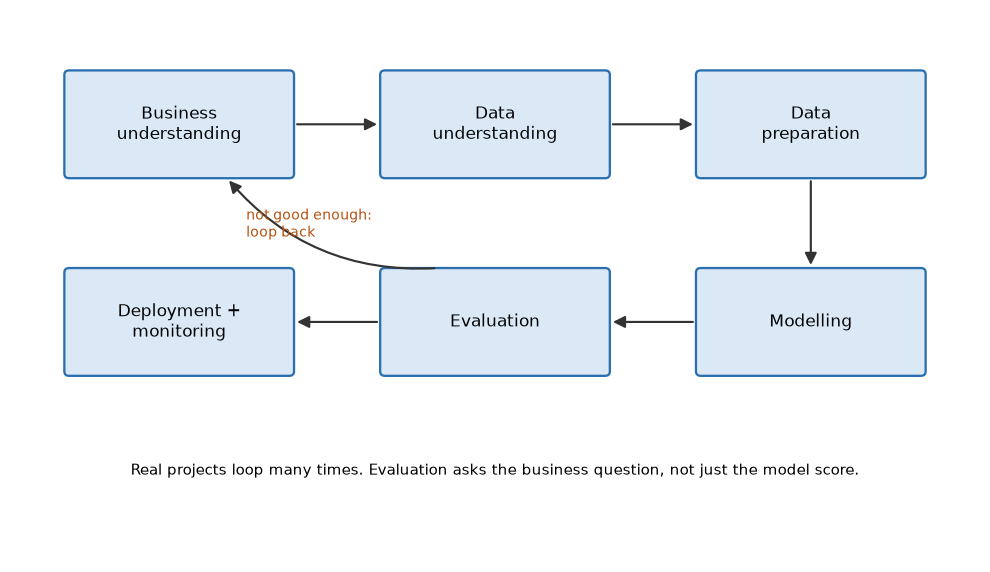
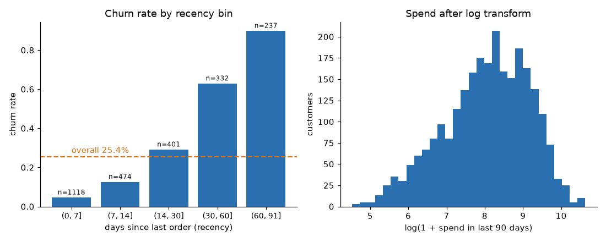
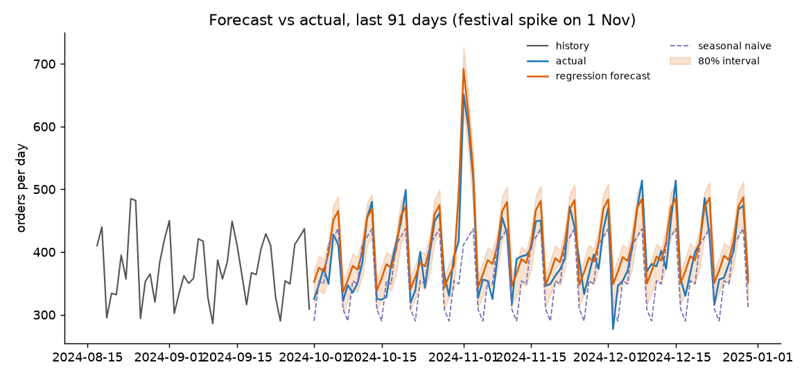

How working data scientists turn a vague business ask into a measured decision: framing, trustworthy data, honest statistics, features, experiments, causal thinking, forecasts, recommenders, domains, and the communication that gets work used.
Taught the IIT Professor Way — Real Numbers. Real Problems. Real Understanding.
If you have ever planned a project, spotted what was going wrong and explained it to a manager, you already have more than half of what this document teaches, in a new setting. Data science is not "run an algorithm". It is turning a fuzzy question ("customers are leaving") into a decision someone can act on ("send this offer to these people, this week"), and proving with honest numbers that the decision worked.
Most books teach models. This document teaches the parts around the model, where careers are made and projects fail: choosing the right question, building a training table that matches real life, hunting leakage, knowing how data fools you, running experiments, reasoning about cause and effect, forecasting with intervals, and writing the memo that makes a stakeholder say yes. The models themselves, such as logistic regression, trees and neural networks, live in their own document (study/ml/). Here we call them tools and focus on how to use them well.
Every chapter uses real code on synthetic datasets with fixed seeds, so you can reproduce each number. When the result is disappointing (for example a simple rule that nearly beats a model), we show it, because that is what real work looks like.
One rule, please: never move on until the current topic feels obvious. If a worked problem feels shaky, redo it by hand with fresh numbers. One hour a day with understanding beats five hours of skimming.
Each chapter ends with a recap (with a small formula and pattern table), a practice set of 8 to 12 graded problems with answers, and a prompt pack of 5 prompts you can paste into any AI assistant.
Appendix: Cheat Sheet (all key formulas and patterns by chapter) and An Honest Closing Note.
Follow this loop for every chapter:
Pace. About one chapter per week at one hour a day: three days for reading and running code, two days for the practice set, one day for the prompt pack and re-explaining, one day of rest or catching up. Chapters 1 to 6 are the foundation; do them in order. Chapters 7 to 12 can follow the role you are aiming for: product roles go to 7 and 8 first, supply chain and finance to 9 and 11, e-commerce to 10. Chapters 13 and 14 are for the last weeks before applying.
Using the prompt packs. Use "teach me" prompts before a chapter, "quiz me" prompts after, "review my work" prompts on your own mini-projects, and the "mock interview" prompt in the week before interviews. Always attempt before you ask for the answer.
Reproducibility. All code runs on Python 3 with numpy, pandas, scikit-learn and scipy, with fixed random seeds. The shop dataset used in Chapters 1 to 6 comes from the ds_common.py listing in Chapter 1. Output may differ slightly across library versions; where exact digits matter we say so.
pandas (the learner's Python study document).SELECT, JOIN, GROUP BY, CTEs (the learner's SQL study document).study/ml/.All free.
numpy, pandas, scipy, scikit-learn, matplotlib (the examples in this document were run with exactly these).statsmodels, lightgbm, lifelines, prophet, pulp or OR-Tools, PyMC, pandera, great_expectations, networkx.Imagine your manager says on Monday: "Customers are leaving. Fix it with data." What do you do at 10 am? Most beginners open a notebook and train a model. Professionals first ask what decision will change, what is the simple thing the business does today, and how they will know they won. This chapter teaches you that first week of any project. By the end you will be able to turn a vague request into a one-page brief, choose the right framing (classification, survival, uplift, forecast), write the prediction time and label window, and compare any model to a baseline. We also meet the synthetic shop dataset that we use in many chapters, and we see a surprising result: a one-line rule almost beats a machine-learning model.
How the time is really spent. A typical project is about 60% understanding the problem and getting and cleaning data, 20% modelling, and 20% communicating and getting the result used. These numbers are rough, but the shape is true. Beginners invest in algorithms. Professionals invest in framing and in communication.
Where data science creates value. There are six main ways:
| Value type | Example | Typical output |
|---|---|---|
| Decisions (analytics) | Which city should we open a warehouse in? | A memo and a chart |
| Automation (ML) | Auto-route support tickets | A model in production |
| Personalisation | Show each user relevant products | A ranking system |
| Forecasting | How many items will we sell next month? | A forecast and an interval |
| Optimisation | Which customers get a discount, within budget? | A plan from a solver |
| Risk reduction | Block fraudulent payments | A score and a threshold |
Role types. Titles differ across companies, so read the job description, not only the title.
| Role | Main work | Where modelling sits |
|---|---|---|
| Data Analyst | Dashboards, SQL, ad-hoc questions | Light statistics |
| Data Scientist (product / decision) | Experiments, causal questions, metrics | Statistics heavy |
| Applied Scientist | Build and ship ML for a product area | Core |
| ML Engineer | Production ML systems, pipelines, serving | Engineering heavy |
| Research Scientist | New methods, papers | Core, often academic |
| Analytics Engineer | Clean, tested data models (dbt, SQL) | None to light |
| Decision Scientist | Predictions + optimisation + business rules | Mixed |
| Quant | Pricing and trading models in finance | Heavy maths |
You are a working professional moving into data roles. Two natural targets are Data Scientist (product/decision) and ML/Data Platform or AIOps roles, where knowledge of operations, delays and capacity is valuable. Pick one target and read job descriptions for it every month.
How a DS team works with others.
Business owner --"we lose customers"--> Product manager
| |
v v
Data scientist <--- data --- Data engineer (pipelines, tables)
|
+--- model / analysis ---> ML engineer (serving, monitoring)
|
+--- results ---> Decision makers (act, or not)The data scientist is the translator in the middle. If any arrow is missing (no one owns the data, no one will act), the project fails regardless of model quality.
Worked problems
Problem 1.1.1 A team spends 10 weeks on a project. Use the 60/20/20 rule. How many weeks go to each part, and how many days is "modelling" if a week has 5 working days?
| Step 1 | 60% of 10 weeks = 6 weeks for understanding and data. |
|---|---|
| Step 2 | 20% of 10 weeks = 2 weeks for modelling, and 2 weeks for communication and adoption. |
| Step 3 | Modelling days = 2 × 5 = 10 working days. |
| Answer | 6 weeks problem and data, 2 weeks modelling (10 days), 2 weeks communication and adoption. |
| Check | 6 + 2 + 2 = 10 weeks, which matches the total. |
| Why it matters | This means that if you promise a stakeholder "a model in 2 weeks", you are really promising only the smallest slice; plan the other 8 weeks too. |
Problem 1.1.2 A model scores 0.90 AUC. The business team never uses it because the output is a number between 0 and 1 and they have no action tied to it. The model took 8 weeks. Estimate the value created if each correct retention action is worth Rs 500.
| Step 1 | Count the actions taken: zero, since nobody uses the output. |
|---|---|
| Step 2 | Value = 0 actions × Rs 500 = Rs 0. |
| Answer | The value is Rs 0. Model quality multiplied by "usage" is what counts, and usage was zero. |
| Check | Any number multiplied by zero is zero, so a better AUC cannot rescue it. |
| Why it matters | In plain words: 8 weeks of work produced nothing because nobody agreed on the action first. |
The picture
Value created = quality of decision x how often it is used
(model) (adoption)
A 0.90 AUC model used 0% of the time -> 0
A 0.80 AUC model used 100% of the time -> positiveConnection to the real job. In interviews you will be asked "tell me about a project". The best answers start with the decision and the impact, not with the algorithm.
Applications
Check yourself
Answer: for example decisions, forecasting, optimisation (also automation, personalisation, risk reduction).
Answer: ML Engineer.
Answer: zero.
CRISP-DM (Cross-Industry Standard Process for Data Mining) has six phases:

How to read this picture: each box is a phase. The straight arrows show the usual order. The curved arrow from Evaluation back to Business understanding is the loop: if the result is not good enough for the business, you go back to the question, not only to the model.
The same flow as text:
Business understanding <-----------------------+
| |
v |
Data understanding <---> Data preparation |
| |
v |
Modelling |
| |
v |
Evaluation -------+ (not good enough: loop back)
|
v
Deployment + monitoringReal projects loop many times. You find in Data understanding that the label is wrong, so you return to Business understanding. Modern variants add MLOps ideas (monitoring, retraining) and say "ship a thin version early".
| Phase | Questions to answer | Output |
|---|---|---|
| Business understanding | Who decides? What changes? What does success look like in money, time or risk? What is the current baseline? | One-page brief |
| Data understanding | What data exists? How is it generated? What is missing by design? | EDA notes, data dictionary |
| Data preparation | Grain, joins, cleaning, point-in-time features | Training table |
| Modelling | Baseline first, then improve | Candidate models, validation scores |
| Evaluation | Does it meet the business metric, not only the model metric? | Decision memo |
| Deployment | Who runs it, how is it monitored, who owns it? | Service or report, monitoring plan |
Here is how each phase looks in an everyday project, planning a new bus timetable, so the names feel familiar:
| CRISP-DM phase | Bus-timetable equivalent | Example value |
|---|---|---|
| Business understanding | Agree the goal and the peak-hour scenario | "90% of buses within 5 minutes of schedule at rush hour" |
| Data understanding | Read ticket logs to learn real passenger flow | Passengers peak at 8 am |
| Data preparation | Clean the ticket files, remove duplicates | One row per passenger trip |
| Modelling | Build the timetable and demand model | Buses every 10 minutes, 60/40 commuter/leisure |
| Evaluation | Compare results to the goal and last year's timetable | 92% on time vs 90% target |
| Deployment | Publish the timetable, set up daily monitoring | Daily on-time report with alerts |
Feasibility check. Before building, ask three questions:
The one-page project brief. Write this before coding. Share it with the stakeholder and get a "yes, this is what we want".
Title: Reduce 60-day churn among active customers
Problem: Active customers who stop ordering cost ~Rs 4 cr/year
Users: Retention team (acts), CRM manager (owns budget)
Decision: Who receives a Rs 100 voucher this week?
Data: orders, customers tables, snapshot on prediction date
Prediction time: Every Monday. Label: no order in next 60 days
Metric (business): Retained revenue per Rs of voucher spend
Metric (model): Precision@top-20%, AUC
Guardrails: Discount cost, % of customers contacted, complaints
Baseline: Rule: contact if no order in last 30 days
Risks: Selection bias in labels, offers train people to wait
Timeline: 1 week baseline, 2 weeks model, 1 week A/B test
Use of result: Weekly CSV to CRM; monitored monthlyWorked problems
Problem 1.2.1 A manager says: "Reduce churn." Turn it into a precise problem using the brief fields.
| Step 1 | Decide who: active customers (ordered in the last 90 days). |
|---|---|
| Step 2 | Decide the prediction time and window: every Monday; label = no order in the next 60 days. |
| Step 3 | Decide the action: a voucher, with a budget cap (say 20% of customers). |
| Step 4 | Decide the metric: retained revenue per Rs of voucher. |
| Answer | "Every Monday, rank active customers by probability of no order in the next 60 days, send vouchers to the top 20%, and measure retained revenue per rupee of voucher against a no-voucher holdout." |
| Check | Read it aloud: can the retention team do it on Monday morning, and can a finance person measure it? Yes to both, so the ask is precise. |
| Why it matters | The vague ask "reduce churn" could be 10 different projects; the precise one is a single project with a measurable result. |
Problem 1.2.2 In Data understanding you discover that 'order_ts' is stored in UTC but finance reports are in IST. A day's revenue is off by up to 5.5 hours of orders. Which CRISP-DM phase should you return to, and why?
| Step 1 | The metric ("daily revenue") is defined in the business view in IST. |
|---|---|
| Step 2 | If you do not fix it, your label windows and reports will not match finance numbers, and you lose trust. |
| Answer | Return to Data preparation to convert time zones, and note the rule in the data dictionary. If the label itself changes, go back to Business understanding. |
| Check | Convert one known order (UTC 2025-01-01 20:00) to IST: it becomes 2025-01-02 01:30. So the order moves to the next day; this is exactly the kind of mismatch that appears in daily totals. |
| Why it matters | Small definition mismatches cause big arguments ("your number is different from finance"). Fixing them early saves trust. |
Connection to the real job. Teams often use two-week sprints with the lifecycle compressed into "baseline, improve, ship, measure". You will write briefs, hold a kickoff with the stakeholder and present at the end. The brief protects you from scope creep.
Applications
Check yourself
Answer: business understanding, data understanding, data preparation, modelling, evaluation, deployment.
Answer: is there an actionable decision, enough signal, or acceptable cost of errors.
Answer: metrics that must not get worse, such as discount cost or complaints.
Common framings.
| Business wording | Framing | Typical target |
|---|---|---|
| Who will leave in 30 days? | Binary classification | 0 / 1 |
| When will they leave? | Survival / time-to-event | Time (with censoring) |
| Who will respond to the offer? | Uplift (causal) | Effect of treatment |
| How much will we sell? | Regression / forecasting | A number or series |
| What to show first? | Ranking | Ordered list |
| Group similar customers | Clustering | None |
| Something looks odd | Anomaly detection | Score |
| Do more X, will Y rise? | Causal inference | Effect of X on Y |
| Best plan under budget | Optimisation | Decision variables |
Prediction, explanation, causation. These are three different goals:
Prediction time and label window. This is the single most useful discipline. Write two dates:
past (features) | future (label)
-------------------------------------|--------------------------->
... Oct Nov Dec | T = 1 Jan Feb Mar
|
you may use only data BEFORE T | label looks at T .. T+60 daysEvery feature must be computable using data available before T. Every label must come from the window after T. This prevents leakage (using information from the future), the most common cause of "great offline score, bad real life".
Unit and grain. The unit of analysis is the thing you predict for (customer, session, order, device). The grain is what one row of the table means. "One row per customer per prediction date" is a grain. If you mix grains (some rows per order, some per customer), joins duplicate rows and averages mislead.
Worked problems
Problem 1.3.1 Frame these three asks: (a) "Which loan applicants will default within 12 months?" (b) "How many riders will we need next Friday 6 to 9 pm?" (c) "Which users should we email to increase purchases?"
| Step 1 | (a) default within a fixed window is binary classification; also note label delay of 12 months. |
|---|---|
| Step 2 | (b) a number over time is forecasting, with an interval, to decide staffing. |
| Step 3 | (c) "increase purchases by emailing" is about the effect of the email, so it is uplift modelling or an A/B test, not a plain purchase predictor. |
| Answer | (a) classification with delayed labels, (b) forecasting, (c) uplift / causal. |
The shop dataset. Our running example is a fake online shop with 6,000 customers and about 150,000 orders from January 2023 to April 2025. The full generator is the file ds_common.py below. Copy it and save it next to your notebooks; every later chapter starts with from ds_common import *. Customers have a plan (free or pro), a signup channel, a city and an age. Each customer orders at their own rate until they churn (stop for good). Higher churn risk is built in for the ads channel, the free plan and low order rate, so real patterns exist for us to discover.
import numpy as np
import pandas as pd
PRED_DATE = pd.Timestamp("2025-01-01") # the day we "make the prediction"
END_DATE = pd.Timestamp("2025-04-30") # last day of data we have
def make_data(n=6000, seed=42):
"""Synthetic subscription shop. Returns (customers, orders)."""
rng = np.random.default_rng(seed)
cid = np.arange(1, n + 1)
signup = pd.Timestamp("2023-01-01") + pd.to_timedelta(rng.integers(0, 730, n), unit="D")
plan = rng.choice(["free", "pro"], n, p=[0.7, 0.3])
channel = rng.choice(["organic", "ads", "referral"], n, p=[0.5, 0.35, 0.15])
city = rng.choice(["Mumbai", "Delhi", "Bengaluru", "Pune", "Chennai", "Other"],
n, p=[0.2, 0.2, 0.2, 0.1, 0.1, 0.2])
age = np.clip(rng.normal(32, 9, n), 18, 70).round()
rate = rng.gamma(2.0, 0.04, n) * np.where(plan == "pro", 1.6, 1.0) # orders per day
# churn hazard per day (higher for ads channel, free plan, low order rate)
hazard = 0.004 * np.exp(0.5 * (channel == "ads") - 0.7 * (plan == "pro")
- 0.3 * (channel == "referral") - 6.0 * (rate - 0.08))
churn_day = signup + pd.to_timedelta(rng.exponential(1 / hazard).round(), unit="D")
rows = []
for i in range(n):
stop = min(churn_day[i], END_DATE)
days = (stop - signup[i]).days
if days <= 0:
continue
k = rng.poisson(rate[i] * days)
if k == 0:
continue
offs = np.sort(rng.integers(0, days + 1, k))
amt = rng.lognormal(6.0 + 0.3 * (plan[i] == "pro"), 0.6, k).round(2)
cat = rng.choice(["grocery", "fashion", "electronics", "home"], k, p=[0.5, 0.2, 0.1, 0.2])
for o, a, c in zip(offs, amt, cat):
rows.append((cid[i], signup[i] + pd.Timedelta(days=int(o)), a, c))
orders = pd.DataFrame(rows, columns=["customer_id", "order_ts", "amount", "category"])
orders.insert(0, "order_id", np.arange(1, len(orders) + 1))
customers = pd.DataFrame({"customer_id": cid, "signup_date": signup, "plan": plan,
"channel": channel, "city": city, "age": age})
return customers, orders
def make_label_table(customers, orders, pred_date=PRED_DATE, active_days=90, horizon=60):
"""One row per ACTIVE customer at pred_date; label = no order in next `horizon` days."""
past = orders[orders.order_ts < pred_date]
last = past.groupby("customer_id").order_ts.max()
active = last[last >= pred_date - pd.Timedelta(days=active_days)].index
fut = orders[(orders.order_ts >= pred_date) &
(orders.order_ts < pred_date + pd.Timedelta(days=horizon))]
buyers = set(fut.customer_id)
df = customers[customers.customer_id.isin(active) & (customers.signup_date < pred_date)].copy()
df["churn"] = (~df.customer_id.isin(buyers)).astype(int)
return df.reset_index(drop=True)make_label_table is the whole prediction-time idea in 10 lines: it finds customers who ordered in the 90 days before T, then looks only at orders in the 60 days after T to build the label.
Problem 1.3.2 Define prediction time, label and grain for 60-day churn in the shop dataset, then count the rows with code.
| Step 1 | Prediction date T = 2025-01-01. Population: customers who signed up before T and ordered in the 90 days before T (the "active" ones). |
|---|---|
| Step 2 | Label = 1 if no order in [T, T+60 days). Grain = one row per active customer. |
| Step 3 | Before you run it: how many rows do you expect? (Hint: roughly 6,000 customers, but only some are active and signed up before T.) Then generate the data and build the table with ds_common.py. |
from ds_common import *
customers, orders = make_data() # seed 42, 6000 customers
d = make_label_table(customers, orders) # active customers at 2025-01-01
print(customers.shape, orders.shape)
print(d.shape, round(d.churn.mean(), 3))(6000, 6) (151719, 5)
(2562, 7) 0.254Line by line: make_data() returns two tables, 6,000 customers with 6 columns and 151,719 orders with 5 columns. make_label_table keeps only active customers and adds the churn column, so we get 2,562 rows and 7 columns. d.churn.mean() is the share of ones, which is the churn rate.
Connection to the real job. Interviewers say "How would you predict churn?" A strong answer starts: "First, define churn, the prediction time, and what action we will take."
Applications
Check yourself
Answer: survival analysis (time-to-event with censoring).
Answer: the prediction time T, and the end of the label window.
Answer: what one row of a table represents.
Three levels of metrics.
| Level | Question | Example for churn |
|---|---|---|
| Business | Did we make money, save time, reduce risk? | Retained revenue per rupee spent |
| Model | Does the model rank or predict well? | AUC, precision at top 20%, calibration |
| Guardrail | What must not get worse? | Discount cost, complaint rate, customers contacted |
The business metric is the one that matters. The model metric is a proxy you can compute quickly offline. The guardrails stop you from "winning" by damaging something else.
Baselines, from dumbest to smartest.
You only claim progress by comparing to the highest baseline you can build cheaply.
Worked example (run with real output). We build three features at T: recency (days since the last order), orders_90d (how many orders in the 90 days before T) and is_pro (1 if on the pro plan). Then we compare the baselines. We use train_test_split, which cuts the table into a training part (70%) and a test part (30%) so we score the model on rows it never saw. (Chapter 6 explains why a time-based split is better in real work; here we keep it simple.)
Before you run it, predict: will the logistic model beat the simple rule by a lot, a little, or not at all?
from ds_common import *
from sklearn.linear_model import LogisticRegression
from sklearn.model_selection import train_test_split
from sklearn.metrics import roc_auc_score, precision_score, recall_score
c, o = make_data()
d = make_label_table(c, o)
past = o[o.order_ts < PRED_DATE] # only data before T
g = past.groupby("customer_id")
f = pd.DataFrame({
"recency_days": (PRED_DATE - g.order_ts.max()).dt.days,
"orders_90d": past[past.order_ts >= PRED_DATE - pd.Timedelta(days=90)]
.groupby("customer_id").size(),
})
d = d.merge(f, left_on="customer_id", right_index=True, how="left")
d["is_pro"] = (d.plan == "pro").astype(int)
tr, te = train_test_split(d, test_size=0.3, random_state=0, stratify=d.churn)
print("B0 accuracy (predict nobody churns):", round(1 - te.churn.mean(), 3))
rule = (te.recency_days > 30).astype(int)
print("B1 rule recency>30: precision", round(precision_score(te.churn, rule), 3),
"recall", round(recall_score(te.churn, rule), 3),
"AUC", round(roc_auc_score(te.churn, te.recency_days), 3))
X = ["recency_days", "orders_90d", "is_pro"]
m = LogisticRegression(max_iter=1000).fit(tr[X], tr.churn)
p = m.predict_proba(te[X])[:, 1]
print("M1 logistic AUC", round(roc_auc_score(te.churn, p), 3))
k = int(0.2 * len(te))
top = te.assign(p=p).sort_values("p", ascending=False).head(k)
print("top 20% size", k, "churn rate inside", round(top.churn.mean(), 3),
"lift", round(top.churn.mean() / te.churn.mean(), 2))
top_r = te.sort_values("recency_days", ascending=False).head(k)
print("rule-based top 20% churn rate", round(top_r.churn.mean(), 3))Real output:
B0 accuracy (predict nobody churns): 0.746
B1 rule recency>30: precision 0.759 recall 0.662 AUC 0.879
M1 logistic AUC 0.881
top 20% size 153 churn rate inside 0.778 lift 3.07
rule-based top 20% churn rate 0.778Read this carefully. "Predict nobody churns" gets 74.6% accuracy while being useless: accuracy is a bad metric for imbalanced problems. The business rule already reaches AUC 0.879. The logistic model reaches 0.881, a tiny gain. In the top 20% (153 customers) both find a churn rate of 77.8%, which is 3.07 times the base rate of 25.4%.
Line by line: past keeps only orders before T, which enforces the rule "no future data". g.order_ts.max() is each customer's last order date, so PRED_DATE - ... gives recency in days. rule is 1 when recency is above 30 days. precision_score asks: of those we flagged, how many really churned? recall_score asks: of those who churned, how many did we flag? roc_auc_score is the chance that a random churner gets a higher score than a random non-churner (0.5 is a coin flip, 1.0 is perfect). lift is the churn rate inside the chosen group divided by the overall churn rate.
Why is the rule so strong? In our data, customers who stopped ordering already churned, and recency shows that. The model adds only a little because recency carries most of the signal. This is common on real data and is the best argument for always building the rule first.
Worked problems
Problem 1.4.1 Use the numbers above. The retention team can voucher 153 customers in the test set. Each churner saved is worth Rs 600 in revenue, and each voucher costs Rs 100. Assume (optimistically) that a voucher saves 30% of the churners who receive it. What is the expected net value of targeting the model's top 20%, versus 153 random customers?
| Step 1 | Model top 20%: churners = 153 × 0.778 = 119.0 (rounded to 119). |
|---|---|
| Step 2 | Saved = 119 × 0.30 = 35.7 customers. Revenue = 35.7 × 600 = Rs 21,420. Cost = 153 × 100 = Rs 15,300. Net = Rs 6,120. |
| Step 3 | Random 153: churners = 153 × 0.254 = 38.9. Saved = 11.7. Revenue = 11.7 × 600 = Rs 7,020. Cost = Rs 15,300. Net = Rs -8,280. |
| Answer | Targeting the top 20% gives about +Rs 6,120, random gives about -Rs 8,280. Targeting is worth about Rs 14,400 per campaign of this size. Note the simple rule does as well as the model here, so the model's value over the rule is near zero on this metric. |
| Check | 6,120 - (-8,280) = 14,400, and 153 × (0.778 - 0.254) × 0.30 × 600 = 14,431, which agrees up to rounding. |
| Why it matters | In plain words: picking the right 153 people turns a money-losing campaign into a profitable one. That difference, not the AUC, is what you show the CRM manager. |
Problem 1.4.2 A teammate reports "our model has 92% accuracy" on a fraud problem where 1% of transactions are fraud. Is it good?
| Step 1 | A model that says "never fraud" gets 99% accuracy. |
|---|---|
| Step 2 | So 92% accuracy is worse than doing nothing. |
| Answer | It is not good. Report precision, recall, and PR-AUC, and compare to a baseline. |
| Check | 0.99 > 0.92, so the do-nothing model wins on accuracy. |
| Why it matters | If you do not check the baseline, you can proudly present a model that is worse than doing nothing. |
The picture: baseline ladder
AUC
0.50 random / constant
0.879 rule: recency > 30 days <- strong, cheap
0.881 logistic on 3 features <- +0.002, is it worth it?
? gradient boosting with 60 features <- must beat 0.881 meaningfullyConnection to the real job. In an interview or on the job you will often hear "the model improved AUC by 0.01". Ask: over what baseline, on what data, and what is that worth in rupees? A simple model with 90% of the value that ships next week often beats a complex one that ships in three months.
Applications
Check yourself
Answer: business, model, guardrail.
Answer: it shows how high accuracy is without any skill, so you know accuracy is meaningless.
Answer: check if the gain has business value; maybe ship the rule or keep improving features.
| Idea | Formula or pattern | Example from this chapter |
|---|---|---|
| Improvement % | (old - new) / old × 100 | 480 ms to 360 ms is 25% |
| Base rate | positives / rows | 651 / 2,562 = 0.254 |
| Lift | rate in group / base rate | 0.778 / 0.254 = 3.07 |
| Precision | true flagged / all flagged | 0.759 for the 30-day rule |
| Recall | true flagged / all true | 0.662 for the 30-day rule |
| Expected value per target | rate × save rate × value - cost | 0.778 × 0.30 × 600 - 100 = 40 |
| Timeline rule | features before T, label after T | T = 2025-01-01, window 60 days |
Problem 1.P.1 (easy) A project lasts 15 weeks. Using 60/20/20, how many weeks go to modelling? Answer: 20% of 15 = 3 weeks.
Problem 1.P.2 (easy) Which is "prediction", "explanation" or "causation": "If we cut price by 5%, how will sales change?" Answer: Causation (effect of an action).
Problem 1.P.3 (easy) A table has one row per order. You join to a customer table and compute "average per row" for customers. Why might the result mislead? Answer: Grain mismatch: customers with many orders get more weight in averages across rows. Aggregate to the customer grain first.
Problem 1.P.4 (medium) The base churn rate is 25.4%. Find the lift if the model's top 100 customers (the top 10% of 1,000) contain 70 churners. Answer: Churn rate in the top group = 70/100 = 0.70. Lift = 0.70 / 0.254 = 2.76.
Problem 1.P.5 (medium) What is the output? 1 - te.churn.mean() where churn mean is 0.254. Answer: 0.746, the accuracy of "never churn".
Problem 1.P.6 (medium) Find the bug: features include orders_next_30d for churn prediction at T. Answer: It looks into the future (after T), which is leakage. Remove it. Use only data before T.
Problem 1.P.7 (medium) Fraud rate is 0.5%. A model flags 2% of transactions and catches 60% of all fraud. What is its precision? Answer: Per 10,000 transactions: fraud = 50, flagged = 200, caught = 30. Precision = 30/200 = 15%.
Problem 1.P.8 (hard) You have budget for 200 vouchers, each costs Rs 100, a saved customer is worth Rs 600, and the save rate is 25% of churners targeted. At what churn rate inside the targeted group does net value become zero? Answer: Expected value per targeted customer = churn rate × 0.25 × 600 - 100 = 150 × churn rate - 100. Zero at churn rate 100/150 = 0.667. Below 66.7% the campaign loses money.
Problem 1.P.9 (interview) "A stakeholder asks you to build a churn model. What do you do in the first week?" Answer: Meet the stakeholder; define churn, prediction time, label window, action and budget; check data availability; compute base rate and a rule baseline; write the one-page brief; agree the metric and guardrails; plan an A/B test for the action.
Problem 1.P.10 (interview) "Your new model has AUC 0.82; the old rule has 0.80. Do you ship?" Answer: Not automatically. Check the business metric at the operating threshold, cost of complexity, stability over time and calibration. If the rupee gain is small, ship the rule or iterate on features. Run an A/B test if the stakes justify it.
You are my patient, practical professor. I am a working professional at an Indian MNC moving into data science, and English is my second language, so use simple words. Teach me "the data science project lifecycle (CRISP-DM)" step by step, using a retail churn example. After each phase, ask me one question and wait for my answer before continuing. Correct my mistakes kindly. Finish by asking me to write a one-page project brief for a problem I choose, and review it.
You are my patient, practical professor. I am a working professional moving into data science and I study one hour a day. Topic: "problem framing in data science: classification vs survival vs uplift vs forecasting, and prediction time and label windows". Give me 8 graded exercises, from easy to hard, each starting from a vague business ask. Do not give solutions yet. After I answer, I will paste my answers and you will grade them and explain the gaps.
You are my patient, practical professor. I am a working professional new to data science. Topic: "baselines and success metrics (business, model, guardrail)". Quiz me one question at a time, mixing numerical questions (lift, precision, expected value of a campaign) and conceptual ones (why accuracy fails on imbalanced data). Wait for my answer, grade it, explain, then go to the next. Ask 10 questions.
You are my patient, practical professor. I am a working professional moving into data science. Review my project brief for a data science project. Check the decision, prediction time, label window, grain, baseline, three levels of metrics, risks and how the result will be used. Point out vague parts and leakage risks, and suggest concrete rewrites in simple English. Here is my brief: [PASTE HERE]
You are my patient, practical professor. I am a working professional preparing for data science interviews in India. Run a mock interview on "what a data scientist does, lifecycle, framing and baselines". Ask me one scenario question at a time, such as "How would you predict churn?" or "Your AUC is great but nobody uses the model". After each answer, give a score out of 10, a better sample answer, and one follow-up question. Do 8 rounds.
Think about a hospital that studies waiting times from its appointment log, but the log misses every patient who gave up and left without being seen. The results look great and the real waiting room is overflowing. Data science has the same trap. If the training data is built wrongly, the best model still fails in real use. In this chapter you will learn how to find the right data sources, how to build a training table so that every feature uses only information that existed at the prediction time (called point-in-time correctness), how to run quality checks that catch broken data, how to think about labels that are late, noisy or biased, and how to respect privacy law and ethics. You will leave with SQL and pandas code you can reuse on any project.
We use the shop dataset from Chapter 1 (from ds_common import *).
Words you need
| Word | Plain meaning | Example |
|---|---|---|
| Source system | Where a record is first created | The orders database of the shop |
| Event log (clickstream) | An append-only list of "something happened" rows | One row per page view |
| Warehouse | A central database copy built for analysis | Tables like orders, customers |
| Prediction time (T) | The moment the prediction is made | 2025-01-01 |
| Point-in-time correct | Each feature uses only data from before T | orders_90d counts orders before T only |
| Leakage | Information from after T (or the label itself) entering a feature | days_to_last uses all orders |
Data sources and how they are generated. Always ask "what event creates a row?" and "what is missing by design?".
| Source | What creates a row | Missing by design | Where it appears in the job |
|---|---|---|---|
| Operational DB (orders) | A completed purchase | Abandoned carts, failed payments | Revenue, churn labels |
| Event log / clickstream | A click or screen view | Users who blocked tracking | Behaviour features |
| Warehouse tables | A nightly copy of other systems | Edits made after the copy | Reporting and training sets |
| Third-party / APIs | A vendor call | Anyone the vendor does not cover | Credit bureau scores, weather |
| Surveys | A person who answered | Non-responders (often unhappy users) | NPS, satisfaction |
| Sensors / monitoring | A measurement at fixed intervals | Gaps when the device is offline | Latency, IoT |
| Manual labels | A human decision | Cases nobody reviewed | Fraud confirmed by analysts |
Notice the "missing by design" column. It is like a shop door counter that never records the customers who turned away at a locked door. The data cannot show what it was never able to record.
Point-in-time training set. Remember the timeline from Chapter 1. Features come from before T and the label from after T. Here is the SQL version (SQLite syntax; other databases differ in date functions). We load the shop tables into an in-memory SQLite database and build the table for T = 2025-01-01.
Before you run it, ask yourself: how many rows should this return? It should equal the number of active customers from Chapter 1.
import sqlite3
from ds_common import *
c, o = make_data()
con = sqlite3.connect(":memory:")
c.assign(signup_date=c.signup_date.dt.strftime("%Y-%m-%d")).to_sql("customers", con, index=False)
o.assign(order_ts=o.order_ts.dt.strftime("%Y-%m-%d")).to_sql("orders", con, index=False)
sql = """
WITH base AS (
SELECT c.customer_id, c.plan, c.channel,
CAST(julianday(:T) - julianday(c.signup_date) AS INT) AS tenure_days
FROM customers c WHERE c.signup_date < :T
),
past AS (
SELECT customer_id,
COUNT(*) AS orders_90d,
SUM(amount) AS spend_90d,
CAST(julianday(:T) - julianday(MAX(order_ts)) AS INT) AS recency_days
FROM orders
WHERE order_ts < :T
AND order_ts >= date(:T, '-90 day')
GROUP BY customer_id
),
fut AS (
SELECT DISTINCT customer_id FROM orders
WHERE order_ts >= :T AND order_ts < date(:T, '+60 day')
)
SELECT b.*, p.orders_90d, p.spend_90d, p.recency_days,
CASE WHEN f.customer_id IS NULL THEN 1 ELSE 0 END AS churn
FROM base b
JOIN past p USING (customer_id) -- inner join = active customers only
LEFT JOIN fut f USING (customer_id)
"""
d = pd.read_sql(sql, con, params={"T": "2025-01-01"})
print(d.shape, round(d.churn.mean(), 3))
print(d.head(3).round(1).to_string())(2562, 8) 0.254
customer_id plan channel tenure_days orders_90d spend_90d recency_days churn
0 1 pro referral 666 3 2403.8 8 0
1 3 free organic 254 8 3828.1 37 1
2 6 pro ads 105 5 4034.3 34 0Line by line. The base block lists customers who existed before T and computes tenure up to T. The past block has two guards, order_ts < :T and order_ts >= date(:T, '-90 day'): they say "only before T, and only the last 90 days". The fut block is the label window and is used only to create churn. JOIN past is an inner join, so customers with no order in the last 90 days drop out: this defines who is "active". LEFT JOIN fut keeps everyone and gives NULL when there was no future order, which we turn into churn = 1. We get 2,562 rows and a 25.4% churn rate, the same as the pandas helper (the code also checked that both methods agree: rows match and churn counts match).
Worked problems
Problem 2.1.1 A feature is orders_all = the number of orders a customer ever made (all dates in the table), used to predict churn at T = 2025-01-01. A customer who churned on 2025-01-20 has 14 orders in total, 10 before T. A customer who kept ordering has 40 orders in total, 12 before T. Which numbers should the model see, and why?
| Formula | feature value must be computed from rows with order_ts < T. |
|---|---|
| Plug in | Customer A: 10 orders before T. Customer B: 12 orders before T. |
| Compute | The leaky feature gives 14 vs 40, a gap of 26. The honest feature gives 10 vs 12, a gap of 2. |
| Answer | The model must see 10 and 12. The leaky values 14 and 40 include orders after T, so the churner looks "low" only because they stopped later. |
| Check | On January 1st nobody knows how many orders a customer will make later; if a feature value cannot be known on that date, it is leakage. |
| Why it matters | It means the model learns "customers who will order more in the future will order more in the future", which is true and useless. |
Problem 2.1.2 Measure the damage. Compare the AUC of a logistic regression on honest features (orders_90d, recency_days, spend_90d) with a version that adds days_to_last = (date of the customer's last order in the entire table) minus T.
| Step 1 | Compute days_to_last from all orders, including those after T. |
|---|---|
| Step 2 | Fit the same model on both feature sets, same 70/30 split, same seed. |
| Step 3 | Compare. |
leaky = pd.read_sql("SELECT customer_id, MAX(order_ts) AS last_order FROM orders GROUP BY customer_id", con)
leaky["days_to_last"] = (pd.to_datetime(leaky.last_order) - pd.Timestamp("2025-01-01")).dt.days
dd = d.merge(leaky, on="customer_id")
from sklearn.linear_model import LogisticRegression
from sklearn.model_selection import train_test_split
from sklearn.metrics import roc_auc_score
def auc_for(cols, data):
tr, te = train_test_split(data, test_size=0.3, random_state=0, stratify=data.churn)
m = LogisticRegression(max_iter=2000).fit(tr[cols], tr.churn)
return round(roc_auc_score(te.churn, m.predict_proba(te[cols])[:, 1]), 3)
print("honest AUC :", auc_for(["orders_90d", "recency_days", "spend_90d"], dd))
print("leaky AUC :", auc_for(["orders_90d", "recency_days", "spend_90d", "days_to_last"], dd))honest AUC : 0.882
leaky AUC : 0.972days_to_last is positive only for customers who ordered after T, which is exactly the opposite of the label churn. A jump this big from one column is a smell.The picture
time ---------------------------------------------------------------->
|---- feature window (90 days) ----|T|---- label window (60 days) ----|
orders_90d, recency, spend ^ churn = no order here
|
LEAK: any column that looks to the right of TSampling. You rarely train on all data. Three common ways:
| Method | How | Use when | Danger |
|---|---|---|---|
| Random | Pick rows with equal chance | Rows are independent | Same customer in train and test |
| Stratified | Keep class shares equal in each part | Rare positives | Hides distribution shift |
| Time-based | Train on the past, test on the future | Anything with time (almost everything) | Fewer rows for training |
A sample misrepresents the population when selection depends on the outcome, for example "only customers who answered our survey".
Join pitfalls. Four traps:
2 customers -> 3 rows), while distinct customers stayed 2. Then SUM or COUNT over customers double counts.Documenting. Keep a data dictionary: column name, meaning, unit, time zone, how it is created, known issues, owner. Define metrics once ("active customer = at least 1 order in 90 days") in a source-of-truth table or view.
Connection to the real job. Building this table is usually the longest step of a project. In interviews, "write SQL to build a churn training set" is a standard question; the examiner looks for the < T guards.
Applications
Check yourself
order_ts < :T protect against?Answer: using information from after the prediction time (leakage).
Answer: fan-out from a non-unique key on the right table.
Answer: they copy real use, where the model predicts the future from the past.
Six dimensions of quality.
| Dimension | Question | Example check | Example in our shop |
|---|---|---|---|
| Completeness | Are values present, and why not? | Null rate by column and by segment | category is null in 0.1% |
| Validity | Are values possible? | Ranges, formats, units, time zones | amount <= 0 |
| Uniqueness | Are keys unique? | Duplicate order_id | 300 duplicates |
| Consistency | Do two computations agree? | Sum of orders = finance total | difference 0.17% |
| Timeliness | Is the data final? | Complete counts for yesterday | 59% complete same day |
| Stability | Did the distribution change silently? | Monthly mean amount | around 570-582 |
Null reasons. A null can mean not applicable (a free plan has no discount code), not recorded (a sensor was off), or error (a bug dropped the field). They need different fixes, so always ask why.
We now damage a copy of the orders on purpose, so you can see what the checks catch. Predict first: which of the checks below will be non-zero for the damaged table?
bad = o.copy()
dup = bad.sample(300, random_state=1)
bad = pd.concat([bad, dup], ignore_index=True) # 300 duplicate rows
bad.loc[bad.sample(40, random_state=2).index, "amount"] = -99.0 # impossible values
bad.loc[bad.sample(25, random_state=3).index, "order_ts"] = pd.Timestamp("2030-01-01")
bad.loc[bad.sample(150, random_state=4).index, "category"] = None
def quality_report(df, name="orders"):
r = {}
r["rows"] = len(df)
r["dup_order_id"] = int(df.order_id.duplicated().sum())
r["null_category_pct"] = round(df.category.isna().mean() * 100, 2)
r["amount<=0"] = int((df.amount <= 0).sum())
r["order_ts_in_future"] = int((df.order_ts > END_DATE).sum())
r["orphan_customer_ids"] = int((~df.customer_id.isin(c.customer_id)).sum())
return pd.Series(r, name=name)
print(pd.concat([quality_report(o, "clean"), quality_report(bad, "damaged")], axis=1).to_string()) clean damaged
rows 151719.0 152019.0
dup_order_id 0.0 300.0
null_category_pct 0.0 0.1
amount<=0 0.0 40.0
order_ts_in_future 0.0 25.0
orphan_customer_ids 0.0 0.0Line by line: duplicated().sum() counts rows whose key already appeared above. isna().mean() is the share of nulls (True counts as 1). df.order_ts > END_DATE finds dates later than the last day we could possibly have data. isin checks that every order points to a real customer (an "orphan" has no parent). Four checks fire, one stays zero, which is also information: the foreign keys are intact.
Worked problems
Problem 2.2.1 Reconcile with finance. The finance team says total order value is Rs 86,580,170. Your damaged table sums to Rs 86,723,834. How big is the gap in percent, and which defects could explain it?
| Formula | gap % = (yours - finance) / finance × 100 |
|---|---|
| Plug in | (86,723,834 - 86,580,170) / 86,580,170 × 100 |
| Compute | 143,664 / 86,580,170 = 0.001659, so 0.17% |
| Answer | The damaged table is 0.17% too high. The 300 duplicated orders add money (about 300 × Rs 570 = Rs 171,000) and the 40 negative amounts subtract 40 × (570 + 99), roughly Rs 27,000; the net is close to +Rs 144,000. |
| Check | 171,000 - 27,000 = 144,000, near the 143,664 observed. |
| Why it matters | A 0.17% gap looks small, yet it proves the pipeline is wrong. Reconciling to a trusted number is the cheapest test you have. |
Problem 2.2.2 Timeliness. We simulate that each order arrives in the warehouse 0 to 3 days after it happened. On 2025-04-20, how complete is the data for each of the last four days?
2025-04-20 complete on 04-20: 125 / 211 59.2 %
2025-04-19 complete on 04-20: 191 / 223 85.7 %
2025-04-18 complete on 04-20: 220 / 237 92.8 %
2025-04-17 complete on 04-20: 229 / 229 100.0 %Stability over time. Compare simple summaries by month (mean amount, null rate, row count). Our mean order amounts for Jan to Apr 2025 are 580.6, 568.1, 576.0, 582.0: stable. A sudden jump to 1,160 in one month would suggest a currency or unit change. This is your "silent pipeline change" detector.
Automating. Write checks as code, run them every day: pandera (schema checks on DataFrames), great_expectations (declarative expectations), or plain SQL tests (SELECT COUNT(*) ... HAVING COUNT(*) > 1). These libraries were not run here; the idea is the same as our quality_report function.
The picture
raw data --> [schema check] --> [row-count check] --> [range check]
| | |
fail: stop fail: alert fail: quarantine rows
--> [reconcile with finance] --> [distribution vs last month] --> training tableConnection to the real job. Data engineers own the pipelines; you own the sanity of what you use. A good habit is a 10-line quality_report at the top of every notebook.
Applications
order_id repeats, it is a duplicate; if only the other columns repeat, it may be real.Check yourself
Answer: investigate duplicates, test rows, currency and time zone issues until it reconciles.
Answer: waiting some days before using data because late records are still arriving.
Answer: it depends: not applicable, not recorded, or error; find out which.
Words you need
| Word | Meaning | Example |
|---|---|---|
| Proxy label | A measurable stand-in for the real goal | "Clicked" for "liked" |
| Label noise | Some labels are simply wrong | A fraud case marked "genuine" by mistake |
| Label delay / censoring | The outcome is not yet known | Loan from last month: default within 12 months unknown |
| Selection bias in labels | Outcomes are seen only for a chosen subset | Defaults seen only for approved loans |
| Inter-annotator agreement | How much human labellers agree | Cohen's kappa |
Cohen's kappa. Two people label 100 items. They agree on 85, but part of that is luck. Kappa removes the luck: kappa = (po - pe) / (1 - pe), where po is the observed agreement and pe is the agreement expected by chance from each person's label rates. 0 means no better than chance, 1 is perfect; values above about 0.6 are usually considered good, but the threshold depends on the problem.
Worked problems
Problem 2.3.1 Annotator A and B label 100 tickets as "urgent" (1) or not (0). Both say urgent for 40. A says urgent and B not urgent for 10. A says not urgent and B urgent for 5. Both say not urgent for 45. Compute kappa.
| Formula | kappa = (po - pe) / (1 - pe) |
|---|---|
| Step 1 | po = (40 + 45) / 100 = 0.85. |
| Step 2 | A says urgent for 50 of 100, so 0.50. B says urgent for 45 of 100, so 0.45. |
| Step 3 | pe = 0.50 × 0.45 + 0.50 × 0.55 = 0.225 + 0.275 = 0.50. |
| Compute | kappa = (0.85 - 0.50) / (1 - 0.50) = 0.35 / 0.50 = 0.70. |
| Answer | Kappa = 0.70. sklearn.metrics.cohen_kappa_score gives the same 0.7 (verified by code). |
| Check | If they agreed on everything, po = 1 and kappa = 1. If po = pe, kappa = 0. Ours is between them. |
| Why it matters | In plain words: even with 85% raw agreement, only 70% of the "above-chance" room is agreed. If kappa is low, your labelling guidelines are unclear and no model can learn a stable rule. |
Problem 2.3.2 Label delay. A bank wants to predict default within 12 months and has loans from Jan 2024 to Jun 2025. Today is end of June 2025. Which loan months have mature labels?
month months_observed label_mature
2024-11 7 False
2024-12 6 False
2025-01 5 False
...
2025-06 0 FalseProblem 2.3.3 Selective labels. A bank approves only applicants with income score above -0.2 (in standard-deviation units). We simulate 20,000 applicants. What default rate does the training data show, versus the truth?
true default rate, everyone : 0.1885
default rate among approved only : 0.0652 (what the training data shows)
approval share: 0.58Human labelling and weak labels. For human labels, write clear guidelines with examples, double-label a sample and track kappa, audit a random 5% each week, and use active learning (let the model choose the most uncertain items for humans to label first) to save effort. Weak supervision (the Snorkel idea) writes heuristic rules such as "contains the word refund means billing ticket", combines their noisy votes, and trains on that. It is fast but inherits the rules' errors, so always validate on a small hand-labelled set. PU problems (positive-unlabelled) arise when only positives are known (confirmed fraud) and the rest are simply "not yet flagged"; treating all unlabelled rows as negative biases the model, so use methods that estimate the share of hidden positives.
The picture
What we care about -> What we can measure -> What we label
"customer is happy" "clicked / reviewed" "stars >= 4"
^ each arrow loses information; label quality caps model qualityConnection to the real job. In every project, spend an hour on "what does the label really mean, and when do we know it?". Ask the owner of the process, not only the table.
Applications
Check yourself
Answer: chance agreement is also 80%, for example when almost all items are one class.
Answer: the model never sees outcomes for rejected people, so risk is underestimated and biased.
Answer: the outcome has not happened yet within the observed time, so the true label is unknown.
Words you need
| Word | Meaning | Example |
|---|---|---|
| PII (personally identifiable information) | Data that identifies a person alone or combined | Name, phone, Aadhaar, email, IP |
| Pseudonymisation | Replace identifiers by tokens; re-linking is possible with a key | b1f22c3870 instead of customer 1 |
| Anonymisation | Remove identifiability so it cannot be reversed | Aggregates with large groups |
| Minimisation | Collect and keep only what is needed | Do not store date of birth if age band suffices |
| Purpose limitation | Use data only for the stated purpose | Support data not reused for ad targeting |
| k-anonymity | Every combination of quasi-identifiers appears at least k times | k = 15 for city × age band |
Laws. India's DPDP Act (Digital Personal Data Protection Act, 2023) and the EU's GDPR share core ideas: consent (a clear, specific agreement), purpose limitation, minimisation, the right to access and erase one's data, breach notification and extra care for children. Rules and timelines change, so check the current text and your company's legal team; this chapter is awareness, not legal advice.
Sensitive attributes and proxies. Caste, religion, gender, health and similar attributes carry high risk of unfair treatment. Even if you drop them, proxy variables can leak them: pincode can stand in for caste or religion, first name for gender and region, shopping basket for health. Test it: try to predict the sensitive attribute from your features. If you can, the model can use it indirectly.
Awareness: differential privacy and federated learning. Differential privacy adds calibrated random noise so that no single person's presence changes the published result much. Federated learning trains a model on devices or sites without moving raw data to one place. Both are advanced; you only need to know the names and the idea now.
Worked problems
Problem 2.4.1 Pseudonymise customer ids with a keyed hash and check how identifiable a table is. We create a token with HMAC-SHA256 and a secret key, and generalise age into bands.
import hashlib, hmac
SECRET = b"demo-secret-not-for-real-use" # in real life: stored in a vault, never in code
c["cust_token"] = [hmac.new(SECRET, str(i).encode(), hashlib.sha256).hexdigest()[:10]
for i in c.customer_id]
c["age_band"] = pd.cut(c.age, [17, 25, 35, 50, 70], labels=["18-25", "26-35", "36-50", "51-70"])
print(c[["customer_id", "cust_token", "age_band"]].head(3).to_string(index=False))
kc = c.groupby(["city", "age_band"], observed=True).size()
print("smallest group (k) for city x age_band:", kc.min())
kc2 = c.groupby(["city", "age", "plan", "channel"], observed=True).size()
print("k for city x exact age x plan x channel:", kc2.min(), " groups of size 1:", int((kc2 == 1).sum())) customer_id cust_token age_band
1 b1f22c3870 18-25
2 fc2a3076b3 36-50
3 797f02a27e 26-35
smallest group (k) for city x age_band: 15
k for city x exact age x plan x channel: 1 groups of size 1: 226Problem 2.4.2 A lending model uses pincode. A test shows a simple classifier can predict a sensitive group from pincode with 85% accuracy while chance is 50%. What do you conclude, and what do you do?
| Step 1 | 85% vs 50% means pincode is a strong proxy. |
|---|---|
| Step 2 | The model can discriminate indirectly even if the sensitive column is deleted. |
| Answer | Treat pincode as sensitive. Options: remove or coarsen it, check approval and error rates by group, involve compliance, and document the business justification. |
| Check | If the proxy test had given 52%, there would be little concern. |
| Why it matters | Unfair credit decisions harm real people and can break the law; "we did not use the attribute" is not a defence. |
Connection to the real job. In real projects you will sign data access agreements, work in secured environments, mask columns and document the purpose of each dataset. Interviewers in BFSI and healthcare ask about this directly.
Applications
Check yourself
Answer: pseudonymised data can be re-linked using a key; anonymised data cannot.
Answer: a feature that stands in for a sensitive attribute, such as pincode for caste or religion.
Answer: one person is unique in that combination and easy to re-identify.
| Idea | Pattern | Example |
|---|---|---|
| Point-in-time filter | WHERE ts < :T | order_ts < '2025-01-01' |
| Label window | ts >= :T AND ts < :T + horizon | next 60 days |
| Row-count guard | len(before) vs len(after) | 2 customers became 3 rows |
| Duplicate check | df.key.duplicated().sum() | 300 |
| Reconcile | (yours - finance) / finance | 0.17% |
| Kappa | (po - pe) / (1 - pe) | (0.85 - 0.5)/0.5 = 0.7 |
| k-anonymity | groupby(quasi_ids).size().min() | 15 |
Problem 2.P.1 (easy) Which date filter belongs in a feature for prediction at T: ts <= T + 30, ts < T, or ts >= T? Answer: ts < T.
Problem 2.P.2 (easy) Table A has 500 customers, table B has 1,200 address rows for those customers (non-unique key). How many rows does A.merge(B, on="customer_id") return, assuming all customers appear? Answer: 1,200 rows (each address row matches one customer); customers are duplicated.
Problem 2.P.3 (easy) What is kappa if po = 0.9 and pe = 0.9? Answer: (0.9 - 0.9) / (1 - 0.9) = 0.
Problem 2.P.4 (medium) Your table's total is Rs 1,000,000 and finance says Rs 990,000. What is the percent gap? Answer: (1,000,000 - 990,000) / 990,000 = 1.01%.
Problem 2.P.5 (medium) What is the output? kc.min() where groups have sizes 15, 20 and 31. Answer: 15.
Problem 2.P.6 (medium) Find the bug: features = orders.groupby("customer_id").amount.mean() is merged to a training table as of T = 2025-01-01, using all orders. Answer: No date filter, so orders after T are included. Add orders[orders.order_ts < T] first.
Problem 2.P.7 (medium) Of 2,000 loans from the past 6 months, a team trains a 12-month default model and gets very low default rate. Why? Answer: The labels are not mature; most loans have not had 12 months to default, so "not defaulted" is mostly "not yet".
Problem 2.P.8 (hard) In the detailed table, 226 of the 6,000 customers are unique in their combination of city, exact age, plan and channel. What share of the population is unique, and is that high? Answer: 226 / 6,000 = 3.8% unique. That is 226 people who could be singled out, which is too many for a public release; coarsen columns until k is at least 5 to 10.
Problem 2.P.9 (interview) "What is data leakage? Give two examples." Answer: Leakage is when a feature carries information that would not be available at prediction time, or the label itself. Examples: using lifetime order count to predict churn at T; using a "refund issued" flag to predict fraud, which is created after the fraud is found. It inflates offline scores and fails in production. Prevent it with a fixed T, point-in-time features, time-based splits and a hunt for "too good" features.
Problem 2.P.10 (interview) "Your fraud model's training labels come from analyst reviews, but analysts review only flagged transactions. What is the problem?" Answer: Selective labels: unflagged fraud is never labelled, so the model learns what the old rules flagged, not all fraud. Remedies: random audits of a small sample of unflagged transactions, importance weighting, feedback from chargebacks (a delayed but unbiased label), and exploration.
You are my patient, practical professor. I am a working professional at an Indian MNC moving into data science, and English is my second language. Teach me "point-in-time correct training sets and data leakage" step by step with a small SQL example on an orders table. Explain prediction time, feature window and label window with a timeline. After each step, ask me a question and wait. At the end, give me a customer-churn table to build and review my SQL.
You are my patient, practical professor. I am a working professional moving into data science. Topic: "data quality checks before modelling: completeness, validity, uniqueness, consistency, timeliness, stability". Give me 8 graded exercises with small pandas DataFrames, from easy to hard, including late-arriving records and reconciliation with a finance total. Do not give solutions until I answer; then grade me and explain the gaps.
You are my patient, practical professor. I am a working professional new to data science. Topic: "labels and ground truth: label delay, censoring, selective labels, reject inference, Cohen's kappa, weak supervision". Quiz me one question at a time with small numerical examples. Wait for my answer, grade it, and explain with a real banking or fraud example. Ask 10 questions in total.
You are my patient, practical professor. I am a working professional moving into data science in India. Review my data-handling plan for a project. Check for leakage, join fan-out, label maturity, selection bias in labels, personal data (PII), consent and purpose under the DPDP Act and GDPR ideas, and proxy variables for sensitive attributes. Give a prioritised list of risks in simple English with concrete fixes. My plan: [PASTE HERE]
You are my patient, practical professor. I am a working professional preparing for data science interviews in India. Run a mock interview on "data collection, leakage, data quality, labels and privacy". Ask one question at a time, for example "write SQL for a point-in-time churn set" or "how do you handle delayed labels". After each answer give a score out of 10, a model answer, and a follow-up. Do 8 rounds.
You have a clean-looking table and a deadline. Where do you start? A beginner draws twenty random charts. A professional follows a fixed order, writes down every surprise, and finishes with a short list of facts, hypotheses and decisions. In this chapter you learn that order. You will profile a table, study missing values, look at single columns, compare columns with the target, split by segments and time, and hunt for leakage. We do all of it on the churn table from Chapters 1 and 2, where we have secretly planted three problems for you to find: a default value, informative missingness and a leaky column. By the end you will be able to run an EDA you could hand to a colleague, who can rerun it and trust it.
Method. Broad first, then narrow: shape, types, missingness; then one column at a time; then each column against the target; then interactions and segments; then time. Write down every surprise.
Profile -> Missingness -> Univariate -> Target -> Bivariate -> Segments -> Time -> Leakage -> Write-up
(what) (what's gone) (shapes) (the goal) (links) (who) (when) (cheats) (so what)Setup used in this chapter (the full code builds a features table for any date T, using only data before T, then plants the three problems):
from ds_common import *
from sklearn.metrics import roc_auc_score, mutual_info_score
c, o = make_data()
rng = np.random.default_rng(11)
def features(T):
d = make_label_table(c, o, pred_date=T)
past = o[o.order_ts < T]
w = past[past.order_ts >= T - pd.Timedelta(days=90)]
g = w.groupby("customer_id")
f = pd.DataFrame({"orders_90d": g.size(), "spend_90d": g.amount.sum(),
"avg_order": g.amount.mean(),
"recency_days": (T - past.groupby("customer_id").order_ts.max()).dt.days})
d = d.merge(f, left_on="customer_id", right_index=True, how="left")
d["tenure_days"] = (T - d.signup_date).dt.days
return d
d = features(pd.Timestamp("2025-01-01"))
d["age_raw"] = d.age.copy()
d.loc[rng.random(len(d)) < 0.07, "age_raw"] = -1 # planted: default value
miss_p = np.where(d.churn == 1, 0.18, 0.05)
d.loc[rng.random(len(d)) < miss_p, "age_raw"] = np.nan # planted: informative missingness
d["cancel_ticket"] = ((d.churn == 1) & (rng.random(len(d)) < 0.55)).astype(int) \
| ((d.churn == 0) & (rng.random(len(d)) < 0.01)).astype(int) # planted: created AFTER TWords you need
| Word | Meaning | Example |
|---|---|---|
| Profile | A quick summary of shape and columns | 2,562 rows, 15 columns |
| Cardinality | Number of distinct values in a column | city has 6 |
| Mode spike | One value appears far too often | age = -1 for 6.5% |
| MCAR | Missing completely at random: blanks unrelated to anything | A sensor drops 1% of readings by chance |
| MAR | Missing at random given other columns: blanks depend on other observed data | Younger users skip the income field |
| MNAR | Missing not at random: blanks depend on the missing value itself | High earners hide their income |
Run the profile. Before you run it, predict: how many rows, and will age_raw have a count of 2,562?
print("shape", d.shape, " memory MB", round(d.memory_usage(deep=True).sum() / 1e6, 2))
print(d[["plan", "channel", "city"]].nunique().to_dict(), " duplicate ids:", d.customer_id.duplicated().sum())
print(d[["age_raw", "orders_90d", "spend_90d", "avg_order", "recency_days", "tenure_days"]]
.describe().round(1).T[["count", "mean", "50%", "max"]])shape (2562, 15) memory MB 0.66
{'plan': 2, 'channel': 3, 'city': 6} duplicate ids: 0
count mean 50% max
age_raw 2380.0 30.1 32.0 61.0
orders_90d 2562.0 9.2 7.0 67.0
spend_90d 2562.0 5260.5 3512.9 41356.7
avg_order 2562.0 548.4 528.7 2840.2
recency_days 2562.0 19.4 9.0 90.0
tenure_days 2562.0 258.4 210.0 730.0Line by line. d.shape gives rows and columns. memory_usage(deep=True) tells you whether the table fits comfortably in memory (0.66 MB: tiny). nunique() is the cardinality: low for all three categoricals, so one-hot encoding is fine (Chapter 5). duplicated().sum() should be 0 for an id column. describe() gives count, mean, median (50%) and max. Notice age_raw has a count of 2,380, not 2,562: 182 values are missing. Also notice that spend has a mean (5,260) well above the median (3,513): a long right tail.
Missingness analysis. Two questions: how much is missing, and does the missingness carry information? Compare the missing rate across the target.
print(d[["age_raw"]].isna().groupby(d.churn).mean().round(3)
.rename(columns={"age_raw": "age_missing_rate"}))
print("share with age == -1:", round((d.age_raw == -1).mean(), 3)) age_missing_rate
churn
0 0.044
1 0.149share with age == -1: 0.065Worked problems
Problem 3.1.1 Compute how much more often age is missing for churners than for non-churners, and decide whether the blank is informative.
| Formula | ratio = rate for churners / rate for non-churners |
|---|---|
| Plug in | 0.149 / 0.044 |
| Compute | 0.149 / 0.044 = 3.39 |
| Answer | Churners have a missing age 3.4 times as often (14.9% vs 4.4%). |
| Check | Overall missing share = (182 of 2,562) = 0.071. A weighted mix of 74.6% × 0.044 + 25.4% × 0.149 = 0.0328 + 0.0378 = 0.0707. It matches. |
| Why it matters | The blank itself predicts churn, so deleting those rows would remove signal, and filling with the mean would hide it. Keep an age_is_missing flag (Chapter 5). This is MAR or MNAR-style missingness, not MCAR. |
Problem 3.1.2 In the output, 6.5% of ages equal -1. Explain what this is and decide what to do.
| Step 1 | An age of -1 is impossible, so it is not a real age. Systems often store "unknown" as -1, 0 or 9999. This is a mode spike. |
|---|---|
| Step 2 | Count it: 0.065 × 2,562 = 166 rows. |
| Step 3 | Convert -1 to missing (NaN) and treat it as a second kind of missing, or keep the flag. |
| Answer | The -1 values are a default code meaning "not provided". Convert them to NaN, then handle with other missing values. |
| Check | With the -1 values left in, the mean age is 30.1; after d.age_raw.replace(-1, np.nan).mean() it is 32.5. So 166 fake values pulled the average down by 2.4 years (we ran this). |
| Why it matters | A model could treat -1 as "very young" and learn a false pattern about a data-entry habit. |
Reasoning about MCAR, MAR, MNAR. Ask: "what process creates blanks here?" If you can explain blanks using other columns (younger users, mobile app), they are MAR and imputation using other columns is reasonable. If blanks depend on the value itself (people hide high income), they are MNAR and no imputation fully repairs it, so the indicator flag becomes essential. A missingness heatmap (missingno, not run here) shows patterns by row; our table-based rate by target is the most useful single check.
The picture
Column age_raw (2,562 rows)
|##########################.| present: 2,380 (92.9%)
| ?| missing: 182 ( 7.1%) <- 14.9% of churners, 4.4% of stayers
| -1| default code in 6.5% of rowsConnection to the real job. Every notebook starts with these four lines. In interviews, "how do you handle missing data?" has one good first answer: "first I find out why it is missing".
Applications
Check yourself
Answer: the number of distinct values in a column.
Answer: a missing-value indicator (is_missing).
Answer: it is a default code, not a real age; a model may treat it as a number.
Univariate: shapes. For a numeric column, look at a histogram (try a log scale), the median versus the mean, skewness (a number that is 0 for a symmetric shape and positive when the right tail is long), and outliers. An outlier is either an error (impossible) or a real extreme (a very big customer). Never delete before you know which.
Our spend column: skew is 2.17 (a long right tail). After np.log1p(x) = log(1 + x) the skew is -0.43 (nearly symmetric). That is the picture on the right below.

How to read the figure. Left panel: each bar is a group of customers by days since last order; the bar height is the share who churned; the dashed line is the overall 25.4%; n= is the group size. Right panel: a histogram of log spend. The x-axis is log(1 + spend), the y-axis counts customers.
Target analysis. First the class balance: churn rate is 25.4%, so the classes are moderately imbalanced (not extreme). Then the target against each column:
d["rec_bin"] = pd.cut(d.recency_days, [0, 7, 14, 30, 60, 91])
for col in ["plan", "channel", "city"]:
print(d.groupby(col).churn.agg(["mean", "size"]).round(3).T.to_string())
print(d.groupby("rec_bin").churn.agg(["mean", "size"]).round(3).T.to_string())plan free pro
mean 0.313 0.17
size 1509.000 1053.00
channel ads organic referral
mean 0.309 0.258 0.157
size 726.000 1372.000 464.000
city Bengaluru Chennai Delhi Mumbai Other Pune
mean 0.244 0.252 0.243 0.27 0.238 0.295
size 504.000 246.000 497.000 525.00 526.000 264.000
rec_bin (0, 7] (7, 14] (14, 30] (30, 60] (60, 91]
mean 0.047 0.127 0.292 0.63 0.899
size 1118.000 474.000 401.000 332.00 237.000pd.cut makes bins: (0, 7] means above 0 and up to and including 7 days. groupby(col).churn.agg(["mean","size"]) gives the churn rate and the group size for each level. Always show the size: a rate on 20 customers is noise.
Worked problems
Problem 3.2.1 Compute the lift of the recency group (60, 91] and of the group (0, 7], and say what they mean.
| Formula | lift = group churn rate / overall churn rate |
|---|---|
| Plug in | 0.899 / 0.254 and 0.047 / 0.254 |
| Compute | 0.899 / 0.254 = 3.54; 0.047 / 0.254 = 0.19 |
| Answer | Customers silent for more than 60 days churn 3.5 times as often as average; customers who ordered within a week churn at about one fifth of average. |
| Check | Weighted average of group rates: (0.047×1118 + 0.127×474 + 0.292×401 + 0.63×332 + 0.899×237) / 2562 = (52.5 + 60.2 + 117.1 + 209.2 + 213.1) / 2562 = 652.1 / 2562 = 0.2545, which matches the overall 0.254. |
| Why it matters | The relationship is strong and monotonic (it only goes up). This is the best single feature and also warns us that a recency rule is a strong baseline (Chapter 1). |
Problem 3.2.2 Measure how strongly each categorical column is linked to churn using Cramér's V, and decide which matters.
Cramér's V is a number from 0 (no link) to 1 (perfect link) computed from a chi-square test on the cross-table of two categorical columns: V = sqrt(chi² / (n × (min(rows, cols) - 1))). Mutual information (MI) is another measure: how much knowing the column reduces uncertainty about churn, in nats (units based on the natural log).
def cramers_v(a, b):
ct = pd.crosstab(a, b).values; n = ct.sum()
exp = ct.sum(1, keepdims=True) * ct.sum(0, keepdims=True) / n
chi2 = ((ct - exp) ** 2 / exp).sum()
return np.sqrt(chi2 / (n * (min(ct.shape) - 1)))
print("Cramer's V:", {k: round(float(cramers_v(d[k], d.churn)), 3) for k in ["plan", "channel", "city"]})
print("MI (nats) rec_bin:", round(mutual_info_score(d.rec_bin.astype(str), d.churn), 4))
print(d[["churn", "orders_90d", "spend_90d", "recency_days", "tenure_days"]]
.corr(method="spearman").round(2)["churn"].to_dict())Cramer's V: {'plan': 0.161, 'channel': 0.116, 'city': 0.042}
MI (nats) rec_bin: 0.2042
{'churn': 1.0, 'orders_90d': -0.41, 'spend_90d': -0.39, 'recency_days': 0.57, 'tenure_days': 0.01}The picture. A feature-vs-target chart (binned rates, as in the left panel above) is also called a partial view. It is the fastest way to see non-linear effects, and it works for trees and linear models alike.
Connection to the real job. This table is what you show a business partner: "these are the strongest signals; here is how churn changes with each". It also guides the first model.
Applications
n, and for small groups add a confidence interval (Chapter 4).Check yourself
Answer: for right-skewed positive values like spend or time, to see the shape.
Answer: that group's rate is 3.5 times the overall rate.
Answer: correlation measures linear or monotone links; a U-shape can give about 0.
Segment analysis. Ask "who behaves differently?" by geography, device, cohort (customers who joined in the same period), and acquisition channel. In our data, plan and channel matter; city does not (Section 3.2). Combine two segments in a pivot table to see interactions (we do this for plan and channel in Problem 3.3.2 below). Also check that each segment has enough rows.
Time analysis: drift. Data drift means the data in the recent period differs from the training period; models trained on the past then fail on the present. Look at: trends, seasonality (weekday, month, festival), and recent change. We build the same churn table at five prediction dates and compare:
rows = []
for T in pd.to_datetime(["2024-04-01", "2024-07-01", "2024-10-01", "2025-01-01", "2025-02-28"]):
t = features(T)
rows.append((T.date(), len(t), round(t.churn.mean(), 3), round(t.recency_days.mean(), 1), round(t.orders_90d.mean(), 1)))
print(pd.DataFrame(rows, columns=["T", "rows", "churn_rate", "mean_recency", "mean_orders90"]).to_string(index=False)) T rows churn_rate mean_recency mean_orders90
2024-04-01 2124 0.249 19.2 8.5
2024-07-01 2258 0.256 19.4 8.8
2024-10-01 2424 0.239 18.5 9.2
2025-01-01 2562 0.254 19.4 9.2
2025-02-28 2275 0.244 20.0 10.2Worked problems
Problem 3.3.1 Is the churn rate stable across the five dates? Use a simple range check.
| Formula | range = max - min of churn rate across dates |
|---|---|
| Plug in | max = 0.256 (2024-07-01), min = 0.239 (2024-10-01) |
| Compute | 0.256 - 0.239 = 0.017 |
| Answer | The rate moves by 1.7 percentage points over 11 months; there is no sign of a trend. |
| Check | With about 2,300 customers per date, the standard error of a rate near 0.25 is sqrt(0.25 × 0.75 / 2300) = 0.009, so a 1.7-point spread is within normal noise (about 2 standard errors). |
| Why it matters | A stable label rate and stable feature means (recency 18.5 to 20.0) give you comfort to train on older periods. If instead churn had risen from 25% to 35%, you would weigh recent data more or investigate a business change. |
Note: This data is synthetic and simple, so it has no weekday effect (each weekday has about 14.3% of orders) and no seasonal wave. Real order data almost always has both; you would plot daily counts and check holiday weeks. For India, mark Diwali, Holi, end-of-month salary days and IPL season, because they move traffic and orders sharply.
Simpson's paradox check. Simpson's paradox is when a trend in the whole data reverses inside every group. Checking costs one line: compute the effect overall and again within each segment, and compare the signs. We study the mechanism and a real numerical example in Chapter 4. In our table, the plan effect has the same direction in every channel, so there is no reversal here.
Problem 3.3.2 Run the check for plan inside each channel: is "pro churns less" true in every channel?
| Step 1 | Overall: pro 17.0%, free 31.3%. |
|---|---|
| Step 2 | Within each channel (group by channel, plan) compute the churn rate. |
| Step 3 | Look for any channel where pro is higher than free. |
| Answer | The check, in code, is d.groupby(["channel","plan"]).churn.mean().unstack(). The result is printed below; if every row shows pro below free, there is no reversal. |
| Check | The overall pro rate (17.0%) is a mix of the channel-level pro rates weighted by how many pro customers each channel has. The sign of the overall gap can flip only when the channel mix is very different between plans. |
| Why it matters | Without this check, an overall conclusion such as "channel X is better" might be reversed inside every plan. |
print(d.groupby(["channel", "plan"]).churn.mean().unstack().round(3))plan free pro
channel
ads 0.402 0.192
organic 0.319 0.168
referral 0.171 0.136Pro is below free in all three channels (0.192 < 0.402, 0.168 < 0.319, 0.136 < 0.171). No Simpson reversal. The gap is large for ads (21 points) and small for referral (3.5 points): the plan effect depends on the channel, which is an interaction worth a note in the EDA write-up.
The picture
churn
rate free pro
ads .402 .192
org .319 .168 each row: free > pro -> consistent
ref .171 .136Connection to the real job. "DAU dropped 10%, what do you do?" The segment and time analysis here is the answer: split by platform, country, new vs old users, and check whether the drop started on a release date or a data-pipeline change.
Applications
Check yourself
Answer: the data in recent time differs from the training period.
size to a segment table?Answer: small segments give noisy rates.
Answer: compute the effect overall and within each group, and see if the sign flips.
Method 1: single-feature AUC. AUC of one feature alone against the target. For a binary feature, AUC = 0.5 + (hit rate - false alarm rate) / 2. Any single feature above about 0.9 on a hard problem deserves a hard look. We take max(AUC, 1 - AUC) because a feature that perfectly reverses the target is just as informative.
rows = []
for col in ["orders_90d", "spend_90d", "avg_order", "recency_days", "tenure_days", "cancel_ticket"]:
x = d[col].fillna(d[col].median())
a = roc_auc_score(d.churn, x)
rows.append((col, round(max(a, 1 - a), 3)))
print(pd.DataFrame(rows, columns=["feature", "single_feature_AUC"])
.sort_values("single_feature_AUC", ascending=False).to_string(index=False))
print(d.groupby("cancel_ticket").churn.agg(["mean", "size"]).round(3))
print("ticket share among churners:", round(d[d.churn==1].cancel_ticket.mean(), 3)) feature single_feature_AUC
recency_days 0.880
orders_90d 0.770
spend_90d 0.761
cancel_ticket 0.753
avg_order 0.576
tenure_days 0.505
mean size
cancel_ticket
0 0.143 2206
1 0.944 356
ticket share among churners: 0.516cancel_ticket ranks fourth by AUC, so AUC alone did not flag it, because it only covers half of the churners. But the second table is the alarm: customers with a cancellation ticket churn 94.4% of the time. A feature that nearly determines the label, for a group of 356 customers, is suspicious.
Method 2: the timestamp question. For every strong feature ask: when is this value written? The ticket in our example is created when a customer asks to cancel, which happens after T (the planted bug). At prediction time on January 1st, the ticket does not exist yet. This is the decisive test; no statistic replaces it.
Method 3: suspicious jumps. If adding one column lifts AUC by 0.05 or more, look at it. (In Chapter 2, one future column moved AUC from 0.882 to 0.972.)
Worked problems
Problem 3.4.1 Using the numbers above, how many churners does cancel_ticket flag, and how many false alarms does it produce?
| Formula | flagged churners = tickets × churn rate among tickets |
|---|---|
| Plug in | 356 × 0.944 |
| Compute | 356 × 0.944 = 336.1, so 336 churners flagged and 356 - 336 = 20 customers who got a ticket yet stayed |
| Answer | The ticket flags 336 churners with only 20 false alarms. |
| Check | Total churners are 0.254 × 2,562 = 651. Flagged share = 336 / 651 = 0.516, which matches "ticket share among churners 0.516". |
| Why it matters | Precision of 94% looks wonderful, which is the red flag. The ticket is an effect of the churn decision, not a cause; including it would make the model "predict" what we already know. |
Problem 3.4.2 Decide what to do with each column: recency_days, cancel_ticket, age_raw, city.
| Step 1 | recency_days: strong, computed from orders before T. Keep. |
|---|---|
| Step 2 | cancel_ticket: created after T. Drop from the model. (If a version existed from before T, e.g. "complaint in last 30 days before T", that would be allowed.) |
| Step 3 | age_raw: convert -1 to NaN, add age_is_missing, impute the median. Keep. |
| Step 4 | city: almost no signal (V = 0.042), cheap to keep as one-hot but low priority; drop if you want a simpler model. |
| Answer | Keep recency and age (cleaned), drop the ticket, keep or drop city by simplicity. |
| Check | After dropping the ticket, the best single-feature AUC is 0.880 (recency), the same as our honest baseline in Chapter 1, so nothing is inflated. |
| Why it matters | The decision is documented with a reason. Next month, a colleague can see why cancel_ticket was excluded. |
Writing findings. Use three parts for each finding: hypothesis, evidence, so what. Example:
Finding 1
Hypothesis: Silence predicts churn.
Evidence: Churn rate rises from 4.7% (ordered within 7 days) to 89.9% (silent >60 days); lift 3.5x.
So what: A recency rule is a strong baseline; the model must beat AUC 0.88 to be worth shipping.
Finding 2
Hypothesis: Missing age is informative.
Evidence: Age is missing for 14.9% of churners vs 4.4% of stayers (3.4x). 6.5% of ages are -1.
So what: Clean -1 to missing, add an is_missing flag.
Finding 3 (BUG)
Hypothesis: cancel_ticket leaks.
Evidence: 94.4% of ticket holders churn; the ticket is created after T.
So what: Exclude; ask data engineering for a point-in-time version.Keep an EDA notebook that someone else can rerun: fixed seed, relative paths, a top cell stating the data snapshot date. Tools that automate profiling include ydata-profiling, sweetviz and missingno (not installed or run here). Use them to save time, but still read every column yourself.
The picture
feature value -> "when is it written?"
|-- before T -> allowed
|-- at T -> allowed if available in the serving system at that moment
|-- after T -> LEAK, drop itConnection to the real job. "Find the leakage in an unfamiliar notebook" is a classic mastery test and interview task. The method: list every feature, ask when it is written, look at the strongest features first, check the validation design.
Applications
Check yourself
Answer: when is this value written, compared with the prediction time?
Answer: it covers only a subset of cases but is almost perfect within them; check precision inside the flagged group.
Answer: hypothesis, evidence, so what.
| Task | Code pattern | Meaning |
|---|---|---|
| Profile | df.shape, df.describe(), df.nunique() | size, summary, cardinality |
| Missing by target | df[c].isna().groupby(df.y).mean() | informative blanks |
| Mode spike | (df[c] == -1).mean() | default codes |
| Skew | df[c].skew() and np.log1p | tail shape |
| Rate by bin | pd.cut then groupby().y.agg(["mean","size"]) | feature vs target |
| Lift | group rate / overall rate | strength of a segment |
| Single-feature AUC | max(a, 1 - a) | leak or signal |
| Simpson check | groupby([seg, treat]).y.mean().unstack() | sign flips? |
Problem 3.P.1 (easy) 182 of 2,562 ages are missing. What percent? Answer: 182 / 2,562 = 7.1%.
Problem 3.P.2 (easy) A group has churn rate 0.40; the overall rate is 0.25. What is the lift? Answer: 0.40 / 0.25 = 1.6.
Problem 3.P.3 (easy) What does pd.cut(x, [0, 7, 14]) do to the value 7? Answer: It goes to the bin (0, 7] because bins are right-closed.
Problem 3.P.4 (medium) What is the output? pd.Series([1, 2, 3, np.nan, -1]).replace(-1, np.nan).isna().sum() Answer: 2 (the original NaN and the replaced -1).
Problem 3.P.5 (medium) A feature has median 3,500 and mean 5,260. What shape do you suspect, and what transform do you try? Answer: Right-skewed with a long tail; try log1p.
Problem 3.P.6 (medium) Find the bug: d.groupby("city").churn.mean() is used to claim "Pune is the worst city at 29.5%" without more. What is missing? Answer: The group size (Pune has only 264 customers) and the uncertainty. With n = 264 the standard error is about 0.027, so Pune (0.295) is not clearly different from the overall 0.254.
Problem 3.P.7 (medium) Missingness: a feature is missing for 30% of positives and 10% of negatives, base rate 20%. What share of all rows are missing? Answer: 0.2 × 0.30 + 0.8 × 0.10 = 0.06 + 0.08 = 0.14, so 14%.
Problem 3.P.8 (hard) The overall approval rate for loans is higher for men than women, but within each income band women are approved as often or more. What is this called, and what do you check? Answer: Simpson's paradox. Check how gender mix differs across income bands (women may apply more in lower-income bands where approval is lower), and report the within-band comparison.
Problem 3.P.9 (interview) "Your feature has AUC 0.99 for a hard prediction problem. What do you do?" Answer: Suspect leakage. Ask when the feature is written; check whether it is derived from the label or from future data; drop it or rebuild it with a cutoff at T; retrain and see the AUC fall to a realistic value; document.
Problem 3.P.10 (interview) "DAU dropped 10% last week. How do you investigate?" Answer: Check data first (pipeline, logging change, time zone), then segment by platform, country, new vs returning, channel and version; line up the start date with releases, outages and campaigns; compare with the same week last year; quantify each segment's contribution to the drop; then propose a hypothesis and a test.
You are my patient, practical professor. I am a working professional at an Indian MNC moving into data science, and English is my second language. Teach me a step-by-step exploratory data analysis method for modelling: profile, missingness (MCAR, MAR, MNAR), univariate, target analysis, segments, time, leakage, write-up. Use a small customer churn table in pandas as the running example. After each step ask me one question and wait for my answer.
You are my patient, practical professor. I am a working professional moving into data science. Topic: "missing values and default codes in EDA". Give me 8 graded exercises with small pandas tables (include a -1 default code, informative missingness and a MAR example). Do not give solutions yet. After I answer I will paste my work and you will grade it, explain what I missed and show the pandas code.
You are my patient, practical professor. I am a working professional new to data science. Topic: "leakage hunting in notebooks". Quiz me one question at a time: show a short feature list and a validation design for a prediction problem, and ask me which feature leaks and why, using the question "when is this value written compared with the prediction time". Give feedback after each answer. Ask 10 questions with increasing difficulty.
You are my patient, practical professor. I am a working professional moving into data science. Review my EDA notebook summary below. Check that I used a fixed order, looked at group sizes, checked drift over time, ran a Simpson check, tested for leakage, and wrote each finding as hypothesis, evidence, so what. Point out weak or missing steps in simple English and suggest concrete improvements. My summary: [PASTE HERE]
You are my patient, practical professor. I am a working professional preparing for data science interviews in India. Run a mock interview on EDA: "DAU dropped 10%", "how do you handle missing data", "your AUC is too good, why", "explain Simpson's paradox". Ask one question at a time, score me out of 10, give a model answer and one follow-up. Do 8 rounds.
A stakeholder shows you a chart: "Campaign B converts 33.5%, campaign A only 20%. B wins." Another says: "We coached our worst-performing stores last month and they improved 13 points. The coaching works." A third: "Our new fraud model is 99% accurate." All three statements sound reasonable, and all three can be badly wrong. This chapter is the "know them cold" list of ways data fools people, and the habit of reporting uncertainty. You learn each trap by running a small simulation, so you do not just remember its name, you feel it. By the end you will be able to spot these traps in a dashboard, defend against them in an analysis, and report a result with an honest range. Statistics basics (mean, variance, normal distribution, p-value) are in the learner's Math PDF; here we use them as tools.
Words you need
| Word | Meaning | Example |
|---|---|---|
| Correlation | Two things move together | Ice cream and drowning |
| Confounder | A third factor that drives both | Temperature |
| Simpson's paradox | A trend in the combined data reverses inside every subgroup | Campaign B wins overall, A wins in each device group |
| Selection bias | The sample is not the population | Survey of app users only |
| Survivorship bias | We see only the winners that remained | Funds that survived 5 years |
| Berkson's paradox | Selecting on a combined score creates a fake negative link | Admitted students: marks vs sports |
Confounding, simulated. We create 365 days. Temperature drives both ice-cream sales and drownings. Ice cream has no effect on drownings in the simulation.
import numpy as np
rng = np.random.default_rng(5)
n = 365
temp = rng.normal(30, 5, n)
ice = 50 + 4 * temp + rng.normal(0, 15, n)
drown = 2 + 0.3 * temp + rng.normal(0, 1.5, n)
print("corr ice,drown", np.corrcoef(ice, drown)[0, 1].round(2))
def res(y, x):
b = np.polyfit(x, y, 1); return y - np.polyval(b, x) # what is left after removing temperature
print("partial corr given temp", np.corrcoef(res(ice, temp), res(drown, temp))[0, 1].round(2))corr ice,drown 0.53
partial corr given temp -0.0Line by line: np.corrcoef is the plain correlation: 0.53, fairly strong. res(y, x) fits a straight line of y on temperature and returns the leftover (residual). Correlating the leftovers is the partial correlation: the link between ice and drowning after removing what temperature explains. It is zero (printed as -0.0, a tiny negative rounding of 0). The apparent link was all temperature. Remember this pattern: adjust for the confounder and see if the link survives.
Simpson's paradox, with real numbers. A marketing team tests two campaigns. Each visitor is on mobile or desktop.
import pandas as pd
t = pd.DataFrame({"campaign": ["A","A","B","B"], "device": ["mobile","desktop","mobile","desktop"],
"visitors": [200,100,50,900], "buyers": [20,40,3,315]})
t["rate"] = (t.buyers / t.visitors).round(3)
print(t.to_string(index=False))
tot = t.groupby("campaign")[["visitors","buyers"]].sum(); tot["rate"] = (tot.buyers / tot.visitors).round(3)
print(tot)campaign device visitors buyers rate
A mobile 200 20 0.10
A desktop 100 40 0.40
B mobile 50 3 0.06
B desktop 900 315 0.35
visitors buyers rate
campaign
A 300 60 0.200
B 950 318 0.335Problem 4.1.1 Which campaign is better? Compute by device and overall, and explain the reversal.
| Formula | conversion rate = buyers / visitors |
|---|---|
| Plug in | A mobile 20/200, A desktop 40/100, B mobile 3/50, B desktop 315/900 |
| Compute | A: 10% mobile, 40% desktop. B: 6% mobile, 35% desktop. Overall: A = 60/300 = 20.0%; B = 318/950 = 33.5%. |
| Answer | A beats B on both devices (10 > 6 and 40 > 35), yet B beats A overall (33.5 > 20). The reason: B's traffic is 900/950 = 95% desktop (where everybody converts well), while A's traffic is only 33% desktop. |
| Check | Weighted average for A: (0.10 × 200 + 0.40 × 100) / 300 = 60/300 = 0.20 ✓. For B: (0.06 × 50 + 0.35 × 900) / 950 = 318/950 = 0.335 ✓. The overall rates are the weights times the group rates, and the weights differ. |
| Why it matters | If traffic was assigned by the team and not by a coin flip, the overall comparison mixes "how good is the campaign" with "which visitors it got". If the device is the true driver and the campaigns were randomly assigned, the within-device comparison is right. If the campaign changed which device people use, the overall might be right. This is why a DAG (Chapter 8) is needed: statistics cannot decide which view is correct, causal reasoning can. |
Problem 4.1.2 Survivorship bias. A fund list shows only funds that survived 5 years. In a simulation, 1,000 funds have yearly returns with zero skill (mean 0%, sd 20%). A fund dies if any yearly return is below -25%. What does the survivor list show?
| Step 1 | Simulate 1,000 funds x 5 years, mean 0, sd 0.2 (seed 2): |
|---|
r = np.random.default_rng(2)
ret = r.normal(0.0, 0.2, (1000, 5))
alive = ret.min(axis=1) > -0.25
print("all funds mean yearly return", ret.mean().round(3), " survivors only", ret[alive].mean().round(3), " survivors share", alive.mean().round(3))all funds mean yearly return 0.0 survivors only 0.041 survivors share 0.558Berkson's paradox. Suppose marks (a) and sports skill (b) are independent in the population. A college admits students whose sum is high.
rng = np.random.default_rng(3)
a = rng.normal(0, 1, 100000); b = rng.normal(0, 1, 100000) # independent marks and sports
adm = (a + b) > 1.5 # admit if the sum is high
print("corr all", np.corrcoef(a, b)[0, 1].round(3), " corr admitted", np.corrcoef(a[adm], b[adm])[0, 1].round(3), " admitted share", adm.mean().round(3))corr all 0.0 corr admitted -0.67 admitted share 0.145Among the admitted 14.5%, marks and sports show a strong negative correlation (-0.67), created only by the admission rule: if a student has low marks, they must have high sports skill to get in. Whenever your data is filtered by a combined score (approved loans, hired employees, shown products), expect fake negative links.
The picture
Confounder: Temperature --> Ice cream
|
+-------> Drownings (ice cream -> drownings? NO)
Selection (collider): Marks --> Admitted <-- Sports
Looking only at "Admitted" links marks and sports.Connection to the real job. In product analytics, "users who use feature X retain better" is nearly always confounding: engaged users use more features. Interviewers love this question.
Applications
Check yourself
Answer: B's traffic is mostly on desktop, which converts better for everyone.
Answer: name it and adjust for it, or randomise.
Answer: selection on the sum creates it (Berkson's paradox).
Regression to the mean (RTM). When a measure has both skill and random noise, the top and bottom groups of the first measurement are partly lucky or unlucky. On the next measurement they move toward the average, without any intervention.
Problem 4.2.1 A chain has 1,000 stores. Monthly sales index = true skill + random noise (both with sd 10, mean 100). We pick the worst 10% in month 1 and do nothing. What happens in month 2?
rng = np.random.default_rng(0)
n = 1000
skill = rng.normal(100, 10, n)
m1 = skill + rng.normal(0, 10, n)
m2 = skill + rng.normal(0, 10, n)
worst = m1 <= np.quantile(m1, 0.10)
print("worst 10% month1 mean", m1[worst].mean().round(1), "-> month2 mean (no intervention)", m2[worst].mean().round(1))
print("corr month1 month2", np.corrcoef(m1, m2)[0, 1].round(2), " expected 0.5")
best = m1 >= np.quantile(m1, 0.90)
print("best 10% month1", m1[best].mean().round(1), "-> month2", m2[best].mean().round(1))worst 10% month1 mean 73.7 -> month2 mean (no intervention) 86.7
corr month1 month2 0.49 expected 0.5
best 10% month1 124.7 -> month2 109.6Base-rate neglect. A test is 99% sensitive (finds 99% of true cases) and 99% specific (clears 99% of non-cases). A condition affects 0.1% of cases. You test positive. How likely are you truly positive?
Problem 4.2.2 Use Bayes' rule with numbers per 100,000.
| Formula | PPV = true positives / (true positives + false positives) |
|---|---|
| Step 1 | True cases = 100,000 × 0.001 = 100. Found: 100 × 0.99 = 99. |
| Step 2 | Non-cases = 99,900. False alarms = 99,900 × 0.01 = 999. |
| Compute | PPV = 99 / (99 + 999) = 99 / 1,098 = 0.0902 |
| Answer | Only 9.0% of positives are real; about 9 in 10 alarms are false, although the test is "99% accurate". |
| Check | The code gave PPV 0.0902, with per 100,000 true positives 99 and false positives 999 ✓. |
| Why it matters | Fraud (0.1% to 1% of transactions), rare disease, intrusion detection and any "needle in haystack" task behave like this. Always ask for the base rate and report precision at the operating threshold, not accuracy. This is why a fraud team with capacity to review 500 alerts a day cares about precision@500. |
Goodhart's law: "When a measure becomes a target, it ceases to be a good measure." People (and models) optimise the number, not the goal. A toy model: a support team is rewarded for tickets per hour. Spending fewer minutes per ticket makes a ticket less likely to be truly resolved: P(resolved) = 1 - exp(-minutes / 8). A resolved ticket is worth Rs 100; an unresolved one costs Rs 400 (angry customer, repeat contact).
mins = np.array([30, 25, 20, 12, 6, 3])
p = 1 - np.exp(-mins / 8); tph = 60 / mins
print(pd.DataFrame({"minutes_per_ticket": mins, "tickets_per_hour": tph, "P_resolved": p.round(3),
"value_Rs_per_hour": (tph * (100 * p - 400 * (1 - p))).round(0)}).to_string(index=False)) minutes_per_ticket tickets_per_hour P_resolved value_Rs_per_hour
30 2.0 0.976 176.0
25 2.4 0.956 187.0
20 3.0 0.918 177.0
12 5.0 0.777 -58.0
6 10.0 0.528 -1362.0
3 20.0 0.313 -4873.0Problem 4.2.3 Read the table: which handling time maximises the target metric and which maximises the real value?
| Step 1 | The target metric, tickets per hour, is largest at 3 minutes (20 per hour). |
|---|---|
| Step 2 | The real value per hour peaks at 25 minutes (Rs 187) and is hugely negative at 3 minutes (Rs -4,873). |
| Answer | Optimising the metric (3 minutes) loses Rs 4,873 per hour; the best real choice is about 25 minutes. |
| Check | At 25 min: 2.4 × (100 × 0.956 - 400 × 0.044) = 2.4 × (95.6 - 17.6) = 2.4 × 78 = 187 ✓. |
| Why it matters | Any KPI used for bonuses will be gamed. Pair every target metric with a counter-metric (guardrail: resolution rate, reopen rate). The same happens to models: a recommender that optimises clicks learns clickbait. |
The picture
real value per hour
^ * (25 min)
| * *
| * __________*___ 0
| * * * (3 min)
+---- fast ----------------------- slow --> minutes per ticket
the metric "tickets/hour" keeps rising to the left; the value does not.Connection to the real job. In any "we improved X after we targeted the worst" story, ask for the control group. In any "99% accurate" claim, ask for the base rate. In any KPI for staff or a model, ask what could be gamed.
Applications
Check yourself
Answer: regression to the mean; part of their low score was bad luck.
Answer: about 9%.
Answer: add counter-metrics and watch the real outcome.
Multiple comparisons. Each test at the 5% level has a 5% chance of a false positive when nothing is going on. With 20 independent tests, the chance of at least one false positive is 1 - 0.95²⁰ = 0.642, about 64%. Corrections:
0.05 / m for m tests (strict, safe).p(1) <= ... <= p(m); find the largest k with p(k) <= (k/m) × 0.05; reject the first k.Problem 4.3.1 Run an A/A test (both groups from the same distribution) on 20 metrics with 2,000 users per group. How many look significant?
from scipy import stats
rng = np.random.default_rng(0)
ps = np.array([stats.ttest_ind(rng.normal(0, 1, 2000), rng.normal(0, 1, 2000)).pvalue for _ in range(20)])
print("metrics with p<0.05 in an A/A test:", int((ps < 0.05).sum()), " min p", ps.min().round(4))
print("Bonferroni threshold", 0.05 / 20, " significant:", int((ps < 0.05 / 20).sum()))
srt = np.sort(ps); m = len(ps)
ok = srt <= (np.arange(1, m + 1) / m) * 0.05 # BH rule: p(k) <= (k/m) x 0.05
print("BH rejections:", int(ok.sum()))
print("P(at least one false positive of 20 at 0.05):", round(1 - 0.95**20, 3))metrics with p<0.05 in an A/A test: 1 min p 0.0297
Bonferroni threshold 0.0025 significant: 0
BH rejections: 0
P(at least one false positive of 20 at 0.05): 0.642Overfitting to the validation set. Each time you look at the validation score and change something, the set leaks into your choices. We score 200 random models (no skill) on a validation set of 300 rows.
Problem 4.3.2 What does the best validation AUC look like, and what happens on fresh data?
| Step 1 | 200 random scorers, validation AUC for each. |
|---|---|
| Step 2 | Pick the maximum; test it on 3,000 fresh rows. |
| Answer | Best validation AUC is 0.566 (the mean of all 200 is 0.498), but fresh data gives 0.499, i.e. pure chance. |
| Check | True skill is zero for every model, so the expected fresh AUC is 0.5 ✓. |
| Why it matters | A winner among many tries looks better than it is. Keep a final test set you touch once; use cross-validation or time-based folds for tuning; log how many things you tried. |
Look-ahead bias and leakage in time data (the Chapters 2 and 9 theme): any feature, label or split that uses information from after the prediction time. Time-based data must be split by time, never randomly.
The picture
P(at least one false positive)
1.0 | ______________
| _______/
0.64|______________---/ (m = 20)
| _-/
0.05|__----/
+---------------------------------------> number of tests mConnection to the real job. Experiment platforms apply these corrections for you; in your own analysis you must do it. In interviews: "You ran 20 metrics and one is significant. Ship?"
Applications
Check yourself
Answer: 1 - 0.95¹⁰ = 0.401.
Answer: 0.05 / 50 = 0.001.
Answer: repeated validation peeking makes validation scores optimistic.
Words you need
| Word | Meaning | Example |
|---|---|---|
| Standard error (SE) | Typical size of the error of an estimate | SE of a rate: sqrt(p(1-p)/n) |
| Confidence interval (CI) | A range that, over many repeats, contains the true value 95% of the time | 11 to 17.5 points |
| Bootstrap | Re-draw rows with replacement many times to see how the estimate wobbles | 2,000 re-samples |
| Prediction interval (PI) | Range for a new single outcome | Next customer's value |
| Effect size | How big the difference is | 14 points, Cohen's d |
| Credible interval | Bayesian range: given data and prior, 95% probability inside | 0.18 to 0.34 |
Problem 4.4.1 Pro customers churn at 17.0% (179 of 1,053); free at 31.3% (472 of 1,509). Give the difference with a 95% CI, analytically and with the bootstrap.
| Formula | SE = sqrt(p₀(1-p₀)/n₀ + p₁(1-p₁)/n₁), CI = diff ± 1.96 × SE |
|---|---|
| Plug in | p₀ = 0.313, n₀ = 1,509, p₁ = 0.170, n₁ = 1,053 |
| Compute | diff = 0.313 - 0.170 = 0.143. SE = sqrt(0.313 × 0.687 / 1509 + 0.170 × 0.830 / 1053) = sqrt(0.0001425 + 0.0001340) = sqrt(0.0002765) = 0.0166. CI = 0.143 ± 1.96 × 0.0166 = 0.143 ± 0.0326 = (0.110, 0.175). |
| Answer | Free customers churn 14.3 points more than pro, 95% CI 11.0 to 17.5 points. The bootstrap (2,000 re-draws) gives (0.110, 0.176), nearly identical. |
| Check | Code printed diff 0.143 SE 0.0166 95% CI 0.11 0.175 and bootstrap 95% CI [0.11 0.176] ✓. |
| Why it matters | In words for a manager: "Pro users churn about 14 points less, and we are fairly sure the true gap is between 11 and 18 points." Note: this is a difference between groups, not proof that giving someone Pro lowers churn (confounding, Chapter 8). |
The bootstrap is useful when no neat formula exists (a median, a ratio, AUC): resample rows with replacement, recompute the statistic 1,000+ times, take the 2.5th and 97.5th percentiles.
Small data and Bayesian thinking. A new segment has 3 churners among 10 customers.
Problem 4.4.2 Compare the classical CI with a Bayesian credible interval.
| Step 1 | Classical (normal approximation): 0.30 ± 1.96 × sqrt(0.3 × 0.7 / 10) = 0.30 ± 0.284 → (0.016, 0.584). Very wide and unreliable at n = 10. |
|---|---|
| Step 2 | Bayesian with a flat prior Beta(1, 1): posterior is Beta(1 + 3, 1 + 7); mean 0.333; 95% credible interval (0.109, 0.610). |
| Step 3 | Bayesian with an informative prior from history (average churn 25%, worth 100 customers: Beta(25, 75)): posterior Beta(28, 82); mean 0.255; interval (0.178, 0.340). |
| Answer | With almost no data, the flat prior says "somewhere 11% to 61%"; the history-informed prior says "about 25.5%, between 18% and 34%". |
| Check | Beta posterior mean = (a + k) / (a + b + n): flat: 4/12 = 0.333 ✓; informative: 28/110 = 0.255 ✓. |
| Why it matters | A prior is what you believed before seeing the data; Bayes' rule updates it with the data into a posterior. With small data, a sensible prior stabilises estimates and avoids silly conclusions ("segment X churns 30%!"). Bayesian methods also suit sequential decisions (Chapter 7). The prior must be defensible; document it. |
Effect size vs significance. With 2 million users per group, a difference of 0.18 points on a scale with sd 15 gives p = 8e-33, "highly significant", while the standardised effect (Cohen's d = 0.012) is tiny. Statistical significance says "not noise"; practical significance asks "does it matter in rupees?". Always report the effect size with its interval and translate it into business units.
Confidence interval vs prediction interval. From a straight-line fit on 200 points (true line y = 2 + 3x, noise sd 4), the prediction at x = 5 is 16.65. The CI for the average outcome at x = 5 has half-width 0.56; the PI for a single new outcome has half-width 7.99. The average is well known, an individual is not: forecasts for single days, orders or customers need the wider PI.
Reporting uncertainty to non-technical audiences. Use frequencies and ranges, not jargon:
| Instead of | Say |
|---|---|
| "p = 0.03" | "If there were really no difference, we would see a gap this big only 3 times in 100." |
| "95% CI 11 to 17.5" | "Our best estimate is 14 points; plausible range 11 to 18." |
| "AUC 0.88" | "If we pick one churner and one non-churner at random, the model ranks the churner higher 88 times in 100." |
| "Not significant" | "We could not tell; the data allow anything from a small loss to a small gain. We need more data." |
The picture
|<------ 95% CI for the average ------>|
| |<------------ 95% prediction interval for one customer --------->|
value: ----[====(===*===)====]----------------------------------------------
estimateConnection to the real job. Every dashboard number, forecast and A/B test result should come with a range. Senior data scientists are trusted because they say "we are about 90% sure, and here is what would change my mind".
Applications
Check yourself
Answer: the prediction interval.
Answer: it is real but may not matter; check the effect size in business terms.
Answer: the data alone is too weak; a prior stabilises the estimate.
| Idea | Formula | Example |
|---|---|---|
| Rate SE | sqrt(p(1-p)/n) | 0.009 for p = 0.25, n = 2,300 |
| Two-rate CI | diff ± 1.96 × sqrt(p₀q₀/n₀ + p₁q₁/n₁) | 0.143 ± 0.033 |
| RTM | mean + r × (x₁ - mean) | 100 + 0.5 × (73.7 - 100) = 86.85 |
| PPV | TP / (TP + FP) | 99 / 1,098 = 0.090 |
| Family error | 1 - (1 - α)^m | 1 - 0.95²⁰ = 0.642 |
| Bonferroni | α / m | 0.05 / 20 = 0.0025 |
| Beta update | Beta(a + k, b + n - k) | Beta(1,1) + 3/10 → Beta(4, 8) |
Problem 4.P.1 (easy) 30 of 200 visitors buy. Find the rate and its SE. Answer: 30/200 = 0.15; SE = sqrt(0.15 × 0.85 / 200) = sqrt(0.0006375) = 0.0252.
Problem 4.P.2 (easy) 12 tests at the 5% level, independent, no real effects. Probability of at least one false positive? Answer: 1 - 0.95¹² = 1 - 0.5404 = 0.4596, about 46%.
Problem 4.P.3 (easy) A group of 1,000 stores: mean 100, r = 0.4. A store scored 70 in month 1. Expected month-2 score without action? Answer: 100 + 0.4 × (70 - 100) = 88.
Problem 4.P.4 (medium) Prevalence 2%, sensitivity 90%, specificity 95%. PPV? Answer: Per 10,000: cases 200, found 180; non-cases 9,800, false alarms 490. PPV = 180 / 670 = 0.269, about 27%.
Problem 4.P.5 (medium) Campaign X: 30/100 mobile, 10/300 desktop; Campaign Y: 4/20 mobile, 120/380 desktop. Rates by device and overall? Answer: X: mobile 30%, desktop 3.3%, overall 40/400 = 10%. Y: mobile 20%, desktop 31.6%, overall 124/400 = 31%. Y wins overall and on desktop; X wins on mobile. Always look at the mix.
Problem 4.P.6 (medium) What is the output? np.corrcoef(a[adm], b[adm])[0,1] when a, b are independent and adm = (a + b) > 1.5. Answer: A clearly negative number (we measured -0.67), caused by selection.
Problem 4.P.7 (medium) Find the bug: "We improved the 100 worst-performing agents with training. Their score rose 8 points, so training works." What is missing? Answer: A control group of equally poor agents without training; regression to the mean may explain the rise.
Problem 4.P.8 (hard) Using BH at 5% for p-values 0.001, 0.008, 0.02, 0.04, 0.30 (m = 5): which are rejected? Answer: Thresholds (k/5) × 0.05 = 0.01, 0.02, 0.03, 0.04, 0.05. Compare sorted p: 0.001 <= 0.01 yes; 0.008 <= 0.02 yes; 0.02 <= 0.03 yes; 0.04 <= 0.04 yes; 0.30 <= 0.05 no. Largest k = 4, so reject the first four.
Problem 4.P.9 (interview) "Explain a p-value to a manager." Answer: "Imagine nothing changed. The p-value is how often random luck alone would give us a difference at least this large. A small value, like 3 in 100, means luck is an unlikely explanation. It does not tell how big or how important the difference is."
Problem 4.P.10 (interview) "Users who use our new feature retain 20 points better. Should we push everyone to use it?" Answer: Not yet. This is correlation; engaged users naturally use more features (confounding, selection). Run a randomised test (promote the feature to a random half), or use causal methods with careful adjustment. Compare retention in the promoted vs not promoted groups, with guardrails.
You are my patient, practical professor. I am a working professional at an Indian MNC moving into data science, and English is my second language. Teach me Simpson's paradox, confounding, selection bias and survivorship bias with small numeric examples I can verify by hand. After each example, ask me to explain it in my own words and correct me. End with 3 real business cases where I must decide which view (overall or by group) is correct.
You are my patient, practical professor. I am a working professional moving into data science. Topic: "regression to the mean, base-rate neglect and Goodhart's law". Give me 8 graded exercises with real numbers (for example store performance, a rare-disease test, a support KPI). Do not give solutions yet. After I answer, grade me, show the calculation steps, and explain what business decision each result changes.
You are my patient, practical professor. I am a working professional new to data science. Topic: "multiple comparisons, p-hacking, Bonferroni and Benjamini-Hochberg, and validation-set overfitting". Quiz me one question at a time using small p-value lists and experiment scenarios. Wait for my answer, grade it, and explain. Ask 10 questions, increasing in difficulty.
You are my patient, practical professor. I am a working professional moving into data science. Review my analysis below for statistical traps: confounding, selection bias, regression to the mean, base rates, multiple testing, effect size versus significance, and missing uncertainty (confidence or prediction intervals). List each problem, why it matters, and a concrete fix in simple English. My analysis: [PASTE HERE]
You are my patient, practical professor. I am a working professional preparing for data science interviews in India. Run a mock interview on statistical thinking: "explain a p-value to a manager", "users of feature X retain better, so what do you do", "99% accurate model on rare events", "how do you report uncertainty". Ask one question at a time, score me out of 10, give a model answer and a follow-up. Do 8 rounds.
On tabular data, good features usually beat a fancier algorithm. A model sees only numbers. If you give it a skewed amount column, a text field, a pincode with 400 levels and a timestamp, it cannot use them as they are. Feature engineering is the craft of turning each of them into numbers that carry the signal. In this chapter you will learn the core transformations for numbers, the encodings for categories (including the dangerous target encoding and how to do it safely), the tricks for dates, text and locations, and the habit of testing each idea instead of trusting it. By the end you will be able to take any raw table, list what a human expert would look at, and turn each answer into a feature computed only from data available at prediction time. (Chapter 6 continues with behavioural features, selection and pipelines.)
Running example. The churn table of Chapter 3 (2,562 active customers at T = 2025-01-01, churn rate 25.4%). The helper features(T) from Chapter 3 gives orders_90d, spend_90d, avg_order, recency_days, tenure_days. We fit a plain logistic regression (a basic classifier that adds up weighted features; see study/ml/) on a stratified 70/30 split with seed 0, and report AUC on the 30% test part. Method. Ask: "what would a human expert look at to make this decision?" Turn each answer into a number. Then test whether it helps.
from sklearn.linear_model import LogisticRegression
from sklearn.model_selection import train_test_split
from sklearn.metrics import roc_auc_score
d = features(pd.Timestamp("2025-01-01")) # helper from Chapter 3
tr, te = train_test_split(d, test_size=0.3, random_state=0, stratify=d.churn)
def fit_auc(Xtr, Xte):
m = LogisticRegression(max_iter=3000).fit(Xtr, tr.churn)
return round(roc_auc_score(te.churn, m.predict_proba(Xte)[:, 1]), 3)
base = ["orders_90d", "recency_days"]
print("AUC base (orders_90d, recency):", fit_auc(tr[base], te[base]))AUC base (orders_90d, recency): 0.883Every idea below is compared against this 0.883.
Why transform? Many models (linear, distance-based, neural) work better when values are not heavily skewed. A few giant values can dominate a model. Tree models are less sensitive to monotone transforms (they only compare "greater than"), but still benefit from ratios and good bins.
The tools
| Tool | What it does | Formula | When |
|---|---|---|---|
| log1p | Compress a long right tail; works at 0 | log(1 + x) | money, counts, time |
| sqrt | Milder compression | √x | counts |
| Box-Cox / Yeo-Johnson | Learns the best power for you | ((x+1)^λ − 1)/λ (Yeo-Johnson for x ≥ 0) | when log is too strong or too weak; Yeo-Johnson also allows zero and negatives |
| Clipping (winsorising) | Cap extremes at percentiles | min(max(x, p1), p99) | outliers that are real but extreme |
| Binning | Cut into groups | equal-width, quantile, or supervised | non-linear effects, interpretability |
| Scaling | Make units comparable | (x − mean)/sd | linear, distance, neural models (not needed for trees) |
| Ratios and differences | Compare two quantities | a / b, a − b | domain knowledge |
Worked problem
Problem 5.1.1 Compute log1p and sqrt for the values 0, 9, 99, 999, and say which compresses the tail more.
| Formula | log1p(x) = ln(1 + x), sqrt(x) = √x |
|---|---|
| Plug in | x = 0, 9, 99, 999 |
| Compute | log1p: ln(1) = 0, ln(10) = 2.303, ln(100) = 4.605, ln(1000) = 6.908. sqrt: 0, 3, 9.95, 31.61. |
| Answer | Log turns the range 0 to 999 into 0 to 6.9 (a 1000-fold spread squeezed to about 7 units); sqrt gives 0 to 31.6. Log compresses more. |
| Check | ln(1 + 999) = ln(1000) = 6.908 because e^6.908 = 1000. |
| Why it matters | A model that adds numbers would treat a customer spending Rs 999 as 100 times a customer spending Rs 9 under the raw scale, but only 3 times under the log scale. Which is right depends on the business: log means "each doubling matters equally". |
Run on the real data. Before you run it, predict: which of log1p, sqrt and Yeo-Johnson removes the skew of spend_90d best?
from sklearn.preprocessing import PowerTransformer
print("skew spend:", round(d.spend_90d.skew(), 2), "log1p:", round(np.log1p(d.spend_90d).skew(), 2),
"sqrt:", round(np.sqrt(d.spend_90d).skew(), 2))
pt = PowerTransformer(method="yeo-johnson").fit(tr[["spend_90d"]])
print("yeo-johnson skew:", round(float(pd.Series(pt.transform(d[["spend_90d"]]).ravel()).skew()), 2),
" lambda", round(pt.lambdas_[0], 3))
lo, hi = d.spend_90d.quantile([0.01, 0.99]); print("1%/99% quantile:", round(lo), round(hi), " max", round(d.spend_90d.max()))
clipped = d.spend_90d.clip(lo, hi)
print("clipped max", round(clipped.max()), " mean before/after", round(d.spend_90d.mean()), round(clipped.mean()))skew spend: 2.17 log1p: -0.43 sqrt: 0.78
yeo-johnson skew: -0.03 lambda 0.161
1%/99% quantile: 207 24601 max 41357
clipped max 24601 mean before/after 5261 5193Line by line: skew() is 0 for a symmetric shape. The raw skew is 2.17 (long tail). sqrt brings it to 0.78 (still skewed), log1p overshoots to -0.43, and Yeo-Johnson, which learned a power λ = 0.161 (close to 0, which is the log case) from the training rows only, gives -0.03. quantile([0.01, 0.99]) finds the 1st and 99th percentile; clip caps values at them: the max falls from 41,357 to 24,601 and the mean from 5,261 to 5,193.
Worked problem
Problem 5.1.2 Apply the Yeo-Johnson formula by hand for λ = 0.161 and x = 3,512.9 (the median spend), using ((x + 1)^λ − 1) / λ.
| Formula | ((x + 1)^λ − 1) / λ (for x ≥ 0 and λ ≠ 0) |
|---|---|
| Plug in | ((3513.9)^0.161 − 1) / 0.161 |
| Compute | ln(3513.9) = 8.164; 8.164 × 0.161 = 1.3144; e^1.3144 = 3.722; (3.722 − 1) / 0.161 = 16.9 |
| Answer | The median spend becomes about 16.9 on the transformed scale (a number the model sees instead of 3,513). (Scikit-learn then also standardises to mean 0, so you would see a different final number.) |
| Check | With λ near 0 the formula tends to ln(x + 1) = 8.16, which is the log case; 16.9 is the same idea on a stretched scale. |
| Why it matters | Using the same λ (learned on training data only) for test data keeps the pipeline honest. If you fit λ on all data you leak a tiny bit of test information. |
Does it help the model? We test binning, log, and a ratio feature. The ratio compares recency with the customer's own normal gap between orders: if a customer usually orders every 10 days (9 orders in 90 days) and has been silent for 30 days, the ratio is 30 / (90/9) = 3.0 ("three missed cycles").
from sklearn.preprocessing import KBinsDiscretizer
kb = KBinsDiscretizer(n_bins=5, encode="onehot-dense", strategy="quantile").fit(tr[["recency_days"]])
print("quantile bin edges recency:", kb.bin_edges_[0].round(0))
Xb_tr = np.c_[tr[["orders_90d"]].values, kb.transform(tr[["recency_days"]])]
Xb_te = np.c_[te[["orders_90d"]].values, kb.transform(te[["recency_days"]])]
print("AUC with binned recency :", fit_auc(Xb_tr, Xb_te))
for df in (tr, te):
df["log_rec"] = np.log1p(df.recency_days)
df["rec_ratio"] = df.recency_days / (90 / df.orders_90d) # recency compared with the usual gap
print("AUC with log recency :", fit_auc(tr[["orders_90d", "log_rec"]], te[["orders_90d", "log_rec"]]))
print("AUC + ratio feature (recency / usual gap):", fit_auc(tr[base + ["rec_ratio"]], te[base + ["rec_ratio"]]))quantile bin edges recency: [ 1. 3. 7. 14. 34. 90.]
AUC with binned recency : 0.871
AUC with log recency : 0.88
AUC + ratio feature (recency / usual gap): 0.889Read it: the quantile bins put roughly 20% of customers in each of five groups (edges at 1, 3, 7, 14, 34, 90 days). Binning (0.871) and log (0.880) did not beat the raw recency (0.883), because logistic regression on a single raw column already catches the main pattern. The ratio feature, which encodes domain knowledge about each customer's own rhythm, gave the only gain: 0.883 to 0.889. This is the typical pattern: domain ratios beat generic transforms.
The picture
raw spend: |#######....... . . . . | long right tail
log spend: | ..#######..... | roughly bell-shaped
clipped: |#######....... . . [cap] | tail cut at the 99th percentileConnection to the real job. In credit scoring you bin income and age on purpose (so a scorecard is readable, Chapter 11). In forecasting you take the log of sales so that percentage changes become additive. In logistics, delivery times are right-skewed (a few very late parcels), so you analyse them on a log scale or by percentile.
Applications
Pipeline (Chapter 6) does this automatically.Check yourself
log1p and not log?Answer: log(0) is undefined; log1p(0) = 0.
Answer: no; they only compare thresholds.
Answer: the model from being dominated by a few extreme values.
Words you need
| Word | Meaning | Example |
|---|---|---|
| Cardinality | Number of distinct categories | city: 6; pincode: about 400 |
| One-hot | One 0/1 column per category | plan_pro = 1 for pro |
| Ordinal | Integer codes for a real order | small = 1, medium = 2, large = 3 |
| Frequency encoding | Replace by how common the category is | Pune = 10.3% of rows |
| Target encoding | Replace by the average target in that category | pincode 560001 churns 31% |
| Hashing | Map categories into a fixed number of columns by a hash function | 400 pincodes into 16 columns |
Choosing an encoding
| Cardinality | Order exists? | Good choice |
|---|---|---|
| 2 to about 15 | no | one-hot |
| any | yes (sizes, grades) | ordinal |
| 15 to thousands | no | frequency, target encoding (with care), hashing, or embeddings |
| huge (user_id) | no | usually do not use the id; use aggregates (Chapter 6); or learned embeddings |
For rare categories, group everything below a count (for example under 5 rows) into "other".
Run the simple ones.
print(d.city.value_counts().to_dict())
oh = pd.get_dummies(d[["plan", "channel"]], drop_first=True); print("one-hot columns:", list(oh.columns))
freq = d.city.map(d.city.value_counts(normalize=True)); print("frequency encoding Pune:", round(freq[d.city == "Pune"].iloc[0], 3)){'Other': 526, 'Mumbai': 525, 'Bengaluru': 504, 'Delhi': 497, 'Pune': 264, 'Chennai': 246}
one-hot columns: ['plan_pro', 'channel_organic', 'channel_referral']
frequency encoding Pune: 0.103drop_first=True removes one column per feature (plan_free, channel_ads): it is implied when the others are 0, and keeping all would make columns perfectly dependent. Pune frequency is 264 / 2,562 = 0.103.
Target encoding, and why it can cheat. Replace each category by the mean of the target in that category. It is powerful for high-cardinality columns, but dangerous: for a category with 3 rows, the mean contains the row's own label. The model will learn "the encoded value tells the label" on training data, which does not hold on new data. This is leakage through the encoder.
We create a pincode column with about 400 levels and no real relationship with churn (random). A safe method must give test AUC about 0.5.
Problem 5.2.1 Compare three encoders: naive, out-of-fold with smoothing, and scikit-learn's TargetEncoder (which uses internal cross-fitting). We feed each encoded column alone into a logistic regression.
| Step 1 | Naive: mean churn per pincode computed on the training rows, applied to the same training rows. |
|---|---|
| Step 2 | Out-of-fold (OOF): split training rows into 5 folds; encode each fold using the means from the other 4 folds, so a row never sees its own label. Add smoothing: encoded = (sum + m × global_mean) / (count + m) with m = 20, which pulls small categories toward the global mean. |
| Step 3 | Compare train and test AUC. |
rng = np.random.default_rng(5)
d["pincode"] = rng.integers(0, 400, len(d)).astype(str) # random: no signal
tr, te = train_test_split(d, test_size=0.3, random_state=0, stratify=d.churn)
means = tr.groupby("pincode").churn.mean(); gm = tr.churn.mean()
tr_naive = tr.pincode.map(means); te_naive = te.pincode.map(means).fillna(gm)
from sklearn.model_selection import KFold
def oof_te(train, test, col="pincode", k=5, smooth=20, seed=0):
gm = train.churn.mean(); out = pd.Series(index=train.index, dtype=float)
for a, b in KFold(k, shuffle=True, random_state=seed).split(train):
s = train.iloc[a].groupby(col).churn.agg(["sum", "count"])
enc = (s["sum"] + smooth * gm) / (s["count"] + smooth)
out.iloc[b] = train.iloc[b][col].map(enc).fillna(gm).values
s = train.groupby(col).churn.agg(["sum", "count"]); enc = (s["sum"] + smooth * gm) / (s["count"] + smooth)
return out, test[col].map(enc).fillna(gm)
def single_auc(a_tr, a_te):
m = LogisticRegression(max_iter=1000).fit(np.c_[a_tr], tr.churn)
return (round(roc_auc_score(tr.churn, m.predict_proba(np.c_[a_tr])[:, 1]), 3),
round(roc_auc_score(te.churn, m.predict_proba(np.c_[a_te])[:, 1]), 3))
print("levels:", d.pincode.nunique(), " mean rows per level (train):", round(len(tr) / 400, 1))
print("naive TE train AUC, test AUC:", single_auc(tr_naive, te_naive))
a_tr, a_te = oof_te(tr, te)
print("OOF+smooth TE train AUC, test AUC:", single_auc(a_tr, a_te))
from sklearn.preprocessing import TargetEncoder
te_sk = TargetEncoder(target_type="binary", random_state=0)
print("sklearn TargetEncoder train, test AUC:",
single_auc(te_sk.fit_transform(tr[["pincode"]], tr.churn).ravel(), te_sk.transform(te[["pincode"]]).ravel()))levels: 396 mean rows per level (train): 4.5
naive TE train AUC, test AUC: (0.812, 0.476)
OOF+smooth TE train AUC, test AUC: (0.531, 0.469)
sklearn TargetEncoder train, test AUC: (0.529, 0.474)Smoothing by hand. A pincode has 3 training rows with churn [1, 0, 1]. Raw mean = 2/3 = 0.667. With global mean 0.254 and m = 20: (2 + 20 × 0.254) / (3 + 20) = (2 + 5.08) / 23 = 0.308. The small group is pulled almost to the global rate because 3 rows is weak evidence. A pincode with 300 rows would barely move.
Hashing and learned embeddings. FeatureHasher(n_features=16) maps each pincode to one of 16 columns by a hash, with no lookup table and a fixed size; different pincodes can collide, which is accepted. Embeddings are small learned vectors for each category (used in neural networks and recommenders, Chapter 10 and study/ml/).
The picture
Naive target encoding (category with 3 rows) row's own label inside its own feature
label y=1 -> encoded = mean(1,0,1) = 0.667 the model "sees" y
Out-of-fold: rows of fold 3 are encoded with means from folds 1,2,4,5 only
fold1 fold2 fold3 fold4 fold5
|<- statistics come from the other folds ->|Connection to the real job. Credit and fraud models have merchant, device and pincode columns with thousands of levels. Competitions are won and lost on safe target encoding. In interviews: "how do you encode a high-cardinality categorical?" has the OOF answer.
Applications
Check yourself
drop_first=True?Answer: one column is implied by the others; keeping all makes columns perfectly dependent.
Answer: pulls small categories' encoded values toward the global mean.
Answer: using statistics from other folds, never its own label.
Typical date features
| Feature | Code | Why |
|---|---|---|
| year, month, day of week, hour | ts.dt.month, ts.dt.dayofweek, ts.dt.hour | calendar effects |
| is_weekend, is_month_end, is_payday | boolean | salary-day shopping |
| is_holiday, days to next holiday | from a calendar list | Diwali, Holi, Eid, IPL season, sale events |
| days since an event | (T - event_date).dt.days | recency, tenure |
| time to next event | (next_event - T).dt.days | days until contract renewal |
| cyclical encoding | sin and cos of the angle | hour, day, month wrap around |
Holiday features. Keep a calendar table with date, name and region. Holidays differ across Indian states and religions, and festival dates move every year (check an official calendar; the dates below are an example, not a reference).
cal = pd.DataFrame({"date": pd.date_range("2024-10-28", "2024-11-03")})
hol = pd.to_datetime(["2024-10-31", "2024-11-01"]) # example festival dates; verify with an official calendar
cal["dow"] = cal.date.dt.day_name().str[:3]
cal["is_weekend"] = (cal.date.dt.dayofweek >= 5).astype(int)
cal["is_holiday"] = cal.date.isin(hol).astype(int)
nxt = cal.date.map(lambda t: min([x for x in hol if x >= t], default=pd.NaT))
cal["days_to_next_holiday"] = (nxt - cal.date).dt.days
print(cal.to_string(index=False)) date dow is_weekend is_holiday days_to_next_holiday
2024-10-28 Mon 0 0 3.0
2024-10-29 Tue 0 0 2.0
2024-10-30 Wed 0 0 1.0
2024-10-31 Thu 0 1 0.0
2024-11-01 Fri 0 1 0.0
2024-11-02 Sat 1 0 NaN
2024-11-03 Sun 1 0 NaN(Read the columns by name: on 31 Oct, is_weekend is 0 and is_holiday is 1.) The countdown 3, 2, 1, 0 lets a model see demand building before a festival. After the last known holiday the value is NaN: you must supply the full calendar for the period you predict.
Cyclical encoding. Hours run 0 to 23, then wrap to 0. As a plain number, 23 and 0 are 23 apart, which is wrong. Map hour h to a point on a circle: sin_h = sin(2π h / 24), cos_h = cos(2π h / 24).
Problem 5.3.1 Compute the distance between hour 23 and hour 0, and between hour 1 and hour 0, in raw form and on the circle.
| Formula | point(h) = (sin(2πh/24), cos(2πh/24)); distance = straight-line distance between points |
|---|---|
| Plug in | h = 23: (sin(−15°), cos(−15°)) = (−0.2588, 0.9659); h = 0: (0, 1); h = 1: (0.2588, 0.9659) |
| Compute | distance(23, 0) = √(0.2588² + (1 − 0.9659)²) = √(0.06699 + 0.00116) = √0.06815 = 0.261. The same for hour 1 vs hour 0 by symmetry. |
| Answer | On the circle, 23 and 0 are as close as 1 and 0 (0.261 each); as raw numbers they are 23 apart versus 1 apart. |
| Check | Chord for a 15° angle on a unit circle = 2 sin(7.5°) = 2 × 0.1305 = 0.261 ✓; the code printed 0.261 for both. |
| Why it matters | A model with raw hour cannot learn "midnight and 11 pm are alike". Cyclical features fix it for hours, weekdays and months. |
Problem 5.3.2 Does it matter? We simulate two weeks of hourly order volume for an online shop that peaks at 8 pm, and fit a straight-line regression using (a) the raw hour and (b) sin/cos.
hrs = pd.date_range("2025-03-03", periods=24 * 14, freq="h")
h = hrs.hour.values
rng = np.random.default_rng(1)
load = 200 + 150 * np.sin(2 * np.pi * (h - 14) / 24) + rng.normal(0, 15, len(h)) # peak at 20:00
ev = pd.DataFrame({"hour": h, "load": load})
ev["sin_h"] = np.sin(2 * np.pi * h / 24); ev["cos_h"] = np.cos(2 * np.pi * h / 24)
from sklearn.linear_model import LinearRegression
from sklearn.metrics import r2_score
m1 = LinearRegression().fit(ev[["hour"]], ev.load); print("R2 linear on raw hour :", round(r2_score(ev.load, m1.predict(ev[["hour"]])), 3))
m2 = LinearRegression().fit(ev[["sin_h", "cos_h"]], ev.load); print("R2 linear on sin/cos :", round(r2_score(ev.load, m2.predict(ev[["sin_h", "cos_h"]])), 3))R2 linear on raw hour : 0.388
R2 linear on sin/cos : 0.984Missing-value indicators. Missingness is often informative (Chapter 3: age missing for 14.9% of churners vs 4.4% of stayers). Add is_missing next to the imputed value. We test with age only (median filled), using 5-fold cross-validation (the average of five train/test splits), because on a single split this weak signal is too noisy: on our seed-0 split the AUC went 0.563 to 0.466 by luck.
from sklearn.model_selection import cross_val_score, StratifiedKFold
cv = StratifiedKFold(5, shuffle=True, random_state=0)
for cols in (["age_imp"], ["age_imp", "age_missing"], ["age_missing"]):
s = cross_val_score(LogisticRegression(max_iter=2000), d[cols], d.churn, cv=cv, scoring="roc_auc")
print(cols, s.round(3), s.mean().round(3))['age_imp'] [0.563 0.548 0.532 0.505 0.479] 0.525
['age_imp', 'age_missing'] [0.574 0.606 0.579 0.552 0.522] 0.567
['age_missing'] [0.52 0.566 0.556 0.553 0.54 ] 0.547The two helper columns come from the Chapter 3 plant (seed 11) like this:
r = np.random.default_rng(11)
d["age_raw"] = d.age.copy()
d.loc[r.random(len(d)) < 0.07, "age_raw"] = -1
d.loc[r.random(len(d)) < np.where(d.churn == 1, 0.18, 0.05), "age_raw"] = np.nan
d["age_clean"] = d.age_raw.replace(-1, np.nan) # -1 is a default code, so it becomes missing
d["age_missing"] = d.age_clean.isna().astype(int)
d["age_imp"] = d.age_clean.fillna(d.age_clean.median())The picture
hour as a line: 0 ---- 6 ---- 12 ---- 18 ---- 23 23 and 0 far apart (wrong)
hour as a circle: 6
0 +-------+ 12 23 and 0 are neighbours (right)
18Connection to the real job. Demand, traffic and load all have daily and weekly rhythms, so calendar features are the first thing to add in forecasting (Chapter 9). For delivery or waiting-time work, hour-of-day, day-of-week and "is a sale day" are classic features to explain delays.
Applications
Check yourself
Answer: hours wrap around, so 23 and 0 should be close.
Answer: no, holiday dates are known in advance.
Answer: the fact that a value was missing may predict the target.
Text features, from simple to rich
| Level | Idea | Example |
|---|---|---|
| Simple counts | length, number of words, ! marks, contains "urgent" | n_chars, has_urgent |
| Bag of words | one column per word, value = count | "refund" appears 1 time |
| TF-IDF | count × how rare the word is across tickets | "refund" has more weight than "please" |
| Embeddings | a dense vector learned by a language model, close meanings = close vectors | semantic search (study/ml/, Deep Learning documents) |
TF-IDF stands for term frequency, inverse document frequency: tfidf(w, doc) = count(w in doc) × log(N / number of docs containing w) (scikit-learn uses a smoothed version). Words that appear in every document ("please") get weight near 0; rare, specific words get larger weight.
Problem 5.4.1 We generate 3,000 synthetic tickets; 30% are refund requests (words like "refund", "money back", "charged twice"), the rest are other topics, with filler words. Compare length features with TF-IDF for predicting refund.
rs = np.random.default_rng(3)
refund_w = ["refund", "money back", "cancel order", "charged twice", "reimburse"]
other_w = ["login", "password", "delivery late", "app crash", "address change", "invoice copy", "update phone"]
filler = ["please", "help", "urgent", "hello", "thanks", "I am", "since morning", "again", "very", "support"]
rows = []
for i in range(3000):
y = rs.random() < 0.3
words = list(rs.choice(refund_w if y else other_w, 1)) + list(rs.choice(other_w, 1)) + list(rs.choice(filler, rs.integers(3, 9)))
if y and rs.random() < 0.3: words = words[1:]
rs.shuffle(words); rows.append((" ".join(words), int(y)))
tk = pd.DataFrame(rows, columns=["text", "refund"])Now the features and the two models:
from sklearn.feature_extraction.text import TfidfVectorizer
tk["n_chars"] = tk.text.str.len(); tk["n_words"] = tk.text.str.split().str.len()
tk["has_urgent"] = tk.text.str.contains("urgent").astype(int)
ttr, tte = train_test_split(tk, test_size=0.3, random_state=0)
cols = ["n_chars", "n_words", "has_urgent"]
m = LogisticRegression(max_iter=1000).fit(ttr[cols], ttr.refund)
print("text: length/count features AUC:", round(roc_auc_score(tte.refund, m.predict_proba(tte[cols])[:, 1]), 3))
tf = TfidfVectorizer(ngram_range=(1, 2), min_df=3).fit(ttr.text)
m = LogisticRegression(max_iter=1000).fit(tf.transform(ttr.text), ttr.refund)
print("text: TF-IDF AUC:", round(roc_auc_score(tte.refund, m.predict_proba(tf.transform(tte.text))[:, 1]), 3), " vocab size", len(tf.vocabulary_))
coef = pd.Series(m.coef_[0], index=tf.get_feature_names_out()).sort_values(ascending=False)
print("top words:", coef.head(5).round(2).to_dict())text: length/count features AUC: 0.609
text: TF-IDF AUC: 0.99 vocab size 439
top words: {'reimburse': 4.96, 'refund': 4.76, 'money back': 2.68, 'back': 2.68, 'money': 2.68}The tickets, for example 'very please password I am very refund', are made by this generator (each ticket is one topic phrase, one extra phrase and some filler words in random order; refund tickets sometimes lose their refund phrase, which adds noise):
reimburse, refund, money back: the model learned the intended pattern. ngram_range=(1, 2) allows two-word phrases such as "money back" (vocabulary of 439 words and pairs). min_df=3 ignores words seen in fewer than 3 tickets.Fit the vectoriser on training text only, like any transformer: the vocabulary and the rarity weights are learned numbers.
Geo features. Latitude and longitude are not good raw features (a model would need to learn curved geography). Better:
| Feature | How | Example |
|---|---|---|
| Distance | haversine (great-circle distance on a sphere) | km to nearest warehouse, store, branch |
| Region labels | state, city, pincode (encode as in 5.2) | "Maharashtra" |
| Clusters | k-means on coordinates | customer hot-spots |
| Grid cells | round coordinates, or geohash / H3 hexagons | one id per 0.1-degree cell |
| Density | number of points per cell | orders per cell in the last 30 days |
Haversine formula: a = sin²(Δφ/2) + cos φ₁ cos φ₂ sin²(Δλ/2), distance = 2R arcsin(√a) with R = 6,371 km, φ latitude and λ longitude in radians.
def haversine(lat1, lon1, lat2, lon2, R=6371.0):
p1, p2 = np.radians(lat1), np.radians(lat2); dphi = p2 - p1; dl = np.radians(lon2 - lon1)
a = np.sin(dphi / 2) ** 2 + np.cos(p1) * np.cos(p2) * np.sin(dl / 2) ** 2
return 2 * R * np.arcsin(np.sqrt(a))
print("Mumbai-Pune km:", round(float(haversine(19.0760, 72.8777, 18.5204, 73.8567)), 1))
print("Delhi-Bengaluru km:", round(float(haversine(28.6139, 77.2090, 12.9716, 77.5946)), 1))Mumbai-Pune km: 120.2
Delhi-Bengaluru km: 1739.8Problem 5.4.2 Build "distance to nearest warehouse" for 600 customers spread around Mumbai, Delhi and Bengaluru, with warehouses near Mumbai (19.2, 72.9) and Delhi (28.5, 77.3). Then cluster the customers and put them in 0.1-degree grid cells.
g = np.random.default_rng(4)
centers = np.array([[19.07, 72.88], [28.61, 77.21], [12.97, 77.59]])
pts = np.vstack([c0 + g.normal(0, 0.15, (200, 2)) for c0 in centers])
wh = np.array([[19.2, 72.9], [28.5, 77.3]])
dist = np.min([haversine(pts[:, 0], pts[:, 1], w[0], w[1]) for w in wh], axis=0)
print("median km", round(float(np.median(dist)), 1), " Bengaluru-cluster median", round(float(np.median(dist[400:])), 0))
from sklearn.cluster import KMeans
km = KMeans(3, n_init=10, random_state=0).fit(pts)
print("KMeans cluster sizes:", np.bincount(km.labels_).tolist())
cell = (np.floor(pts[:, 0] * 10) / 10).astype(str) + "_" + (np.floor(pts[:, 1] * 10) / 10).astype(str)
print("grid cells of 0.1 degree:", len(set(cell)), "for", len(pts), "points")median km 31.0 Bengaluru-cluster median 855.0
KMeans cluster sizes: [200, 200, 200]
grid cells of 0.1 degree: 151 for 600 pointsh3 library not installed). Responsible use: location is sensitive personal data (Chapter 2); use coarse cells where possible.Connection to the real job. Ticket routing and review mining use text features; delivery, ride-hailing and quick-commerce use geo features all day. A typical interview exercise: "build features for ETA prediction": distance, time of day, weather, restaurant prep time.
Applications
Check yourself
Answer: "refund", because it is rarer across documents.
Answer: the Earth is a sphere; degrees of longitude shrink away from the equator.
Answer: grid cells or geohash/H3; k-means clusters.
| Task | Pattern | Example |
|---|---|---|
| Log of skewed value | np.log1p(x) | skew 2.17 to -0.43 |
| Clip outliers | x.clip(q01, q99) | max 41,357 to 24,601 |
| Quantile bins | KBinsDiscretizer(5, strategy="quantile") | edges 1, 3, 7, 14, 34, 90 |
| One-hot | pd.get_dummies(df, drop_first=True) | plan_pro |
| Smoothed target mean | (sum + m·gm) / (count + m) | (2 + 20×0.254)/23 = 0.308 |
| OOF encoding | encode fold k with other folds | KFold(5) |
| Cyclical | sin(2πh/24), cos(2πh/24) | 23 and 0 distance 0.261 |
| TF-IDF | TfidfVectorizer(ngram_range=(1,2), min_df=3) | AUC 0.99 |
| Haversine | 2R·arcsin(√a), R = 6371 | Mumbai-Pune 120.2 km |
Problem 5.P.1 (easy) Compute log1p(19). Answer: ln(20) = 2.996.
Problem 5.P.2 (easy) A city appears in 150 of 1,000 rows. What is its frequency encoding? Answer: 0.15.
Problem 5.P.3 (easy) How many columns does one-hot encoding of channel (3 levels) create with drop_first=True? Answer: 2.
Problem 5.P.4 (medium) A category has 5 rows with churn [1, 1, 0, 1, 0]; global mean 0.25; smoothing m = 10. Smoothed encoding? Answer: (3 + 10 × 0.25) / (5 + 10) = 5.5 / 15 = 0.367.
Problem 5.P.5 (medium) What is the output? np.sin(2*np.pi*6/24).round(1) and np.cos(2*np.pi*6/24).round(1). Answer: 1.0 and 0.0 (hour 6 is at 90 degrees on the circle).
Problem 5.P.6 (medium) Find the bug: te = TargetEncoder().fit_transform(X_all, y_all) then split into train and test. Answer: The encoder saw all labels, including those of test rows (leakage). Split first, fit the encoder on training rows, and use fit_transform (cross-fitted) for train and transform for test.
Problem 5.P.7 (medium) A feature days_to_next_holiday is computed using a calendar that is published in advance. Is it leakage? What if the calendar is built from "days with unusually high sales"? Answer: The official calendar is fine (known before T). A calendar built from sales is leakage (it uses the outcome).
Problem 5.P.8 (hard) Distance between two points on the equator, longitudes 72.0 and 73.0, same latitude 0. Use haversine. Answer: Δφ = 0, Δλ = 1° = 0.017453 rad; a = sin²(0.0087266) = 7.6154e-5; √a = 0.0087266; distance = 2 × 6371 × 0.0087266 = 111.19 km.
Problem 5.P.9 (interview) "How do you handle a categorical column with 50,000 levels?" Answer: Do not one-hot it. Group rare levels, then use frequency encoding, out-of-fold smoothed target encoding, hashing, or embeddings. Check train versus validation gap to catch leakage, and handle unseen levels at serving by falling back to the global mean.
Problem 5.P.10 (interview) "You have a timestamp column. What features do you create for a demand model?" Answer: Hour, day of week, month, weekend, month end, payday, holiday flag and days to next holiday, days since last event, cyclical sin/cos for hour and month, and lag features (Chapter 6, Chapter 9). I would check time zone first and make sure every feature uses only information available at the prediction time.
You are my patient, practical professor. I am a working professional at an Indian MNC moving into data science, and English is my second language. Teach me numeric feature transformations (log1p, sqrt, Yeo-Johnson, clipping, binning, scaling, ratios) step by step with a small table of order amounts. For each transform tell me when it helps and when it does not, and ask me one check question before moving on.
You are my patient, practical professor. I am a working professional moving into data science. Topic: "categorical encoding and safe target encoding (out-of-fold, smoothing)". Explain with a tiny table of 12 rows with a pincode column, compute a naive and an out-of-fold smoothed encoding by hand, and show me why the naive one leaks. Then give me 6 exercises, without solutions, that I will answer and you will grade.
You are my patient, practical professor. I am a working professional new to data science. Topic: "date, holiday and cyclical features, and missing-value indicators". Quiz me one question at a time using Indian examples (Diwali, payday, IPL season, hourly web traffic). Include numeric questions on sin/cos encoding and on whether a feature leaks. Wait for my answer, grade it, and explain. Ask 10 questions.
You are my patient, practical professor. I am a working professional moving into data science. Review my feature engineering plan below for a prediction problem. Check each feature for: when the value is known compared with the prediction time, leakage through encoders or scalers fitted on all data, treatment of missing values, handling of unseen categories and sensible use of text or location data. Suggest concrete fixes in simple English. My plan: [PASTE HERE]
You are my patient, practical professor. I am a working professional preparing for data science interviews in India. Run a mock interview on feature engineering: "encode a 50,000-level categorical", "features from a timestamp", "features for delivery ETA", "why did your validation AUC drop in production". Ask one question at a time, score me out of 10, give a model answer and one follow-up. Do 8 rounds.
In Chapter 5 you prepared single columns. But for churn, fraud, credit and demand, the strongest signals are rarely in one column. They are in behaviour over time: how recently did the customer act, how often, how much, is the pace rising or falling? In this chapter you will build those features from an orders table (recency, frequency, monetary value, rolling windows, trends, gaps, category shares), test whether each helps, choose the ones to keep with several selection methods, check that they are stable over time, and package everything in a pipeline so the feature you test is exactly the feature you serve. You will end with a function build_features(c, o, T) that you can reuse on any event table. A warning you will see proven: more features is not always better, and in our data a handful of simple ones carry nearly all the signal.
Running example. The shop data (make_data()), churn at prediction date T. For training we build a snapshot table at several dates (T = 1 May, 1 June, ..., 1 Nov 2024), stack them (16,152 rows), and test on T = 2025-01-01 (2,562 rows). Using several snapshots gives the model more examples, and the time split (train earlier, test later) copies real use. The label window of the last training snapshot (1 Nov plus 60 days = 31 Dec) ends before the test date, so there is no overlap in time.
Words you need
| Word | Meaning | Example |
|---|---|---|
| RFM | Recency, Frequency, Monetary value | 8 days ago, 40 orders, Rs 23,746 |
| Window | A time range ending at T | last 30 days: age_d <= 30 |
age_d | Days between an event and T (1 = yesterday) | an order 5 days before T has age_d = 5 |
| Rolling aggregate | Count, sum, mean, std, min, max inside a window | orders_30d, spend_90d |
| Snapshot | The feature table as of one date T | train table at 2024-08-01 |
The core function. Everything is computed from rows with order_ts < T; this is the point-in-time rule from Chapter 2. Read it slowly; we use it for the rest of the chapter.
def build_features(c, o, T):
"""One row per ACTIVE customer at T. Uses only orders with order_ts < T. Label from T..T+60d."""
T = pd.Timestamp(T)
base = make_label_table(c, o, pred_date=T) # customers + churn label
past = o[o.order_ts < T].copy() # <-- the leakage guard
past["age_d"] = (T - past.order_ts).dt.days # 1 = yesterday
f = pd.DataFrame(index=base.customer_id)
g = past.groupby("customer_id")
f["recency_days"] = g.age_d.min() # R
f["frequency_all"] = g.size() # F
f["monetary_all"] = g.amount.sum() # M
for w in (7, 30, 90): # rolling windows
s = past[past.age_d <= w].groupby("customer_id")
f[f"orders_{w}d"] = s.size(); f[f"spend_{w}d"] = s.amount.sum()
s = past[(past.age_d > 30) & (past.age_d <= 60)].groupby("customer_id") # previous windows
f["orders_30_60d"] = s.size(); f["spend_30_60d"] = s.amount.sum()
s = past[(past.age_d > 60) & (past.age_d <= 90)].groupby("customer_id")
f["orders_60_90d"] = s.size(); f["spend_60_90d"] = s.amount.sum()
f = f.reindex(base.customer_id).fillna({k: 0 for k in f.columns if k != "recency_days"})
f["avg_order_90d"] = np.where(f.orders_90d > 0, f.spend_90d / f.orders_90d.clip(lower=1), np.nan)
f["ratio_7_30"] = f.orders_7d / (f.orders_30d + 1)
f["trend_30_vs_prev60"] = (f.orders_30d + 1) / ((f.orders_30_60d + f.orders_60_90d) / 2 + 1)
f["velocity_spend"] = f.spend_30d - f.spend_30_60d
f["accel_spend"] = (f.spend_30d - f.spend_30_60d) - (f.spend_30_60d - f.spend_60_90d)
# gaps between consecutive orders in the last 180 days
p2 = past[past.age_d <= 180].sort_values(["customer_id", "order_ts"])
p2["gap"] = p2.groupby("customer_id").order_ts.diff().dt.days
gg = p2.groupby("customer_id").gap.agg(["mean", "max", "std"]); gg.columns = ["gap_mean", "gap_max", "gap_std"]
f = f.join(gg, how="left")
f["rec_over_gap"] = f.recency_days / (f.gap_mean.fillna(90) + 1)
# customer x category shares in the last 90 days (cross-entity feature)
q = past[past.age_d <= 90]
cs = pd.crosstab(q.customer_id, q.category, normalize="index"); cs.columns = [f"share_{x}" for x in cs.columns]
f = f.join(cs, how="left").fillna({k: 0 for k in cs.columns})
out = base.merge(f.reset_index(), on="customer_id", how="left")
out["tenure_days"] = (T - out.signup_date).dt.days
out["is_pro"] = (out.plan == "pro").astype(int)
out["T"] = T
return outWorked problem. Before using it on 6,000 customers, we do one customer by hand.
Problem 6.1.1 A customer's orders before T were, in days before T: 2, 5, 9, 20 and 45, for Rs 100, 200, 150, 300 and 250. Compute orders_7d, orders_30d, spend_30d, orders_30_60d, spend_30_60d, trend_30_vs_prev60, gap_mean, gap_max, and rec_over_gap.
| Step 1 (windows) | orders_7d counts age_d <= 7: ages 2 and 5, so 2. orders_30d counts age_d <= 30: ages 2, 5, 9, 20, so 4. spend_30d = 100 + 200 + 150 + 300 = 750. The window 30 to 60 days holds age 45 only, so orders_30_60d = 1 and spend_30_60d = 250. The window 60 to 90 days is empty: orders_60_90d = 0. |
|---|---|
| Step 2 (trend) | Formula (orders_30d + 1) / ((orders_30_60d + orders_60_90d)/2 + 1). Plug in (4 + 1) / ((1 + 0)/2 + 1) = 5 / 1.5 = 3.33. The "+1" terms are smoothing: they avoid dividing by zero and calm down tiny counts. |
| Step 3 (gaps) | Sort the order times oldest to newest (ages 45, 20, 9, 5, 2). Gaps are 45-20 = 25, 20-9 = 11, 9-5 = 4, 5-2 = 3 days. Mean = (25 + 11 + 4 + 3) / 4 = 10.75; max = 25. |
| Step 4 (recency over gap) | recency_days = 2 (the most recent order was 2 days ago). rec_over_gap = 2 / (10.75 + 1) = 0.17. |
| Answer | 2, 4, Rs 750, 1, Rs 250, trend 3.33, mean gap 10.75, max gap 25, rec_over_gap 0.17. |
| Check | Total spend over all five orders = 1,000; windows 0-30 and 30-60 give 750 + 250 = 1,000 ✓. Verified in code too. |
| Why it matters | In plain words: this customer is buying about three times faster in the last month than before, and ordered 2 days ago against a usual gap of 11 days, so they look very active. A value of rec_over_gap above 3 would say "three missed cycles": a warning sign. |
Run it. Predict first: how many rows will the training snapshots give, and will churn rates differ much between train and test?
c, o = make_data()
Ts_train = pd.to_datetime(["2024-05-01", "2024-06-01", "2024-07-01", "2024-08-01",
"2024-09-01", "2024-10-01", "2024-11-01"])
tr = pd.concat([build_features(c, o, T) for T in Ts_train], ignore_index=True)
te = build_features(c, o, "2025-01-01")
print("train rows", len(tr), " test rows", len(te), " churn rates", round(tr.churn.mean(), 3), round(te.churn.mean(), 3))
print(te[["recency_days", "orders_7d", "orders_30d", "orders_90d", "gap_mean", "trend_30_vs_prev60", "rec_over_gap"]]
.describe().round(2).loc[["mean", "50%", "max"]].to_string())train rows 16152 test rows 2562 churn rates 0.246 0.254
recency_days orders_7d orders_30d orders_90d gap_mean trend_30_vs_prev60 rec_over_gap
mean 19.35 0.75 3.12 9.17 11.65 1.28 1.83
50% 9.00 0.00 2.00 7.00 8.33 1.00 0.84
max 90.00 8.00 22.00 67.00 153.00 17.00 75.00Reading it: the churn rate is steady (24.6% in train, 25.4% in test), as Chapter 3's drift check suggested. A median customer last ordered 9 days ago and has a gap of about 8 days. trend_30_vs_prev60 has a median of 1.00 (steady pace) and a maximum of 17 (a customer who suddenly became very active).
RFM scoring and segments. Marketers rank each of R, F and M into 5 groups (5 = best) and combine them. pd.qcut cuts into quantile groups. For recency, a small number of days is good, so labels are reversed.
rfm = te[["customer_id", "recency_days", "frequency_all", "monetary_all", "churn"]].copy()
rfm["R"] = pd.qcut(rfm.recency_days, 5, labels=[5, 4, 3, 2, 1]).astype(int)
rfm["F"] = pd.qcut(rfm.frequency_all.rank(method="first"), 5, labels=[1, 2, 3, 4, 5]).astype(int)
rfm["M"] = pd.qcut(rfm.monetary_all.rank(method="first"), 5, labels=[1, 2, 3, 4, 5]).astype(int)
def seg(r):
if r.R >= 4 and r.F >= 4: return "Champions"
if r.R >= 4: return "Recent"
if r.R <= 2 and r.F >= 4: return "At risk (were frequent)"
if r.R <= 2: return "Lapsing"
return "Middle"
rfm["segment"] = rfm.apply(seg, axis=1)
print(rfm.groupby("segment").churn.agg(["size", "mean"]).round(3).sort_values("mean")) size mean
segment
Champions 608 0.028
Recent 510 0.069
Middle 423 0.121
Lapsing 770 0.536
At risk (were frequent) 251 0.538Problem 6.1.2 Read the segment table: how much better is the best segment than the worst, and how many customers does the "At risk (were frequent)" group represent as churners?
| Formula | ratio = worst rate / best rate; churners = size × rate |
|---|---|
| Plug in | 0.538 / 0.028; 251 × 0.538 |
| Compute | 0.538 / 0.028 = 19.2; 251 × 0.538 = 135 |
| Answer | The worst segment churns 19 times as often as the best (53.8% vs 2.8%). The "At risk" group holds about 135 expected churners among its 251 customers. |
| Check | Sizes add up: 608 + 510 + 423 + 770 + 251 = 2,562 ✓. Overall rate: (608×0.028 + 510×0.069 + 423×0.121 + 770×0.536 + 251×0.538) / 2562 = (17.0 + 35.2 + 51.2 + 412.7 + 135.0) / 2562 = 651.1 / 2562 = 0.254 ✓. |
| Why it matters | A rule-based segmentation, with no model at all, separates customers 19 to 1. It is easy to explain to marketing ("call the At-risk segment first"), and a perfect baseline for any model (Chapter 1). |
The picture
time ----------------------------------------------------------------> T
|<----------- 90 days ----------->|
| |<------ 30 days ------->|
| | |<-7d ->|
prev30 last30 last7 orders in each window: counts, sums, means
(60-90) (30-60) is between; trend = last30 / average of the two earlier windowsConnection to the real job. RFM-style features are the first thing built for churn, CLV (Chapter 11), fraud (transactions in the last hour, day, week) and credit (utilisation over the last 3, 6 and 12 months). Windows are almost always 7, 30, 90 days or similar, chosen to match the business rhythm.
Applications
Check yourself
Answer: recency, frequency, monetary value.
Answer: to avoid division by zero and to calm ratios with tiny counts.
Answer: the feature table as it looked at one prediction date T.
Types of behavioural features
| Type | Example in our code | Meaning |
|---|---|---|
| Lag | orders_30_60d (the previous window) | what happened one window ago |
| Time since last event | recency_days | silence length |
| Gap statistics | gap_mean, gap_max, gap_std | usual rhythm and irregularity |
| Ratios between windows | ratio_7_30 | is the last week quiet compared to the month? |
| Trend | trend_30_vs_prev60 | pace now vs before |
| Velocity | velocity_spend = spend_30d - spend_30_60d | change in spend |
| Acceleration | accel_spend | change of the change |
| Streaks | consecutive weeks with an order | habit strength |
| Entity aggregates | per user, merchant, device | merchant's average ticket size |
| Cross-entity | share_fashion = customer x category | taste profile |
| Interactions / ratios | rec_over_gap, debt-to-income, price per unit | domain ratios |
| Graph (awareness) | number of accounts sharing a device or address | fraud rings |
We have not yet checked whether these help. A strong habit: add features in groups and measure each group on the later test period. We train a gradient boosting model (a tree-based model that handles missing values; see study/ml/) on the stacked snapshots and test on January 2025.
from sklearn.ensemble import HistGradientBoostingClassifier
from sklearn.metrics import roc_auc_score
def auc(cols, seed=0):
m = HistGradientBoostingClassifier(max_iter=150, learning_rate=0.08, random_state=seed).fit(tr[cols], tr.churn)
return round(roc_auc_score(te.churn, m.predict_proba(te[cols])[:, 1]), 3)
static = ["is_pro", "tenure_days"]
A = ["recency_days", "orders_90d", "is_pro"]
B = A + ["orders_7d", "orders_30d", "spend_7d", "spend_30d", "spend_90d", "frequency_all", "monetary_all"]
C = B + ["ratio_7_30", "trend_30_vs_prev60", "velocity_spend", "accel_spend", "gap_mean", "gap_max", "gap_std", "rec_over_gap"]
D = C + [x for x in te.columns if x.startswith("share_")] + ["tenure_days", "avg_order_90d"]
print("static only (plan, tenure):", auc(static))
for name, cols in [("A RFM-ish base", A), ("B + windows", B), ("C + trends/gaps", C), ("D + category shares, tenure", D)]:
print(f"{name:32s} n_feat={len(cols):2d} test AUC={auc(cols)}")static only (plan, tenure): 0.612
A RFM-ish base n_feat= 3 test AUC=0.891
B + windows n_feat=10 test AUC=0.891
C + trends/gaps n_feat=18 test AUC=0.887
D + category shares, tenure n_feat=24 test AUC=0.89Problem 6.2.1 Interpret the table. Which step is the "biggest win", and what does the rest tell you?
| Step 1 | From static profile columns (plan, tenure) to behavioural features: 0.612 to 0.891, a gain of 0.279 AUC. |
|---|---|
| Step 2 | Adding windows, trends, gaps and category shares: 0.891, 0.891, 0.887, 0.890: no real gain. The spread of 0.004 is within noise (with about 650 churners in the test set, the standard error of an AUC around 0.89 is roughly 0.01). |
| Answer | Behavioural features are the big win (+0.28 AUC over a profile-only model). The extra 21 features add nothing measurable in this dataset. |
| Check | Our synthetic customers churn according to their order rate and silence, so recency already captures nearly all of it (a single feature had AUC 0.880 in Chapter 3). Real data is richer, but the lesson holds. |
| Why it matters | In plain words: build behaviour first, then add features only when they earn their place on a later test period. More features mean more code, more monitoring and more ways to break in production. Do not add features to feel busy. |
A fair test needs a time split. We stacked several snapshots, so the same customer appears many times. A random split would put the same customer in train and test. We compare:
random split inside snapshots AUC: 0.887 (customers repeat across snapshots)
time split (train<=Nov, test Jan) AUC: 0.89
customers in train & test: 2085 of 2562The code for these three lines:
from sklearn.model_selection import train_test_split
rtr, rte = train_test_split(tr, test_size=0.3, random_state=0)
m = HistGradientBoostingClassifier(max_iter=150, learning_rate=0.08, random_state=0).fit(rtr[D], rtr.churn)
print("random split inside snapshots AUC:", round(roc_auc_score(rte.churn, m.predict_proba(rte[D])[:, 1]), 3))
print("time split AUC:", auc(D))
print("customers in train & test:", len(set(tr.customer_id) & set(te.customer_id)), "of", te.customer_id.nunique())Here both agree, because this synthetic world does not change over time. In real data with trends, promotions or a changing user base, the random split is optimistic and the time split is honest. 2,085 of the 2,562 test customers were also in training: this is normal in churn, but it means customer-level repeats must stay on one side of any random split (use group splits, GroupKFold, in that case).
Problem 6.2.2 Design three more features for fraud on card transactions: velocity, entity aggregates and a graph feature. Write them as precise definitions.
| Step 1 (velocity) | txn_count_1h = number of transactions by this card in the 60 minutes before the current transaction (strictly before). |
|---|---|
| Step 2 (entity aggregate) | merchant_avg_ticket_30d = average amount at this merchant over the 30 days before the current transaction; then amount / merchant_avg_ticket_30d as a ratio feature. |
| Step 3 (graph, awareness) | cards_on_device_7d = number of distinct cards seen on this device in the last 7 days (a high value suggests a fraud ring). |
| Answer | Each feature has a window, an entity and a rule "strictly before the current event". |
| Check | For the first transaction of a card, txn_count_1h = 0, not missing; for a new merchant, merchant_avg_ticket_30d is missing and the ratio must handle that (fill, flag). |
| Why it matters | At serving time (a payment in 100 ms) these features must be computed from a fast store (a feature store); a feature you cannot compute in time is worthless in production (Chapter 13). |
The picture
profile only |######..............| 0.61
+ behaviour |#########################...| 0.89 <- the big win
+ 21 more |#########################...| 0.89 <- no more gain hereConnection to the real job. In interviews: "what features would you build for X?" A good answer lists RFM-style windows, trends, ratios and entity aggregates, then says "and I will test groups of them on a later period".
Applications
Check yourself
Answer: change in a quantity between windows; the change of that change.
Answer: to avoid the same customer and the same period appearing in both train and test, and to copy real use.
Answer: drop most of them; keep the simple model.
Step 0: hygiene. Remove (1) leakage features (Chapter 3), (2) constant and near-constant columns (nunique() <= 1), (3) duplicated information (correlation above 0.95).
Selection methods
| Family | Idea | Tools |
|---|---|---|
| Filter | Score each feature alone, keep the best | variance, correlation, mutual information (MI), SelectKBest |
| Wrapper | Train repeatedly, remove the weakest | RFE (recursive feature elimination) |
| Embedded | The model itself shrinks useless weights | L1 (lasso) logistic regression, tree importance |
| Permutation importance | Shuffle one column in the test set and see how much AUC drops | permutation_importance |
| SHAP / Boruta (awareness) | Game-theory contributions; compare with random shadow features | shap, boruta (not installed or run here) |
Run them all on our 25 candidate features. Predict: which single feature will matter most under permutation importance?
from sklearn.feature_selection import mutual_info_classif, RFE
from sklearn.linear_model import LogisticRegression
from sklearn.inspection import permutation_importance
from sklearn.preprocessing import StandardScaler
feats = ["recency_days", "frequency_all", "monetary_all", "orders_7d", "orders_30d", "orders_90d",
"spend_7d", "spend_30d", "spend_90d", "ratio_7_30", "trend_30_vs_prev60", "velocity_spend",
"accel_spend", "gap_mean", "gap_max", "gap_std", "rec_over_gap", "share_grocery", "share_fashion",
"share_electronics", "share_home", "tenure_days", "is_pro", "avg_order_90d", "age"] # 25 columns
Xtr, Xte = tr[feats], te[feats]
cm = Xtr.corr(method="spearman").abs()
print("pairs with |spearman|>0.95:", [(a, b, round(cm.loc[a, b], 3)) for i, a in enumerate(feats) for b in feats[i+1:] if cm.loc[a, b] > 0.95])
mi = pd.Series(mutual_info_classif(Xtr.fillna(0), tr.churn, random_state=0), index=feats).sort_values(ascending=False)
print("MI top 6:", mi.head(6).round(3).to_dict())
Xs = StandardScaler().fit_transform(Xtr.fillna(0))
l1 = LogisticRegression(penalty="l1", solver="liblinear", C=0.05).fit(Xs, tr.churn)
kept = [f for f, w in zip(feats, l1.coef_[0]) if abs(w) > 1e-6]
print("L1 (C=0.05) keeps", len(kept), "of", len(feats), ":", kept)
m = HistGradientBoostingClassifier(max_iter=150, learning_rate=0.08, random_state=0).fit(Xtr, tr.churn)
pi = permutation_importance(m, Xte, te.churn, scoring="roc_auc", n_repeats=5, random_state=0)
print(pd.Series(pi.importances_mean, index=feats).sort_values(ascending=False).head(6).round(3).to_dict())pairs with |spearman|>0.95: [('frequency_all', 'monetary_all', 0.985), ('orders_7d', 'spend_7d', 0.973), ('orders_30d', 'spend_30d', 0.953), ('orders_90d', 'spend_90d', 0.96)]
MI top 6: {'recency_days': 0.188, 'spend_30d': 0.177, 'orders_30d': 0.173, 'rec_over_gap': 0.145, 'trend_30_vs_prev60': 0.134, 'monetary_all': 0.125}
L1 (C=0.05) keeps 13 of 25 : ['recency_days', 'monetary_all', 'orders_7d', 'orders_30d', 'spend_7d', 'trend_30_vs_prev60', 'accel_spend', 'gap_mean', 'gap_std', 'rec_over_gap', 'share_fashion', 'share_home', 'is_pro']
permutation importance (AUC drop) top 6: {'recency_days': 0.198, 'tenure_days': 0.008, 'rec_over_gap': 0.006, 'is_pro': 0.004, 'gap_mean': 0.003, 'spend_90d': 0.003}
full model AUC: 0.889
top-5 by permutation: ['recency_days', 'tenure_days', 'rec_over_gap', 'is_pro', 'gap_mean'] AUC with only these: 0.894
RFE keeps: ['recency_days', 'orders_7d', 'orders_30d', 'rec_over_gap', 'is_pro']The last two output lines come from these extra lines (RFE = recursive feature elimination: train, drop the weakest feature, repeat until 5 remain):
pis = pd.Series(pi.importances_mean, index=feats).sort_values(ascending=False)
top5 = list(pis.index[:5]); print("top-5 by permutation:", top5, " AUC with only these:", auc(top5))
rfe = RFE(LogisticRegression(max_iter=2000), n_features_to_select=5).fit(Xs, tr.churn)
print("RFE keeps:", [f for f, k in zip(feats, rfe.support_) if k])(The age column is the customer's age from the customers table.) Line by line: the correlation test finds four pairs that carry nearly the same information (spend and count of orders move together, since order values are similar). Mutual information ranks recency first. L1 shrinks 12 weights to exactly zero and keeps 13. Permutation importance for recency_days is 0.198: shuffling that one column drops the test AUC by 0.198, while every other feature drops it by under 0.01. RFE (keep 5) picks a different set, with recency, two window counts, rec_over_gap and is_pro.
Problem 6.3.1 Compare the full model with a 5-feature model chosen by permutation importance.
| Step 1 | Full model with 25 features: test AUC 0.889. |
|---|---|
| Step 2 | Keep the top 5 by permutation importance (recency_days, tenure_days, rec_over_gap, is_pro, gap_mean): test AUC 0.894. |
| Answer | The small model is as good as (even slightly better than) the large one: 0.894 vs 0.889 with one fifth of the features. |
| Check | The difference of 0.005 is within noise, so the honest statement is "equal". Remember we looked at test importances to choose the features, which is a mild form of peeking (Chapter 4); in production you would pick the features on a validation period and keep the January test untouched. |
| Why it matters | A model with 5 features is cheaper to compute, easier to explain, easier to monitor and has fewer ways to break. Also, different methods choose different sets: that is a sign that many features are interchangeable, so prefer the cheapest to compute and the most stable. |
Stability: PSI per feature. A feature can be strong in training and then change meaning or shape in production. The Population Stability Index compares the distribution of a feature in an old period (expected) and a new period (actual) over bins:
PSI = Σ (actual% − expected%) × ln(actual% / expected%) over bins.
Common reading: below 0.1 stable, 0.1 to 0.25 moderate shift (watch), above 0.25 large shift (investigate or retrain). (These are rules of thumb from credit risk, not laws.)
Problem 6.3.2 First by hand: a feature has three bins with expected shares 50%, 30%, 20% and actual shares 40%, 30%, 30%. Compute PSI.
| Formula | PSI = Σ (a − e) × ln(a / e) |
|---|---|
| Plug in | bin 1: (0.4 − 0.5) × ln(0.4/0.5); bin 2: (0.3 − 0.3) × ln(1); bin 3: (0.3 − 0.2) × ln(0.3/0.2) |
| Compute | bin 1: (−0.1) × (−0.2231) = 0.0223; bin 2: 0; bin 3: 0.1 × 0.4055 = 0.0405; total 0.0629 |
| Answer | PSI = 0.063: stable (below 0.1). |
| Check | Each term is positive (the product of a difference and the log of the same direction ratio), so PSI can never be negative ✓; the code reproduced 0.0629. |
| Why it matters | In plain words: 10 percentage points moved between bins, and PSI says "small shift". |
Now on real data: compare May 2024 customers (old) with January 2025 customers (new), then simulate a shift.
def psi(expected, actual, bins=10):
qs = np.unique(np.nanquantile(expected, np.linspace(0, 1, bins + 1)))
qs[0], qs[-1] = -np.inf, np.inf
e = np.histogram(expected.dropna(), qs)[0] / expected.notna().sum()
a = np.histogram(actual.dropna(), qs)[0] / actual.notna().sum()
e = np.clip(e, 1e-4, None); a = np.clip(a, 1e-4, None)
return float(np.sum((a - e) * np.log(a / e)))
old = tr[tr["T"] == pd.Timestamp("2024-05-01")]
print({f: round(psi(old[f], te[f]), 3) for f in ["recency_days", "orders_90d", "spend_90d", "tenure_days", "gap_mean"]})
for k in (1.0, 1.2, 1.5, 2.0):
print("spend x", k, "PSI", round(psi(old.spend_90d, te.spend_90d * k), 3)){'recency_days': 0.009, 'orders_90d': 0.006, 'spend_90d': 0.02, 'tenure_days': 0.162, 'gap_mean': 0.015}
spend x 1.0 PSI 0.02
spend x 1.2 PSI 0.065
spend x 1.5 PSI 0.191
spend x 2.0 PSI 0.46tenure_days shows 0.162, a moderate shift, for an obvious reason: eight months later, the same customers are simply eight months older, and new signups arrive. If spend per order rose by 20%, PSI is 0.065 (stable), by 50% it is 0.191 (watch), and by 100% it is 0.46 (large).spend x 1.0 is not zero (0.02) because January customers genuinely differ a bit from May ones; compare with the scale of 0.1.study/mlops/ if available).The picture
PSI 0 ------ 0.1 ------- 0.25 -------------->
stable watch act: investigate/retrain
tenure_days 0.162 (moderate: expected, ages grow)
spend x2 0.46 (large)Connection to the real job. In regulated settings, a model with fewer, explainable and stable features is far easier to approve. Selection is also a cost question: each feature needs a data pipeline, monitoring and an owner.
Applications
Check yourself
Answer: permutation importance.
Answer: investigate (pipeline change, real shift), and consider retraining.
tenure_days drift?Answer: it grows with time by definition.
Words you need
| Word | Meaning | Example |
|---|---|---|
| Pipeline | Ordered steps (impute, scale, encode, model) that are fitted together | Pipeline([...]) |
| ColumnTransformer | Applies different steps to different columns | numbers vs categories |
| Fit vs transform | fit learns numbers from training rows (median, mean); transform applies them | median from train used for test |
| Training-serving skew | Features differ between training and production | days computed in IST in training and UTC in serving |
| Feature store | A system that stores feature definitions and values for training and serving | Feast, Tecton (awareness) |
Why pipelines. Every learned number (medians, means, category lists, selected columns, encoders) must be learned from training rows only, and then applied unchanged to validation, test and live data. A scikit-learn Pipeline does this for you and also makes cross-validation honest: in each fold it refits all steps using only that fold's training part.
Problem 6.4.1 Show the danger. We make 400 rows of pure noise (1,000 random features, random labels). The true AUC of any model is 0.5. Compare selecting the 20 "best" features before cross-validation versus inside a pipeline.
from sklearn.feature_selection import SelectKBest, f_classif
from sklearn.model_selection import cross_val_score, StratifiedKFold
from sklearn.pipeline import Pipeline
rng = np.random.default_rng(0)
n, p = 400, 1000
X = rng.normal(size=(n, p)); y = rng.integers(0, 2, n)
cv = StratifiedKFold(5, shuffle=True, random_state=0)
Xk = SelectKBest(f_classif, k=20).fit_transform(X, y) # selection uses ALL labels (leak)
leak = cross_val_score(LogisticRegression(max_iter=1000), Xk, y, cv=cv, scoring="roc_auc").mean()
pipe = Pipeline([("sel", SelectKBest(f_classif, k=20)), ("clf", LogisticRegression(max_iter=1000))])
safe = cross_val_score(pipe, X, y, cv=cv, scoring="roc_auc").mean() # selection refit inside each fold
print("pure-noise data: selection outside CV AUC", round(leak, 3), " selection inside pipeline AUC", round(safe, 3))pure-noise data: selection outside CV AUC 0.757 selection inside pipeline AUC 0.517A full production-style pipeline. Numeric columns: median imputation (with missing flags), scaling. Categorical: one-hot with unknown categories ignored. Then logistic regression.
from sklearn.compose import ColumnTransformer
from sklearn.preprocessing import OneHotEncoder, StandardScaler
from sklearn.impute import SimpleImputer
num = ["recency_days", "orders_30d", "orders_90d", "spend_90d", "gap_mean", "rec_over_gap", "tenure_days"]
cat = ["plan", "channel", "city"]
pre = ColumnTransformer([
("num", Pipeline([("imp", SimpleImputer(strategy="median", add_indicator=True)), ("sc", StandardScaler())]), num),
("cat", OneHotEncoder(handle_unknown="ignore"), cat)])
pipe = Pipeline([("pre", pre), ("clf", LogisticRegression(max_iter=2000))]).fit(tr[num + cat], tr.churn)
print("pipeline AUC on Jan-25:", round(roc_auc_score(te.churn, pipe.predict_proba(te[num + cat])[:, 1]), 3))
new = te[num + cat].head(2).copy()
new.loc[new.index[0], "city"] = "Jaipur"; new.loc[new.index[1], "gap_mean"] = np.nan
print("scores for odd rows (unseen city, missing gap):", pipe.predict_proba(new)[:, 1].round(3))
print("n transformed columns:", pipe.named_steps["pre"].transform(te[num + cat].head(1)).shape[1])pipeline AUC on Jan-25: 0.893
scores for odd rows (unseen city, missing gap): [0.102 0.631]
n transformed columns: 19Line by line: add_indicator=True adds a 0/1 column for each numeric feature that had missing values in training (gap_mean), which is why we get 19 columns: 7 numeric + 1 flag + 2 + 3 + 6 one-hot levels = 19. handle_unknown="ignore" means a city never seen in training ("Jaipur") becomes all zeros instead of crashing. The odd rows still get scores. A plain logistic regression pipeline with 7 numeric features and 3 categoricals gives 0.893, equal to the boosted trees with many features. We can save the fitted pipeline as one object (joblib.dump(pipe, "model.joblib"), not run here) and load it in the serving code, which guarantees the same median, same scaling and same categories.
Problem 6.4.2 Why is our build_features(c, o, T) also a skew-prevention tool? Explain, and name two ways it could still go wrong in production.
| Step 1 | The same function creates features for training (T = 1 May to 1 Nov) and for scoring (T = today). One definition, no rewriting in another language. |
|---|---|
| Step 2 | Risk one: in production the orders table may be updated late (Chapter 2: today's data is 59% complete), so orders_7d is smaller than in training, where we used final data. Fix: train on data "as of T" or apply the finalisation lag. |
| Step 3 | Risk two: time zones or a changed definition of an "order" (cancelled orders now counted). Fix: tests on feature distributions (PSI) and unit tests on build_features. |
| Answer | One shared function removes duplicated logic; the remaining risks are late data and definition changes, caught by monitoring. |
| Check | If you score yesterday's customers with partially loaded data and recency looks 1 day longer than it was, the model will think more of them have churned: monitor the mean of key features daily. |
| Why it matters | Most "the model got worse in production" stories are skew, not algorithms. Production topics continue in Chapter 13 and study/mlops/. |
Tools (not installed or run here, so check their documentation): feature-engine (transformers for scikit-learn), category_encoders (many encoders), featuretools (automatic features from related tables), tsfresh (automatic time-series features), polars and duckdb (fast aggregations on big tables), a feature store such as Feast.
The picture
TRAIN: raw rows --build_features(T_i)--> features --[impute -> scale -> encode -> model]--> fitted pipeline
|
SERVE: raw rows --build_features(today)-------------------------------------------------> same pipeline.predict
^ same function ^ same learned numbersConnection to the real job. The ML engineer will ask you for exactly this: one function (or SQL view) that creates features at a given time, a fitted pipeline file, and a list of expected ranges. Giving them a messy notebook delays deployment by weeks.
Applications
Check yourself
Answer: every step that learns from the data, especially those using the target (selection, target encoding, imputation, resampling).
handle_unknown="ignore" do?Answer: unseen categories become all zeros instead of causing an error.
Answer: features are computed differently in training and in production.
age_d relative to T, and pass T into the feature function.| Task | Pattern | Example |
|---|---|---|
| Window mask | past.age_d <= w with age_d = (T - ts).dt.days | 7, 30, 90 days |
| Trend | (a_now + 1) / (a_before + 1) | 3.33 in Problem 6.1.1 |
| Gap stats | groupby.order_ts.diff().dt.days then agg | mean 10.75, max 25 |
| Recency over gap | recency / (gap_mean + 1) | 0.17 |
| RFM score | pd.qcut(x, 5, labels=...) | R, F, M in 1 to 5 |
| PSI | Σ (a − e) ln(a/e) | 0.0629 by hand |
| Permutation importance | permutation_importance(m, X, y, scoring="roc_auc") | recency drop 0.198 |
| Pipeline | Pipeline([("pre", ColumnTransformer(...)), ("clf", model)]) | AUC 0.893 |
Problem 6.P.1 (easy) An order happened 12 days before T. Which windows (7, 30, 90) contain it? Answer: The 30-day and 90-day windows, not the 7-day one.
Problem 6.P.2 (easy) Compute the PSI for expected [0.6, 0.4] and actual [0.6, 0.4]. Answer: 0, since both differences and both logs are 0.
Problem 6.P.3 (easy) orders_30d = 6, orders_30_60d = 2, orders_60_90d = 4. Trend using the chapter formula? Answer: (6 + 1) / ((2 + 4)/2 + 1) = 7 / 4 = 1.75.
Problem 6.P.4 (medium) Orders at ages 1, 8 and 15 days before T. Gaps, mean gap, and rec_over_gap? Answer: Sorted oldest to newest ages 15, 8, 1 give gaps 7 and 7; mean 7. Recency = 1. rec_over_gap = 1 / (7 + 1) = 0.125.
Problem 6.P.5 (medium) What is the output? pd.qcut(pd.Series([1,2,3,4]), 2, labels=[0,1]).tolist() Answer: [0, 0, 1, 1].
Problem 6.P.6 (medium) Find the bug: df["orders_30d"] = (orders.order_ts >= pd.Timestamp.today() - pd.Timedelta(days=30)).groupby(orders.customer_id).sum() used for a training table at T = 2024-08-01. Answer: The window is relative to today, not T, and has no upper bound order_ts < T: it includes future orders. Use T - 30 days <= order_ts < T.
Problem 6.P.7 (medium) Expected shares [0.7, 0.2, 0.1], actual [0.5, 0.3, 0.2]. Compute PSI and say which action. Answer: (0.5-0.7)ln(0.5/0.7) = (-0.2)(-0.3365) = 0.0673; (0.3-0.2)ln(1.5) = 0.0405; (0.2-0.1)ln(2) = 0.0693; total 0.177. Moderate shift (0.1 to 0.25): watch and investigate.
Problem 6.P.8 (hard) A random split on stacked snapshots gives AUC 0.93, a time split gives 0.86. Which do you report, and why do they differ? Answer: 0.86. The random split puts the same customers and similar periods in train and test, so it is optimistic; the time split copies real use (predict the future from the past).
Problem 6.P.9 (interview) "Your model's AUC in production is 0.08 lower than in testing. How do you investigate?" Answer: Check training-serving skew first: compare feature distributions (PSI, means, missing rates) between training data and live data; check late-arriving data, time zones and definition changes; check label delay in monitoring; then check population drift and leakage in the original validation (random split, target encoding outside folds).
Problem 6.P.10 (interview) "How would you select features for a model that must run in 50 ms?" Answer: Start with permutation importance and a cost column (compute time and data-source latency) per feature; drop leakage, duplicates and unstable features; prefer features from fast stores (precomputed aggregates); keep the smallest set within 1 to 2 AUC points of the full model; test latency end to end.
You are my patient, practical professor. I am a working professional at an Indian MNC moving into data science, and English is my second language. Teach me behavioural features: RFM, rolling windows (7/30/90 days), lags, gaps, trends, velocity and acceleration, using a small orders table with 8 rows that we compute by hand together. Check my understanding with one question after each feature type, and show me the pandas code only after I try.
You are my patient, practical professor. I am a working professional moving into data science. Topic: "point-in-time correct feature building from an event table". Give me 8 graded exercises that start from tiny order lists and a prediction date T (compute windows, gaps, trends by hand), then 2 exercises where I must find a leakage bug in pandas code. Do not give solutions until I answer; then grade me and explain.
You are my patient, practical professor. I am a working professional new to data science. Topic: "feature selection (filter, wrapper, embedded, permutation importance) and feature stability with PSI". Quiz me one question at a time, mixing numerical PSI calculations with conceptual questions such as when permutation importance misleads. Wait for my answer, grade it, and explain. Ask 10 questions.
You are my patient, practical professor. I am a working professional moving into data science. Review my scikit-learn pipeline and feature code below. Check whether any step that learns from data (imputer, scaler, selector, target encoder) is fitted outside the cross-validation loop, whether features use only data before the prediction time, whether unseen categories and missing values are handled, and whether training and serving use the same code. Give concrete fixes in simple English. My code: [PASTE HERE]
You are my patient, practical professor. I am a working professional preparing for data science interviews in India. Run a mock interview on feature engineering and pipelines: "what features for churn, fraud or credit", "random vs time split", "AUC dropped in production", "training-serving skew". Ask one question at a time, score me out of 10, give a model answer and one follow-up. Do 8 rounds.
Your product manager says: "We built a new retention offer. Churn looks lower for people who got it. Ship it?" Looking at old data cannot answer that, because the people who got the offer were chosen in some way. An A/B test can answer it. You flip a fair coin for every customer: heads gets the new offer, tails gets the old one. Because the coin ignores everything about the customer, the two groups are alike in every way, including things you never measured. Any later difference in outcome is then caused by the offer. The maths of this is easy. What goes wrong in real companies is the design, the sample size, the stopping rule and the checks. By the end of this chapter you will be able to size a test with real numbers, analyse it, cut its noise with CUPED, detect a broken test with an SRM check, explain why peeking is dangerous, and decide when a bandit is the better tool.
Running example. The churn product from Chapters 1 to 3. The control group (A) gets the standard email. The treatment group (B) gets a new retention offer. The primary metric is "customer places an order in the next 30 days", with a baseline rate of 10%. All data below is synthetic with fixed seeds, and every output was produced by Python (numpy, scipy) in this session.
| Word | Plain meaning | Example in our test |
|---|---|---|
| Hypothesis | A claim you can prove wrong | The new offer raises the 30-day order rate |
| Primary metric | The one number that decides ship or not | 30-day order rate |
| Guardrail metric | A number that must NOT get worse | Unsubscribe rate, refund rate, page latency |
| Randomisation unit | The thing the coin is flipped for | Customer (not email, not session) |
| Exposure criterion | Who counts as "in the test" | Customers who actually received the email |
| Baseline rate | The control group's expected rate | 10% |
| MDE (minimum detectable effect) | The smallest lift worth detecting | +1 percentage point (10% to 11%) |
| Alpha (α) | Chance of a false alarm when there is no effect | 0.05 |
| Power (1 − β) | Chance to catch the effect when it is real | 0.80 |
Why randomise by customer? If you randomise by email send, the same person could get both versions and remember both. The unit must match how the outcome is measured. Our outcome is per customer, so the coin is per customer.
Why a guardrail? A new offer can raise orders by giving a huge discount, while profit falls. Guardrails are your seatbelt.
For a yes/no metric, with control rate p1, treatment rate p2, p̄ = (p1 + p2)/2:
n per arm = ( z_α/2 · √(2·p̄·(1−p̄)) + z_β · √(p1(1−p1) + p2(1−p2)) )² / (p2 − p1)²z_α/2 is the normal-curve cut-off for the false alarm rate. For α = 0.05 (two-sided) it is 1.96. z_β is the cut-off for power. For power 0.80 it is 0.8416. A handy rule: n ≈ 16 · p(1−p) / δ² where δ is the absolute lift you want to detect.
Problem 7.1.1 (tiny numbers) Using the rule of thumb, how many customers per arm to detect a lift from 10% to 11%?
| Formula | n ≈ 16 · p(1−p) / δ² |
|---|---|
| Plug in | 16 × 0.10 × 0.90 / (0.01)² |
| Compute | 16 × 0.09 = 1.44, and 0.01² = 0.0001, so 1.44 / 0.0001 = 14,400 |
| Answer | About 14,400 customers per arm. |
| Check | The exact formula in the next problem gives 14,751, close to the rule. |
| Why it matters | In a meeting you can do this on paper and tell the PM "we need about 15 thousand per arm" before anyone writes code. |
Problem 7.1.2 (exact formula) Same test, full formula.
| Formula | the formula above, with p1 = 0.10, p2 = 0.11, z_α/2 = 1.96, z_β = 0.8416 |
|---|---|
| Plug in | p̄ = 0.105. First term: 1.96 × √(2 × 0.105 × 0.895) = 1.96 × √0.18795 = 1.96 × 0.43353 = 0.8497. Second term: 0.8416 × √(0.10×0.90 + 0.11×0.89) = 0.8416 × √0.1879 = 0.8416 × 0.43347 = 0.3648 |
| Compute | (0.8497 + 0.3648)² = 1.2145² = 1.4750, then 1.4750 / 0.0001 = 14,750 |
| Answer | Python gives 14,750.8, so use 14,751 per arm, 29,502 in total. |
| Check | We simulated this: 2,000 fake experiments with exactly 14,751 per arm and a real lift 10% to 11%. The test found a significant result in 80.1% of them. That is the 80% power we asked for. |
| Why it matters | The formula is not magic. You can confirm it by simulation, and you should when the metric is unusual. |
import math
from scipy import stats
def n_per_arm(p1, p2, alpha=0.05, power=0.8):
za = stats.norm.ppf(1 - alpha/2); zb = stats.norm.ppf(power)
pbar = (p1 + p2) / 2
num = (za*math.sqrt(2*pbar*(1-pbar)) + zb*math.sqrt(p1*(1-p1) + p2*(1-p2)))**2
return num / (p2 - p1)**2
print(n_per_arm(.10, .11)) # 14750.79
print(n_per_arm(.10, .12)) # 3840.85
print(n_per_arm(.10, .105)) # 57762.65Look at the three outputs. Halving the lift (1 point to 0.5 point) needs about four times the customers (14,751 to 57,763), because n depends on 1/δ². Doubling the lift (1 point to 2 points) needs about a quarter (3,841).
Lift you want to detect (δ) Customers per arm (10% baseline)
2.0 points 3,841 ####
1.0 point 14,751 ###############
0.5 point 57,763 ##########################################################Duration. Say you get 2,000 eligible customers per day and need 29,502 in total. That is 14.75 days. Do not stop at day 15. Round up to full weeks (here, 3 weeks), because Saturday customers behave differently from Tuesday customers. A test that covers 2 Saturdays and 1 Tuesday is biased.
Problem 7.1.3 (combine ideas) Your traffic is 1,200 eligible customers per day. The baseline is 10%. The PM says "we only care if the offer gives at least a 2-point lift". How long must the test run?
| Step 1 | n per arm for 10% to 12% is 3,841 (Python output above). |
|---|---|
| Step 2 | Total = 2 × 3,841 = 7,682 customers. |
| Step 3 | Days = 7,682 / 1,200 = 6.4 days. |
| Step 4 | Round up to full weeks: 7 days. |
| Answer | One full week is enough for a 2-point lift. If the PM later says "1 point matters", you need 29,502 / 1,200 = 24.6 days, so 4 weeks. |
| Check | 7 days × 1,200 = 8,400, which is above 7,682. Good. |
| Why it matters | The MDE conversation is really a business conversation: "how small a win is worth the weeks of waiting?" |
Experiment platforms at product companies run this calculation for every test. As a data scientist you own the design doc: hypothesis, primary and guardrail metrics, unit, MDE, duration, and the decision rule written BEFORE the test starts.
Check yourself
After the test ends, you compare two rates. The two-proportion z-test asks: if the real rates were equal, how surprising is a gap this big? The p-value is that surprise probability. A confidence interval (CI) gives a range of lifts that fit the data. Remember Chapter 4.4: a p-value does not say how big the effect is; the CI and the effect size do.
Problem 7.2.1 Control: 1,000 of 10,000 customers ordered. Treatment: 1,120 of 10,000. Analyse.
| Formula | z = (pB − pA) / SE, with pooled rate p = (cA + cB)/(nA + nB), SE = √( p(1−p)(1/nA + 1/nB) ) |
|---|---|
| Plug in | pA = 0.100, pB = 0.112, p = 2,120 / 20,000 = 0.106 |
| Compute | SE = √(0.106 × 0.894 × 0.0002) = √0.00001895 = 0.004353. z = 0.012 / 0.004353 = 2.756. Two-sided p-value = 0.0058. |
| Answer | The absolute lift is 1.2 points, the relative lift is 1.2 / 10 = 12%. The 95% CI for the absolute lift (using the unpooled SE of 0.004353) is 0.35 to 2.05 points. We reject "no effect" at α = 0.05. |
| Check | The CI does not include 0, which agrees with p < 0.05. |
| Why it matters | Report both: "+1.2 points (+12% relative), 95% CI 0.35 to 2.05 points". The interval tells the PM the win could be small. |
Absolute vs relative lift. Always state both and say which. "12% lift" sounds large, but it is 1.2 extra orders per 100 customers.
CUPED means Controlled-experiment Using Pre-Experiment Data. Each customer has a pre-period value X (for example spend in the 30 days before the test) and an outcome Y (spend during the test). Because the coin was fair, X has the same average in both groups. So we can safely adjust:
θ = Cov(Y, X) / Var(X)
Y_adj = Y − θ · (X − mean(X))The adjusted outcome keeps the same treatment effect but has smaller variance: Var(Y_adj) = Var(Y) · (1 − ρ²), where ρ (rho) is the correlation between X and Y.
Problem 7.2.2 We simulate 20,000 customers (seed 42). Pre-period spend X is skewed (gamma shaped). During-test spend Y = 0.8·X + noise + 100, and the offer truly adds ₹15 to spend. Compare the plain and CUPED estimates.
import numpy as np, math
rng = np.random.default_rng(42); N = 20000
pre = rng.gamma(2, 150, N)
noise = rng.normal(0, 200, N)
y0 = 0.8*pre + noise + 100
T = rng.integers(0, 2, N)
y = y0 + 15*T
def diff_se(y, T):
a, b = y[T==1], y[T==0]
return a.mean()-b.mean(), math.sqrt(a.var(ddof=1)/len(a) + b.var(ddof=1)/len(b))
print(diff_se(y, T))
theta = np.cov(y, pre)[0,1] / pre.var(ddof=1)
yc = y - theta*(pre - pre.mean())
print(theta, np.corrcoef(y, pre)[0,1])
print(diff_se(yc, T))Real output:
plain : diff 18.58, SE 3.71
theta : 0.793, correlation rho 0.649
CUPED : diff 17.82, SE 2.82
Var(Y) 68,959 -> Var(Y_adj) 39,888 ratio 0.578 = 1 - rho^2 (0.5784)
SE ratio 0.760Related methods. Stratification splits customers into groups (such as new vs old users) and averages the group effects. Regression adjustment fits Y ~ T + X and reads the coefficient on T. They are close cousins of CUPED and give similar results with one or many covariates.
CUPED is built into most experimentation platforms. Interviewers love it because it shows you understand variance, not just p-values.
Check yourself
You planned a 50/50 split. SRM means the real group sizes differ from the plan by more than chance allows. It nearly always means a bug: one arm crashes more often, bots are filtered in one arm, or a redirect drops users. When SRM shows up, the results are not valid, even if they look great.
Test it with a chi-square test: χ² = Σ (observed − expected)² / expected. With two groups (1 degree of freedom), the 0.001 p-value alarm level is a common choice.
Problem 7.3.1 100,000 customers, planned 50/50. Arm A has 50,550 and B has 49,450. Is there SRM?
| Formula | χ² = Σ (O − E)² / E |
|---|---|
| Plug in | E = 50,000 for each. (50,550 − 50,000)² / 50,000 + (49,450 − 50,000)² / 50,000 |
| Compute | 550² = 302,500, so 302,500 / 50,000 = 6.05 for each arm. Sum = 12.1. p-value = 0.0005. |
| Answer | p = 0.0005 is below 0.001, so we declare SRM. A 1.1% imbalance looks small, but with 100,000 customers chance almost never makes it. |
| Check | A different split, 50,120 vs 49,880, gives χ² = 0.576 and p = 0.45, which is normal. |
| Why it matters | Teams that skip this check ship wrong results with confidence. Investigate the assignment code and logging first. |
Peeking means checking the p-value every day and stopping the first time it is below 0.05. It sounds harmless, but each look is another chance for noise to cross the line.
Problem 7.3.2 Simulate 20,000 A/A tests (both arms identical at 10%, so no real effect), 10,000 customers per arm, with 10 equally spaced looks. How often do we see a "significant" result?
import numpy as np
rng = np.random.default_rng(2); sims = 20000; n = 10000
c = np.arange(1, 11) * 1000
peek = end = poc = 0
for _ in range(sims):
a = np.cumsum(rng.binomial(1, .1, n))[c-1]
b = np.cumsum(rng.binomial(1, .1, n))[c-1]
p = (a+b)/(2*c); se = np.sqrt(2*p*(1-p)/c)
z = np.abs((b-a)/c/se)
peek += (z > 1.96).any(); end += z[-1] > 1.96; poc += (z > 2.555).any()
print(peek/sims, end/sims, poc/sims)Real output: 0.18885 0.0454 0.0483.
You have three honest options: (a) fix the sample size and look once; (b) use a sequential test whose thresholds are built for repeated looks (Pocock, O'Brien-Fleming, or always-valid p-values from mSPRT); (c) use a Bayesian analysis with a pre-set decision rule, but note that Bayesian stopping also needs care and simulation to check its error rates.
| Pitfall | What it looks like | Fix |
|---|---|---|
| Novelty / primacy effect | Lift is big in week 1 then fades (or the opposite) | Run 2+ weeks, plot lift by day, look at new vs returning users |
| Interference / network effects | Treated users affect control users (marketplaces, social) | Randomise by cluster, region or time block |
| Many metrics and segments | 20 metrics, one is "significant" | One primary metric; correct for multiple tests (Chapter 4.3) |
| Simpson's paradox in rollouts | Traffic mix differs by day, so pooled result flips | Keep the ratio constant over the whole test; analyse by segment |
| Ratio metrics | Click-through = clicks / sessions, where the unit is the user | Delta method or bootstrap by user |
| Heavy-tailed revenue | A few huge buyers swing the mean | Winsorise (cap the top 1%), use bootstrap, or CUPED |
Ratio metrics and the delta method. If the metric is total clicks divided by total sessions, but users are the random unit, then sessions from one user are not independent. A naive SE treats each session as independent and is too small. The delta method uses Var(ratio) ≈ Var(Y − r·S) / (n · mean(S)²).
Problem 7.3.3 5,000 users, sessions per user S = Poisson(4) + 1, clicks per user ~ Binomial(S, 0.2) (seed 5). Overall CTR = 0.1990. Compare the SE.
| Naive | √(r(1−r)/total sessions) = 0.002537 |
|---|---|
| Delta method | 0.002529 |
| Answer | Here they agree closely, because clicks within a user are independent in our simulation. In real data, a heavy user who clicks a lot makes the naive SE too small, and the delta method is the safe choice. |
| Check | Our data was generated with independent clicks, so agreement is expected. We did not simulate user-level correlation here. |
| Why it matters | When in doubt, bootstrap by user: resample users, not sessions. |
The first thing a good experimentation team does with a new result is the SRM check and a "trust" checklist. Interview question: "A test shows +5% with p = 0.001 but the arms have 52% / 48% traffic. What do you do?" Answer: do not read the result; find the SRM cause.
Check yourself
Thompson sampling keeps a belief for each arm's success rate (a Beta distribution: starts at "1 success, 1 failure"). Each turn it draws one random value from each belief, plays the arm with the biggest draw, and updates that arm with the result. Arms that look good get played more, but every arm still gets some chances.
Problem 7.4.1 Three offers with true order rates 10%, 12%, 11% (unknown to us). 10,000 customers. Compare an equal split with Thompson sampling, averaged over 100 repeats (seed 3).
import numpy as np
true = np.array([.10, .12, .11]); T_ = 10000
def run(policy, rng):
s = np.ones(3); f = np.ones(3); rew = 0; pulls = np.zeros(3)
for t in range(T_):
arm = int(np.argmax(rng.beta(s, f))) if policy == "ts" else t % 3
r = rng.random() < true[arm]; rew += r
s[arm] += r; f[arm] += 1 - r; pulls[arm] += 1
return rew, pullsReal output:
equal split : orders 1096.4, customers per arm [3334, 3333, 3333]
Thompson : orders 1161.4, customers per arm [1015, 6828, 2158]
best possible (always the 12% offer): 1200When NOT to use a bandit. A bandit gives you less data about the losing arms, so you cannot estimate the exact lift with a tight CI. It also struggles when the effect changes over time (a Monday winner may lose on Saturday) and when the outcome arrives late (30-day order rates). Use a standard A/B test when you must give a clear causal estimate, report it to leadership, or learn WHY. Use bandits for continuous optimisation of many cheap variants (headlines, banners, notification times).
Instead of a p-value, you compute "the probability that B is better than A", from the two Beta beliefs. It answers the question the PM actually asks. It still needs a stopping rule fixed in advance.
Write the decision rule before the test:
| Result | Action |
|---|---|
| Primary metric significantly up, guardrails flat | Ship |
| Primary flat, CI excludes your MDE, guardrails flat | Do not ship; the idea does not work at the size we care about |
| Primary flat, CI wide | Inconclusive; run longer or iterate on the idea |
| Primary up, a guardrail significantly worse | Do not ship; investigate the trade-off with the owner |
Problem 7.4.2 In Problem 7.2.1 the lift is +1.2 points (CI 0.35 to 2.05) and the offer costs ₹30 per customer. A new order is worth ₹400 margin. Is it worth shipping?
| Step 1 | Extra orders per customer = 0.012 (the point estimate). |
|---|---|
| Step 2 | Extra margin per customer = 0.012 × 400 = ₹4.80. |
| Step 3 | Cost per customer = ₹30. |
| Answer | Net = 4.80 − 30 = −₹25.20 per customer. Even at the top of the CI (0.0205 × 400 = ₹8.20), we lose money. The test is "statistically significant" and still a bad decision. |
| Check | The break-even lift is 30 / 400 = 7.5 points, much larger than anything in the CI. |
| Why it matters | Significance is not value. Always convert lift to money. |
Keep an experiment log: one row per test with hypothesis, dates, sample size, result with CI, decision and what you learned. Over time the log shows which ideas work, and prevents repeating failed ones. The standard book on all this is Trustworthy Online Controlled Experiments by Kohavi, Tang and Xu.
Interviewers ask "design an experiment for feature X". Walk through: hypothesis, unit, metrics (primary, guardrails), MDE and n, duration, checks (SRM), analysis plan, decision rule. You now have every item.
Check yourself
| Item | Formula or pattern |
|---|---|
| Sample size (rule of thumb) | n ≈ 16·p(1−p)/δ² per arm |
| Sample size (exact) | (z_α/2·√(2p̄(1−p̄)) + z_β·√(p1q1+p2q2))² / δ² |
| z-test | z = (pB−pA)/√(p(1−p)(1/nA+1/nB)) |
| CUPED | Y_adj = Y − θ(X − mean X), θ = Cov(Y,X)/Var(X), variance × (1−ρ²) |
| SRM | χ² = Σ(O−E)²/E, alarm if p < 0.001 |
| Peeking fix | Pocock z about 2.555 for 10 looks; or mSPRT |
| Ratio metric | Delta method or user-level bootstrap |
| Bandit | Thompson: draw from Beta(s,f), play the max, update |
1. (easy) Control rate 20%, you want to detect a 2-point lift. Use the rule of thumb for n per arm. Answer: 16 × 0.2 × 0.8 / 0.02² = 2.56 / 0.0004 = 6,400 per arm.
2. (easy) True or false: a test that finds "no significant difference" proves the change does nothing. Answer: False. It may be underpowered; check the CI and compare to the MDE.
3. (easy) Traffic is 500 eligible customers per day and you need 8,000 in total. How many days, rounded to full weeks? Answer: 8,000 / 500 = 16 days, round up to 3 weeks (21 days).
4. (medium) A: 200 of 2,000 ordered. B: 240 of 2,000. Compute the absolute lift and the z-statistic. Answer: pA = 0.10, pB = 0.12, lift 2 points. Pooled p = 0.11, SE = √(0.11 × 0.89 × (2/2000)) = √0.0000979 = 0.009894. z = 0.02 / 0.009894 = 2.02, p about 0.043. Barely significant; the unpooled 95% CI is about 0.06 to 3.94 points, so it nearly touches 0.
5. (medium) Planned 50/50. Observed 10,300 vs 9,700 (total 20,000). SRM check? Answer: E = 10,000. χ² = 300²/10,000 × 2 = 9 × 2 = 18, p about 0.00002. SRM: do not trust the result.
6. (medium, find the bug) An analyst computes CUPED using "number of orders during the test" as X. What is wrong? Answer: X is measured after treatment and may be affected by it, so adjusting removes part of the real effect and biases the estimate. X must be pre-test.
7. (medium, what is the output) Correlation between X and Y is 0.8. By what fraction does CUPED cut the SE? Answer: Variance factor = 1 − 0.64 = 0.36. SE factor = √0.36 = 0.6, so SE falls by 40%.
8. (hard) You look at a test at 10 equally spaced points and stop at the first p < 0.05. Roughly how often do you declare a false win on an A/A test? Answer: About 19% in our simulation (18.9%), not 5%.
9. (hard, scenario) Your offer lifts orders by 0.8 points (CI 0.1 to 1.5), costs ₹10 per customer, and an order is worth ₹300 margin. Ship? Answer: 0.008 × 300 = ₹2.40 versus a cost of ₹10, net −₹7.60. Even the top of the CI (0.015 × 300 = ₹4.50) loses money. Do not ship; break-even needs 10/300 = 3.3 points.
10. (interview) "We ran a test for 3 days and the p-value is 0.01. Can we ship?" Answer: Not yet. 3 days misses the weekly cycle, and if the sample size was fixed at 3 weeks, stopping early because p is low is peeking. Check SRM, the planned n, and guardrails. Also check novelty by looking at lift by day.
11. (interview) "When would you use a bandit instead of an A/B test?" Answer: Many cheap variants, a quick feedback metric, and a high cost of showing weak options (headlines, notification times). Use A/B when you need a precise, defensible effect estimate or outcomes are delayed.
You are my patient, practical professor. I am a working professional at an Indian MNC moving into data science, studying one hour a day. Topic: sample size, power and MDE for an online A/B test with a yes/no metric. Explain step by step with small numbers, using the idea of how many timed deliveries you need before an average is trustworthy. Then give me a baseline of 8% and an MDE of 0.5 points and walk me through the full calculation. Finish by asking me three questions, one at a time, and check my answers before moving on.
You are my patient, practical professor. I am a working professional moving into data science. Topic: CUPED variance reduction in A/B tests. Explain the idea with a classroom analogy, derive why variance falls by (1 - rho squared), and show a tiny numeric example I can verify by hand. Then give me 8 graded exercises, from easy to hard, without solutions, including one where the covariate is wrongly chosen. After I answer, grade me honestly.
You are my patient, practical professor. I am a working professional moving into data science. Topic: sample ratio mismatch (SRM) and peeking in A/B tests. Quiz me one question at a time. Use realistic numbers (group sizes, chi-square, p-values, number of looks). After each answer, tell me what I got right, what I missed, and explain the correct reasoning in simple English. Start easy and get harder over 10 questions.
You are my patient, practical professor. I am a working professional moving into data science. Topic: reviewing an A/B test design document. Here is my design doc: [PASTE HERE]. Review it against this checklist: hypothesis, primary metric, guardrails, randomisation unit, exposure criteria, MDE, sample size, duration, SRM check, analysis plan, decision rule. Point out each gap in plain English, explain why it matters, and suggest a fix with example numbers.
You are my patient, practical professor. I am a working professional moving into data science and preparing for interviews. Topic: experimentation (A/B testing, bandits, sequential testing). Run a mock interview with me. Ask one question at a time, such as "design an experiment for a new checkout flow" or "when would you use a bandit". After each answer, score me from 1 to 5, show a model answer, and ask a follow-up. Do 8 rounds, then summarise my weak spots and give me a study plan.
Chapter 7 gave you the gold standard: flip a coin. But often you cannot. You cannot randomly decide which stores get a new delivery fee because the regional head already picked them. You cannot randomly deny loans. The offer was sent last month to the customers someone thought were at risk, and now the CEO asks "did it work?". The data is observational: you watch what happened, you did not control it. The danger is confounding: the people who got the treatment differ from those who did not, in ways that also change the outcome. This chapter teaches you to name the problem with a picture (a DAG), to fix it with a fair-comparison method that fits your situation, and to state the assumptions each method needs. By the end you will pick the right tool for a given business question and know how to test it for obvious failure. Everything below is synthetic with fixed seeds, so we KNOW the true answer and can see whether each method finds it.
Running example. Churn offers, again. A retention offer is sent mainly to customers with low engagement. We want its effect on "orders in next 30 days" (1 = ordered). Later sections reuse the same business world with stores, cities and credit scores.
Most code here uses numpy, pandas, scikit-learn and scipy. Specialised libraries (DoWhy, EconML, CausalML, linearmodels, statsmodels) wrap the same ideas; they were not installed here, so we wrote the steps by hand. That is better for learning anyway.
| Word | Plain meaning | In our churn example |
|---|---|---|
Treatment T | The action you did or did not take | Offer sent (1) or not (0) |
Outcome Y | What you measure afterwards | Ordered within 30 days |
Potential outcomes Y(1), Y(0) | What would happen to the same person with and without the treatment | Would Asha order with the offer? Without? |
| Fundamental problem | For one person we see only one of Y(1), Y(0) | Asha got the offer; we never see her without it |
| ATE | Average treatment effect over everyone: E[Y(1) − Y(0)] | Average lift if we gave the offer to all |
| ATT | Effect on those actually treated | Lift among customers who got the offer |
| CATE | Effect for a subgroup or type of customer | Lift for low-engagement customers |
| Confounder | Causes both T and Y | Engagement |
| Mediator | Lies on the path T → M → Y | Offer causes app opens, app opens cause orders |
| Collider | Caused by two things: A → C ← B | "Customer called support" is caused by both bad delivery and low patience |
A DAG (directed acyclic graph) is a drawing with arrows for "causes". Directed means arrows have a direction. Acyclic means no loops.
Engagement (confounder)
/ \
v v
Offer (T) -----------> Orders (Y)
\
v
App opens (mediator) ---> Orders (Y)The backdoor rule. A "backdoor path" is any path from T to Y that starts with an arrow INTO T. Here: T ← Engagement → Y. This path carries a false (non-causal) association. To get the true effect, block every backdoor path by adjusting for (holding fixed) a variable on it, without opening a new one.
What to adjust for:
Problem 8.1.1 (tiny numbers, by hand) 1,500 customers in two engagement groups.
| Group | Offer | Customers | Order rate |
|---|---|---|---|
| Low engagement | yes | 800 | 0.30 |
| Low engagement | no | 200 | 0.20 |
| High engagement | yes | 100 | 0.70 |
| High engagement | no | 400 | 0.60 |
We simulate 20,000 customers. Engagement eng is a number (a standard normal). Low engagement raises the chance of getting the offer. High engagement raises the chance of ordering. The offer truly adds 0.4 to the log-odds of ordering. Because we built the data, we can compute the true ATE: +8.15 points.
import numpy as np
from sklearn.linear_model import LogisticRegression
sig = lambda x: 1/(1+np.exp(-x))
rng = np.random.default_rng(0); N = 20000
eng = rng.normal(0, 1, N)
t = (rng.random(N) < sig(-0.3 - 1.2*eng)).astype(int) # low eng -> more offers
y = (rng.random(N) < sig(-0.5 + 1.0*eng + 0.4*t)).astype(int)
print(y[t==1].mean() - y[t==0].mean()) # naiveReal output (full script outputs are collected below):
true ATE +0.0815
naive difference -0.1175 (treated mean engagement -0.51, control +0.41)The naive method says the offer lowers orders by 11.7 points when it raises them by 8.2. The treated group has engagement 0.92 standard deviations lower than the control group.
Colliders, a quick demonstration. a and b are independent. c = a + b + noise. Corr(a,b) = 0.012. If you restrict to cases with c > 1 (that is, "adjust for the collider"), Corr(a,b) becomes −0.50. In business: among customers who contacted support (the collider), bad delivery and low patience look negatively linked, even though they are unrelated overall.
Before any model, draw the DAG on paper with the PM and the domain expert. It forces the question "what else drives both the decision and the outcome?" and shows which columns you must NOT put in the regression.
Check yourself
Definition. e(x) = P(T = 1 | X = x). Estimate it with logistic regression (or a tree model). Then you can:
1/e and controls by 1/(1−e). This builds a pseudo-population where treatment is independent of X.Two checks are mandatory.
SMD = (mean₁ − mean₀) / √((var₁ + var₀)/2). A common rule: absolute SMD below 0.1 is good.Problem 8.2.1 (hand check of IPW, same table as 8.1.1) Propensity: Low group 800/1,000 = 0.8, High group 100/500 = 0.2.
| Step 1 | Weights: treated-Low = 1/0.8 = 1.25. Treated-High = 1/0.2 = 5. Control-Low = 1/(1−0.8) = 5. Control-High = 1/(1−0.2) = 1.25. |
|---|---|
| Step 2 | Weighted treated rate = (800×1.25×0.30 + 100×5×0.70) / (800×1.25 + 100×5) = (300 + 350) / (1,000 + 500) = 0.4333. |
| Step 3 | Weighted control rate = (200×5×0.20 + 400×1.25×0.60) / (200×5 + 400×1.25) = (200 + 300) / 1,500 = 0.3333. |
| Answer | IPW effect = 0.4333 − 0.3333 = +0.10, matching the stratified answer. |
| Check | After weighting, Low is 1,000 of 1,500 customers in BOTH groups (two thirds), and High is 500 of 1,500. The groups now have the same mix. |
| Why it matters | IPW is just "reweight so the groups look alike". |
Problem 8.2.2 (the 20,000-customer data) Estimate the ATE with four methods.
ps = LogisticRegression(C=1e6).fit(eng.reshape(-1,1), t).predict_proba(eng.reshape(-1,1))[:,1]
w = t/ps + (1-t)/(1-ps)
ipw = np.sum(w*t*y)/np.sum(w*t) - np.sum(w*(1-t)*y)/np.sum(w*(1-t))Real output:
True ATE +0.0815
Naive -0.1175
Regression adjustment (logit) +0.0773
IPW +0.0836
Doubly robust (AIPW) +0.0785
Stratified, 5 propensity bands +0.0646
Propensity range 0.007 to 0.989 (1st/99th pct 0.046 / 0.924)
SMD of engagement -1.045 before, +0.036 after weightingDoubly robust (AIPW). It combines an outcome model and a propensity model. If EITHER one is right, the estimate is still correct. That is why it is popular. Double machine learning (DML) extends the idea: use flexible ML models for both parts, with cross-fitting (fit on one fold, predict on the other) so overfitting does not bias the effect. EconML and DoWhy implement it.
Limits. Propensity methods only fix measured confounders. If the real driver is something you did not record (motivation, say), no propensity score can fix it. Sensitivity analysis asks "how strong would an unmeasured confounder have to be to erase my result?" A well-known summary is the E-value. Always run one before you present a causal claim from observational data.
Propensity scores and IPW are the standard first approach at companies for "did the campaign work" when no holdout was kept. Also, the same weighting idea is used to correct selection bias in recommender evaluation (Chapter 10) and reject inference in credit scoring.
Check yourself
Definition. Difference-in-differences (DiD) compares the before-to-after change in a treated group with the before-to-after change in an untreated group:
DiD = (Treated_after − Treated_before) − (Control_after − Control_before)The key assumption is parallel trends: without the treatment, both groups would have moved in the same way. The groups may start at different levels. They must not drift at different speeds.
Running example. 20 stores, 12 weeks. Ten stores (treated) get a new delivery-fee policy in week 7. We simulate weekly sales per store. The treated stores are bigger (+15), all stores grow +0.8 per week, and the true effect is +6.
m = df.groupby(['treat','post']).y.mean().unstack()
did = (m.loc[1,1]-m.loc[1,0]) - (m.loc[0,1]-m.loc[0,0])Real output:
post before (weeks 1-6) after (weeks 7-12)
control stores 97.58 103.25
treated stores 117.26 127.50Problem 8.3.1 Compute the DiD and compare with two wrong shortcuts.
| Step 1 (naive: after only) | 127.50 − 103.25 = 24.24. Wrong, because treated stores were already 19.7 higher. |
|---|---|
| Step 2 (before-after for treated only) | 127.50 − 117.26 = 10.23. Wrong, because it includes the growth that all stores had (5.68). |
| Step 3 (DiD) | Treated change = 127.50 − 117.26 = 10.23. Control change = 103.25 − 97.58 = 5.68. DiD = 10.23 − 5.68 = 4.56. |
| Step 4 (regression form) | y = a + b·treat + c·post + d·treat×post. The coefficient d = 4.557, the same number. This form lets you add controls and clusters. |
| Answer | The policy raised weekly store sales by about 4.6 units. The truth is 6.0. The cluster bootstrap (resample stores, 500 times) gives a 95% CI of 3.04 to 5.98, so the truth sits right at the top edge of the interval. This is ordinary sampling noise with only 10 stores per group, and a good reminder that DiD with few units is imprecise. |
| Check | Naive 24.2 and 10.2 are far from 6, while DiD at 4.6 is not. The ordering of errors is what we expected. |
| Why it matters | DiD removes both fixed differences between groups (stores differ in size) and common time shocks (everyone grew). |
Testing parallel trends. You cannot test the assumption AFTER treatment, but you can look at the pre-period.
gap
| ___________ after: gap jumps
| ___ ___ _/
| / \_/ before: flat, no trend
+-------------------------> week (policy starts at the vertical line)Interrupted time series is the cousin for the case with no control group: fit the pre-trend, project it forward, and treat the difference as the effect. It is weaker because anything else that changed at that moment gets blamed on your policy.
DiD is the workhorse for policy-style launches: store pilots, city-level pricing, a new regulation, a deployment applied to some regions first. Libraries: linearmodels, statsmodels.
Check yourself
Definition. Find non-negative weights w over the donor units that add to 1, such that the weighted donor average matches the treated unit's PRE-treatment series as closely as possible. Then forecast the treated unit's no-treatment path with those weights. Effects are the post-treatment gaps.
Problem 8.4.1 15 donor cities, 30 months, launch at month 20 in one treated city. By construction, the treated city's no-launch path is a mix of donors 0, 3 and 7 with weights 0.5, 0.3, 0.2, and the launch adds +8. Fit the weights using months 1 to 20 only.
from scipy.optimize import minimize
res = minimize(lambda w: np.sum((treated_y[:20] - donors[:20] @ w)**2),
np.ones(J)/J, bounds=[(0,1)]*J,
constraints={'type':'eq','fun': lambda w: w.sum()-1}, method='SLSQP')Real output (weights above 0.01 only):
donor 0: 0.57 donor 12: 0.17 donor 6: 0.08 donor 7: 0.07 donor 3: 0.04 donor 4: 0.04 donor 13: 0.02
pre-period RMSE 0.431
mean post gap +7.56 (true effect +8)
pre-period gap sd 0.428Limits. You need a good pre-period fit, enough donor units, and no donor affected by the launch. If the pre-period fit is poor, do not use the method.
Check yourself
Definition. Regression discontinuity (RD) uses a treatment rule that depends on a cut-off in a "running variable" (the score). Fit a line on each side of the cut-off within a narrow window, and read the jump at the cut-off. Assumption: people cannot precisely control which side they land on, and everything else changes smoothly across the cut-off.
Problem 8.5.1 6,000 customers, scores uniform between 550 and 750. Spend = 20 + 0.05(score − 650) + 7·(offer) + noise (sd 6). The offer goes to score ≥ 650. True jump: 7.
| Step 1 (naive) | Mean spend above 650 minus below 650 = 12.0. Wrong, because higher-score customers spend more anyway (the 0.05 slope). |
|---|---|
| Step 2 (local linear, window ±20) | 1,189 customers in the window. Model spend = a + b·above + c·(score−650) + d·above·(score−650). Estimated jump b = 6.32, standard error 0.71. |
| Step 3 (sensitivity to window) |
window ±5 (n=282) jump 7.15
window ±10 (n=574) jump 6.99
window ±20 (n=1189) jump 6.32 (se 0.71)
window ±40 (n=2431) jump 7.00The result is local: it applies to customers near 650, not those at 550 or 750. Check for manipulation: if staff nudge scores just above the cut-off, there will be a suspicious pile-up of customers right above 650. A histogram of the score shows this.
Check yourself
Three conditions for an instrument Z:
The Wald estimator: effect = (effect of Z on Y) / (effect of Z on T). Two-stage least squares (2SLS) generalises this: stage 1 regress T on Z, stage 2 regress Y on the predicted T.
Problem 8.6.1 30,000 customers. Hidden motivation u. SMS z is random. Auto-pay d depends on z and u. Repayment score y = 3 + 2.0·d + 1.5·u + noise. The true effect of auto-pay is 2.0.
ols = np.polyfit(d, yv, 1)[0]
first = np.polyfit(z, d, 1)[0] # effect of SMS on auto-pay
reduced= np.polyfit(z, yv, 1)[0] # effect of SMS on repayment
wald = reduced / firstReal output:
OLS (naive) 3.549
first stage 0.2316 (SMS raises auto-pay uptake by 23.2 points)
reduced form 0.4949
Wald = 0.4949/0.2316 2.136
2SLS by hand 2.136
first-stage F 1,725IV gives the effect for compliers, customers who are moved by the instrument (the LATE, local average treatment effect), not for everyone.
Check yourself
Customers fall into four types:
| Type | Without offer | With offer | Action |
|---|---|---|---|
| Persuadable | no order | order | Target |
| Sure thing | order | order | Do not waste discount |
| Lost cause | no order | no order | Do not target |
| Sleeping dog | order | no order | Never target |
A standard churn or purchase-propensity model finds "sure things" and ignores the rest. Uplift models need randomised (or well-adjusted) data and estimate τ(x) = P(Y=1 | T=1, x) − P(Y=1 | T=0, x).
Meta-learners turn any classifier into an uplift model:
T as a feature; uplift = prediction with T=1 minus T=0. Simple, but can ignore T.EconML, CausalML).Problem 8.7.1 40,000 customers, randomised offer. Order probability sig(−1 + 0.8·x1 + t·1.2·x2), so customers with x2 > 0 are helped and x2 < 0 hurt. Train a T-learner on the first half (gradient boosting), score the second half (20,000), and evaluate honestly with the randomised treatment flag.
m1 = GradientBoostingClassifier(random_state=0, max_depth=2, n_estimators=100).fit(X[tr&(t==1)], y[tr&(t==1)])
m0 = GradientBoostingClassifier(random_state=0, max_depth=2, n_estimators=100).fit(X[tr&(t==0)], y[tr&(t==0)])
uplift = m1.predict_proba(X[te])[:,1] - m0.predict_proba(X[te])[:,1]Real output (customers sorted by predicted uplift, split into 10 equal groups):
decile est_uplift treated ctrl observed_uplift
1 0.450 0.710 0.268 +0.441
2 0.281 0.614 0.338 +0.276
3 0.174 0.498 0.372 +0.126
4 0.095 0.371 0.294 +0.078
5 0.032 0.279 0.252 +0.027
6 -0.013 0.183 0.224 -0.042
7 -0.061 0.150 0.216 -0.066
8 -0.113 0.143 0.273 -0.130
9 -0.178 0.136 0.322 -0.185
10 -0.303 0.133 0.425 -0.293The Qini curve is the uplift version of a lift chart: sort customers by predicted uplift and plot the cumulative extra orders (treated orders minus the scaled control orders) as you widen the target group. On our test half, the curve peaks at about 50% of customers with +962 incremental orders, and falls to +249 at 100% (that equals treating everyone). Treating the bottom half destroys 713 orders.
Uplift is the answer to "who should get the retention offer?" (the framing from Chapter 1.3). Combined with costs (expected-value thinking, later in this document), it picks the customers where uplift × margin − offer cost is positive.
Check yourself
e(x) = P(T=1|x) summarises how treatment was assigned. Weighting by 1/e and 1/(1−e) rebuilds a fair comparison.| Method | Use when | Key assumption | Quick check |
|---|---|---|---|
| Adjustment / IPW / AIPW | All confounders measured | No unmeasured confounding, overlap | SMD, propensity range |
| DiD | Treated and control groups, before and after | Parallel trends | Pre-trends, placebo |
| Synthetic control | One or few treated units | Pre-fit good, donors unaffected | Pre RMSE, placebo rank |
| RD | Rule with a cut-off | No manipulation, smooth otherwise | Histogram, window sweep |
| IV | Hidden confounding plus a random lever | Relevance, independence, exclusion | First-stage F |
| Uplift | Who to target | Random or adjusted assignment | Decile uplift, Qini |
1. (easy) Treated customers ordered at 40%, controls at 30%, but treated customers were twice as engaged on average. Can you call the 10-point gap the effect? Answer: No. Engagement likely confounds; adjust for it or randomise.
2. (easy) IPW weight for a control customer whose propensity is 0.75? Answer: 1/(1 − 0.75) = 4.
3. (easy) Treated sales went from 50 to 70; control from 40 to 52. DiD? Answer: (70 − 50) − (52 − 40) = 20 − 12 = 8.
4. (medium) Name a confounder, a mediator and a collider in "discount (T) affects repeat purchase (Y)". Answer: confounder: customer loyalty (drives who gets discounts and repeat purchase); mediator: app opens after the discount message; collider: "contacted support" (caused by both a bad experience and a discount confusion).
5. (medium) First stage: Z raises T by 0.20. Reduced form: Z raises Y by 0.50. IV estimate and F-statistic rule? Answer: 0.50 / 0.20 = 2.5. Check first-stage F above about 10.
6. (medium, what is the output) After IPW, SMD for age is 0.02 and for income is 0.35. Verdict? Answer: Age balanced; income not (above 0.1). Improve the propensity model (add income terms), trim weights or use a different method.
7. (medium, find the bug) An analyst runs RD with a cubic polynomial over the whole score range and gets a jump of 15 whose sign changes with the polynomial degree. What is wrong? Answer: Global polynomials can create a fake jump from curvature far away. Use local linear fits near the cut-off and report several windows.
8. (hard) Synthetic control: the pre-period RMSE is 6 and the post-launch gap is 5. Is there an effect? Answer: Not convincingly. The pre-fit error is larger than the effect. Improve the donor pool or the fit before claiming anything.
9. (hard, scenario) A pilot ran in 4 cities chosen by the regional head because "sales were rising fast there". An analyst uses DiD against other cities. What is the risk? Answer: The treated cities were selected on trend, so parallel trends likely fail and DiD overstates the effect. Check the pre-period trend, use matched controls, or synthetic control.
10. (hard) Uplift: the average effect of an offer is +1 point, but the top decile shows +30 and the bottom decile −20. Costs: offer ₹50, order margin ₹400. Is it worth targeting the top decile? Answer: Expected gain per customer = 0.30 × 400 − 50 = ₹70. Yes. In the bottom decile it is −0.20 × 400 − 50 = −₹130, so never target.
11. (interview) "How would you measure the impact of a feature launched to everyone at once?" Answer: Check whether a control exists (a holdout, a staggered rollout, regions launched later). Use DiD, synthetic control or interrupted time series; state the assumptions and the checks. Recommend a holdout next time.
12. (interview) "Your regression says discount users spend more. Does the discount work?" Answer: Not necessarily. Customers who receive discounts may differ (confounding). Draw a DAG, adjust with propensity methods or find a quasi-experiment, check balance, and run a sensitivity analysis. Best: a randomised test.
You are my patient, practical professor. I am a working professional at an Indian MNC moving into data science, studying one hour a day. Topic: confounding, DAGs and the backdoor rule in causal inference. Explain with an everyday analogy, then with a retention-offer example where engagement is the confounder. Use small numbers I can verify by hand to show Simpson's paradox flipping a result. Then ask me to draw a DAG for a new scenario and check my answer, including which variables to adjust for and which not to.
You are my patient, practical professor. I am a working professional moving into data science. Topic: propensity scores, inverse probability weighting and balance checks (SMD). Walk me through a tiny hand-computable example, then a Python example with synthetic data that has a known true effect. Then give me 8 graded exercises without solutions, including overlap problems and extreme weights. After I answer, grade me and explain my errors in simple English.
You are my patient, practical professor. I am a working professional moving into data science. Topic: difference-in-differences and synthetic control for business launches. Quiz me one question at a time using realistic scenarios (store pilots, city launches). After each answer, tell me what I got right, what I missed, and which assumption I should have checked (parallel trends, placebo tests, pre-fit). Start easy and get harder over 10 questions.
You are my patient, practical professor. I am a working professional moving into data science. Topic: choosing between regression discontinuity, instrumental variables and uplift modelling. Here is my business problem: [PASTE HERE]. Tell me which method fits, which assumptions it needs, how to check them, what could go wrong, and what I would say to a non-technical stakeholder. Use plain English and example numbers.
You are my patient, practical professor. I am a working professional moving into data science and preparing for interviews. Topic: causal inference for product and marketing data scientists. Run a mock interview with me, one question at a time, such as "how would you measure the effect of a feature launched to everyone" or "who should get the retention offer". After each answer, score me 1 to 5, give a model answer, and ask a follow-up. Do 8 rounds, then summarise my weak spots.
Every operations team asks the same question: "How many will we need next week?" Orders to pack, support agents to roster, servers to keep warm, units to stock. A forecast is a number that someone will use to spend money. If it is too low, you lose sales or crash under load. If it is too high, you pay for idle capacity. Anyone who has planned staffing for a busy shop knows the feeling. This chapter teaches the data-science version. You will learn what a time series is made of, the simple baselines that beat many fancy models, the classical models (exponential smoothing, ARIMA, and a Prophet-style regression), machine learning with lag features, the one correct way to validate (walk-forward backtesting), prediction intervals, and finally how to turn a forecast into a decision. By the end you will be able to run a fair model contest and report honestly who won.
Running example. Daily orders of a delivery app over two years (730 days, from 1 Jan 2023). We built them: a base level of 200 growing by 0.25 per day, a weekly pattern (weekends are 20 to 25% busier, Mondays 10% quieter), random noise of about 6%, and a five-day festival spike (up to 1.8 times normal) around 12 Nov 2023 and 1 Nov 2024. All values are synthetic with a fixed seed (default_rng(4)) and all numbers below come from real runs. statsmodels, prophet and lightgbm were not installed here, so we coded Holt-Winters and a Prophet-style regression by hand with numpy, and used scikit-learn's HistGradientBoostingRegressor for the lag model. Those library calls are shown as "not run here".
| Word | Plain meaning | In our orders data |
|---|---|---|
| Level | The average height of the series now | About 390 orders per day in late 2024 |
| Trend | Slow, steady rise or fall | +0.25 orders per day each day |
| Seasonality | A pattern that repeats at a fixed period | Weekly: Sunday high, Monday low |
| Holiday / event | Irregular, known-date effect | Festival around 1 Nov |
| Noise | Random wiggle nobody can predict | About 6% either way |
| Horizon | How far ahead we forecast | Next 91 days |
| Decomposition | Splitting a series into those parts | Weekday index by dividing by a 7-day average |
Decomposition. A 7-day centred moving average removes the weekly cycle and leaves the trend. Dividing the series by it leaves the seasonal ratios. For our data the weekday indexes, Monday to Sunday, came out as 0.854, 0.897, 0.951, 0.941, 1.014, 1.153, 1.189. Sunday is 19% above the average day. (We built 1.25 with the trend added; the moving average mixes the trend in, so estimates differ a little. STL decomposition in statsmodels does this more carefully: not run here.)
| Baseline | Rule | Use when |
|---|---|---|
| Naive | Tomorrow = today | Random-walk like data (prices) |
| Seasonal naive | Day = same weekday last week | Strong weekly cycle |
| Moving average | Average of last w days | Flat, noisy data |
| Drift | Draw a line from first to last point and extend | Steady trend, no seasonality |
Problem 9.1.1 (tiny numbers) Orders for 14 days start at Monday. Week 1: 90, 95, 100, 100, 105, 120, 125. Week 2: 99, 104, 110, 110, 115, 132, 138. Forecast week 3 with seasonal naive, and then compare with a simple exponential smoothing on the first four numbers [10, 12, 11, 13] with α = 0.5.
| Step 1 (seasonal naive) | Week 3 forecast = week 2 repeated: 99, 104, 110, 110, 115, 132, 138. |
|---|---|
| Step 2 (exponential smoothing, SES) | The rule is level_new = α · today + (1 − α) · level_old. It weights recent days more, with weights that shrink geometrically (that is why it is called exponential). Start with level = 10. |
| Step 3 | After 12: 0.5 × 12 + 0.5 × 10 = 11. After 11: 0.5 × 11 + 0.5 × 11 = 11. After 13: 0.5 × 13 + 0.5 × 11 = 12. |
| Answer | The SES forecast for every future day is 12 (flat). Seasonal naive repeats last week's pattern, including the weekend rise. |
| Check | 12 is between the recent values 11 and 13, as a weighted average must be. Week 2 is about 1.1 times week 1 in the example, so seasonal naive would be 10% low for week 3 if the growth continues. Baselines are simple, not perfect. |
| Why it matters | SES is the building block of all Holt-Winters models: add a trend term and a seasonal term and you have ETS. |
For actual values a and forecasts f:
| Metric | Formula | Good for | Problem |
|---|---|---|---|
| MAE | mean of ` | a − f | ` |
| RMSE | √mean((a − f)²) | Punishes big misses | Dominated by outliers |
| MAPE | mean of ` | a − f | / a × 100` |
| WAPE | `Σ | a − f | / Σ |
| MASE | MAE divided by MAE of naive on training data | Compare across series; below 1 beats naive | Needs training history |
| Bias | mean of f − a | Are we systematically high or low? | Cancels in a mean |
Problem 9.1.2 Actuals [100, 120, 80, 0.5], forecasts [110, 100, 90, 5]. Compute MAPE and WAPE.
| Step 1 (percent errors) | 10 / 100 = 10%. 20 / 120 = 16.7%. 10 / 80 = 12.5%. 4.5 / 0.5 = 900%. |
|---|---|
| Step 2 (MAPE) | (10 + 16.7 + 12.5 + 900) / 4 = 234.8%. |
| Step 3 (WAPE) | Sum of absolute errors = 10 + 20 + 10 + 4.5 = 44.5. Sum of actuals = 300.5. WAPE = 44.5 / 300.5 = 14.8%. |
| Answer | MAPE says 235%, which is absurd, because one tiny actual (0.5) dominates. WAPE says 14.8%, which matches our feeling of "we were off by about 15% of volume". |
| Check | The three big items were each off by 10 to 20%; WAPE reflects that. |
| Why it matters | For slow-moving items, MAPE is a trap. Use WAPE, MASE or MAE. |
We hold out the last 91 days (1 Oct to 30 Dec 2024, which includes the 1 Nov festival), train on the earlier 639 days, and forecast all 91 days at once.
model MAE RMSE MAPE WAPE MASE(7)
naive 87.59 107.42 20.41 22.13 4.05
drift 82.81 103.31 19.21 20.92 3.83
moving avg 7 49.51 69.10 11.53 12.50 2.29
seasonal naive 37.00 50.55 9.03 9.35 1.71
seasonal avg of last 4 wks 33.12 48.58 7.87 8.37 1.53
Holt-Winters (9.2) 24.13 40.84 5.68 6.09 1.12
Regression, Prophet-style 22.88 27.88 6.06 5.78 1.06The MASE here divides each model's test MAE by the average size of a one-week-apart change in the training data (the in-sample seasonal naive error). A value of 1.06 means the test error is 6% larger than that in-sample yardstick; so for this metric lower is better, and values near 1 are good. Note the plain naive forecast is the worst, because ignoring the weekly cycle is costly. The seasonal naive forecast halves its error (87.6 to 37.0). That single idea, "use the same weekday", captures most of the signal. Anything more complex must justify itself against 37.0.
orders
650 | * <- festival spike on 1 Nov
| ***
400 | /\ /\ /\ /\* \ /\ /\ /\
| / V V V V V V V V weekly zig-zag, growing
250 +--------------------------------------> day
How to read the image: the grey line is history, the blue line is what actually happened, and the orange line is the forecast with its shaded 80% band. The dashed purple line is the baseline, which keeps repeating the previous week and misses the growth and the festival.
Baselines are the first slide of every forecasting project: "Our current rule gives WAPE 9.4%. The new model gives 5.8%." That one sentence is how you justify the project.
Check yourself
Stationary means the mean, the spread and the pattern of correlation do not change with time. Differencing replaces each value with its change: d_t = y_t − y_(t−1). This removes a steady trend. Seasonal differencing uses y_t − y_(t−7) and removes a weekly cycle.
The autocorrelation function (ACF) at lag k is the correlation between the series and itself k steps earlier. It shows what repeats. Unit root tests (ADF, KPSS) check stationarity formally; they live in statsmodels (not run here).
Problem 9.2.1 Read the ACF of our orders data at lags 1, 2, 7, 14.
lag 1 lag 2 lag 7 lag 14
raw series 0.72 0.53 0.86 0.85
after d(1) -0.18 -0.28 0.67 0.66
after d(7) 0.24 0.13 -0.52 0.02Exponential smoothing with trend and season (ETS, Holt-Winters) keeps three running numbers: a level, a trend and 7 seasonal factors. Each is updated with its own smoothing weight (α for level, β for trend, γ for season, between 0 and 1). Small weights mean "change slowly, trust the long past". It handles trend and season, needs no stationarity, and is fast. We coded the multiplicative version and chose α, β, γ by minimising the error on the training data from a small grid: it picked α = 0.1, β = 0.01, γ = 0.05.
ARIMA(p, d, q) has three parts: AR (autoregressive, p past values), I (integrated, d differences), MA (moving average, q past forecast errors). SARIMA adds a seasonal set. SARIMAX adds outside predictors (price, promotion flags). We can show the AR idea by hand: after a log transform and a lag-7 seasonal difference, fitting AR(1) by least squares gave φ = 0.05, meaning the seasonally-differenced growth has almost no memory. For this synthetic series, the seasonal difference already removes most structure, so ARIMA would not beat Holt-Winters. In practice use statsmodels SARIMAX or pmdarima / statsforecast AutoARIMA (not run here). Also see TBATS for multiple seasonalities (such as daily and weekly in hourly data).
Prophet (a library from Meta) is a regression with named pieces: y = trend + weekly seasonality + yearly seasonality + holidays. The seasonal pieces are made from sine and cosine waves (a Fourier series: a few smooth waves added together can draw any repeating shape). We did the same by hand: log(orders) = a + b·t + weekly waves (3 pairs) + yearly waves (2 pairs) + five festival-day effects (−2 to +2 days around the festival), fitted with ordinary least squares. The festival effects are shared across years, so 2023 teaches the model what 2024 will look like. (The real prophet package adds changing trend slopes and Bayesian fitting: not run here.)
Problem 9.2.2 Which of Holt-Winters or the regression is better on the 91-day test, and is it the same on a fair backtest?
| Step 1 (one split) | From the table: Holt-Winters MAE 24.13, regression MAE 22.88. RMSE: 40.84 against 27.88. The regression's RMSE is much smaller because it caught the festival spike (big errors are punished by RMSE). |
|---|---|
| Step 2 (rolling backtest, next section) | Ten origins, 28-day horizon: Holt-Winters 24.68, regression 19.50, seasonal avg 4 weeks 23.85, seasonal naive 33.49. |
| Answer | The regression is best in both, mostly because it knows the festival date. Holt-Winters is competitive and needs no holiday list. |
| Check | On the one split, the 4-week seasonal average beats seasonal naive (33.1 against 37.0). Averaging a few weeks reduces noise, as the 6% daily noise is large. |
| Why it matters | If a model knows the calendar (holidays, paydays, sales), give it that information. Calendar knowledge often beats a better algorithm. |
Capacity and demand planning teams run ETS and SARIMA as the "workhorse" models, because they are cheap, stable and need no GPU. At scale (thousands of series) people use statsforecast, which fits them very fast.
Check yourself
| Feature | Example | Why |
|---|---|---|
| Lag k | orders 1, 7, 14, 28 days ago | Recent level and weekly echo |
| Rolling mean | mean of the previous 7 or 28 days (shifted by 1) | Smooth level |
| Calendar | day of week, day of year, holiday flag, payday | Known future information |
| Known future inputs | planned promotions, price | Only if you will know them at forecast time |
Remember the leakage rule from Chapters 2 and 3: rolling means must be computed on data BEFORE the target day (shift(1) first, then rolling).
Two ways to forecast many days ahead. Recursive: predict tomorrow, feed it back as "yesterday" for the day after. Errors compound. Direct: train a separate model for each horizon (1 day, 2 days, ...). More work, no compounding. Our run is recursive.
Global models. If you have 5,000 products, you can train ONE model on all series together with an "item" column, instead of 5,000 small models. A global model shares what is common (weekly shape, holiday effect) and helps new or short series (cold start). This is usually how LightGBM or neural networks are used for retail forecasting.
On the same 91-day test, the recursive gradient boosting model with the lags above scored MAE 35.5, RMSE 49.4, WAPE 8.98%, MASE 1.65. That is worse than Holt-Winters (24.1) and the regression (22.9), and about the same as the seasonal averages.
study/ml/) for gradient boosting itself.Deep and foundation models (awareness only, not run here): LSTM/GRU, N-BEATS, Temporal Fusion Transformer, PatchTST, and pretrained "foundation" models like Chronos and TimesFM. They can win with large collections of series. They need more data, more tuning and more care, and still must beat the baseline on a backtest.
If rows are shuffled, a row from 15 Dec can be in the training set while its neighbour 14 Dec is in the test set. The model sees the future. Walk-forward (rolling-origin) backtesting copies how the model is used:
origin 1: train |==========| test [----]
origin 2: train |==============| test [----]
origin 3: train |==================| test [----]
time ------------------------------->Each origin: train only on data up to the origin, forecast the next 28 days, record errors, move the origin forward 28 days.
Problem 9.3.1 Show how much random k-fold flatters the same gradient boosting model on one-step-ahead prediction.
# one-step features: lag1, lag7, lag14, lag28, r7, r28, dow, doy
for tri, tei in KFold(5, shuffle=True, random_state=0).split(X): ... # random folds
m = HistGradientBoostingRegressor(...).fit(X.iloc[:600], np.log(y.iloc[:600])) # time splitReal output:
random 5-fold one-step MAE 20.39
time split (train first 600 rows, test last 102) 29.10Problem 9.3.2 A rolling-origin backtest: 10 origins, 28-day horizon, starting at day 450. Compare errors by horizon.
model mean MAE over 10 backtests days 1-7 days 22-28
seasonal naive 33.49 33.91 37.94
seasonal avg 4 weeks 23.85 24.12 27.47
Holt-Winters 24.68 24.13 31.44
Regression (Prophet-style) 19.50 19.87 20.60Interviewers ask: "How do you validate a forecasting model?" Answer: rolling-origin backtest, horizon-specific errors, always against seasonal naive; no random k-fold; no future-known features that will not exist at forecast time.
Check yourself
shift(1) before rolling(7)? Answer: so the rolling mean uses only days before the target day.A prediction interval covers a future single value (wider than a confidence interval for a mean, which covers an average; see Chapter 4.4). Three practical ways:
We use method 2. Relative backtest errors (actual − forecast) / forecast from nine earlier origins (252 values) had 10th and 90th percentiles of −9.6% and +5.1%.
Problem 9.4.1 Apply the 80% interval to the 91 test days and check its coverage.
| Step 1 | The interval is [forecast × (1 − 0.096), forecast × (1 + 0.051)]. |
|---|---|
| Step 2 | Count test days whose actual falls inside: 70 of 91 = 76.9%. |
| Step 3 | Average width = 60.5 orders. |
| Answer | The nominal 80% interval covered 76.9% of the test days. Slightly low, because the test period included the festival (rare, big errors) and the backtest windows had mostly calm days. |
| Check | A normal-based interval, forecast × (1 ± 1.2816 × 0.0607), covered 74.7%. Both under-cover a little. |
| Why it matters | Always measure coverage on held-out data. If "80%" covers 60%, the interval is lying. |
Quantile (pinball) loss scores a quantile forecast: for quantile q, loss = max(q·(a − f), (q − 1)·(a − f)). Over-forecasting costs (1 − q) per unit, under-forecasting costs q. For the 90th and 10th percentile bounds on the test set the average pinball losses were 4.08 and 4.18. Other probabilistic scores include CRPS. Many tools (LightGBM with objective="quantile", statsforecast) can fit quantiles directly: not run here.
| Situation | What goes wrong | Typical approach |
|---|---|---|
| Hierarchies (SKU → category → total) | Item forecasts do not add up to the total | Hierarchical reconciliation (bottom-up, top-down, MinT) |
| Intermittent demand (many zeros) | MAPE useless; zeros break models | Croston or TSB; judge by WAPE or MASE, forecast quantiles |
| New products (cold start) | No history | Global model with item attributes; analogue products |
| Promotions and prices | Spikes look like anomalies | Add promotion and price as features; record plans |
| Accuracy vs bias | A forecast can be accurate and always low | Track bias separately |
| Outliers, level shifts | Models chase a one-off | Anomaly and change-point detection (ruptures, STL residuals) |
Bias example from our test: the seasonal naive forecast averaged 28 orders per day below actual (because it ignores growth), while the regression ran 15 per day above actual (it over-predicted the festival days). Which hurts more depends on the cost of each type of error, which is the next topic.
A forecast alone does nothing. The decision uses its uncertainty and the costs.
Newsvendor rule. You order stock once, then sell. If you order too few, you lose margin per missed sale (c_under). If too many, you lose cost per leftover unit (c_over). The best quantity is the forecast quantile at the critical ratio c_under / (c_under + c_over).
Problem 9.4.2 Next week's demand for a fresh item is forecast at mean 300 units with a standard deviation of 8% of the mean (24 units). A missed sale loses ₹40 margin. A leftover unit costs ₹15 (spoilage). How many to order?
| Formula | Critical ratio = c_under / (c_under + c_over). Order = mean + z × sd. |
|---|---|
| Plug in | 40 / (40 + 15) = 0.7273. The normal z-value for 0.7273 is 0.6046. |
| Compute | Order = 300 + 0.6046 × 24 = 300 + 14.5 = 314.5, so order 315. |
| Answer | Order about 315, which is 15 above the mean forecast. The ₹40 loss from a missed sale is larger than the ₹15 loss from a leftover, so it pays to lean high. |
| Check | If the costs were equal (critical ratio 0.5, z = 0), you would order the mean, 300. If a stockout cost ₹400, the ratio 0.964 gives z = 1.80 and an order of 343. |
| Why it matters | The same forecast produces different orders for different costs. The decision depends on the interval, not only the average. |
Safety stock for a service level: safety stock = z × σ_daily × √lead time. With a 95% service level (z = 1.645), daily demand standard deviation 25 and lead time 4 days: 1.645 × 25 × √4 = 82.25 units, so keep about 82 units as a buffer. Staffing works the same way: staff to a high quantile, not the mean.
This is the whole point: weekly inventory, rosters, cloud capacity. Everyday capacity planning shows why. Capacity planning is "forecast peak load plus headroom", and headroom is exactly a quantile of the forecast.
Check yourself
shift before rolling, and shines with many series and external features, not necessarily on one short series.| Item | Formula or pattern |
|---|---|
| Seasonal naive | f(t+h) = y(t+h−m) |
| SES | level = α·y + (1−α)·level |
| WAPE | `Σ |
| MASE | MAE / MAE(naive on train) |
| Difference | y(t) − y(t−1), seasonal y(t) − y(t−m) |
| Lag features | shift(k), shift(1).rolling(w).mean() |
| Backtest | Train to origin, forecast h, roll origin forward |
| Empirical interval | Percentiles of backtest relative errors |
| Newsvendor | Order = quantile at c_under / (c_under + c_over) |
| Safety stock | z · σ_daily · √lead time |
1. (easy) Seasonal naive on daily data with m = 7: forecast for next Tuesday if last Tuesday was 120? Answer: 120.
2. (easy) SES with α = 0.3, previous level 50, new observation 60. New level? Answer: 0.3 × 60 + 0.7 × 50 = 18 + 35 = 53.
3. (easy) Actuals 50 and 150, forecasts 60 and 120. Compute the WAPE. Answer: (10 + 30) / 200 = 20%.
4. (medium) MASE: model MAE is 12, and the naive forecast's MAE on the training data is 15. MASE and meaning? Answer: 12 / 15 = 0.8. Beats the naive by 20%.
5. (medium, what is the output) A model is evaluated with KFold(shuffle=True) on daily data and shows MAE 20. With a time split it shows 29. Which do you trust? Answer: The time split; random folds leak neighbouring days.
6. (medium, find the bug) df["r7"] = df.y.rolling(7).mean() is used to predict y on the same row. What is wrong? Answer: The window includes today's y, so the target leaks into the feature. Use df.y.shift(1).rolling(7).mean().
7. (medium) Costs: stockout ₹60, leftover ₹20, demand ~ Normal(mean 100, sd 10). Order quantity? (z for 0.75 is 0.674.) Answer: Ratio 60/80 = 0.75, z = 0.674, order = 100 + 6.7 = 106.7, so about 107.
8. (hard) Your 90% interval covers only 65% of backtest days. List two likely causes and fixes. Answer: Intervals too narrow because errors are not normal or the variance grows with level; use empirical or relative-error quantiles, or conformal calibration. Also possible: the backtest windows contain events (promotions) not in the calibration data; add those features or widen.
9. (hard, scenario) A new item has 3 weeks of sales. Which approach? Answer: A global model trained on similar items using item attributes (category, price), or an analogue product's profile scaled to the first weeks; update quickly as data arrive; give wide intervals.
10. (hard) A model has MAPE 8% but a bias of +12% (always over-forecasts). Is it fine? Answer: No. Errors of 8% that always lean 12% high mean systematic over-stocking. Investigate (maybe it learns promotion periods wrongly); fix or de-bias, and measure bias separately.
11. (interview) "Your LightGBM forecast loses to seasonal naive on the backtest. What do you do?" Answer: Report it honestly. Check leakage in features, whether trend or level shifts break the tree model, try differencing the target or predicting the ratio to last week's value, add calendar and promotion features, then compare again. If still behind, ship the baseline.
12. (interview) "How do you turn a demand forecast into an inventory decision?" Answer: Get a probabilistic forecast, estimate the costs of stockout and overstock, set order quantity at the critical-ratio quantile, add safety stock for lead time uncertainty, and monitor realised service level and bias.
You are my patient, practical professor. I am a working professional at an Indian MNC moving into data science, studying one hour a day. Topic: forecasting baselines (naive, seasonal naive, moving average, drift) and error metrics (MAE, RMSE, MAPE, WAPE, MASE, bias). Explain each with a daily orders example and small numbers, show when MAPE fails, and then give me 8 graded exercises without solutions. Wait for my answers, then grade them and explain every mistake in simple English.
You are my patient, practical professor. I am a working professional moving into data science. Topic: exponential smoothing (SES, Holt, Holt-Winters), differencing and the ACF for daily data with weekly seasonality. Explain the idea with an everyday analogy, walk through one SES update by hand, show how to read an ACF, then quiz me one question at a time. Use simple English and check my understanding before moving on.
You are my patient, practical professor. I am a working professional moving into data science. Topic: building lag and rolling features for ML forecasting and validating with walk-forward backtesting. Here is my feature code: [PASTE HERE]. Review it for leakage (shift before rolling, future-known features), explain every problem in plain English, show the corrected code, and design a rolling-origin backtest for it with horizon-specific errors.
You are my patient, practical professor. I am a working professional moving into data science. Topic: prediction intervals, quantile loss and turning a forecast into an inventory or staffing decision (newsvendor rule, safety stock). Teach me with a delivery-app example using real rupee numbers, explain the critical ratio, and give me 6 numeric problems of rising difficulty. Do not give solutions until I answer, and then check every number.
You are my patient, practical professor. I am a working professional moving into data science and preparing for interviews. Topic: time series forecasting for business decisions. Run a mock interview, one question at a time, such as "how do you validate a forecasting model", "your ML model loses to seasonal naive, what now", or "how do you forecast for a new product". Score each answer 1 to 5, give a model answer, and ask a follow-up. Do 8 rounds, then list my weak spots.
Open any shopping, music or video app. Hundreds of thousands of items exist, the screen shows ten. Someone, or rather some system, chose those ten for you, and that choice drives a large part of the company's revenue. Building such a system is a mix of data science, engineering and product thinking. The hard parts are not the algorithms. They are the data (you only see what was shown), the evaluation (offline numbers often disagree with online results) and the scale (you cannot score 10 million items for every request). By the end of this chapter you will be able to build a working recommender from scratch, compare it with honest baselines using ranking metrics (Precision@K, Recall@K, NDCG, MRR), explain the two-stage "candidate then rank" architecture with numbers, handle new items (cold start), spot position bias, and score documents for a search query with BM25. The algorithms behind gradient boosting and neural nets live in the ML document (study/ml/); here we only use them.
Running example. A shopping app with 2,000 users and 600 items. We generated interactions ("user bought or clicked item") from hidden taste factors plus an item popularity effect, with a fixed seed (default_rng(10)). The result is 37,347 interactions: 18.7 per user, a density of 3.1%. Each interaction has a timestamp in [0, 1). We train on the first 80% of time (28,638 interactions) and test on the last 20% (8,709). The last 30 items launch only at t = 0.8, so they are brand new in the test period. All outputs below are real. Libraries implicit, LightFM, Surprise, faiss and lightgbm were not installed, so we wrote ALS and similarity in numpy, and used scikit-learn's HistGradientBoostingClassifier as the ranker.
| Type | Question | Example |
|---|---|---|
| Top-N recommendation | Which N items for this user? | "Recommended for you" row |
| Rating prediction | What star rating would the user give? | Old Netflix prize style |
| Next-item / sequence | What comes next after these clicks? | "Up next" video |
| Similar items | Items like this one | "Customers also viewed" |
| Search ranking | Order results for a query | Product search |
| Feed ranking | Order a mixed feed | Social feed |
Today most work is top-N and ranking, not rating prediction, because users rarely rate.
Explicit feedback means the user says what they like (a 5-star rating). It is clear but rare. Implicit feedback is behaviour: click, view, purchase, watch time. It is plentiful but noisy: a click is not a like, and "no interaction" does not mean dislike (the user may never have seen the item).
Three biases to know now:
In our data, the top 10% of items (60 items) hold 33.7% of training interactions.
Problem 10.1.1 (tiny numbers) Three users bought: Asha {shoes, socks}, Ravi {shoes, bag}, Meena {shoes, socks, hat}. Recommend one item to a new user who just bought shoes, with (a) popularity and (b) item-item co-occurrence.
| Step 1 (popularity) | Counts: shoes 3, socks 2, bag 1, hat 1. Excluding items the user already has, the top is socks (2). |
|---|---|
| Step 2 (co-occurrence with shoes) | Customers who bought shoes also bought: socks 2 times (Asha, Meena), bag 1, hat 1. The top is socks. |
| Step 3 (cosine similarity) | The normalised version divides by the geometric mean of the two popularity counts. sim(shoes, socks) = 2 / √(3 × 2) = 0.816, sim(shoes, bag) = 1 / √(3 × 1) = 0.577. |
| Answer | Both recommend socks here; cosine does not just reward the most popular item (shoes), it also adjusts for popularity. |
| Check | Cosine is between 0 and 1; 1 would mean the two items are always bought together. |
| Why it matters | "Customers who bought this also bought" is item-item co-occurrence. It is simple, fast and strong. |
Cosine similarity of two item columns a, b of the 0/1 user-item matrix: sim(a, b) = (a · b) / (‖a‖ ‖b‖). For a user, the score of an unseen item is the sum of its similarities to the items the user already has: score = X · Sim, where X is the user-item matrix.
For one user with a recommended list of K items and a set of items they really interacted with later ("relevant" items):
| Metric | Meaning |
|---|---|
| Precision@K | share of the K shown that are relevant |
| Recall@K | share of all relevant items that appear in the K |
| Hit rate@K | 1 if at least one relevant item is in the K, else 0 |
| MRR | 1 / rank of the first relevant item |
| NDCG@K | a score that gives more credit to relevant items near the top |
| Coverage | share of the catalogue that is ever recommended |
| Diversity, novelty, serendipity | how different, unfamiliar and pleasantly surprising the list is |
NDCG (normalised discounted cumulative gain): each relevant item at position r earns 1 / log₂(r + 1). Add them (DCG), then divide by the best possible DCG (IDCG) so the score is between 0 and 1.
Problem 10.1.2 A list of 5 items. Relevant flags by position: [0, 1, 0, 1, 0]. The user has 2 relevant items in total. Compute NDCG@5, Precision@5 and MRR.
| Formula | DCG = Σ rel / log₂(position + 1) |
|---|---|
| Plug in | Position 2: 1 / log₂(3) = 0.6309. Position 4: 1 / log₂(5) = 0.4307. |
| Compute | DCG = 0.6309 + 0.4307 = 1.0616. The ideal list has both relevant items at positions 1 and 2: IDCG = 1 + 0.6309 = 1.6309. NDCG = 1.0616 / 1.6309 = 0.651. |
| Answer | NDCG@5 = 0.651, Precision@5 = 2/5 = 0.40, MRR = 1/2 = 0.5. |
| Check | If the relevant items were at positions 1 and 2, NDCG would be exactly 1. |
| Why it matters | Precision does not care where the hits are. NDCG does, and users mostly look at the top. |
We score every item for every user, hide the items already in training, take the top 10 per user, and compare with test-period interactions.
model P@10 R@10 NDCG@10 MRR Hit@10 Coverage
random 0.0074 0.0157 0.0107 0.0189 0.0716 1.000
popularity 0.0365 0.0873 0.0651 0.1124 0.3195 0.028
recent popularity 0.0350 0.0824 0.0633 0.1112 0.3029 0.028
item-item cosine 0.0904 0.1834 0.1674 0.2997 0.5467 0.455
user-user kNN (50) 0.0830 0.1693 0.1496 0.2661 0.5187 0.498
SVD rank 5 0.0701 0.1502 0.1326 0.2429 0.4886 0.177
SVD rank 20 0.0749 0.1483 0.1342 0.2494 0.4876 0.342
ALS implicit, f = 16 0.0751 0.1505 0.1323 0.2379 0.4767 0.627The first deliverable of a recommender project is a table like this, with baselines in the top rows.
Check yourself
The user-item matrix X has 2,000 rows and 600 columns, almost all zeros. MF finds a user matrix P (2,000 × f) and an item matrix Q (600 × f) with f small (say 16) so that X ≈ P · Qᵀ. The predicted score of item i for user u is P[u] · Q[i].
Methods:
c = 1 + α·x and solves for P with Q fixed, then Q with P fixed, again and again. Each solve is a small linear system: p_u = (QᵀCᵤQ + λI)⁻¹ QᵀCᵤ x_u. λ (regularisation) keeps the vectors small.Problem 10.2.1 (tiny numbers, by hand) User vector [1.0, 0.5]. Item A vector [0.8, 0.2], item B vector [−0.3, 0.9]. Which item scores higher?
| Formula | score = Σ (user factor × item factor) |
|---|---|
| Plug in | A: 1.0 × 0.8 + 0.5 × 0.2. B: 1.0 × (−0.3) + 0.5 × 0.9. |
| Compute | A = 0.8 + 0.1 = 0.90. B = −0.3 + 0.45 = 0.15. |
| Answer | Item A (0.90) beats item B (0.15) for this user. |
| Check | The user's first factor is large and A's first factor is large, so the dot product is large. That is what "pointing the same way" means. |
| Why it matters | Scoring every item for one user is a matrix-vector product; at serving time a vector index finds the top items without scoring all of them (Section 10.3). |
Problem 10.2.2 Run ALS and SVD, and see what choices matter (results from the contest table).
| Step 1 | SVD with rank 5: NDCG 0.1326. Rank 20: 0.1342. A bigger rank barely helped. |
|---|---|
| Step 2 | ALS (16 factors, λ = 10, α = 20, 12 rounds): NDCG 0.1323, but coverage 62.7% against 17.7% for SVD rank 5. ALS recommends a much wider range of items. |
| Step 3 | Item-item cosine: 0.1674, better than all MF variants. |
| Answer | On our small data, MF is a good model, not the best. We did no tuning of the factor count, regularisation or α. With 10 to 100 times more interactions and tuning, MF usually wins; you must test. |
| Check | ALS recall@10 = 0.1505 and SVD rank-5 = 0.1502. The two models agree on the broad structure. |
| Why it matters | Do not assume the sophisticated model wins. Try it, tune it, and compare to the simple baseline. |
item factors Q (600 x 16)
____
users | |
P (2000x16) | | score(u, i) = P[u] . Q[i]
____ |____|
| | x ^ transposed
| |
|____| = predicted scores (2000 x 600)Read it as: row u of P times column i of Qᵀ gives one cell of the score matrix.
MF is the classic "model-based collaborative filtering". Its learned item vectors (embeddings) are also used for "similar items" lists and as input features to a ranking model.
Check yourself
λ? Answer: to prevent overfitting by keeping the vectors small. all items (millions)
|
v
1. CANDIDATE GENERATION fast, recall-focused, vector search (ANN) -> ~100-1000 items
|
v
2. RANKING precise, many features, ML model -> ordered list
|
v
3. RE-RANKING diversity, business rules, de-duplication -> final ~10 itemsfaiss): not run here, because we only have 600 items, so we score all of them by brute force. The key metric of this stage is recall@N: "is the item the user wants inside the shortlist?"Learning to rank trains the ranker on lists. Pointwise predicts one score per item (like our classifier). Pairwise learns "A should rank above B" (RankNet). Listwise optimises a list metric directly (LambdaMART in LightGBM's ranker is the industry classic: not run here). Two-tower neural networks learn a user vector and an item vector separately and take their dot product, which allows precomputed item vectors and ANN retrieval. Sequence models (GRU4Rec, SASRec/transformers) use the order of recent clicks.
Problem 10.3.1 How large must the candidate list be?
ALS recall@10 0.150
ALS recall@50 0.365
ALS recall@100 0.490
ALS recall@200 0.629Problem 10.3.2 Add a ranker on top of the ALS top-100.
| Step 1 (training data) | To avoid leakage, we fit a fresh ALS on only the first 60% of time, took its top 100 for each user (200,000 rows), and labelled a candidate 1 if the user interacted with it between 60% and 80% of the time (positive rate 2.2%). |
|---|---|
| Step 2 (features) | ALS score, ALS rank, item popularity, user activity, and their interaction. A gradient boosting classifier predicts the click probability. |
| Step 3 (test) | Re-score the top 100 of the full ALS using the model, and evaluate on the test period. |
P@10 R@10 NDCG@10 MRR Hit@10
ALS only (one stage) 0.0751 0.1505 0.1323 0.2379 0.4767
ALS top-100 + GBM ranker 0.0798 0.1663 0.1393 0.2381 0.5119Random vs time split. Random splits let the model see future interactions. With item-item cosine, switching from a time split to a random 80/20 split on the same data inflated Recall@10 from 0.183 to 0.224 (+22%) and NDCG@10 from 0.167 to 0.190. A model must be tested on the future, like in forecasting (Chapter 9).
Offline versus online. Offline metrics measure how well you predict the past behaviour that the OLD system caused. The new system can differ. Use offline metrics to filter ideas, then A/B test (Chapter 7). Other tools: interleaving (mix the results of two rankers in one list and see which gets the clicks; needs far fewer users than an A/B test) and counterfactual evaluation with inverse propensity scoring (IPS, Chapter 8).
"Design a recommendation system" is a standard interview. Draw the three stages, name the metric of each stage, state the baseline, the data split and the online test.
Check yourself
Cold start means a new user or new item with no interactions. Item-item and MF models assign it no score, so it is never shown, and so it never gets data. A vicious circle.
Remedies:
Problem 10.4.1 In our data, 20% of test interactions are on the 30 brand-new items (about 0.86 of 4.35 test interactions per user). For those items the history models have nothing. We learn a ridge regression that maps each item's (noisy) content features to its ALS vector, trained on the 570 warm items, and predict vectors for the 30 cold items. We evaluate only on the cold items (ranking the 30).
cold items only Precision@10 Recall@10
random order 0.054 0.351
content-mapped factors 0.119 0.747Users look at the top more. A click at position 1 is partly "it was at the top". Our simulation: item A has a true click rate of 10% when examined. The chance of being examined is 1.0 at position 1 and 0.4 at position 2. Item A is placed at either position with equal chance (200,000 impressions).
1 / examination probability. Corrected rate: 9.8%, near the true 10%.Position bias is a feedback loop: whatever you put on top collects clicks, and then the model learns to put it on top. Solutions: randomise a small share of positions, include position as a training feature (and set it to a fixed value at serving), or use IPS weighting. Other ethical points: filter bubbles (users see only more of the same), fairness to sellers and creators, and manipulation by fake clicks.
Search ranking has a query instead of a user. The classic first stage is BM25, a keyword score. For a query word w in document d:
idf(w) = ln(1 + (N − df + 0.5) / (df + 0.5))
term score = idf × tf × (k1 + 1) / (tf + k1 × (1 − b + b × len(d) / avglen))
BM25(q, d) = sum of term scores over query wordsN is the number of documents, df the number of documents containing the word, tf the count of the word in this document. Rare words count more (idf), repeated words help but with diminishing returns (k1), and long documents are discounted (b). Typical values are k1 = 1.5, b = 0.75.
Problem 10.4.2 Four product titles: (1) "cheap red running shoes", (2) "blue running shoes for men", (3) "red leather office bag", (4) "running shorts red". Query: "red running". Score document 4.
| Step 1 | N = 4. "red" appears in 3 documents, "running" in 3. idf = ln(1 + (4 − 3 + 0.5) / (3 + 0.5)) = ln(1.4286) = 0.3567. |
|---|---|
| Step 2 | The titles have 4, 5, 4 and 3 words, so the average length is (4 + 5 + 4 + 3) / 4 = 4.0 (our code printed the same). |
| Step 3 | Document 4 has 3 words. Each term: tf = 1. 1 − b + b × 3/4 = 0.25 + 0.5625 = 0.8125. Denominator: 1 + 1.5 × 0.8125 = 2.21875. Term score = 0.3567 × 2.5 / 2.21875 = 0.4019. |
| Step 4 | Two query words: 2 × 0.4019 = 0.8038. |
| Answer | Real output: doc 4 = 0.804, doc 1 = 0.713, doc 3 = 0.357, doc 2 = 0.321. The shortest title with both words ranks first. |
| Check | Document 3 contains only "red" (0.357), doc 2 only "running" (0.321, longer and so discounted more). |
| Why it matters | BM25 is the strong, cheap baseline that modern search still uses as a first stage. |
A modern search stack: query understanding (spelling, synonyms, intent) → retrieval (BM25 plus vector search on text embeddings, combined as hybrid search) → learning-to-rank model using click logs and relevance judgments (human labels such as "perfect / good / bad") → evaluation with NDCG. Embedding models and vector databases are covered in the GenAI part of the plan.
Search teams spend as much time on judgments and query logs as on models. Measuring search quality means fixed query sets with graded labels, NDCG, and online tests on click and conversion.
Check yourself
idf mean? Answer: the word is rare, so it is informative.| Item | Formula or pattern |
|---|---|
| Cosine similarity | a·b / (‖a‖‖b‖) |
| Item-item score | X · Sim |
| Precision@K, Recall@K | hits/K, hits/total relevant |
| NDCG | Σ rel/log₂(pos+1) divided by the ideal |
| MRR | 1 / rank of first hit |
| MF score | P[u] · Q[i] |
| ALS confidence | c = 1 + α·x |
| IPS | weight 1 / P(examined) |
| BM25 | idf × tf(k1+1) / (tf + k1(1−b+b·len/avglen)) |
1. (easy) Recommended list of 10, 3 relevant. Precision@10? Answer: 3/10 = 0.30.
2. (easy) First relevant item at position 4. Reciprocal rank? Answer: 1/4 = 0.25.
3. (easy) User vector [2, 1], item vector [0.5, 3]. Score? Answer: 2 × 0.5 + 1 × 3 = 4.
4. (medium) User has 4 relevant future items. The top-10 list contains 2 of them. Recall@10 and Precision@10? Answer: Recall 2/4 = 0.50; Precision 2/10 = 0.20.
5. (medium) Cosine between item A (bought by users {1, 2, 3, 4}) and item B (bought by {3, 4, 5}). Answer: Overlap = 2. 2 / √(4 × 3) = 2 / 3.464 = 0.577.
6. (medium, what is the output) Relevance flags [1, 0, 0] with 1 relevant item in total. NDCG@3? Answer: DCG = 1, IDCG = 1, so NDCG = 1.0.
7. (medium, find the bug) A team evaluates with a random 80/20 split of interactions, and the model gets Recall@10 of 0.45. After launch, the online hit rate is far lower. Why? Answer: The random split leaks the future (and includes items that had no history online), inflating the offline score; use a time-based split and an A/B test.
8. (hard) The candidate generator has recall@100 of 0.40 and the ranker has a perfect ordering. What is the maximum possible recall@10? Answer: At most 0.40, and it could be lower if there are more than 10 relevant candidates; the ranker cannot recover items the first stage dropped.
9. (hard) Position 3 has examination probability 0.2 and an item got 30 clicks from 1,000 impressions at that position. IPS-corrected click rate? Answer: Raw rate 3.0%. Divide by 0.2: 15%.
10. (hard, scenario) A new streaming app launches with 5,000 users and 300 titles, with 3 interactions per user. What approach? Answer: Start with popularity (recent) and content-based similarity, ask taste questions at signup, use item-item cosine once data accumulate, add exploration for new titles, and move to MF or two-stage later when there are enough interactions.
11. (interview) "Design a recommender for an e-commerce home page." Answer: Define goal and metrics (conversion, revenue, guardrails), data (clicks, purchases, with time), baselines (popularity, item-item), candidate generation from multiple sources with recall@N, a ranker with user-item-context features, a re-ranker for diversity and stock, time-split offline evaluation, cold-start plan, then an A/B test with long-term metrics.
12. (interview) "Offline NDCG improved 10% but the A/B test is flat. Why?" Answer: Offline data come from the old system's exposure, so improvements may be on items the old system already showed; position and popularity bias; the metric (NDCG on clicks) may not match the business metric (revenue, retention); effect may be too small for the test's power; or novelty effects. Check by interleaving, counterfactual evaluation, and metric alignment.
You are my patient, practical professor. I am a working professional at an Indian MNC moving into data science, studying one hour a day. Topic: recommendation baselines (popularity, item-item cosine) and ranking metrics (Precision@K, Recall@K, MRR, NDCG, coverage). Explain each with a tiny shopping example I can calculate by hand, then give me 8 graded exercises without solutions. After I answer, check every number and explain my mistakes in simple English.
You are my patient, practical professor. I am a working professional moving into data science. Topic: matrix factorization for implicit feedback (SVD, ALS, BPR). Explain latent factors with an everyday analogy, show a two-factor example with hand-computed dot products, explain what confidence weighting and regularisation do, and then ask me five questions one at a time. Give feedback after each answer and keep the English simple.
You are my patient, practical professor. I am a working professional moving into data science. Topic: the two-stage recommender architecture (candidate generation, ranking, re-ranking) and offline evaluation traps. Here is my system design: [PASTE HERE]. Review it: is recall@N measured, is the split time-based, is there feature leakage, is there position bias, what is the baseline, and how will an A/B test confirm the gain? Give fixes with small numeric examples.
You are my patient, practical professor. I am a working professional moving into data science. Topic: cold start, position bias with inverse propensity scoring, and BM25 search ranking. Teach each using a shopping app, with a hand-computed example for IPS and for one BM25 score. Then give me six mixed problems, wait for my answers, and grade them honestly.
You are my patient, practical professor. I am a working professional moving into data science and preparing for interviews. Topic: recommendation, ranking and search systems. Run a mock interview with me, one question at a time, such as "design a recommender for an e-commerce home page", "offline NDCG improved but the A/B test is flat, why", or "how do you handle new items". Score each answer 1 to 5, show a model answer, and ask a follow-up. Do 8 rounds, then summarise my weak spots.
Two candidates with equal skill are not equal in an interview. The one who says "for credit risk we check KS, Gini and PSI, and the label arrives 12 months late" sounds like a colleague. The one who says "I would train XGBoost" sounds like a student. This chapter gives you the vocabulary, the special metrics and one runnable example for each major domain: customer churn and lifetime value, credit scorecards, fraud, marketing mix and pricing, demand and supply chain, healthcare, and operations analytics (queues, delivery times, capacity). By the end you will be able to build a small scorecard by hand, set a fraud threshold from costs, fit an adstock curve, and predict when a warehouse hits its capacity limit. Pick one or two domains to go deep. Skim the rest.
Code uses the shop dataset from Chapter 1 (from ds_common import *, seed 42) for churn, and small synthetic generators (fixed seeds) for the other domains. All outputs below were produced by running the code with numpy, pandas, scikit-learn and scipy. Where I name a library we did not run (BG/NBD, PyMC-Marketing, OR-Tools), I say "not run here".
Words you need.
| Word | Plain meaning | Example in the shop data |
|---|---|---|
| Contractual churn | Customer must cancel; you see it | A pro plan cancelled |
| Non-contractual churn | Customer just goes silent | No order for 90 days |
| Censored | Still active when data ends, so end time unknown | Customer still ordering on 30 Apr 2025 |
| Survival curve S(t) | Share still active after t days | S(180) = 0.47 |
| CLV | Customer lifetime value: total future profit from one customer | 12-month profit per customer |
| RFM | Recency, Frequency, Monetary: simple behaviour scores | Days since last order, order count |
Survival analysis answers "how long until churn?" instead of "will churn happen in 60 days?". Its key tool is the Kaplan-Meier estimator. At each day t where someone churned, multiply the running survival by (1 - d/n), where d is churners that day and n is customers still at risk. Censored customers leave the "at risk" count but never count as churners. This uses customers who are still active, which a plain "churned or not" table wastes.
Problem 11.1.1 Five customers have tenure (days) 2, 3, 3, 5, 8. Events: churned, churned, censored, churned, censored. Compute the Kaplan-Meier survival.
| Formula | S(t) = S(previous) × (1 − d/n) |
|---|---|
| Step 1 | Day 2: n = 5 at risk, d = 1 churn. S = 1 × (1 − 1/5) = 0.80. |
| Step 2 | Day 3: one churner and one censored. Everyone with tenure ≥ 3 is at risk: n = 4. d = 1. S = 0.80 × (1 − 1/4) = 0.60. |
| Step 3 | Day 5: at risk are tenure 5 and 8, so n = 2, d = 1. S = 0.60 × (1 − 1/2) = 0.30. |
| Step 4 | Day 8 is censored, no churn, S stays 0.30. |
| Answer | S = 0.80, 0.60, 0.30, 0.30 at days 2, 3, 5, 8. |
| Check | The code below prints the same four numbers. |
Problem 11.1.2 On the shop data define churn as "last order more than 90 days before 30 April 2025". Compute S(90), S(180), S(365) by plan.
from ds_common import *
customers, orders = make_data()
last = orders.groupby("customer_id").order_ts.max()
c = customers.set_index("customer_id").join(last.rename("last")).dropna(subset=["last"])
c["event"] = ((END_DATE - c["last"]).dt.days > 90).astype(int)
c["tenure"] = np.where(c.event == 1, (c["last"] - c.signup_date).dt.days,
(END_DATE - c.signup_date).dt.days)
def km(t, e, points):
surv, s = {}, 1.0
for u in np.sort(np.unique(t[e == 1])):
at = (t >= u).sum(); d = ((t == u) & (e == 1)).sum()
s *= 1 - d / at; surv[u] = s
surv = pd.Series(surv)
return {p: round(float(surv[surv.index <= p].iloc[-1]), 3) for p in points}
print(km(np.array([2,3,3,5,8]), np.array([1,1,0,1,0]), [2,3,5,8]))
for pl in ["free", "pro"]:
m = c[c.plan == pl]
print(pl, len(m), km(m.tenure.values, m.event.values, [90, 180, 365])){2: 0.8, 3: 0.6, 5: 0.3, 8: 0.3}
free 3808 {90: 0.662, 180: 0.467, 365: 0.262}
pro 1688 {90: 0.852, 180: 0.734, 365: 0.57}CLV, the practical way. The fancy models (BG/NBD for how often a customer buys while alive, Gamma-Gamma for how much they spend, not run here) are useful, but start with a cohort table: for customers who signed up long enough ago to be fully observed, add up revenue by month since signup and multiply by margin. Restrict to customers with a full window, otherwise recent customers drag the average down (a censoring error).
o = orders.merge(customers[["customer_id", "signup_date", "plan"]], on="customer_id")
o["month"] = (o.order_ts - o.signup_date).dt.days // 30
old = customers[customers.signup_date < "2024-04-01"] # 12 full months observed
for pl in ["free", "pro"]:
ids = old[old.plan == pl].customer_id
x = o[o.customer_id.isin(ids) & (o.month < 12)]
rev = x.groupby("month").amount.sum() / len(ids)
print(pl, len(ids), rev.round(0).astype(int).tolist(), round(rev.sum()), round(rev.sum() * 0.20))free 2676 [1085, 969, 866, 793, 670, 617, 549, 518, 417, 392, 386, 347] 7610 1522
pro 1109 [2495, 2388, 2301, 2305, 2111, 2123, 2004, 1906, 1873, 1772, 1718, 1707] 24702 4940The last two numbers on each line are 12-month revenue and 12-month profit (revenue × 0.20). Notice the monthly revenue per customer falls from 1,085 to 347 for free customers: that fall is churn at work.
RFM segmentation gives action groups without any model. We cut recency and frequency into thirds among active customers at T and check the churn label of Chapter 1.
d = make_label_table(customers, orders)
past = orders[orders.order_ts < PRED_DATE]
g = past.groupby("customer_id").agg(last=("order_ts", "max"), f=("order_id", "count"))
d = d.merge(g, left_on="customer_id", right_index=True)
d["rec"] = (PRED_DATE - d["last"]).dt.days
d["R"] = pd.qcut(d.rec, 3, labels=[3, 2, 1]).astype(int) # 3 = most recent
d["F"] = pd.qcut(d.f.rank(method="first"), 3, labels=[1, 2, 3]).astype(int)
d["seg"] = np.select([(d.R == 3) & (d.F == 3), (d.R == 1) & (d.F == 1)],
["champions", "slipping"], "middle")
print(d.groupby("seg").churn.agg(n="size", churn_rate="mean").round(3)) n churn_rate
seg
champions 447 0.027
middle 1719 0.235
slipping 396 0.593The "slipping" group churns 22 times more often than "champions" (0.593 / 0.027 = 22). That is a free, explainable model.
The picture. Survival curve: x axis is days since signup, y axis is the share still active, starting at 1.0 and stepping down at each churn day. The pro curve sits above the free curve. The gap at day 365 (0.57 vs 0.26) is the area where retention offers pay.
Churn is not the end: uplift. Predicting who will leave does not tell you who will respond to an offer. Some "likely churners" leave no matter what; some would have stayed anyway. Uplift modelling (Chapter 8) estimates the change in churn caused by the offer. Target by uplift times value, not by churn score alone.
Connection to the job. Telecom, SaaS, banks and e-commerce all run churn teams. Next-best-action systems combine churn score, CLV and offer cost (Chapter 12).
Applications
1 / churn rate or averaging tenure of churned customers only. Active customers are censored, and dropping them makes lifetimes look shorter than they are. Use survival curves.Check yourself
Words you need.
| Word | Meaning |
|---|---|
| PD | Probability of default: chance the borrower fails to pay in a fixed window |
| LGD | Loss given default: share of the loan not recovered |
| EAD | Exposure at default: amount owed when default happens |
| Expected loss | PD × LGD × EAD |
| WoE | Weight of evidence of a bin: ln(share of goods / share of bads) |
| IV | Information value: how well a variable separates good from bad; Σ (pg − pb) × WoE |
| KS | Largest gap between cumulative bad rate and cumulative good rate across the score |
| Gini | 2 × AUC − 1 |
| PSI | Population stability index: how much a distribution moved |
| Good/bad | Bad = defaulted; good = paid |
Problem 11.2.1 A bank has 1,000 good and 100 bad customers. In the bin "utilisation above 60%" there are 100 goods and 20 bads. Find WoE and the IV contribution.
| Formula | pg = goods in bin / all goods; pb = bads in bin / all bads; WoE = ln(pg / pb); IV part = (pg − pb) × WoE |
|---|---|
| Plug in | pg = 100 / 1,000 = 0.10; pb = 20 / 100 = 0.20 |
| Compute | WoE = ln(0.10 / 0.20) = ln(0.5) = −0.693. IV part = (0.10 − 0.20) × (−0.693) = 0.0693 |
| Answer | WoE is −0.693 (negative: this bin has more bads than its share of goods). It adds 0.069 to the IV. |
| Check | A bin with pg = pb has WoE = ln(1) = 0 and contributes nothing. Correct, since it separates nothing. |
| Why it matters | WoE puts every bin on one log-odds scale, so any variable (even a category) becomes a clean numeric input. |
Rule of thumb for total IV: below 0.02 useless, 0.02 to 0.1 weak, 0.1 to 0.3 medium, above 0.3 strong, above 0.5 suspicious (check leakage). These are conventions, not laws.
Build a scorecard. We simulate 20,000 applicants with utilisation, debt-to-income (dti), age and past delinquencies, and a 5.45% default rate. We bin on the first 14,000 (train), compute WoE and IV, fit logistic regression on WoE, and test on the last 6,000.
import numpy as np, pandas as pd
from sklearn.linear_model import LogisticRegression
from sklearn.metrics import roc_auc_score
rng = np.random.default_rng(7); n = 20000
util = np.clip(rng.beta(2, 3, n), 0, 1); dti = np.clip(rng.normal(0.35, 0.12, n), 0.02, 0.9)
age = np.clip(rng.normal(36, 9, n), 21, 65).round(); delinq = rng.poisson(0.4, n)
z = -3.2 + 2.2*(util-0.4) + 3.0*(dti-0.35) - 0.02*(age-36) + 0.45*delinq
y = (rng.random(n) < 1/(1+np.exp(-z))).astype(int)
df = pd.DataFrame(dict(util=util, dti=dti, age=age, delinq=delinq, y=y))
tr, te = df.iloc[:14000], df.iloc[14000:]
def woe_table(x, y, bins):
t = pd.DataFrame({"b": pd.cut(x, bins, include_lowest=True), "y": y}).groupby("b", observed=True).y.agg(["size", "sum"])
t.columns = ["n", "bad"]; t["good"] = t.n - t.bad
t["pg"] = t.good / t.good.sum(); t["pb"] = t.bad / t.bad.sum()
t["woe"] = np.log(t.pg / t.pb); t["iv"] = (t.pg - t.pb) * t.woe
return t
specs = {"util": [0, .2, .4, .6, 1.0], "dti": [0, .25, .35, .45, 1.0],
"age": [20, 30, 40, 50, 70], "delinq": [-1, 0, 1, 2, 20]}
tabs = {k: woe_table(tr[k], tr.y, b) for k, b in specs.items()}
print(tabs["util"].round(3))
print({k: round(float(t.iv.sum()), 3) for k, t in tabs.items()}) n bad good pg pb woe iv
b
(-0.001, 0.2] 2527 70 2457 0.186 0.087 0.765 0.076
(0.2, 0.4] 4800 223 4577 0.347 0.276 0.229 0.016
(0.4, 0.6] 4159 274 3885 0.294 0.339 -0.141 0.006
(0.6, 1.0] 2514 241 2273 0.172 0.298 -0.549 0.069
{'util': 0.168, 'dti': 0.115, 'age': 0.03, 'delinq': 0.117}Read the table: low utilisation (below 20%) has WoE +0.765, so these customers are safer. High utilisation has WoE −0.549. WoE falls steadily as utilisation rises, which is a monotonic pattern, exactly what regulators like to see. Utilisation (IV 0.168) and delinquency and dti (about 0.115) are medium; age (0.03) is weak.
Next, fit the logistic model on WoE values and measure ranking power.
def apply_woe(d):
X = pd.DataFrame(index=d.index)
for k, b in specs.items():
X[k] = pd.cut(d[k], b, include_lowest=True).map(tabs[k].woe.to_dict()).astype(float)
return X
Xtr, Xte = apply_woe(tr), apply_woe(te)
lr = LogisticRegression(C=1e6, max_iter=1000).fit(Xtr, tr.y)
print(dict(zip(Xtr.columns, lr.coef_[0].round(3))), lr.intercept_.round(3))
def ks(y, s):
d = pd.DataFrame({"y": y, "s": s}).sort_values("s", ascending=False)
return ((d.y.cumsum()/d.y.sum()) - ((1-d.y).cumsum()/(1-d.y).sum())).abs().max()
for nm, X, d in [("train", Xtr, tr), ("test", Xte, te)]:
pr = lr.predict_proba(X)[:, 1]; a = roc_auc_score(d.y, pr)
print(nm, "AUC", round(a, 4), "Gini", round(2*a-1, 4), "KS", round(ks(d.y.values, pr), 4)){'util': -1.022, 'dti': -1.01, 'age': -1.05, 'delinq': -1.045} [-2.793]
train AUC 0.6785 Gini 0.3571 KS 0.2591
test AUC 0.6853 Gini 0.3706 KS 0.2949All four coefficients are close to −1. That is a good sign: WoE is already "log-odds of good", and we model "bad", so the sign is negative and the size is near one when WoE is a faithful summary. Coefficients far from −1, or with a positive sign, signal correlated variables or bad bins.
Problem 11.2.2 Compute the Gini and read the result. Test AUC is 0.6853.
| Formula | Gini = 2 × AUC − 1 |
|---|---|
| Compute | 2 × 0.6853 − 1 = 0.3706 |
| Answer | Gini is 0.37 and KS is 0.29 on the test set. |
| Check | Train and test are close (0.357 vs 0.371), so the model is not overfitted. A coin flip has AUC 0.5 and Gini 0. |
| Why it matters | A very high Gini on loan data (say 0.9) would make a risk head suspect leakage before celebrating. (Our data is synthetic with only four weak inputs; do not compare it to a real bank, and real ranges depend on the product and the data.) |
Points per bin. A scorecard converts log-odds to points. Choose a base score (600 points at odds 50 good per bad) and "points to double the odds" (PDO = 20). Then factor = PDO / ln 2 = 28.854 and offset = 600 − factor × ln 50 = 487.123. Each bin's points are −(WoE × coefficient + intercept/4) × factor + offset/4, rounded.
util bin points
(-0.001, 0.2] 164
(0.2, 0.4] 149
(0.4, 0.6] 138
(0.6, 1.0] 126An applicant with utilisation 0.55, dti 0.30, age 45, one delinquency scores 566 (sum of four bin points, from the run). Any underwriter can recompute that by hand, which is the point.
PSI, the monitoring metric. PSI = Σ (actual% − expected%) × ln(actual% / expected%) over score bins. Conventions: below 0.1 stable, 0.1 to 0.25 watch, above 0.25 significant shift.
Problem 11.2.3 Expected shares in two bins are 50% and 50%. This month they are 40% and 60%. Find PSI.
| Plug in | (0.40 − 0.50) × ln(0.40/0.50) + (0.60 − 0.50) × ln(0.60/0.50) |
|---|---|
| Compute | (−0.10)(−0.2231) + (0.10)(0.1823) = 0.02231 + 0.01823 = 0.0405 |
| Answer | PSI = 0.04, stable. |
On the scorecard: PSI of test scores against train scores (same population) was 0.0006. We then simulated a recession: utilisation up by 0.15 and dti up by 0.05. PSI became 0.4559, far above 0.25. The score distribution moved, so we investigate before trusting decisions.
Other credit ideas. Expected loss = PD × LGD × EAD. For example PD 3%, LGD 45%, EAD 200,000 rupees gives 0.03 × 0.45 × 200000 = 2,700 rupees. Reject inference: you only see repayment for loans you approved, so training only on approved customers is a selection bias (Chapter 4, and Chapter 2 on selective labels). Methods such as parcelling and augmentation guess outcomes for rejects; they need strong assumptions and are not run here. Explainability and regulation: Indian lenders follow RBI guidance on model risk and fair practice codes; the exact circulars change, so read the current ones. In practice you need reason codes (the points that pulled a score down) for each rejected applicant.
Connection to the job. BFSI is the largest hiring domain for data scientists in India. Scorecards, collections models and early-warning systems all use these metrics.
Applications
Check yourself
What makes fraud special.
| Feature | Consequence |
|---|---|
| Extreme imbalance (about 0.4% fraud here) | Accuracy is meaningless; use precision, recall, PR-AUC |
| Fixed review capacity | Judge precision at K (best K cases) |
| Unequal costs | Choose the threshold from money, not 0.5 |
| Adversaries adapt | Concept drift; retrain, monitor, add rules |
| Real-time scoring | Latency budget (tens of milliseconds); simple features at serving time |
| Network structure | Shared devices or addresses link fraud rings (graph features, awareness) |
We simulate 200,000 transactions with 0.416% fraud (831 cases), train gradient boosting on the first 140,000, and test on the last 60,000 (253 frauds).
from sklearn.ensemble import HistGradientBoostingClassifier
from sklearn.metrics import roc_auc_score, average_precision_score
rng = np.random.default_rng(11); n = 200000
amt = rng.lognormal(6, 1, n); night = (rng.random(n) < 0.2).astype(int)
newdev = (rng.random(n) < 0.1).astype(int); vel = rng.poisson(1, n)
z = -12.8 + 0.8*np.log(amt) + 1.5*night + 2.5*newdev + 0.7*vel
y = (rng.random(n) < 1/(1+np.exp(-z))).astype(int)
X = np.c_[np.log(amt), night, newdev, vel]
m = HistGradientBoostingClassifier(random_state=0).fit(X[:140000], y[:140000])
p = m.predict_proba(X[140000:])[:, 1]; yt = y[140000:]
print("test frauds", yt.sum(), "AUC", round(roc_auc_score(yt, p), 3),
"AP", round(average_precision_score(yt, p), 3), "base AP", yt.mean().round(5))
print("accuracy of always-no", round(1 - yt.mean(), 5))
top = yt[np.argsort(-p)[:500]]
print("caught in top 500:", top.sum(), "precision@500", round(top.mean(), 3), "recall", round(top.sum()/yt.sum(), 3))fraud rate 0.00416 831
test frauds 253 AUC 0.865 AP 0.061 base AP 0.00422
accuracy of always-no 0.99578
review cap 500 caught 45 precision@cap 0.09 recall 0.178Read it: "always say no fraud" is 99.58% accurate and catches nothing. AUC 0.865 looks good, but the average precision (area under the precision-recall curve) is only 0.061, about 14 times the random baseline of 0.0042, yet still low. With 500 reviews we catch 45 of 253 frauds (recall 17.8%), precision 9%.
Problem 11.3.1 A missed fraud loses 5,000 rupees on average. Reviewing an alert costs 100 rupees. At what fraud probability is it worth reviewing?
| Formula | Compare two costs for one transaction with fraud probability p. If we ignore it we expect to lose p × c_miss. If we review it we pay c_review on the innocent ones, an expected (1 − p) × c_review. Setting them equal gives p* = c_review / (c_review + c_miss) (we assume a reviewed fraud is caught for sure). |
|---|---|
| Plug in | p* = 100 / (100 + 5,000) |
| Compute | 100 / 5,100 = 0.0196 |
| Answer | Review any transaction with a fraud probability above about 2%, not above 50%. |
| Check | At p = 0.0196, expected cost of ignoring is 0.0196 × 5,000 = 98; expected cost of reviewing is 0.9804 × 100 = 98. Equal, so that is the break-even. |
The same logic on the test set (cost of FP = 100, cost of FN = 5,000):
threshold flagged TP FP FN total cost
0.5 26 4 22 249 1,247,200
0.1 334 43 291 210 1,079,100
0.0196 1803 97 1706 156 950,600
0.005 7738 176 7562 77 1,141,200(These probabilities assume reasonable calibration. Boosted models can be miscalibrated; check calibration before using cost-based thresholds, see 11.5.)
Connection to the job. UPI and card fraud teams run rules plus models in under 100 ms. Features like "transactions from this device in the last 10 minutes" must be computed identically in training and serving (Chapter 13).
Applications
Check yourself
Words you need.
| Word | Meaning | Example |
|---|---|---|
| Attribution | Giving credit for a sale to touchpoints | Last-touch: all credit to the last click |
| Incrementality | Sales caused by the campaign, beyond what would happen anyway | Geo experiment: ads in some cities only |
| Adstock | Carry-over: adstock_t = spend_t + a × adstock_{t-1} | a = 0.5 halves the effect each period |
| Saturation | Diminishing returns: x / (x + k) | k = half-saturation point |
| Price elasticity | % change in demand for 1% change in price | −1.8 means a 1% price rise loses 1.8% of units |
Attribution rules (last-touch, multi-touch, data-driven) are fast but only correlational; they love channels that sit at the end of the journey (brand search). Incrementality tests (holdout groups, geo experiments, see Chapters 7 and 8) are the truth check. MMM uses aggregate weekly data, needs no user tracking, and fits well under privacy rules.
Problem 11.4.1 Spend is 100 in week 1 and 0 afterwards. With a = 0.5, find adstock for weeks 1 to 3. Then find the saturation x/(x+150) for x = 50, 150, 450.
| Formula | adstock_t = spend_t + 0.5 × adstock_{t−1}; saturation = x / (x + k) |
|---|---|
| Compute | Week 1: 100. Week 2: 0 + 0.5 × 100 = 50. Week 3: 0 + 0.5 × 50 = 25. Saturation: 50/200 = 0.25; 150/300 = 0.50; 450/600 = 0.75. |
| Answer | Adstock is 100, 50, 25. Saturation is 0.25, 0.50, 0.75: tripling x from 150 to 450 raises response only from 0.50 to 0.75. |
| Check | The code prints [100.0, 50.0, 25.0] and [0.25, 0.5, 0.75]. |
| Why it matters | Saturation is why you cannot just "double the budget"; the second rupee buys less than the first. |
Fit an MMM. We simulate 104 weeks with true adstock a = 0.6, half-saturation k = 150 and effect b = 200 on top of a base of 500 plus yearly seasonality, plus noise. Then we fit by least squares.
from scipy.optimize import least_squares
rng = np.random.default_rng(5); T = 104
spend = np.abs(rng.normal(100, 40, T)) * (1 + 0.5*(np.arange(T) % 13 == 0))
def adstock(x, a):
out = np.zeros_like(x); c = 0
for i, v in enumerate(x):
c = v + a*c; out[i] = c
return out
sat = lambda x, k: x / (x + k)
t = np.arange(T)
sales = 500 + 10*np.sin(2*np.pi*t/52) + 200*sat(adstock(spend, 0.6), 150) + rng.normal(0, 5, T)
def resid(p):
a, k, b, base, s1, s2 = p
return (base + s1*np.sin(2*np.pi*t/52) + s2*np.cos(2*np.pi*t/52)
+ b*sat(adstock(spend, a), k) - sales)
f = least_squares(resid, [0.3, 100, 100, 400, 0, 0],
bounds=([0, 10, 0, 0, -50, -50], [0.95, 1000, 1000, 1000, 50, 50]))
print("fit a,k,b,base:", f.x[:4].round(2))fit a,k,b,base: [ 0.58 326.19 198.68 541.63]Pricing. Fit ln(units) = c + e × ln(price); the slope e is the elasticity. We continue the same random generator and simulate 300 prices between 80 and 120 with true elasticity −1.8.
p = rng.uniform(80, 120, 300)
q = np.exp(8 - 1.8*np.log(p) + rng.normal(0, 0.1, 300))
e = np.polyfit(np.log(p), np.log(q), 1)[0]
print("elasticity", round(e, 3))elasticity -1.778Problem 11.4.2 Using e = −1.778, what happens to units and revenue if price rises 10%? What price maximises profit if unit cost is 60?
| Plug in | units factor = 1.1^(−1.778); revenue factor = 1.1^(1 − 1.778) |
|---|---|
| Compute | 1.1^(−1.778) = 0.844, so units fall 15.6%. Revenue factor = 1.1^(−0.778) = 0.9285, so revenue falls 7.15%. Profit-maximising price for constant elasticity: p* = c × e / (1 + e) = 60 × (−1.778) / (−0.778) = 137.1 |
| Answer | A 10% rise loses 15.6% of units and 7.15% of revenue. The formula says 137. |
| Check | If |e| > 1, raising price lowers revenue. That matches. But our data only has prices from 80 to 120. A price of 137 is extrapolation, outside what we have seen, so do not trust it; test 110 to 125 in a real experiment first. |
| Why it matters | Elasticity from observational data is biased when prices were set in response to demand (confounding, Chapter 4). Randomised price tests are safer. |
Other pricing words: dynamic pricing (change price by time and stock), promotions (they steal sales from the future; model the dip after), markdown optimisation (clearing stock before it expires).
Applications
Check yourself
Demand and inventory (builds on forecasting, Chapter 6). Two simple formulas carry most practical work.
L (days between ordering and delivery): SS = z × σ_daily × √L, where z is the normal quantile for your service level (1.645 for 95%).CR = c_under / (c_under + c_over), where c_under is the profit lost per unit short and c_over the loss per unit left over.Problem 11.5.1 Daily demand has mean 100 and standard deviation 30. Lead time is 4 days. Target service 95%. Find safety stock and reorder point.
| Formula | SS = z × σ × √L; ROP = mean × L + SS |
|---|---|
| Plug in | z = 1.645; √4 = 2 |
| Compute | SS = 1.645 × 30 × 2 = 98.7. ROP = 100 × 4 + 98.7 = 498.7 |
| Answer | Keep about 99 units of safety stock and reorder when stock falls to about 499. |
| Check | The code printed z95 1.645 safety stock 98.7 ROP 498.7. |
| Why it matters | Doubling lead time raises safety stock by only √2, not 2, because random errors partly cancel. |
Problem 11.5.2 Festival item. Each unit short loses 40 rupees profit; each unit left over costs 10. Demand is Normal(mean 500, sd 100). How much to stock?
| Compute | CR = 40 / (40 + 10) = 0.80. Normal quantile at 0.80 is +0.8416. Q* = 500 + 0.8416 × 100 = 584.2 |
|---|---|
| Answer | Stock about 584 units, well above the mean, because shortages cost four times more than leftovers. |
| Check | Code printed critical ratio 0.8 Q* 584.2. |
Other supply-chain tools (OR-Tools for routing and scheduling is covered in Chapter 12; not run here): ETA prediction for logistics is a regression with heavy tails (report quantiles, not just the mean), and intermittent demand uses Croston-type methods.
Healthcare. Health data has rare outcomes, strict privacy (identifiers, consent, India's DPDP Act), long label delays and high costs for errors. Two ideas matter most. Calibration: when the model says 20% risk, about 20 of 100 such patients should have the event. Clinical utility (net benefit): at a threshold probability p_t, net benefit = TP/N − FP/N × p_t/(1 − p_t). It compares a model with "treat everyone" and "treat nobody" (net benefit 0). Survival analysis (11.1) is also standard.
We simulated 20,000 patients (8.9% event rate overall, 8.76% in the test part), trained on 12,000, and compared logistic regression with a random forest on the other 8,000 by quintiles of predicted risk.
rf pred obs n
(-0.001, 0.005] 0.002 0.019 1862
(0.005, 0.025] 0.016 0.038 1642
(0.025, 0.06] 0.043 0.052 1353
(0.06, 0.15] 0.101 0.111 1583
(0.15, 0.915] 0.313 0.229 1560
lr pred obs n
(-0.00084, 0.016] 0.009 0.008 1600
(0.016, 0.0352] 0.025 0.022 1600
(0.0352, 0.0683] 0.050 0.056 1600
(0.0683, 0.141] 0.098 0.094 1600
(0.141, 0.923] 0.271 0.258 1600p_t model NB treat-all NB treat-none
0.05 0.0547 0.0396 0
0.10 0.0354 -0.0138 0
0.20 0.0201 -0.1405 0
0.30 0.0113 -0.3034 0Problem 11.5.3 Compute the net benefit of "treat all" at threshold 0.10. The test-set event rate is 0.0876.
| Plug in | prevalence − (1 − prevalence) × 0.10/0.90 |
|---|---|
| Compute | 0.0876 − 0.9124 × 0.1111 = 0.0876 − 0.1014 = −0.0138, which matches the table |
| Answer | Treating everybody at a 10% threshold does harm (negative net benefit), while the model has +0.035. |
| Check | At threshold 0.05, treat-all (0.0396) is positive but the model (0.0547) is still better. |
| Why it matters | A doctor who treats at a 10% risk accepts nine false alarms per true case. Net benefit uses exactly that trade-off. |
Other domains at a glance.
| Domain | Typical problems | Special care |
|---|---|---|
| Telecom | Churn, ARPU, network anomalies, usage forecasts | Huge data, billing definitions |
| Retail / e-commerce | Assortment, search, recommendations, returns | Seasonality, cold-start |
| SaaS | MRR/ARR, activation, retention funnels | Cohorts, product events |
| Manufacturing | Predictive maintenance, quality, time-to-failure | Few failures, sensor drift |
| Logistics | ETA, routing, hub capacity | Heavy-tailed delays |
| Geospatial | Distance features, delivery zones, spatial joins | Use geopandas, shapely, h3 (not run here) |
| NLP and vision in business | Ticket routing, document extraction, review mining | Details in the deep learning and GenAI material |
Learning a domain fast. Read one annual report and one earnings call, write a glossary of 50 terms, ask an expert for 30 minutes, join a business meeting, and build one small domain project. India-specific strengths worth knowing: UPI-scale payments, quick commerce, ONDC (open commerce networks), agritech, Indian-language NLP, global capability centres (GCC), and DPDP and data localisation rules.
Check yourself
Two laws that explain most waiting problems.
L = λ × W. The average number of items in a system (L) equals the arrival rate (λ) times the average time each item spends in the system (W). Patients in a clinic, orders in a warehouse and customers in a bank all obey it.R = S / (1 − ρ), where R is the average time in the system, S is the average service time and ρ (rho) is utilisation, the share of time the server is busy.Problem 11.6.1 A clinic admits 50 patients per hour and each stays 0.4 hours on average. How many patients are in the clinic? Then a bank counter serves a customer in S = 0.1 hour (6 minutes) on average. What is the average time in the bank at utilisation 50% to 95%?
| Formula | L = λ × W; R = S / (1 − ρ) |
|---|---|
| Compute | L = 50 × 0.4 = 20 patients. R: ρ = 0.5 gives 0.1/0.5 = 0.200 h; 0.7 gives 0.333 h; 0.8 gives 0.500 h; 0.9 gives 1.000 h; 0.95 gives 2.000 h |
| Answer | About 20 patients are in the clinic at any time. Going from 50% to 95% utilisation makes the time in the bank 10 times longer (0.2 h to 2.0 h, that is 12 minutes to 2 hours). |
| Check | At ρ = 0 the formula gives R = S = 0.1 h, a customer who never waits. Correct. |
| Why it matters | "The counter is busy only 70% of the time, so it is fine" is not a safe sentence. The last 20% of utilisation costs more waiting than the first 70%. |
Anomaly detection on delivery times. A warehouse records the average order-to-dispatch time (in seconds) every minute. Orders arrive in a daily cycle, so the busy hour is slower, and that is normal. A global rule (flag if more than 3 standard deviations from the overall mean) mixes up "busy" and "broken". Compare each minute with its own recent past instead: use a rolling median and a rolling MAD (median absolute deviation, a robust spread), and a robust z-score 0.6745 × (x − median) / MAD.
We simulate 7 days of per-minute readings with a daily order cycle, plus one incident (minutes 5000 to 5029, +150 seconds).
rng = np.random.default_rng(3); T = 7*24*60; t = np.arange(T)
orders_per_hr = 100 + 40*np.sin(2*np.pi*t/1440 - 1.5) + 0.001*t + rng.normal(0, 5, T)
dispatch = 80 + 0.8*np.maximum(orders_per_hr - 100, 0)**1.2 + rng.normal(0, 6, T)
dispatch[5000:5030] += 150
s = pd.Series(dispatch)
med = s.rolling(60, min_periods=30).median()
mad = (s - med).abs().rolling(60, min_periods=30).median()
flag = (0.6745*(s - med)/mad) > 6
idx = np.where(flag)[0]
print("flagged", len(idx), "first", idx.min(), "last", idx.max(),
"inside incident", int(((idx >= 5000) & (idx < 5030)).sum()))
print("global z>3 count", int(((s - s.mean())/s.std() > 3).sum()))flagged minutes 24 first 5000 last 5023
flagged inside 5000-5029: 24
global z>3 count 30incident 7169 7198 rolling flagged 5 inside 5 | global flagged 1 inside 0At the quiet hour the global threshold (set by busy-hour variation) never fires inside the incident, and its single flag is a false alarm. The rolling rule catches 5 of 30 minutes, which is still a late and partial warning. A rolling window adapts, which is both strength (it follows the daily cycle) and weakness (a long incident becomes "normal"). Pair it with a fixed service rule such as "average dispatch time above 300 seconds for 5 minutes in a row".
Capacity forecast. The warehouse's daily peak load rose from about 200 orders with a slope of 0.8 per day plus noise. The packing limit is 300 orders. Fit a line, find when it crosses, and bootstrap the date.
days = 90
peak = 200 + 0.8*np.arange(days) + rng.normal(0, 6, days)
b = np.polyfit(np.arange(days), peak, 1)
d = (300 - b[1]) / b[0]
print("slope", b.round(3), "day hits limit", round(d, 1), "from day 90 =", round(d - 90, 1))slope [ 0.814 200.115]
day hits limit 122.7 from day 90 = 32.7
90% interval [119.3 126.3](The 90% interval came from 1,000 bootstrap refits of the line on resampled days.)
Your portfolio piece. Take any public operations dataset (taxi trips, hospital appointments, delivery logs, bike-share) and produce: percentiles of waiting time by hour (p50, p90, p99), a Little's law consistency check, the utilisation level where waiting explodes, anomaly flags checked against known events, and a capacity date with an interval.
Applications
Check yourself
c_review / (c_review + c_miss) = 2%, which saved 24.9%.z × σ × √L and newsvendor critical ratio turn forecasts into stock.| Item | Formula | Example |
|---|---|---|
| Kaplan-Meier | S × (1 − d/n) | 0.8 → 0.6 → 0.3 |
| WoE | ln(pg / pb) | ln(0.5) = −0.693 |
| IV | Σ (pg − pb) × WoE | 0.168 for utilisation |
| Gini | 2 × AUC − 1 | 0.3706 |
| PSI | Σ (a − e) × ln(a / e) | 0.0405 |
| Expected loss | PD × LGD × EAD | 0.03 × 0.45 × 200,000 = 2,700 |
| Cost threshold | c_fp / (c_fp + c_fn) | 100 / 5,100 = 0.0196 |
| Adstock, saturation | a × prev + x, x / (x + k) | 100, 50, 25 |
| Safety stock | z × σ × √L | 98.7 |
| Newsvendor | c_u / (c_u + c_o) | 0.80 → Q = 584 |
| Little's law, M/M/1 | L = λW, R = S/(1−ρ) | 20 patients, 2.0 h at 95% |
1. (Easy) Bin A has 40% of goods and 10% of bads. Find its WoE. Answer: ln(0.40/0.10) = ln 4 = 1.386. Very safe bin.
2. (Easy) PD 2%, LGD 50%, EAD 100,000 rupees. Expected loss? Answer: 0.02 × 0.5 × 100,000 = 1,000 rupees.
3. (Easy) A shop serves 120 customers per hour and each spends 0.25 hours inside. How many are inside on average? Answer: 120 × 0.25 = 30.
4. (Medium) PSI for three bins, expected (0.5, 0.3, 0.2), actual (0.4, 0.3, 0.3). Is it stable? Answer: (−0.1)ln(0.8) + 0 + (0.1)ln(1.5) = 0.0223 + 0.0405 = 0.0629. Below 0.1, stable.
5. (Medium) Find the bug: "Churn rate = 65% so average customer lifetime is 1/0.65 = 1.5 periods." The 65% came from all customers including still-active ones, treated as non-churned. Answer: Mixing a share of customers (who churned by a date) with a per-period hazard. The 65% depends on observation length, and active customers are censored. Use a survival curve or a per-period hazard.
6. (Medium) What is printed? adstock(np.array([200, 0, 0.]), 0.5) Answer: [200., 100., 50.], since each week keeps half of the previous adstock.
7. (Medium) Missed fraud costs 3,000, review costs 60. Capacity allows 200 reviews. Threshold from cost is about 2%, but 2% flags 900 cases a day. What do you do? Answer: Capacity is a constraint: review the top 200 by score (precision at K), then argue for more reviewers or a cheap automated step if the expected savings of the next 700 reviews exceed their cost.
8. (Hard) Elasticity −2.5, unit cost 40. Optimal price and warning? Answer: p* = 40 × (−2.5) / (−1.5) = 66.7. Warn that this assumes constant elasticity and must be tested inside the observed price range.
9. (Interview) "Your credit model has Gini 0.85 on test. Is that great?" Answer: Suspicious. Check for leakage (variables created after the decision, such as collection status), a time-ordered split, IV above 0.5 for any variable, and that the label window is respected. Real application scorecards are usually far below such a number.
10. (Interview) "How would you detect a slow capacity problem versus a sudden breakdown in delivery-time data?" Answer: Sudden: rolling robust z-score plus a fixed service rule. Slow: weekly peaks regressed on time (trend with interval), plus a look at where waiting time explodes as utilisation rises. Report the date range at which a limit is hit.
11. (Hard) A random forest has AUC 0.87 and its 5% to 10% predicted-risk bin has an observed rate of 3%. A doctor will treat at 10%. Problem? Answer: Poor calibration. The probabilities are not real, so the threshold means something different. Calibrate on a held-out set, then re-check net benefit.
You are my patient, practical professor. I am a working professional moving into data roles, and English is my second language. Teach me credit-risk scorecards step by step: PD, LGD, EAD, WoE binning, Information Value, logistic regression on WoE, converting to points (base score and PDO), KS, Gini and PSI. Use a tiny made-up table of 10 loans with real numbers I can compute by hand. After each step, ask me to compute the next number and check my answer before moving on.
You are my patient, practical professor. I am a working professional moving into data roles. Topic: churn and customer lifetime value, covering contractual vs non-contractual churn, censoring, Kaplan-Meier survival, cohort CLV, RFM segments and why uplift beats churn scores for retention offers. Give me 8 graded exercises with small numbers and no solutions. When I send my answers, grade them, show every calculation step, and explain the business decision that each answer changes.
You are my patient, practical professor. I am a working professional moving into data roles. Topic: fraud detection with extreme class imbalance: why accuracy fails, precision at fixed review capacity, PR-AUC, cost-based thresholds and concept drift. Quiz me one question at a time (10 questions, easy to hard), using numbers like 0.4% fraud rate and costs in rupees. Wait for my answer each time, then correct me and explain the intuition.
You are my patient, practical professor. I am a working professional moving into data roles. Topic: marketing mix modelling (adstock, saturation, identifiability limits, incrementality tests) and price elasticity (log-log regression, optimal price formula, extrapolation danger). Review my work below: [PASTE HERE MY CODE OR MY EXPLANATION]. Point out statistical mistakes, causal mistakes and unclear wording, then rewrite my explanation in simple English for a marketing manager.
You are my patient, practical professor. I am a working professional moving into data roles and English is my second language. Topic: operations analytics: Little's law, the M/M/1 utilisation curve, robust rolling anomaly detection on delivery times, and capacity forecasting with uncertainty intervals. Run a mock interview for a Data Scientist role at a logistics or healthcare-operations company: ask 8 questions, one at a time, with follow-ups. Score each answer out of 5 and show a model answer.
Your churn model says customer 4,017 has a 31% chance of leaving. So what? Do we send a 100 rupee offer, call them, or do nothing? Nobody pays a data scientist for the 31%. They pay for the decision, and a good decision needs three more ingredients: what each outcome costs, what limits we face (budget, call-centre minutes, stock), and how sure we are about our inputs. By the end of this chapter you will be able to choose a threshold from a cost matrix, allocate a budget with linear and integer programming, simulate a campaign to get a profit range, and explain bandits and feedback loops in plain words. We reuse the shop churn table from Chapter 1 (from ds_common import *) and the fraud and demand ideas from Chapter 11. All outputs are real runs with fixed seeds (numpy, pandas, scikit-learn, scipy).
Words you need.
| Word | Meaning | Example |
|---|---|---|
| Threshold | The score above which we act | Send an offer if churn probability ≥ 0.22 |
| Cost matrix | A 2×2 table of money for TP, FP, FN, TN | TP = +350, FP = −100 |
| Expected value (EV) | Probability-weighted average outcome | p × 450 − 100 |
| Operating point | The chosen threshold (or number of cases to act on) | Top 273 customers |
| Break-even probability | Probability where acting and not acting have equal EV | 22.2% |
The retention-offer decision. We offer a discount that costs 100 rupees to send. If the customer was going to churn, the offer saves them 30% of the time, and a saved customer is worth 1,500 rupees of future profit. If they would have stayed, the offer is just a cost. (This simple story treats the offer as acting only on churners. Real offers also have effects on non-churners; see uplift below.)
Problem 12.1.1 Using the numbers above, find the expected gain of one offer to a customer with churn probability p, and the break-even p.
| Formula | EV(send) = p × (0.30 × 1,500) − 100. EV(do nothing) = 0 |
|---|---|
| Plug in | 0.30 × 1,500 = 450, so EV(send) = 450p − 100 |
| Compute | Set 450p − 100 = 0, so p = 100 / 450 = 0.2222 |
| Answer | Send the offer when churn probability is above 22.2%. Customer 4,017 at 31% has EV = 450 × 0.31 − 100 = +39.5 rupees, so yes, send. |
| Check | At p = 0.2222, EV = 450 × 0.2222 − 100 = 0.0. At p = 0.5, EV = +125, which is positive, as expected. |
| Why it matters | The threshold came from the business numbers, not from 0.5. If the offer cost doubles to 200, the break-even moves to 44% and fewer customers get it. |
Problem 12.1.2 Now run it on data. We train logistic regression on 1,700 of the 2,562 active shop customers (features: days since last order, log of order count, pro plan, ads channel), and evaluate on the other 862.
from ds_common import *
from sklearn.linear_model import LogisticRegression
from sklearn.metrics import roc_auc_score
customers, orders = make_data()
d = make_label_table(customers, orders)
past = orders[orders.order_ts < PRED_DATE]
g = past.groupby("customer_id").agg(last=("order_ts", "max"), f=("order_id", "count"))
d = d.merge(g, left_on="customer_id", right_index=True)
d["rec"] = (PRED_DATE - d["last"]).dt.days
d["pro"] = (d.plan == "pro").astype(int); d["ads"] = (d.channel == "ads").astype(int)
d["logf"] = np.log1p(d.f)
X = d[["rec", "logf", "pro", "ads"]].values; y = d.churn.values
idx = np.random.default_rng(0).permutation(len(d)); tr, te = idx[:1700], idx[1700:]
mu, sd = X[tr].mean(0), X[tr].std(0)
lr = LogisticRegression().fit((X[tr] - mu) / sd, y[tr])
p = lr.predict_proba((X[te] - mu) / sd)[:, 1]; yt = y[te]
print(len(tr), len(te), "churn rate test", yt.mean().round(3), "AUC", round(roc_auc_score(yt, p), 3))
cost, save, val = 100, 0.3, 1500
def profit(send):
return (send & (yt == 1)).sum() * save * val - send.sum() * cost
for t in [0.0, 0.1, cost/(save*val), 0.4, 0.6, 0.8]:
s = p >= t; print(round(t, 3), "sent", s.sum(), "profit", round(profit(s)))Before you run it: which threshold do you expect to win, 0.0 (send to everyone) or the break-even 0.22?
1700 862 churn rate test 0.265 AUC 0.878
0.0 sent 862 profit 16400
0.1 sent 449 profit 48250
0.222 sent 273 profit 53250
0.4 sent 204 profit 46200
0.6 sent 160 profit 39350
0.8 sent 112 profit 31100The picture. Draw profit on the y axis against threshold on the x axis. At threshold 0 you send to all: many wasted offers, profit 16,400. As the threshold rises you drop the customers whose EV is negative and profit climbs. Past 0.22 you start dropping customers whose EV is still positive, and profit falls slowly. The curve is a hill with a flat top: anything between 0.15 and 0.30 is almost as good. That flatness is useful; do not argue about the third decimal.
Fixed budget instead of a threshold. If marketing gives you a budget, take the top K by score (like precision at K in fraud, Chapter 11):
K = 100 profit 27,800 (spend 10,000)
K = 200 profit 46,150 (spend 20,000)
K = 400 profit 50,450 (spend 40,000)At K = 273 you would match the threshold rule (about 53,250). The value of the last rupee spent falls: going from 200 to 400 offers doubles the spend and adds only 4,300 profit.
Calibration must hold. The expected-value formula multiplies a probability by a value. If the model says 0.84 and the real rate is 0.75, you over-pay. Quintiles on the test set:
predicted observed
0.040 0.029
0.069 0.058
0.110 0.128
0.283 0.360
0.840 0.746The model is roughly calibrated but the middle is under-confident (0.283 predicted, 0.360 observed) and the top is over-confident. With 172 customers per bin, a few points of noise are normal. If it were far off, recalibrate (Platt or isotonic) before any money calculation.
Words that look similar and are not.
| Idea | Question it answers |
|---|---|
| Churn probability | Who will leave? |
| Uplift | Who will leave less if we act? (needs an experiment or causal model, Chapter 8) |
| Value at risk | How much is it worth if we save them? |
The EV above used a single "save rate" of 30% for all churners. If an A/B test shows the offer only works on some groups, the threshold should use uplift × value, and "sure things" and "lost causes" drop out. Use the cost matrix thinking; just swap in the right quantity.
Connection to the job. Every ML deployment has this step, from loan approval cut-offs to fraud queues. Writing the cost matrix with the business owner is often the most valuable meeting of the project, because it forces them to say what a mistake costs.
Applications
Check yourself
p; the multiplication by value then overstates the gain.Words you need.
| Word | Meaning |
|---|---|
| Decision variable | A number we choose (rupees per channel) |
| Objective | The single number we maximise or minimise (profit, cost) |
| Constraint | A rule the answer must obey (total ≤ budget) |
| Linear program (LP) | Objective and constraints are straight-line formulas; variables can be fractions |
| Integer program (MIP/MILP) | Some variables must be whole numbers, often 0 or 1 (choose or not) |
| Shadow price | How much the objective improves if a constraint loosens by 1 unit |
Problem 12.2.1 Three channels return 3.0, 2.2 and 1.5 rupees of profit per rupee. Budget is 100 (thousand). Caps: channel 1 up to 50, channel 2 up to 40, channel 3 up to 60. Contract rule: at least 10 must go to channel 3. Maximise profit.
| Step 1 | Spend the minimum on channel 3: 10. Remaining 90. |
|---|---|
| Step 2 | Fill the best channel first: channel 1 gets its cap, 50. Remaining 40. |
| Step 3 | Next best, channel 2: its cap is 40, and 40 remains. Channel 2 gets 40. Remaining 0. |
| Compute | Profit = 3.0 × 50 + 2.2 × 40 + 1.5 × 10 = 150 + 88 + 15 = 253 |
| Answer | Allocate (50, 40, 10) for a profit of 253 thousand. The solver agrees: |
from scipy.optimize import linprog
c = -np.array([3.0, 2.2, 1.5]) # linprog minimises, so negate
res = linprog(c, A_ub=[[1, 1, 1]], b_ub=[100], bounds=[(0, 50), (0, 40), (10, 60)])
print("alloc", res.x.round(1), "profit", round(-res.fun, 1), "shadow price", round(-res.ineqlin.marginals[0], 3))
res2 = linprog(c, A_ub=[[1, 1, 1]], b_ub=[101], bounds=[(0, 50), (0, 40), (10, 60)])
print("budget + 1 ->", round(-res2.fun, 2))alloc [50. 40. 10.] profit 253.0 shadow price 1.5
budget + 1 -> 254.5Integer choices: who gets a call? Now the decision is yes or no per customer. We have 12 at-risk customers with expected values (rupees) and call times (minutes), and 60 minutes of agent time. Choose a set that maximises total value. This is the 0/1 knapsack problem: a bag with limited capacity, items with value and weight.
from scipy.optimize import milp, LinearConstraint, Bounds
rng = np.random.default_rng(1); n = 12
value = np.round(rng.uniform(100, 900, n)); w = rng.integers(5, 30, n)
print("values ", value.astype(int).tolist()); print("minutes", w.tolist())
r = milp(-value, constraints=LinearConstraint(w[None, :], 0, 60), integrality=np.ones(n), bounds=Bounds(0, 1))
sel = np.where(r.x > 0.5)[0]
print("optimal", sel.tolist(), int(value[sel].sum()), int(w[sel].sum()))
order = np.argsort(-value / w); tot = wt = 0; gs = [] # greedy by value per minute
for i in order:
if wt + w[i] <= 60: gs.append(int(i)); wt += w[i]; tot += value[i]
print("greedy ", sorted(gs), int(tot), wt)values [509, 860, 215, 859, 349, 439, 762, 427, 540, 122, 703, 531]
minutes [25, 13, 16, 24, 8, 12, 8, 16, 29, 8, 14, 15]
optimal [1, 4, 6, 10, 11] 3205 58
greedy [1, 4, 5, 6, 10] 3113 55Assignment: matching people to tasks. Four agents, four tasks, and a cost (minutes) matrix. Each agent gets exactly one task. scipy.optimize.linear_sum_assignment solves it exactly.
from scipy.optimize import linear_sum_assignment
C = np.array([[9, 2, 7, 8], [6, 4, 3, 7], [5, 8, 1, 8], [7, 6, 9, 4]])
ri, ci = linear_sum_assignment(C); print(list(zip(ri.tolist(), ci.tolist())), int(C[ri, ci].sum()))[(0, 1), (1, 0), (2, 2), (3, 3)] 13Agent 0 takes task 1 (cost 2), agent 1 takes task 0 (6), agent 2 takes task 2 (1), agent 3 takes task 3 (4). Total 2 + 6 + 1 + 4 = 13. Note that agent 1's cheapest task is 2 (cost 3), but giving it away lets agent 2 take it at cost 1 and the total is lower. Local choices are not global optimum.
The picture. For two variables, imagine a polygon on a graph where each side is a constraint. Every allowed answer lies inside. The objective is a straight line sliding across; the last point it touches is the optimum, and it is always at a corner. That is why LP answers are "channel full or at zero", just like (50, 40, 10).
The wider OR toolbox (not run here, standard tools). Network flow and transportation problems (move goods from warehouses to stores at least cost). Routing (TSP, vehicle routing VRP) with Google OR-Tools. Scheduling with constraint programming. Modelling libraries: PuLP, Pyomo, cvxpy, and commercial solvers such as Gurobi (awareness). Knapsack-like problems stay hard as they grow, so large routing uses heuristics and metaheuristics (local search, simulated annealing, genetic algorithms) that give good, not guaranteed-optimal, answers. Queueing theory (Chapter 11.6) tells you the staff level at which waiting time explodes, an optimisation constraint: keep utilisation below the point where the line starts to explode.
Predict, then optimise. The values in the knapsack came from models (probability × value). Errors in predictions flow into the plan: the optimiser is an "error maximiser", it loves the customers whose value was over-estimated. Mitigate with calibrated inputs, caps, and the simulation in 12.3.
Connection to the job. Budget allocation in marketing, route and slot planning in logistics, shift rosters, ad bidding, portfolio selection, and hospital bed planning all use this machinery. "Predict then optimise" is a very hireable skill pair.
Applications
Check yourself
Words you need.
| Word | Meaning |
|---|---|
| Monte Carlo | Repeat a calculation with random inputs thousands of times |
| Scenario / what-if | One specific set of assumptions ("if the save rate is 20%") |
| Sensitivity analysis | Change one input at a time and see how much the answer moves |
| Risk | The probability and size of bad outcomes (P(loss), 5th percentile) |
| Discrete-event simulation | Simulate events (arrivals, services) in time order, as in a queue |
Problem 12.3.1 Our campaign sends 273 offers at 100 each. We are not sure of three things: the true churner share among those sent (about 60%, Beta(60, 40)), the save rate (about 30%, Beta(3, 7)), and the value of a saved customer (about 1,400 rupees, lognormal with spread 0.3). Find the profit range.
| Formula | profit = 273 × churner_share × save_rate × value − 273 × 100 |
|---|---|
| Step 1 | Draw 100,000 values for each input from its distribution |
| Step 2 | Compute profit for each draw |
| Step 3 | Summarise: mean, percentiles, and the chance of loss |
rng = np.random.default_rng(42); N = 100000; n_send, cost = 273, 100
cs = rng.beta(60, 40, N); sv = rng.beta(3, 7, N); vl = rng.lognormal(np.log(1400), 0.3, N)
profit = n_send * cs * sv * vl - n_send * cost
print("mean profit", profit.mean().round(0), "P(loss)", (profit < 0).mean().round(3))
print("5%, 50%, 95%", np.percentile(profit, [5, 50, 95]).round(0))mean profit 44614.0 P(loss) 0.104
5%, 50%, 95% [ -7266. 36817. 123503.]Sensitivity: which input matters? Fix the other two at their medians, move one input from its 10th to its 90th percentile, and record profit (a tornado analysis):
base (all medians) 38,318
churner share 10%..90% 31,334 to 45,022 (range 13,688)
save rate 10%..90% 2,455 to 84,972 (range 82,517)
saved value 10%..90% 17,370 to 69,264 (range 51,894)Discrete-event simulation: a queue at a bank counter. Chapter 11.6 gave the formula R = S / (1 − ρ) for the M/M/1 queue. Now simulate it with no formula at all. Each customer waits for the previous one: wait_i = max(0, wait_{i−1} + service_{i−1} − gap_i), a rule called Lindley's recursion. Time in the bank is wait plus service. We simulate 200,000 customers, a service rate of 10 customers per hour (mean 0.1 hour, 6 minutes), at three utilisations. All times below are in hours.
def mm1(lam, mu, n=200000, seed=0):
r = np.random.default_rng(seed)
ia = r.exponential(1/lam, n); sv = r.exponential(1/mu, n)
w = np.zeros(n)
for i in range(1, n): w[i] = max(0, w[i-1] + sv[i-1] - ia[i])
resp = w + sv
return resp.mean(), np.percentile(resp, 95)
for rho in [0.5, 0.8, 0.9]:
m, p95 = mm1(rho * 10, 10)
print(rho, "sim mean", round(m, 3), "theory", round(0.1/(1-rho), 3), "sim p95", round(p95, 3))0.5 sim mean 0.202 theory 0.2 sim p95 0.609 theory p95 0.599
0.8 sim mean 0.505 theory 0.5 sim p95 1.498 theory p95 1.498
0.9 sim mean 1.019 theory 1.0 sim p95 3.005 theory p95 2.996ln(20) × S / (1 − ρ), which gives 2.996 × 0.1 / 0.1 = 2.996 at ρ = 0.9.simpy help (not run here).Agent-based simulation (awareness): simulate many individual actors (customers, drivers) with simple rules and see group behaviour emerge, useful for marketplaces and traffic.
Connection to the job. Finance teams ask for P10/P50/P90, not a point forecast. Operations teams use simulation to test peak-season staffing. Data scientists use bootstrap and Monte Carlo to give intervals on any complicated metric.
Applications
Check yourself
S/(1−ρ)? Answer: It works for systems with no neat formula (customers who give up, several counters, priority lanes).A/B test as a decision tool. A test result is not "significant or not". It is an input to a decision with costs. A Bayesian view makes this direct. Variant A converted 40 of 1,000; variant B 55 of 1,000. Using a flat Beta(1, 1) prior (Chapter 4), the posteriors are Beta(41, 961) and Beta(56, 946). Draw 200,000 samples from each:
r = np.random.default_rng(0)
pa = r.beta(1 + 40, 1 + 960, 200000); pb = r.beta(1 + 55, 1 + 945, 200000)
print("P(B>A)", (pb > pa).mean().round(3))
print("expected loss choosing B", np.maximum(pa - pb, 0).mean().round(5),
"choosing A", np.maximum(pb - pa, 0).mean().round(5))P(B>A) 0.941
expected loss choosing B 0.00024
choosing A 0.01519Multi-armed bandits. With three variants whose true conversion rates are 4.0%, 4.8% and 4.5%, and 20,000 visitors, we compare three policies, averaging 20 runs:
random mean conversions 886.0 share of traffic on best arm 0.333
ab mean conversions 926.7 share on best arm 0.700
ts mean conversions 929.8 share on best arm 0.675
oracle (always the best arm) 960.0Feedback loops and selective labels. Your model changes the data you will see next.
x drives the chance of default, and approved those with x < 0.true bad rate, all applicants 0.169
observed bad rate, approved only 0.057
slope of bad-odds on x, all 1.225
slope of bad-odds on x, approved only 1.254Connection to the job. Pricing, ads and recommendations are run as bandits at scale. Credit, hiring and healthcare models have selective-label problems that every audit asks about. Interviewers love: "Your model's decisions change future training data. What goes wrong?"
Applications
Check yourself
cost of acting / gain if right (100 / 450 = 22.2%).| Idea | Formula or command | Example |
|---|---|---|
| Break-even probability | cost / (save_rate × value) | 100 / 450 = 0.222 |
| Cost matrix profit | TP × gain_TP + FP × cost_FP | 179 × 350 − 94 × 100 = 53,250 |
| LP | linprog(c, A_ub, b_ub, bounds) | allocation (50, 40, 10) |
| Shadow price | res.ineqlin.marginals | 1.5 |
| Knapsack | milp(-value, LinearConstraint(w, 0, cap), integrality=1) | 3,205 rupees |
| Assignment | linear_sum_assignment(C) | cost 13 |
| Monte Carlo | draw N inputs, compute, np.percentile | P(loss) = 0.104 |
| M/M/1 p95 | ln(20) × S / (1 − ρ) | 2.996 h at ρ = 0.9 |
| Lindley | w_i = max(0, w_{i−1} + s_{i−1} − gap_i) | simulated queue |
| Bayes loss | E[max(pa − pb, 0)] | 0.00024 |
1. (Easy) Offer cost 50, success rate 25%, value 800. Break-even probability? Answer: 50 / (0.25 × 800) = 50 / 200 = 0.25.
2. (Easy) A cost matrix has TP = +350, FP = −100, FN = 0, TN = 0. With 179 TP and 94 FP, what is the profit? Answer: 179 × 350 − 94 × 100 = 62,650 − 9,400 = 53,250.
3. (Easy) In an LP with a budget constraint, adding 1 unit of budget raises profit by 1.5. What is that number called? Answer: The shadow price of the budget constraint.
4. (Medium) What is the output? linear_sum_assignment(np.array([[1, 5], [5, 1]])) gives which pairs and total cost? Answer: Pairs (0, 0) and (1, 1), cost 1 + 1 = 2.
5. (Medium) A bank counter has a service time of 0.2 hours. Find the mean time in the bank at 75% utilisation and at 95%. Answer: 0.2 / 0.25 = 0.8 hours; 0.2 / 0.05 = 4.0 hours. A 20 point utilisation rise multiplies the time by 5.
6. (Medium) Find the bug: "We set the threshold to 0.5 because it is the default, and report an F1 of 0.71." Answer: The threshold ignores costs. Compute the cost matrix, find the break-even or the profit-maximising threshold, and report profit, not F1.
7. (Medium) Items have (value, weight): A (60, 10), B (100, 20), C (120, 30). Capacity 50. Greedy by value/weight takes A, B, then C does not fit (10 + 20 + 30 = 60). What is the optimal set? Answer: B + C = 220 with weight 50. Greedy (A + B) gives only 160 (A + B weight 30, then C does not fit). Optimal 220 beats greedy 160, so the heuristic can be badly wrong.
8. (Hard) A Monte Carlo of profit gives mean 50,000 but P5 = −20,000. The board wants "at least 90% chance of no loss". Does the project pass? Answer: Not yet. P5 below zero means at least a 5% chance of loss, and it may be more than 10%; compute P(profit < 0) directly. If it exceeds 10%, run a pilot to narrow the uncertain input.
9. (Hard) A lender sees a 4% default rate on approved loans and plans to approve 3 times more applicants using the same model. What is the risk? Answer: The approved-only rate does not describe the new, riskier applicants (selective labels). Start with a controlled expansion plus exploration, and estimate the rate with reject inference with stated assumptions.
10. (Interview) "You have a churn model with AUC 0.88. How do you decide who gets the retention offer?" Answer: Check calibration; write the cost matrix with the owner (offer cost, success rate, value); compute break-even probability; sweep thresholds for profit; apply budget and capacity limits; test the save rate by A/B; consider uplift modelling; keep a holdout; monitor.
11. (Interview) "What is the difference between an A/B test and a bandit? When would you use each?" Answer: A/B: fixed split, clean unbiased effect estimate, good for decisions that need evidence and a report. Bandit: adapts traffic to the better arm while learning, good for many options, short-lived content, or a high cost of showing a bad option. In a 3-arm test with small differences the gain over A/B was only a few conversions in 20,000.
You are my patient, practical professor. I am a working professional moving into data roles, and English is my second language. Teach me how to turn a classification model into a business decision: cost matrix, expected value, break-even probability, threshold sweep, top-K under a budget, and why calibration matters. Use a small example with 10 customers and rupee amounts I can compute by hand. After each step, ask me to compute the next number and check it before moving on.
You are my patient, practical professor. I am a working professional moving into data roles. Topic: optimisation for data scientists: linear programming, shadow prices, 0/1 knapsack, assignment problems, and why "predict then optimise" can amplify prediction errors. Give me 8 graded exercises with small numbers, no solutions at first. After I answer, show the full working, explain the corner-point idea in simple words, and show me how to check my answer with scipy.optimize.
You are my patient, practical professor. I am a working professional moving into data roles. Topic: Monte Carlo simulation, sensitivity (tornado) analysis, the flaw of averages and discrete-event simulation of an M/M/1 queue. Walk me through building a profit simulation for a marketing campaign in Python, one small step at a time, explaining each line. Then quiz me with 6 questions about how to choose input distributions and how to report P10, P50 and P90 to a manager.
You are my patient, practical professor. I am a working professional moving into data roles. Topic: decision-making under uncertainty: Bayesian A/B decisions with expected loss, multi-armed bandits (Thompson sampling), selective labels and feedback loops in credit and recommendation systems. Quiz me one question at a time, 10 questions from easy to hard, using small numbers. Wait for my answer, grade it, and explain the intuition in simple English.
You are my patient, practical professor. I am a working professional moving into data roles and I am preparing for interviews. Topic: "from prediction to decision" (thresholds from costs, budget allocation, simulation, bandits, feedback loops). Run a mock interview with 8 scenario questions, for example "your model has high AUC but the business sees no profit". After each answer of mine [WAIT FOR MY ANSWER], score it out of 5, point out what a senior data scientist would add, and then ask the next question.
Many good models die in a folder called "final_v3_REAL". The reason is rarely maths. The manager did not understand the slide, the engineer could not rerun the notebook, the risk team found a fairness problem on the day of launch, or nobody noticed the model was broken for six weeks. Senior data scientists are paid largely for avoiding these outcomes. In this chapter you will learn to write an answer-first memo, explain a model with a counterfactual instead of a formula, manage a vague or oversized request, run a basic fairness and proxy check, make a project rerunnable with one command, catch training-serving skew, and write a handover and monitoring plan. We use the shop churn model from Chapters 1 and 12 (from ds_common import *). Code outputs are real runs (numpy, pandas, scikit-learn, seed 42 data). The snippets assume d, X, y and the cost-based threshold are built as in Chapter 12.1 (features rec, logf, pro, ads) and that p holds the model scores. The FastAPI and Streamlit snippets are standard but "not run here".
Words you need.
| Word | Meaning | Example |
|---|---|---|
| Answer first (BLUF) | State the recommendation in the first line | "Send the offer to 273 customers" |
| Counterfactual explanation | "If X were different, the result would change by Y" | "If she had ordered 10 days ago, risk falls from 31% to 18%" |
| Model card | A 1 to 2 page record of what a model is for, how it was tested, and its limits | Section 13.4 template |
| Guardrail | A metric that must not get worse | Unsubscribe rate |
| Handover doc | What the next owner needs to run and fix your work | README plus runbook |
The one-page memo. Use this shape for any analysis. Each part has one job.
Title: one sentence that is the conclusion, not the topic
1. Recommendation (2 lines) What should we do, by whom, by when?
2. Why (3 bullets) The three facts that matter most, each with a number
3. How sure are we? Range, assumptions, what would change my mind
4. Risks and next steps What could go wrong, what we will measure
5. Appendix Method, data, links to code (readers can skip)Problem 13.1.1 Turn this raw finding into a memo opening. Raw: "Logistic regression on 1,700 customers, AUC 0.878, threshold 0.22, test profit 53,250 rupees, save rate assumed 30%, 10.4% chance of loss in simulation (Chapter 12)."
| Step 1 | Find the decision: who gets the offer? |
|---|---|
| Step 2 | Put one money number and one risk number in the opening line. |
| Step 3 | Keep AUC out of the first lines. It goes in the appendix. |
| Answer | "Recommendation: send the retention offer to the 273 highest-risk customers (about 32% of the active base). We expect about 53,000 rupees of extra profit on the test sample. The main uncertainty is whether the offer really saves 30% of churners: if the save rate is lower, there is about a 1 in 10 chance we lose money. We propose a two-week A/B test on 20% of the list first." |
| Check | Every number in the paragraph appears in Chapters 12.1 and 12.3 (273 of 862 customers is 31.7%, profit 53,250, P(loss) 0.104). A reader can act on it without knowing what AUC means. |
| Why it matters | Executives decide in the first 30 seconds of reading. Put the decision there. |
Explain a model with counterfactuals, not formulas. We fit logistic regression for churn on four features (days since last order, log of order count, pro plan, ads channel) and take one customer with a risk near 31%.
feats = ["rec", "logf", "pro", "ads"]
mu, sd = X.mean(0), X.std(0)
lr = LogisticRegression().fit((X - mu) / sd, y)
p = lr.predict_proba((X - mu) / sd)[:, 1]
i = int(np.argmin(np.abs(p - 0.31)))
print("cust", d.customer_id[i], "p", p[i].round(3), d.loc[i, feats].to_dict())
x = X[i].copy(); x[0] -= 10 # she ordered 10 days more recently
print("rec - 10 days:", lr.predict_proba(((x - mu) / sd)[None, :])[0, 1].round(3))
x = X[i].copy(); x[1] = np.log1p(d.f[i] + 3) # she has 3 more orders in history
print("+3 orders :", lr.predict_proba(((x - mu) / sd)[None, :])[0, 1].round(3))
print("odds ratio per 10 days:", np.exp(lr.coef_[0][0] / sd[0] * 10).round(3))Before you run it: which change helps more, 10 days more recent, or 3 more orders?
cust 215 p 0.311 {'rec': 26.0, 'logf': 2.70805020110221, 'pro': 0.0, 'ads': 0.0}
rec - 10 days: 0.179
+3 orders : 0.306
odds ratio per 10 days: 2.072exp(1.647 / 22.61 × 10) = exp(0.7285) = 2.072, so every 10 extra silent days doubles the odds of churn.Uncertainty, in words. Replace "the lift is 3.2%" with: "We think the lift is between 1% and 5%. The most likely value is 3%. If we repeated this test 100 times, about 95 intervals would contain the true effect." Also say what would change your mind ("a drop in order count among ads customers would make me retest"). For a boss, three ranges are enough: pessimistic, likely, optimistic (Chapter 12.3).
Charts. One message per chart. The title is the message ("Customers silent for over 60 days churn far more often than active ones"). Label the axes with units. Avoid dual axes. Show the baseline. If you need a long legend, you need two charts.
Connection to the job. In interviews, case-study rounds and take-home tasks are graded mostly on clarity of recommendation and honesty about limits. In the job, the same skill decides if your project is funded next quarter.
Applications
Check yourself
Who they are.
| Stakeholder | Cares about | Typical worry | What helps |
|---|---|---|---|
| Business owner (marketing, risk head) | Revenue, cost, deadlines | "Will this move my KPI?" | Money numbers, a pilot |
| Product manager | User impact, roadmap | "How will users see it?" | Clear scope, guardrails |
| Engineering | Latency, maintainability | "Who supports this at 2 am?" | Interfaces, tests, runbook |
| Data engineering | Data contracts, pipelines | "Why do you need a new table?" | Early requirements, volumes |
| Legal and compliance | Privacy, fairness, audit | "Can we explain a rejection?" | Model card, explainability |
| Leadership | Strategy, risk | "Do I trust the number?" | Honest ranges, one clear ask |
Clarify the ask. Five questions that rescue most projects:
Problem 13.2.1 A manager asks: "Build a model to predict customer churn, 3 months, full pipeline." You estimate: data and framing 2 weeks, baseline and first model 1 week, validation and thresholding 1 week, deployment 4 weeks, monitoring 1 week. Propose a smaller plan that delivers value in 4 weeks.
| Step 1 | Find the smallest piece that changes a decision: a weekly list of high-risk customers in a spreadsheet needs no deployment. |
|---|---|
| Step 2 | Plan: week 1 framing and data; week 2 baseline rule (silent over 60 days) and first model; week 3 threshold and cost analysis (Chapter 12); week 4 pilot list to marketing, with a holdout of 20%. |
| Step 3 | Move deployment (4 weeks) and monitoring (1 week) to phase 2, to be funded if the pilot shows lift. |
| Compute | Original: 2 + 1 + 1 + 4 + 1 = 9 weeks of work, results at the end. New: 4 weeks to first value. Weeks spent before the first business feedback fall from 9 to 4 (a cut of 55.6%). |
| Answer | Offer a 4-week pilot with a manually delivered list and a holdout, and plan production only after the pilot works. |
| Check | If the pilot fails (no lift), we have spent 4 weeks instead of 9, and learned that early. |
| Why it matters | "Baseline, improve, ship, measure" beats a three-month black box. Stakeholders see progress, and wrong assumptions die early. |
Saying no without saying no. Use "not yet, here is what we need".
Request: "Predict which employees will resign, by name."
Reply: "I can build a team-level attrition forecast now. Named predictions need
HR policy, consent and a plan for how managers act on them. If we agree
on those, I can scope phase 2."Managing expectations. Share the baseline early ("a simple rule gets 0.88 AUC; the model will probably add a little more"). Share the effort and risk in ranges. Never promise an accuracy number before you have seen the data.
Connection to the job. The usual failure of junior data scientists is silent work followed by a big reveal. Seniors give a weekly 5-line update: done, next, blocked, risks, decisions needed.
Applications
Check yourself
Words you need.
| Word | Meaning | Example |
|---|---|---|
| Protected attribute | A trait where unequal treatment is harmful or illegal (gender, caste, religion, disability, in India also region in some settings) | Caste, gender |
| Proxy variable | An ordinary feature that carries a protected attribute | Pincode standing in for religion or caste |
| Selection rate | Share of a group receiving the favourable decision | 30% of group B approved |
| Disparate impact ratio | Lower group selection rate / higher group selection rate | 0.30 / 0.40 = 0.75 |
| Equal opportunity | Equal true positive rate across groups | TPR 79% vs 76% |
| Appeal / override | A human way to challenge a decision | Manual review of a rejection |
Four-fifths rule of thumb (80% rule). In US hiring law a selection-rate ratio below 0.8 is treated as a warning sign. It is a screening heuristic, not a legal test in India, and a pass does not prove fairness. Many fairness definitions exist (equal selection rate, equal opportunity, calibration within groups), and they cannot all hold together when base rates differ. Pick the one that matches the harm, and write down why.
A fairness check on the churn offer. In our synthetic shop, we create a group label: group B = customers in Pune and Chennai (510 of 2,562), group A = everyone else. The model never sees the group or city. We compute rates at the cost-based threshold 0.222 (Chapter 12).
d["group"] = np.where(d.city.isin(["Pune", "Chennai"]), "B", "A")
s = p >= 0.222
for gr in ["A", "B"]:
m = (d.group == gr).values
print(gr, "n", m.sum(), "selection rate", round(s[m].mean(), 3),
"TPR", round(s[m & (y == 1)].mean(), 3), "FPR", round(s[m & (y == 0)].mean(), 3))
print("churn rate by group", d.groupby("group").churn.mean().round(3).to_dict())A n 2052 selection rate 0.305 TPR 0.793 FPR 0.143
B n 510 selection rate 0.324 TPR 0.757 FPR 0.159
churn rate by group {'A': 0.249, 'B': 0.275}Problem 13.3.1 Compute the disparate impact ratio and the TPR gap from the table, and decide whether to worry.
| Formula | ratio = lower selection rate / higher selection rate |
|---|---|
| Plug in | 0.305 / 0.324 |
| Compute | 0.305 / 0.324 = 0.941. TPR gap = 0.793 − 0.757 = 0.036 |
| Answer | The ratio of 0.94 is above 0.8, and the TPR gap is 3.6 points. For a discount offer (a benefit with small harm) this is acceptable, and we document it. Group B has slightly higher base churn (27.5% vs 24.9%), which explains why they are selected a bit more often. |
| Check | If the offer were a loan approval and ratios were 0.30 and 0.40, then 0.30 / 0.40 = 0.75, below 0.8, and we would investigate. |
| Why it matters | The same number is a different level of alarm depending on the harm. Rate the harm first (a discount versus a rejected loan). |
Proxy check. Even if you drop a sensitive attribute, other features may rebuild it. Test: train a model to predict the group from your features; if it does well, you have proxies.
from sklearn.model_selection import cross_val_predict
from sklearn.metrics import roc_auc_score
gy = (d.group == "B").astype(int).values
pp = cross_val_predict(LogisticRegression(), (X - mu) / sd, gy, cv=5, method="predict_proba")[:, 1]
print("proxy AUC, model features -> group:", round(roc_auc_score(gy, pp), 3))
C = pd.get_dummies(d.city).values.astype(float)
pp2 = cross_val_predict(LogisticRegression(), np.c_[(X - mu) / sd, C], gy, cv=5, method="predict_proba")[:, 1]
print("proxy AUC, with city added:", round(roc_auc_score(gy, pp2), 3))proxy AUC, model features -> group: 0.485
proxy AUC, with city added: 1.0city gives AUC 1.0 because the group was built from city. In real data the proxy is rarely that perfect, but pincode, college name, device price and first name often give 0.7 or more.The ethics checklist before launch.
Responsible use. Scraping, face recognition, emotion detection and surveillance applications need explicit legal and ethical review before any work starts. Do not collect personal data you cannot protect or justify.
Connection to the job. Banks, insurers, health and HR teams have review boards that ask these exact questions. In India, RBI expectations on model risk and fair practice, and the DPDP Act on personal data, set the frame; exact rules change, so read the current text for your sector.
Applications
Check yourself
The five pillars.
| Pillar | What to do | Tool or command |
|---|---|---|
| Code | Version control; small commits; no notebooks with hidden state | git |
| Environment | Pin library versions | pip freeze > requirements.txt or uv or conda env export |
| Seeds | Set random seeds everywhere | np.random.default_rng(42), random_state=42 |
| Data | Snapshot it or record its fingerprint and query | Parquet snapshot plus a hash |
| Run | One command from raw data to report | make report or python run.py |
Seeds. Randomness in training, splitting and sampling must be repeatable:
def run(seed):
r = np.random.default_rng(seed)
return r.normal(size=5).round(3).tolist()
print(run(1)); print(run(1)); print(run(2))[0.346, 0.822, 0.33, -1.303, 0.905]
[0.346, 0.822, 0.33, -1.303, 0.905]
[0.189, -0.523, -0.413, -2.441, 1.8]Same seed, same numbers. A different seed gives a different result, which is why you should also report the spread over several seeds for anything important (Chapter 4.4).
Data fingerprint. Store a hash of the exact training table next to every model, so you can tell later if the data changed:
import hashlib
h = hashlib.sha256(pd.util.hash_pandas_object(d[["customer_id", "churn"]], index=False).values.tobytes()).hexdigest()[:16]
print("data fingerprint", h)data fingerprint caebcf2047b44370(The hash depends on the pandas version's hashing method; record the pandas version too.)
Problem 13.4.1 Design the folder and the one-command rerun for the churn project.
| Step 1 | Structure the folder so every file has one job. |
|---|---|
| Step 2 | Write a Makefile so a newcomer needs only make report. |
| Step 3 | Write a short README on how to set up and run. |
churn_project/
README.md what, why, how to run, owner, last run date
requirements.txt pinned versions (pip freeze)
Makefile make data / make train / make report
config.yaml dates, thresholds, costs (no magic numbers in code)
src/
data.py builds the point-in-time table (Chapter 2)
features.py one definition, used for training AND serving
train.py fits, saves model + metrics + data fingerprint
evaluate.py cost-based evaluation and fairness check
tests/ small tests (no leakage, label window, schema)
reports/ memo, model card
models/ saved models, with run idreport: train
python src/evaluate.py --config config.yaml
train: data
python src/train.py --config config.yaml --seed 42
data:
python src/data.py --config config.yamlpip install -r requirements.txt and make report; they get the same metrics and memo. (Makefile not run here: the commands are standard but the scripts are a template.)models/ and reports/, run make report, and compare the printed metrics with the saved ones. If they differ, something is not pinned.A model card. One to two pages, kept with the model:
Model card: churn_60d v1.2
Purpose Rank active customers for retention offers. Not for pricing or credit.
Data Orders Jan 2023 to Dec 2024; label = no order in the next 60 days; run id, fingerprint
Performance AUC 0.878 (test); profit 53,250 at threshold 0.222 (cost matrix in config)
Fairness Selection ratio by city group 0.94; TPR gap 3.6 points
Limits Not tested on new customers (< 90 days); needs retraining if offers change
Monitoring Score PSI weekly, churn rate by decile monthly, owner: ds-team
Owner / date name, 2025-01-15Notebooks. Notebooks are excellent for exploring. Before sharing: restart the kernel and run all cells in order; move reusable code to src/; remove paths such as C:/Users/me/; never store secrets in a notebook (use environment variables).
Connection to the job. Reproducibility is what lets another person take over your project, an auditor review it, or MLOps automate it (Chapter 7 of the MLOps material).
Applications
Check yourself
Words you need.
| Word | Meaning |
|---|---|
| Prototype | A demo that shows value (Streamlit app, notebook, spreadsheet list) |
| Batch scoring | Score many rows on a schedule (nightly) |
| Online / real-time scoring | Score one request in milliseconds through an API |
| Training-serving skew | The feature is computed differently in training and serving |
| Drift | Inputs or outcomes change over time |
| Runbook | Steps to follow when the model misbehaves |
Pick the simplest serving mode. If the business decision happens weekly (retention list), a batch job and a CSV is production. Real-time APIs cost far more to build and run. Choose online only when the decision must happen during a user request (fraud at payment, recommendations on a page).
A prototype in 20 lines (not run here).
# app.py run with: streamlit run app.py (standard usage, not run here)
import streamlit as st, joblib, numpy as np
model = joblib.load("models/churn_v1.joblib")
st.title("Churn risk")
rec = st.slider("Days since last order", 0, 90, 26)
orders = st.number_input("Past orders", 1, 200, 14)
pro = st.checkbox("Pro plan"); ads = st.checkbox("Acquired via ads")
p = model.predict_proba([[rec, np.log1p(orders), int(pro), int(ads)]])[0, 1]
st.metric("Churn probability", f"{p:.1%}")# api.py run with: uvicorn api:app (standard usage, not run here)
from fastapi import FastAPI
from pydantic import BaseModel
import joblib, numpy as np
app = FastAPI(); model = joblib.load("models/churn_v1.joblib")
class Customer(BaseModel):
rec: float; n_orders: int; pro: int; ads: int
@app.post("/score")
def score(c: Customer):
return {"p_churn": float(model.predict_proba([[c.rec, np.log1p(c.n_orders), c.pro, c.ads]])[0, 1])}A prototype app helps stakeholders play with the model and find odd behaviour before launch. Handing over to ML engineering means giving them the saved model, the feature code, the model card, test cases, expected latency and the monitoring plan.
Training-serving skew: a real failure. The most common silent bug: the feature rec (days since last order) is computed in training relative to the prediction date T = 2025-01-01. A serving script computes it relative to "today" (the last data date, 30 April 2025).
d["rec_bad"] = (END_DATE - d["last"]).dt.days # serving bug: wrong reference date
Xs = d[feats].copy(); Xs["rec"] = d.rec_bad
ps = lr.predict_proba((Xs.values - mu) / sd)[:, 1]
print("mean days since last order:", d.rec.mean().round(1), "vs", d.rec_bad.mean().round(1))
print("mean risk:", p.mean().round(3), "vs", ps.mean().round(3))
print("share flagged:", (p >= .222).mean().round(3), "vs", (ps >= .222).mean().round(3))mean days since last order: 19.4 vs 138.4
mean risk: 0.254 vs 0.998
share flagged: 0.309 vs 1.0features.py), used by both training and serving, and why monitoring must watch input distributions, not only errors.What to monitor. Three layers, from fast to slow:
| Layer | Examples | Alert when |
|---|---|---|
| Service health | Response time of the scoring service (95th percentile), error rate, requests per minute, null inputs | An agreed service target is breached |
| Data and score drift | Input means, missing share, PSI of the score (Chapter 11.2) | PSI above 0.25, or feature missing share jumps |
| Outcome quality | Realised churn by score decile, profit vs holdout, per-group metrics | Quality drops once labels arrive (60 days later here) |
Also keep a holdout group that never receives the action, so you can measure true impact, not just model accuracy. Have a rollback: the previous model, or a simple rule, one command away. Define retraining triggers (PSI, calendar, drop in performance) and an owner who reads the alerts.
Problem 13.5.1 Weekly score PSI is 0.04, 0.06, 0.08, 0.31. Which week needs action, and what is your first move?
| Rule | Below 0.1 stable; 0.1 to 0.25 watch; above 0.25 significant. |
|---|---|
| Compute | 0.04, 0.06, 0.08 are stable. 0.31 exceeds 0.25. |
| Answer | Week 4 needs action. First, check data pipelines and feature definitions (is it skew or a missing column?), then look at which features moved (PSI per feature), then decide on a recalibration or a retrain. Do not retrain blindly: a data bug retrained into the model makes the bug permanent. |
| Check | The trend 0.04 to 0.08 rising slowly might deserve a note even before the jump. |
| Why it matters | Alerts without a defined response become noise. |
Handover checklist. README with purpose and owner; how to run; model card; data dictionary; list of features with definitions; tests; monitoring dashboard link; runbook ("if PSI is high, do this"); known limits; contact.
Connection to the job. In many Indian GCCs and product companies, "data scientist" means you own the model after launch, at least in a review role. ML engineers and MLOps (Chapter 7 in the MLOps material) own the platform. Showing you understand their concerns is a hiring signal.
Applications
Check yourself
make report), model card.| Pattern | Rule or command | Example |
|---|---|---|
| Memo order | Recommendation, why, how sure, risks, appendix | One page |
| Odds ratio per step | exp(coef / sd × step) | exp(1.647 / 22.61 × 10) = 2.07 |
| Disparate impact | lower rate / higher rate, warn below 0.8 | 0.305 / 0.324 = 0.94 |
| Proxy test | Predict the group from the features, AUC near 0.5 is good | 0.485 |
| Seeds | np.random.default_rng(42), random_state=42 | Same output twice |
| Environment | pip freeze > requirements.txt | Pinned versions |
| Data fingerprint | hashlib.sha256(...) | caebcf2047b44370 |
| PSI action | below 0.1 ok, 0.1 to 0.25 watch, above 0.25 act | 0.31 triggers review |
| Serve app | streamlit run app.py, uvicorn api:app | Not run here |
1. (Easy) Rewrite this as an answer-first sentence: "We analysed 12 months of data and built three models; XGBoost had AUC 0.91; the best threshold is 0.30." Add what is missing. Answer: Start with the decision and money: "Send the offer to customers with risk above 30%; we expect X rupees profit, assuming Y save rate." AUC moves to the appendix. What is missing is the money, the assumption and the risk.
2. (Easy) Selection rates are 0.50 for group A and 0.35 for group B. Disparate impact ratio and verdict? Answer: 0.35 / 0.50 = 0.70, below 0.8; investigate.
3. (Easy) What is the odds ratio for 20 silent days if it is 2.07 per 10 days? Answer: 2.07² = 4.28.
4. (Medium) What is wrong with this requirements file? pandas / scikit-learn / numpy Answer: No versions. A future install can get different versions and change results. Pin with pip freeze.
5. (Medium) Find the bug: training computes days_since_signup = (T - signup).days with T = 2025-01-01. The API computes (datetime.now() - signup).days. Answer: Training-serving skew. The API uses "now", so the feature keeps growing after training. Fix: pass the reference date explicitly, or share one function, and add a test on the distribution of the feature in production.
6. (Medium) A model is said to be "fair because it does not use religion". Give two ways to test the claim. Answer: (1) Train a model to predict religion from the inputs and check the AUC; (2) compare selection rate, TPR and FPR across groups using a held-out set that has the attribute.
7. (Medium) Project plan: 12 weeks, first feedback at week 12. Rewrite it with the first business feedback at week 4 and say what you cut. Answer: Weeks 1 to 4: framing, baseline rule, first model, list to the business with a holdout. Cut or defer: deployment, API, dashboards and fine-tuning. Phase 2 only if the pilot shows lift.
8. (Medium) Weekly PSI of a score is 0.02, 0.03, 0.12. What do you do? Answer: Watch zone (0.1 to 0.25): look at PSI per feature, check data changes (launches, pipeline edits), and watch next week; no retrain yet.
9. (Hard) The model passes fairness overall, but group C has only 40 customers. What do you report? Answer: Show the group's metrics with a confidence interval (with n = 40 the interval is wide) and say that the evidence is weak. Collect more data or monitor this group closely after launch instead of declaring it fair.
10. (Interview) "You built a great model and the business does not use it. What do you do?" Answer: Find the reason: unclear decision, no trust, wrong format, no capacity to act. Talk to users, show a counterfactual explanation and a pilot result, fit the output into their workflow (a weekly list, not an API), define the metric of success together, and rerun a small pilot.
11. (Interview) "How do you make sure your analysis can be reproduced by a teammate?" Answer: Version control, a pinned environment file, fixed seeds, a recorded data snapshot or query and fingerprint, config for parameters, one command to rerun, a README, tests, and a model card.
12. (Interview) "Walk me through taking a churn model to production." Answer: Decide batch or online from the decision frequency; one feature definition shared by training and serving; test cases; shadow mode, then a pilot with a holdout; monitoring of service health, drift (PSI) and outcomes; rollback and a retraining trigger; handover docs (README, model card, runbook) and a named owner.
You are my patient, practical professor. I am a working professional moving into data roles, and English is my second language. Teach me how to communicate data science results to non-technical managers: the answer-first memo, explaining a model with counterfactuals, communicating uncertainty, and chart titles that state the message. Use this finding as the running example: "churn model AUC 0.88, 273 customers flagged, profit about 53,000 rupees, 10% chance of loss". Rewrite it with me step by step, then ask me to rewrite a second example myself and correct it.
You are my patient, practical professor. I am a working professional moving into data roles. Topic: stakeholder management for data scientists: clarifying a vague request, scoping a small pilot, saying "not yet, here is what we need", and giving weekly updates. Role-play a manager who asks vague things (for example "build an AI to reduce churn in 3 months"). I will answer as the data scientist. After each reply, give feedback and score me out of 5. Run 6 rounds, getting harder each round.
You are my patient, practical professor. I am a working professional moving into data roles. Topic: ethics and fairness in applied machine learning: protected attributes, proxy variables, selection rate, disparate impact ratio (the 80% rule), equal opportunity, appeals and overrides, and India's DPDP Act at a basic level. Give me 8 graded exercises with small numeric tables and no solutions. After I answer, grade me, show every calculation, and tell me which real-world harm each case represents.
You are my patient, practical professor. I am a working professional moving into data roles. Topic: reproducibility for data science projects: git, pinned environments, random seeds, data snapshots and hashes, config files, Makefile or one-command rerun, notebooks to scripts, and model cards. Review my project structure and README below and tell me what a teammate could not reproduce, in order of importance. [PASTE HERE MY FOLDER LISTING, README AND requirements.txt]. Then show me a better version.
You are my patient, practical professor. I am a working professional moving into data roles, and I want to understand how real systems behave after launch. Topic: taking a model from prototype to production: batch vs online scoring, training-serving skew, FastAPI and Streamlit prototypes, shadow mode, monitoring (service health, PSI drift, outcome quality), holdouts, rollback, retraining triggers and handover docs. Run a mock interview of 8 questions, one at a time, for a Data Scientist role at a product company. Score each answer out of 5 and show a model answer.
Reading about data science does not make you hireable. A finished project does: one that a stranger can open, rerun, understand in five minutes, and trust. This chapter gives you eight capstone briefs. Each brief says what business question to answer, what data to use, what to deliver, and, most important, the acceptance criteria: checks that are either passed or failed, so you know when you are done. After the projects comes an interview bank. For each common question you get the key points of a strong answer and, where numbers are involved, a worked and verified calculation. By the end you will have a plan for a portfolio of three to four finished projects and a set of answers you can say aloud.
Words you need.
| Word | Meaning | Example |
|---|---|---|
| Brief | One page that states the problem, data, metric, baseline, risks (Chapter 1) | Capstone 3 brief |
| Acceptance criterion | A pass/fail check written before you start | "Model AUC beats recency rule with CI above 0" |
| Baseline gate | The rule that your model must beat the simple baseline, or you ship the baseline | Recency rule AUC |
| Deliverable | A file someone else will read or run | Memo, notebook, model card |
| Stretch goal | Extra credit after all acceptance criteria pass | A Streamlit demo |
The standard folder and the five deliverables. Every capstone uses the folder from Chapter 13.4 (README, requirements.txt, Makefile, config, src/, tests/, reports/). Five deliverables are common to all eight projects:
The baseline gate, run for real. Before you call any model a success, ask whether it beats the simple rule. We test this on the shop churn data (Chapter 1; from ds_common import *). The baseline is "rank by days since last order". The model is logistic regression on four features. Same split of 1,700 train and 862 test customers, AUC on the test part, and a bootstrap of the difference (1,000 resamples).
from ds_common import *
from sklearn.linear_model import LogisticRegression
from sklearn.metrics import roc_auc_score
customers, orders = make_data()
d = make_label_table(customers, orders)
past = orders[orders.order_ts < PRED_DATE]
g = past.groupby("customer_id").agg(last=("order_ts", "max"), f=("order_id", "count"))
d = d.merge(g, left_on="customer_id", right_index=True)
d["rec"] = (PRED_DATE - d["last"]).dt.days; d["logf"] = np.log1p(d.f)
d["pro"] = (d.plan == "pro").astype(int); d["ads"] = (d.channel == "ads").astype(int)
idx = np.random.default_rng(0).permutation(len(d)); tr, te = idx[:1700], idx[1700:]
y = d.churn.values; X = d[["rec", "logf", "pro", "ads"]].values
mu, sd = X[tr].mean(0), X[tr].std(0)
lr = LogisticRegression().fit((X[tr] - mu) / sd, y[tr])
pt = lr.predict_proba((X[te] - mu) / sd)[:, 1]; rt = d.rec.values[te]; yt = y[te]
base, model = roc_auc_score(yt, rt), roc_auc_score(yt, pt)
print("baseline recency AUC", round(base, 3), "model", round(model, 3), "gain", round(model - base, 3))
rng = np.random.default_rng(1); gains = []
for _ in range(1000):
i = rng.integers(0, len(te), len(te))
gains.append(roc_auc_score(yt[i], pt[i]) - roc_auc_score(yt[i], rt[i]))
print("gain 95% CI", np.percentile(gains, [2.5, 97.5]).round(3))Before you run it: do you expect the four-feature model to beat the one-line rule?
baseline recency AUC 0.884 model 0.878 gain -0.006
gain 95% CI [-0.016 0.005]Problem 14.1.1 Write three acceptance criteria for a churn capstone, so that each is a pass/fail check.
| Step 1 | Pick a measurable claim about performance: "On the out-of-time test set, AUC is reported with a 95% bootstrap interval, compared with the recency baseline." |
|---|---|
| Step 2 | Pick a measurable claim about the decision: "The memo gives profit at the cost-based threshold, with a Monte Carlo range and P(loss)." |
| Step 3 | Pick a measurable claim about delivery: "Deleting models/ and reports/ and running make report reproduces the numbers within rounding." |
| Answer | Criteria: (1) AUC with interval against baseline; (2) profit with range and P(loss); (3) one-command reproduction. |
| Check | Each can be answered yes or no by a reviewer in two minutes. "The model is good" cannot. |
| Why it matters | Writing criteria before coding stops you from moving the goalposts after you see the results. |
Time budget. Each capstone is about 15 to 25 study hours, roughly 3 to 4 weeks at one hour per day. Do three to four properly instead of eight badly. A good order for most learners: 3, 2, 7, then the rest, choosing the domain you want to work in.
Connection to the job. Hiring managers open the README, the memo and the first notebook, in that order. Many reject a repository within a minute if there is no README, no results table, or no clear question.
Applications
Check yourself
Each brief below has the same shape: Question, Data, Deliverables, Acceptance criteria, Stretch, Pitfalls, Chapters used.
Problem 14.2.1 (Capstone 2 sizing) Baseline conversion 4%. You want to detect an absolute lift of 0.5 percentage points (to 4.5%) with 5% significance (two-sided) and 80% power. How many users per arm?
| Formula | n = 2 × (z_α/2 + z_β)² × p(1 − p) / δ², the usual approximation with the same variance in both arms |
|---|---|
| Plug in | z_α/2 = 1.960, z_β = 0.8416, p = 0.04, δ = 0.005 |
| Compute | (1.960 + 0.8416)² = 2.8016² = 7.849. Then 2 × 7.849 × 0.04 × 0.96 = 0.6028. Divide by 0.005² = 0.000025: 0.6028 / 0.000025 = 24,112 |
| Answer | About 24,112 users per arm, so about 48,200 in total. The more exact formula (separate variances for 4.0% and 4.5%) gives 25,551 per arm, so plan for about 25,600 per arm. |
| Check | Both numbers were produced by code (24,112 and 25,551). Halving the detectable lift to 0.25 points roughly quadruples the sample size, because n depends on 1/δ². |
| Why it matters | If the shop gets 3,000 checkout users a day, 51,200 users takes about 17 days, so you must cover at least two full weekly cycles anyway. A sample-size number that is not turned into days is not yet a plan. |
tests/).cancel_ticket-like leakage; reporting AUC with no money; assuming the save rate without a test.Problem 14.2.2 (Capstone 4 metric) Actual demand over three days is 100, 120, 80 and the forecast is 110, 100, 90. Compute WAPE and the mean absolute error.
| Formula | WAPE = Σ|actual − forecast| / Σ actual |
|---|---|
| Compute | Errors are 10, 20, 10, so Σ|error| = 40. Σ actual = 300. WAPE = 40 / 300 = 0.1333. MAE = 40 / 3 = 13.33 |
| Answer | WAPE is 13.3%: forecasts are off by about 13% of total demand. MAE is 13.3 units per day. |
| Check | Here WAPE (as a fraction) and MAE equal each other numerically only because mean demand is 100, so 13.33 / 100 = 0.1333. They differ in general. |
| Why it matters | WAPE weights big items more and is stable when one day has zero demand, unlike per-row MAPE. |
Connection to the job. These four projects cover the daily work of most analytics and product data scientists: understand data, test changes, decide actions, plan supply.
Applications
Check yourself
Problem 14.3.1 (Capstone 5 metric) A user has 2 relevant items. Your top-3 list has relevant items at ranks 1 and 3. Compute NDCG@3.
| Formula | DCG = Σ rel_i / log₂(i + 1); NDCG = DCG / ideal DCG |
|---|---|
| Compute | DCG = 1/log₂(2) + 1/log₂(4) = 1 + 0.5 = 1.5. Ideal: relevant items at ranks 1 and 2: 1 + 1/log₂(3) = 1 + 0.6309 = 1.6309. NDCG = 1.5 / 1.6309 = 0.920 |
| Answer | NDCG@3 is 0.92: nearly ideal, penalised a little for placing one relevant item third. |
| Check | If the relevant items were at ranks 1 and 2, NDCG would be exactly 1.0. |
| Why it matters | Ranking metrics reward getting good items to the top, which accuracy cannot see. |
Problem 14.3.2 (Capstone 6 check) Treated stores average 10 units before and 16 after. Control stores average 9 before and 12 after. What is the difference-in-differences estimate?
| Formula | DiD = (treated after − treated before) − (control after − control before) |
|---|---|
| Compute | (16 − 10) − (12 − 9) = 6 − 3 = 3 |
| Answer | The estimated effect is 3 units. Control stores grew by 3 anyway, so only 3 of the treated stores' 6-unit growth is credited to the programme. |
| Check | The naive before/after change was 6, double the DiD estimate. The assumption is parallel trends: without the programme, treated stores would have grown by 3 too. |
| Why it matters | Always state the assumption; a visual check of pre-period trends is part of the acceptance criteria. |
Problem 14.3.3 (Capstone 7 check) Test AUC is 0.74. Report Gini. Then, at base score 600 with odds 50:1 and PDO 20, how many points does a +1 change in log-odds of good represent?
| Compute | Gini = 2 × 0.74 − 1 = 0.48. Factor = PDO / ln 2 = 20 / 0.6931 = 28.85 |
|---|---|
| Answer | Gini is 0.48, and one unit of log-odds is worth 28.85 points (doubling the odds is 20 points). |
| Check | 28.85 × 0.6931 = 20.0, which is the PDO. |
| Why it matters | This is the sentence that shows you really understand the points scale. |
Problem 14.3.4 (Capstone 8 check) A hospital emergency room records 80 arrivals per hour and an average stay of 0.5 hours. It has 30 beds and no waiting room is counted. How many patients are in the ER on average, and is the record consistent?
| Formula | L = λ × W |
|---|---|
| Compute | L = 80 × 0.5 = 40 |
| Answer | About 40 patients must be present on average, but only 30 beds exist, so the numbers cannot all be right: the stay may exclude time in the corridor, the arrival rate may cover a different time window, or patients are counted twice. Investigate before trusting any conclusion. |
| Check | With 30 beds and a 0.5 hour stay, the maximum rate the ER can handle is 30 / 0.5 = 60 patients per hour, below 80. |
| Why it matters | Little's law is a cheap consistency check on operations data; failing it means the data or the setup is wrong. |
Connection to the job. Capstones 5 to 8 map to recommendation teams, causal/experimentation teams, BFSI risk teams and operations or supply-chain analytics teams.
Applications
Check yourself
The six mastery tests. Do each under time, then score yourself with 0 (not done), 1 (partly) or 2 (clear and correct) on every rubric line. Convert to a percentage: points / (2 × number of lines).
| Test | Time | Rubric lines (score 0 to 2 each) |
|---|---|---|
| 1. One-page brief from a vague ask | 30 min | Decision named; framing; prediction time and label window; metric at 3 levels; baseline; risks |
| 2. Find leakage in an unfamiliar notebook | 45 min | Finds the leaking feature; explains why; fixes the split; re-measures; writes what changed |
| 3. Design an A/B test end to end | 45 min | Hypothesis; primary and guardrail metrics; unit; sample size; analysis plan; pitfalls |
| 4. Explain Simpson's paradox, confounding, selection bias | 20 min | Numeric example each; which view is right; how to check |
| 5. Backtest a forecast against naive | 60 min | Rolling origin; baselines; metric by horizon; honest result; interval coverage |
| 6. Five-minute stakeholder talk with no formulas | 30 min | Answer first; one number per slide; uncertainty; risks; clear ask |
A reasonable target before interviews is 75% or more on every test.
Problem 14.4.1 You score tests 1 to 6 as 83%, 67%, 92%, 75%, 58%, 50%. Which should you redo first, and what is your average?
| Compute | Sum = 83 + 67 + 92 + 75 + 58 + 50 = 425. Average = 425 / 6 = 70.8% |
|---|---|
| Answer | Your average is 70.8%. Redo test 6 (50%, the lowest: the stakeholder talk) first, then test 5 (58%) and test 2 (67%). Test 4 (75%) just meets the target. |
| Check | Three tests are below the 75% target, so the redo list has three items. |
| Why it matters | A written score removes the feeling of "I think I know it". Repeat a test after a week; the second score is the real one. |
Problem 14.4.2 Using the leakage test as the example, what would you check in a notebook where a "days to cancel" column is a feature in a churn model?
| Step 1 | Ask when each feature is created: "days to cancel" exists only after the customer has cancelled. |
|---|---|
| Step 2 | Measure its single-feature AUC: a near-perfect value (like the 94% precision of cancel_ticket in Chapter 3.4) is the alarm. |
| Step 3 | Drop it, rebuild the validation as time-ordered, and report the AUC before and after. |
| Answer | The feature is leakage, because it is created by the outcome. Remove it and re-measure. |
| Check | After removal the best single feature should be a plain behaviour one such as recency. |
| Why it matters | Leakage is the most common reason for "too good to be true" results. |
Connection to the job. These tests mirror live case rounds. Doing them alone, under time, with a rubric is the cheapest interview practice you can get.
Applications
Check yourself
A reusable answer shape. (1) Clarify the goal and the decision. (2) Define the metric and the baseline. (3) State the method and why. (4) Name the main risks. (5) Say what you would do next and how you would know it worked.
Question 1: "DAU dropped 10%. What do you do?"
Key points: first check the data (pipeline delay, logging change, bots, timezones), then the shape (sudden or gradual, all segments or one, new vs returning, platform, country, acquisition channel), then external causes (holiday, outage, release, competitor), then act.
Problem 14.5.1 Daily active users fell from 100,000 to 90,000. New users fell from 20,000 to 19,000; returning users fell from 80,000 to 71,000. Where is the drop?
| Step 1 | Total drop = 100,000 − 90,000 = 10,000. |
|---|---|
| Step 2 | New users explain 20,000 − 19,000 = 1,000, which is 1,000 / 10,000 = 10% of the drop. |
| Step 3 | Returning users explain 80,000 − 71,000 = 9,000, which is 90%. Returning fell 9,000 / 80,000 = 11.25%. |
| Answer | 90% of the drop is returning users, so look at retention, notifications, product bugs, or a segment (a platform or country) rather than at acquisition. |
| Check | 1,000 + 9,000 = 10,000. Correct. |
| Why it matters | Decomposing a total into parts is the first move; it narrows the search before you form a hypothesis. |
Question 2: "How would you measure the success of feature X?"
Key points: state the goal of the feature; one primary metric plus guardrails; method (A/B test if possible, else a quasi-experiment); sample size and duration (Problem 14.2.1); watch for novelty and cannibalisation; decide in advance what result means ship.
Question 3: "Design an experiment for a new recommendation widget."
Key points: randomise by user; metric (click-through is a proxy; prefer conversion or retention), guardrails (page latency, returns), SRM check, run full weeks, avoid peeking, segment analysis only as a hypothesis, pre-define the ship rule (Chapter 7).
Question 4: "Offline AUC is great, but online results are flat. Why?"
Key points: offline metric is not the business metric; selection bias in training data; position and exposure bias; feedback loops (Chapter 12.4); training-serving skew (Chapter 13.5); novelty; the action does not change when the score changes; wrong threshold; low traffic and no power.
Question 5: "Explain a p-value to a manager."
Key points: "If nothing really changed, how often would we see a difference this big just by luck? A p-value of 0.03 means about 3 times in 100." It is not the chance the idea is true, and it does not say how big or how useful the effect is. Follow with the interval and the effect size.
Question 6: "A test is 95% sensitive and 95% specific. The condition affects 1% of people. A person tests positive. What is the chance they have it?"
Problem 14.5.2 Compute the positive predictive value.
| Formula | PPV = sens × prev / (sens × prev + (1 − spec) × (1 − prev)) |
|---|---|
| Plug in | sensitivity 0.95, specificity 0.95, prevalence 0.01. True positives: 0.95 × 0.01 = 0.0095. False positives: 0.05 × 0.99 = 0.0495 |
| Compute | PPV = 0.0095 / (0.0095 + 0.0495) = 0.0095 / 0.0590 = 0.161 |
| Answer | About 16%. Out of every 100 positives, only about 16 are real, because the condition is rare. (With sensitivity 0.90 instead, the answer is 0.154, which we also confirmed by code.) |
| Check | In 10,000 people: 100 sick, 95 detected; 9,900 healthy, 495 false alarms. 95 / (95 + 495) = 0.161. Same. |
| Why it matters | Base-rate neglect (Chapter 4.2) explains why fraud and screening alerts are mostly false alarms. |
Question 7: "How do you handle missing data, imbalanced classes and outliers?"
Key points. Missing: first ask why it is missing (not applicable, not recorded, error); use indicators, impute inside the pipeline only on train; do not drop silently. Imbalance: use PR-AUC and cost-based thresholds, stratified or time splits, class weights; resampling is a last resort and must be applied only to train. Outliers: check if error or real; transform (log) or cap, but keep the evidence (Chapter 3).
Question 8: "What is data leakage? Give an example."
Key points: using information at training time that will not exist at prediction time. Example: a cancel_ticket feature created after the customer decided to leave scored 94% precision; once removed, the best feature was recency with AUC 0.88 (Chapter 3.4). Detect with single-feature AUC, time-ordered validation and asking "when is this created?".
Question 9: "How do you decide between two models?"
Key points: same split, the metric that matches the decision (profit, recall at capacity), intervals on the difference (Section 14.1), calibration, latency and cost, simplicity, explainability, stability over time; and the baseline gate.
Question 10: "Correlation versus causation: how do you answer a causal question without an experiment?"
Key points: DAG, adjust for confounders, propensity or DiD, check overlap and balance, state assumptions, run sensitivity analyses, and say what an experiment would add (Chapter 8).
Question 11: "How would you predict churn?" Key points: define churn and the prediction time and label window; build a point-in-time table; baseline rule; features such as recency, frequency, trends; model; calibration; cost matrix and threshold; fairness; monitoring (Chapters 1 to 3, 11, 12, 13).
Question 12: "How would you forecast demand?" Key points: baselines (seasonal naive), rolling-origin backtest, features such as calendar, price and promotions, intervals, forecast to decision (safety stock), bias check (Chapters 9, 11.5).
Question 13: "How would you detect fraud?" Key points: extreme imbalance, precision at review capacity, cost threshold c_review / (c_review + c_miss), time-based validation, graph and velocity features, latency, drift (Chapter 11.3).
Problem 14.5.3 A bank loses 3,000 per missed fraud and spends 60 per review. A model has probability 0.03 for a transaction. Review it?
| Formula | Break-even p* = c_review / (c_review + c_miss) |
|---|---|
| Compute | p* = 60 / (60 + 3,000) = 60 / 3,060 = 0.0196 |
| Answer | Yes: 0.03 is above 0.0196. Expected loss if ignored is 0.03 × 3,000 = 90, against a review cost of about 0.97 × 60 = 58.2. |
| Check | At p = 0.0196 the two costs are equal (about 58.8 each), so any larger p favours reviewing. |
| Why it matters | The threshold comes from costs, not from 0.5. |
Question 14: "Tell me about a project you are proud of." Use the shape: situation, task, action (with numbers), result (with numbers), what you learned, what you would change. Use a capstone from this chapter. Include a limit or a failure: honest answers are trusted.
Question 15: "Why are you moving into data science?" A strong answer has four parts: what you did before and a number that shows it ("I cut the monthly reporting time from three days to four hours"), what you enjoyed (asking why, predicting what happens next), the skills you added (statistics, machine learning, decision analysis), and the project that proves it (one capstone, with its result and its limit). Keep it to 45 seconds and honest.
Question 16: "A stakeholder disagrees with your result. What do you do?" Listen; check if they know something about the data you do not; reproduce your result; show uncertainty and what would change your mind; propose a small test to settle it (Chapter 13.2).
Your 60-second story. Prepare one story from your own past work: the problem you solved, the numbers (before and after), the method, and the decision it enabled. Then link it to the role: a reporting automation links to analytics engineering; a forecast links to demand planning; a quality check links to data quality and monitoring.
Connection to the job. The same structured thinking appears in design reviews and stakeholder meetings. Interview practice is job practice.
Applications
Check yourself
| Item | Formula or rule | Example |
|---|---|---|
| Sample size per arm | 2 (z_α/2 + z_β)² p(1−p) / δ² | 24,112 for p = 0.04, δ = 0.005 |
| WAPE | `Σ | a − f |
| NDCG | DCG / ideal DCG, rel / log₂(i + 1) | 1.5 / 1.631 = 0.92 |
| DiD | (T₁ − T₀) − (C₁ − C₀) | (16 − 10) − (12 − 9) = 3 |
| Gini | 2 × AUC − 1 | 0.48 |
| PPV | sens × prev / (sens × prev + (1 − spec)(1 − prev)) | 0.161 |
| Little's law | L = λ × W | 80 × 0.5 = 40 |
| Fraud break-even | c_review / (c_review + c_miss) | 60 / 3,060 = 0.0196 |
1. (Easy) Baseline AUC 0.80, model AUC 0.83. Gini of each? Answer: Baseline 2 × 0.80 − 1 = 0.60; model 2 × 0.83 − 1 = 0.66.
2. (Easy) Forecast 90, actual 100 on one day. Absolute error and percentage error? Answer: 10 units; 10 / 100 = 10%.
3. (Easy) Control grows 5 to 8 and treated grows 6 to 13. DiD? Answer: (13 − 6) − (8 − 5) = 7 − 3 = 4.
4. (Medium) What is the output? 2 * 0.62 - 1 Answer: 0.24, the Gini for AUC 0.62.
5. (Medium) Find the bug: "Our model beat the baseline: 0.881 vs 0.879 AUC on one test split. Ship it." Answer: The gain of 0.002 is well inside noise (our own gain interval was about ±0.01). Bootstrap the difference; if the interval contains zero, report no evidence of improvement.
6. (Medium) A test must detect 2 points on a 10% baseline, alpha 0.05, power 0.8. Approximate n per arm with the simple formula. Answer: 2 × 7.849 × 0.10 × 0.90 / 0.02² = 1.4128 / 0.0004 = 3,532 per arm.
7. (Medium) A call centre gets 200 calls per hour and each call lasts 0.3 hours including waiting. It has 50 phone lines. Consistent? Answer: L = 200 × 0.3 = 60 calls in the system, more than 50 lines. Not consistent: check the measurement window, what the duration includes, or the line count.
8. (Medium) Users: 50,000 yesterday, 45,000 today; mobile 30,000 to 24,000 and web 20,000 to 21,000. Where is the problem? Answer: Total drop 5,000. Mobile fell 6,000 (20%), web rose 1,000. Mobile explains more than the whole drop; investigate a mobile release, outage or tracking change.
9. (Hard) A screening test has sensitivity 0.99 and specificity 0.99 and prevalence 0.1%. PPV? Answer: TP = 0.99 × 0.001 = 0.00099; FP = 0.01 × 0.999 = 0.00999. PPV = 0.00099 / 0.01098 = 0.090, about 9%.
10. (Interview) "Walk me through one of your projects and what you would do differently." Answer: Use situation, action, result with numbers, then the limit (for example the baseline gate showing the model did not beat the simple rule) and what you would change (collect new features, run an A/B test of the offer).
11. (Interview) "Your A/B test is stat-sig on the primary metric but a guardrail dropped. What do you do?" Answer: Do not ship yet. Check the size and the interval of the guardrail drop, the cost of that drop in money, segments where it concentrates, and whether it is a novelty effect; decide using expected value, discuss with the owner, and consider iterating on the design.
12. (Interview) "How would you explain overfitting to a manager?" Answer: "The model memorised last year's customers instead of learning general patterns, like a student who memorised old exam papers. We test it on new customers, ones it has never seen, to check."
You are my patient, practical professor. I am a working professional moving into data roles, and English is my second language. Help me plan a data science portfolio of 3 capstone projects from these options: EDA memo, A/B test analysis, churn to retention decision, demand forecast with inventory, recommender, causal analysis, credit scorecard, operations-data analytics. Ask me about my target roles, then choose the 3 projects, and for each write a one-page brief with a question, data, deliverables and 5 pass/fail acceptance criteria. Then review my brief when I paste it.
You are my patient, practical professor. I am a working professional moving into data roles. Topic: the baseline gate for capstone projects: comparing a model with a simple rule, using the same split, bootstrap intervals on the difference in AUC, and reporting honestly when the model does not win. Explain it step by step with a small numeric example, then give me 6 exercises where I decide, from a gain and its interval, whether to ship the model or the baseline. Grade my answers and explain the reasoning.
You are my patient, practical professor. I am a working professional moving into data roles. Topic: capstone 8, operations-data analytics: percentiles of waiting time by hour, Little's law consistency check, the M/M/1 utilisation curve, anomaly detection on delivery times and a capacity-date forecast with a bootstrap interval. Review my project plan below and list what is missing against these acceptance criteria. [PASTE HERE MY PLAN OR README]. Then suggest the three most impressive additions that fit in one week.
You are my patient, practical professor. I am a working professional moving into data roles and preparing for interviews. Topic: data science product and statistics interview questions (metric drops, success metrics for a feature, experiment design, p-value explanation, base rates, leakage, imbalanced data, choosing between models). Run a mock interview of 10 questions, one at a time, with follow-up questions that change the numbers. After each answer, score me out of 5, show a model answer with calculations, and tell me what to practise.
You are my patient, practical professor. I am a working professional moving into data roles. Topic: behavioural interview answers for a career switcher: "tell me about a project", "why are you moving into data science", and "a stakeholder disagrees with your result". Help me write a 60-second story that links my past work to data roles, using the situation, action, result shape with numbers. Ask me first what my past work was. Then role-play the interviewer for three rounds and give me feedback on clarity, honesty and structure.
Reading about data science does not get you hired. A small number of finished, honest, well-explained projects does. A hiring manager opens your repository for about two minutes, so those two minutes must show a clear question, clean code, a fair baseline, a number you can defend and a clear sentence about what to do next. This chapter first gives you a method for running any project in this area. Then it walks through three projects: a churn model that ends in a spending decision (#3), an A/B test toolkit (#25) and a demand forecast with a proper backtest (#26). Every script below was run in this session with numpy, pandas, scipy and scikit-learn, and every output shown is the real output. All data is synthetic with fixed seeds, so you get the same numbers.
Write one sentence before any code: "For [decision maker], I will [predict or estimate X] so that they can [take action Y], and I will call it a success if [measurable result]." A good example: "For the retention team, I will rank customers by churn risk so they can send a 5-rupee offer only where it pays back, and I will call it a success if expected profit beats 'send to everyone' on held-out data." Also write the baseline (the dumb method you must beat) and the metric you will use. Do it on day one and do not change it after you see results.
| Item | Example | Where it appears in the job |
|---|---|---|
| Decision | Who gets the retention offer | The sentence your manager repeats in meetings |
| Metric | Expected profit, NDCG@10, MAE | The one number on the slide |
| Baseline | Send to all, popularity, last value | What a sceptic compares you to |
| Stop rule | Done when criteria in 15.1 "Definition of done" pass | Stops endless tweaking |
project-name/
README.md the front door (template below)
requirements.txt pinned library versions
Makefile make data, make test, make run
data/
README.md where data comes from; no big files in git
src/
make_data.py generator with a fixed seed
features.py pure functions, no hidden state
model.py training and prediction
evaluate.py metrics and plots
tests/
test_features.py small checks on tiny inputs
test_metrics.py
notebooks/
01_explore.ipynb exploration only; final logic lives in src/
reports/
figures/ PNG files used in README and post
results.md final numbers, copied from a script runUse a virtual environment: python3 -m venv .venv, activate it, then list only what you import in requirements.txt. Pin versions with pip freeze once the project works, and write the Python version in the README. Set every random seed in one place (SEED = 7). If a stranger cannot run make data && make test in five minutes, the project is not finished.
Prefer a public dataset with a clear licence, and write the licence and download date in data/README.md. When none fits, generate data with a documented rule. A generator is a strength, not a cheat: you know the true answer, so you can check that your method recovers it. The three projects here use generators. State plainly in the README that the data is synthetic and that real data would be messier.
Commit when one small thing works, usually every 30 to 60 minutes. A good message says what and why in one line, in the imperative: Add SRM check with chi-square test, Fix leakage: compute tenure at snapshot date. Bad messages: update, final, fix stuff. A short history that reads like a story is a portfolio asset.
a1f3c2e Add synthetic customer generator with fixed seed
b7d9011 Add logistic regression baseline and AUC check
c40e8aa Add calibration table; gradient boosting is not better
d55f2b9 Add cost-based targeting and profit comparison
e91a7c4 Write README with results and limitsreports/results.md.make test passes; at least one test checks a number you computed by hand.# Project title: one line that states the decision
## Question
For <who>, I <predict/estimate> <what> so that <action>.
## Result (headline)
| Method | Metric | Value |
|---|---|---|
| Baseline | ... | ... |
| Mine | ... | ... |
One chart here.
## Data
Synthetic (generator in src/make_data.py, seed 7) or source + licence + date.
## Method
Three to five bullets: features, model, validation, why.
## What I would do next / limits
Honest list: what the data cannot tell you.
## Reproduce
python3 -m venv .venv && source .venv/bin/activate
pip install -r requirements.txt
make data && make test && make runFree and simple options: a Streamlit app on a free community hosting tier, a static HTML report from a notebook, or a short screen recording of the notebook running. The core ideas for hosting do not change when the platform does, so check current documentation before you choose. Deployment is optional for analysis projects; a clean README with figures is usually enough. Not run here: Streamlit and hosting.
Use five short parts: (1) the question in plain words, (2) one surprising finding with a number, (3) what you did in three bullets, (4) one mistake you caught and how, (5) link and one honest limit. Example opening: "A retention model with AUC 0.75 made less money than a simpler rule. Here is why." Avoid jargon walls. Show one chart.
Check yourself
Goal and why employers care. Predict which shop customers will stop ordering, then decide whom to contact. Most candidates stop at "AUC = 0.75". Employers want the next step: turning a probability into a rupee decision. This is the exact thread of a real retention team.
Skills used. Chapter 3, Exploratory Data Analysis for Modelling; Chapter 6, Feature Engineering II (leakage-safe features); Chapter 11, Applied Domains (churn); Chapter 12, From Prediction to Decision (cost matrices and thresholds).
Data. The generator in the script below makes 20,000 customers with tenure, recent orders, days since last order, support tickets and basket size. Churn is drawn from a known formula, so higher recency and more tickets raise risk. Real alternative: any public telecom or subscription churn file; check its licence.
Architecture.
make_customers() -> split 70/30 (stratified) -> baselines
| |
v v
logistic regression + gradient boosting majority class, send-to-all
|
v
AUC + Brier + calibration table -> pick model
|
v
expected gain = P(churn) x P(save) x value - offer cost
-> send only where gain > 0 -> compare profitStep-by-step build.
value. Send if P × 0.30 × value − 5 > 0.Before you run it, predict: will gradient boosting win? Many people expect so. Check the output.
import numpy as np, pandas as pd
from sklearn.model_selection import train_test_split
from sklearn.linear_model import LogisticRegression
from sklearn.ensemble import HistGradientBoostingClassifier
from sklearn.metrics import roc_auc_score, brier_score_loss
from sklearn.calibration import calibration_curve
def make_customers(n=20000, seed=7):
r = np.random.default_rng(seed)
df = pd.DataFrame({
"tenure_months": r.integers(1, 61, n),
"orders_90d": r.poisson(3, n),
"days_since_last": r.integers(0, 120, n),
"support_tickets": r.poisson(0.8, n),
"avg_basket": r.gamma(4, 15, n).round(2)})
z = (-2.0 - 0.03*df.tenure_months - 0.25*df.orders_90d + 0.02*df.days_since_last
+ 0.30*df.support_tickets + 0.004*df.avg_basket)
p = 1/(1+np.exp(-z))
df["churned"] = (r.random(n) < p).astype(int)
df["value"] = (df.avg_basket*df.orders_90d/3*4).round(2) # rough yearly margin proxy
return df
# Step 1: data and baseline
df = make_customers()
print(df.shape, "churn rate", round(df.churned.mean(),3))
X = df.drop(columns=["churned","value"]); y = df.churned
Xtr, Xte, ytr, yte, vtr, vte = train_test_split(X, y, df.value, test_size=0.3, random_state=0, stratify=y)
base = max(yte.mean(), 1-yte.mean())
print("majority-class accuracy", round(base,3))
# Step 2: two models, judged by ranking (AUC) and probability quality (Brier)
lr = LogisticRegression(max_iter=2000).fit(Xtr, ytr)
gb = HistGradientBoostingClassifier(random_state=0).fit(Xtr, ytr)
for name, m in [("logreg", lr), ("gboost", gb)]:
p = m.predict_proba(Xte)[:,1]
print(name, "AUC", round(roc_auc_score(yte,p),3), "Brier", round(brier_score_loss(yte,p),4))
# Step 3: calibration table, 5 equal-size bins
p = gb.predict_proba(Xte)[:,1]
fr, mp = calibration_curve(yte, p, n_bins=5, strategy="quantile")
print("gb calibration (pred -> actual):", [(round(float(a),3),round(float(b),3)) for a,b in zip(mp,fr)])
# Step 4: cost-based targeting: offer cost 5, saves customer with prob 30%, saved value = vte
cost, save = 5.0, 0.30
pl = lr.predict_proba(Xte)[:,1]
gain = pl*save*vte.values - cost # expected profit per customer if we send
print("send if gain>0:", (gain>0).sum(), "of", len(gain), "profit", round(gain[gain>0].sum(),0))
print("send to all :", len(gain), "profit", round(gain.sum(),0))
top = np.argsort(-pl)[:int(0.2*len(pl))]
print("top-20% by prob profit", round(gain[top].sum(),0))Real output:
(20000, 7) churn rate 0.154
majority-class accuracy 0.846
logreg AUC 0.752 Brier 0.1154
gboost AUC 0.737 Brier 0.1175
gb calibration (pred -> actual): [(0.043, 0.037), (0.079, 0.075), (0.12, 0.107), (0.186, 0.209), (0.355, 0.34)]
send if gain>0: 3424 of 6000 profit 35390.0
send to all : 6000 profit 28825.0
top-20% by prob profit 17123.0Reading the output. Logistic regression (AUC 0.752) beats gradient boosting (0.737) here. This is not a bug. The generator is a logistic formula, so the simple model is the right shape, and boosting adds only variance. The calibration pairs sit close to the diagonal. The profit line is the real finding: sending only where the expected gain is positive earns 35,390 on 3,424 customers, against 28,825 when sending to all 6,000, and a "top 20% by probability" rule earns only 17,123, because the riskiest customers are not always the most valuable or the most savable. These profit numbers depend entirely on the assumptions (5 cost, 30% save rate), so show a small sensitivity table in your README.
Evaluation and acceptance criteria.
Common pitfalls and how to detect them.
Three extensions.
CalibratedClassifierCV, not run here) and compare Brier scores.Interview talking points.
README outline. Question; baseline (send to all); results table (AUC, Brier, profit); calibration plot; assumptions and sensitivity; limits (synthetic data, no causal effect of the offer); how to reproduce.
Goal and why employers care. Build a small, tested library that does the four jobs every experimentation team needs: size a test, detect a broken split, reduce noise with CUPED, and stop safely. It shows statistical judgement, which is rarer than modelling skill.
Skills used. Chapter 4, Statistical Thinking: Ways Data Fools You; Chapter 7, Experimentation: A/B Testing Done Properly (sample size, SRM, CUPED, peeking).
Data. Simulated in the script: a binary conversion metric for sizing, two arm counts for SRM, a continuous spend metric with a pre-period spend for CUPED, and A/A simulations (both arms identical) for the peeking study.
Architecture.
abtoolkit/
sizing.py n_per_arm(p1, p2, alpha, power)
srm.py srm_p(n_a, n_b, expected)
cuped.py theta, adjust(), diff_se()
sequential.py aa_false_positive(looks, alpha)
tests/ known-answer tests for each module
notebooks/demo.ipynb runs all four on one exampleStep-by-step build.
θ = cov(post, pre) / var(pre), subtract θ × (pre − mean pre) from the outcome, then compare arms. The adjusted metric has the same expected lift and less noise.p < 0.05 over 5 looks. Count false alarms.import numpy as np
from scipy import stats
# Step 1: sample size
def n_per_arm(p1, p2, alpha=0.05, power=0.8):
za, zb = stats.norm.ppf(1-alpha/2), stats.norm.ppf(power)
pb = (p1+p2)/2
return (za*np.sqrt(2*pb*(1-pb)) + zb*np.sqrt(p1*(1-p1)+p2*(1-p2)))**2/(p2-p1)**2
print("n per arm:", round(n_per_arm(.10,.11)))
# Step 2: sample-ratio-mismatch check
def srm_p(n_a, n_b, expected=0.5):
n = n_a+n_b
return stats.chisquare([n_a,n_b],[n*expected, n*(1-expected)]).pvalue
print("SRM ok :", round(srm_p(5030,4970),3))
print("SRM bad :", srm_p(5300,4700))
# Step 3: CUPED on a continuous metric (spend), pre-period spend as covariate
r = np.random.default_rng(1)
n = 4000
pre = r.gamma(4, 10, 2*n)
post = 0.8*pre + r.normal(0, 8, 2*n)
t = np.r_[np.zeros(n), np.ones(n)]
post = post + 1.0*t # true lift = +1.0
def diff_se(y, t):
a, b = y[t==0], y[t==1]
return b.mean()-a.mean(), np.sqrt(a.var(ddof=1)/len(a)+b.var(ddof=1)/len(b))
theta = np.cov(post, pre)[0,1]/pre.var(ddof=1)
adj = post - theta*(pre-pre.mean())
d0,s0 = diff_se(post,t); d1,s1 = diff_se(adj,t)
print(f"theta={theta:.3f}")
print(f"raw lift={d0:.3f} se={s0:.3f}")
print(f"CUPED lift={d1:.3f} se={s1:.3f} var cut={1-(s1/s0)**2:.1%} corr^2={np.corrcoef(post,pre)[0,1]**2:.3f}")
# Step 4: peeking inflates false alarms: A/A tests, 5 looks, stop at first p<0.05
def aa_false_positive(looks, per_look=400, sims=2000, alpha=0.05, seed=2):
g = np.random.default_rng(seed); hits=0
for _ in range(sims):
a = g.normal(size=per_look*looks); b = g.normal(size=per_look*looks)
for k in range(1, looks+1):
m = k*per_look
p = stats.ttest_ind(a[:m], b[:m]).pvalue
if p < alpha: hits += 1; break
return hits/sims
print("one look FPR:", aa_false_positive(1))
print("five looks FPR:", aa_false_positive(5))
# Step 5: fix: stricter alpha per look: same alpha per look, calibrated by simulation
print("five looks, alpha=0.016 each FPR:", aa_false_positive(5, alpha=0.016))Real output:
n per arm: 14751
SRM ok : 0.549
SRM bad : 1.973175290075393e-09
theta=0.802
raw lift=1.758 se=0.401
CUPED lift=1.086 se=0.176 var cut=80.7% corr^2=0.806
one look FPR: 0.0465
five looks FPR: 0.1495
five looks, alpha=0.016 each FPR: 0.05Reading the output. The size function returns 14,751. A 5,030 to 4,970 split passes SRM (p = 0.549), while 5,300 to 4,700 fails with p about 2e-9. In the CUPED step the pre-period explains 80.6% of the variance of the outcome, so the standard error falls from 0.401 to 0.176, a variance cut of 80.7%. Notice that the raw lift (1.758) is far from the true lift of 1.0, and CUPED (1.086) is much closer: less noise means less luck. Peeking five times inflated false alarms from 4.7% to 15.0%. Using 0.016 per look brings it back to 5.0%.
Evaluation and acceptance criteria.
ρ² of pre and post metrics.Common pitfalls and how to detect them.
Three extensions.
Interview talking points.
README outline. Purpose; four tools with one-line examples; the table of simulation checks; how to read an SRM failure; limits (not a replacement for a full platform); how to test.
Goal and why employers care. Forecast daily shop demand and prove the model is better than naive guesses, with an honest range around each number. Stock, staffing and delivery plans depend on forecasts, and a forecast without a baseline is just a story.
Skills used. Chapter 9, Forecasting and Time Series for Decisions (rolling-origin backtests, MASE, intervals); Chapter 5, Feature Engineering I (dates, lags); Chapter 12, From Prediction to Decision.
Data. The generator makes 730 days of orders: a slow upward trend, a yearly wave and a weekend bump, with Poisson noise (counts of orders). Real alternative: any public daily retail sales file; check the licence.
Architecture.
series y (730 days)
|
+-- fold k: train on days [0, cut), forecast the next 14 days
| models: naive | seasonal naive | ridge on lag1, lag7, weekday
| cut moves forward 14 days each fold (26 folds)
v
errors per fold -> MAE, MAPE, MASE -> interval from past errorsStep-by-step build.
f(h, hist).import numpy as np, pandas as pd
from sklearn.linear_model import Ridge
# Step 1: data
def make_sales(n_days=730, seed=3):
r = np.random.default_rng(seed)
d = pd.date_range("2023-01-01", periods=n_days, freq="D")
t = np.arange(n_days)
mu = 100 + 0.05*t + 15*np.sin(2*np.pi*t/365.25) + np.where(d.dayofweek>=5, 20, 0)
return pd.Series(r.poisson(mu).astype(float), index=d)
y = make_sales()
# Step 2: models
def naive(h, hist): return np.repeat(hist.iloc[-1], h)
def seasonal_naive(h, hist): return np.array([hist.iloc[-7 + (i % 7)] for i in range(h)])
def lag_model(h, hist):
# recursive model: lag1, lag7, dow
idx = hist.index; v = hist.values
rows = [(v[i-1], v[i-7], *np.eye(7)[idx[i].dayofweek]) for i in range(7, len(v))]
m = Ridge(alpha=1.0).fit(np.array(rows), v[7:])
out=[]; buf=list(v); day=idx[-1]
for _ in range(h):
day += pd.Timedelta(days=1)
out.append(m.predict([[buf[-1], buf[-7], *np.eye(7)[day.dayofweek]]])[0]); buf.append(out[-1])
return np.array(out)
# Step 3: rolling-origin backtest, 14-day horizon, origin moves 14 days each fold
H, step, start = 14, 14, 365
res = {k: [] for k in ["naive","seasonal_naive","lag_ridge"]}; actuals=[]; resid=[]
for cut in range(start, len(y)-H+1, step):
hist, fut = y.iloc[:cut], y.iloc[cut:cut+H].values
actuals.append(fut)
for k, f in [("naive",naive),("seasonal_naive",seasonal_naive),("lag_ridge",lag_model)]:
res[k].append(f(H, hist))
A = np.array(actuals)
print("days", len(y), "mean daily sales", round(y.mean(),1))
print("folds", len(A))
for k in res:
P = np.array(res[k]); mae = np.abs(A-P).mean()
print(f"{k:15s} MAE={mae:6.2f} MAPE={np.mean(np.abs(A-P)/A)*100:5.2f}%")
# Step 4: MASE vs naive-7 in-sample scale
scale = np.abs(y.values[7:]-y.values[:-7]).mean()
P = np.array(res["lag_ridge"]); print("MASE lag_ridge:", round(np.abs(A-P).mean()/scale,3))
# Step 5: empirical 80% prediction interval prediction interval from backtest residuals (first half folds calibrate, second half test)
E = A-P; half = len(E)//2
lo, hi = np.quantile(E[:half], [0.1, 0.9])
cov = np.mean((E[half:]>=lo)&(E[half:]<=hi))
print(f"80% interval offsets [{lo:.1f}, {hi:.1f}] coverage on later folds: {cov:.3f}")
# Step 6: rolling calibration: use residuals from the 8 most recent finished folds
hits=[]
for k in range(8, len(E)):
lo, hi = np.quantile(E[k-8:k], [0.1, 0.9])
hits.append(np.mean((E[k]>=lo)&(E[k]<=hi)))
print(f"rolling-8-fold 80% interval coverage: {np.mean(hits):.3f} over {len(hits)} folds")Real output:
days 730 mean daily sales 124.5
folds 26
naive MAE= 21.07 MAPE=16.61%
seasonal_naive MAE= 13.12 MAPE= 9.93%
lag_ridge MAE= 12.61 MAPE= 9.14%
MASE lag_ridge: 1.005
80% interval offsets [-6.6, 28.0] coverage on later folds: 0.692
rolling-8-fold 80% interval coverage: 0.750 over 18 foldsReading the output. Naive misses by 21.07 orders a day, seasonal naive by 13.12, the ridge model by 12.61. So the model beats the strong baseline by only about 4%. That is an honest and useful message: most of the gain comes from knowing the weekly pattern, and a fancy model adds little. MASE of 1.005 says the model is about as good as the in-sample seasonal naive. Interval coverage was the surprise: an interval learned from the first half of the folds covered only 69.2% of later actuals, because the early errors were biased (the model underestimates a growing trend). Calibrating on only the 8 most recent folds gave 75.0%, closer to the 80% target. Say this in your README: intervals must be re-checked, and they drift when the world drifts.
Evaluation and acceptance criteria.
Common pitfalls and how to detect them.
Three extensions.
Interview talking points.
README outline. Question; baselines table (naive, seasonal naive, model); backtest design diagram; interval coverage; error by horizon; limits; how to rerun.
| Pattern | Formula or command |
|---|---|
| Sample size per arm (rule) | n ≈ 16·p(1−p)/δ² |
| SRM | chi-square on arm counts vs plan |
| CUPED | y_adj = y − θ(x_pre − mean x_pre), θ = cov/var |
| Expected gain of a contact | P(churn) × P(save) × value − cost |
| MASE | MAE / MAE of in-sample seasonal naive |
1. (easy) Using the rule of thumb, how many customers per arm to detect a lift of 2 points on a 10% baseline? Answer: 16 × 0.1 × 0.9 / 0.02² = 3,600 per arm.
2. (easy) Arms of 5,300 and 4,700 were planned as 50/50. Compute the chi-square statistic. Answer: expected 5,000 each; (300²/5000) + (300²/5000) = 18 + 18 = 36. With 1 degree of freedom that is far beyond 3.84, so SRM fails.
3. (easy) A customer has churn probability 0.20, a save rate of 30%, a value of 100 and an offer cost of 5. Send or not? Answer: 0.2 × 0.3 × 100 − 5 = +1, so send. With probability 0.04 it is −3.8, so do not send.
4. (medium) Pre and post metrics have correlation 0.7. How much variance does CUPED remove? Answer: about ρ² = 0.49, so 49% is removed and 51% remains.
5. (medium) What is the maximum false alarm rate if you check 5 times at alpha 0.05 and the looks were independent? Why did our simulation show 15%, not this? Answer: 1 − 0.95⁵ = 22.6%. Looks share the same accumulating data, so they are positively correlated, and the real rate is lower (15% in our run).
6. (find the bug) A forecaster scores a model with train_test_split(shuffle=True) on daily sales and reports MAPE 3%. What is wrong and what do you do? Answer: shuffling leaks neighbouring days into training. Use a rolling-origin backtest; expect the error to rise.
7. (scenario) The churn model has AUC 0.82, but the marketing team says the offer made no difference. Give two reasons. Answer: (a) The model finds customers likely to leave, not customers who are persuadable; the save rate may be near zero. (b) No control group existed, so the effect cannot be measured. Fix: run a randomised holdout.
8. (interview) "Your A/B test shows p = 0.04 after the fifth daily look. Ship?" Answer: Not yet. Ask whether the stopping rule was fixed in advance. With five unplanned looks, the false alarm rate is far above 5%. Use the planned sample size or a sequential boundary, and check SRM first.
You are my patient, practical professor. I am a working professional moving into data roles. I want to plan a portfolio project on customer churn with a decision step (contact or not). Ask me five questions one at a time about my data, the action the business can take and the cost of that action. Then help me write a one-sentence project question, a baseline, a metric and three acceptance criteria. Keep your English simple and define any jargon.
You are my patient, practical professor. I am a working professional moving into data roles. Review my churn project for leakage, split mistakes and calibration problems. Go through these checks one by one: feature timing, train/test split, class balance, baseline, calibration table and cost assumptions. For each check say pass, fail or unknown and what evidence you need. My code and results: [PASTE HERE]. Use simple English.
You are my patient, practical professor. I am a working professional moving into data roles. Teach me to debug an A/B test toolkit step by step: sample size, sample ratio mismatch, CUPED and peeking. Give me a known-answer test for each tool that I can write in Python with a fixed seed, and tell me what number I should see. Then quiz me on one failure at a time. My code: [PASTE HERE]. Use simple English.
You are my patient, practical professor. I am a working professional moving into data roles. I built a daily demand forecast. Review my backtest design: rolling origin, folds, baselines (naive and seasonal naive), MASE and prediction interval coverage. Tell me what is missing, what could leak the future, and what extra chart would convince a sceptical manager. My setup and numbers: [PASTE HERE]. Use simple English.
You are my patient, practical professor. I am a working professional moving into data roles. Run a mock interview about my three portfolio projects (churn decision, A/B test toolkit, demand forecasting). Ask one question at a time, wait for my answer, then give feedback on correctness, clarity and one thing I should add. Start with the churn project. Keep your questions practical and use simple English.
The first lab chapter gave you the method for running a project. This one uses it on three projects that employers like because each hides a trap. A recommender can look good on a number while ignoring new items. A credit scorecard can have a high score and still fail once the applicants change. A causal analysis can give a tidy answer that is wrong because something was never measured. In each project you will build the working version, then deliberately measure how it can mislead. Use the method, repo layout, README template and checklists from Chapter 15, section 15.1. All scripts were run in this session with numpy, pandas, scipy and scikit-learn and all data is synthetic with fixed seeds.
Goal and why employers care. Real recommenders cannot score every item for every user in real time. They use two stages: a fast candidate generator picks about 100 items, then a slower ranker orders them. Building this, measuring it with a ranking metric and handling brand-new items shows you understand how large systems work.
Skills used. Chapter 10, Recommendation, Ranking and Search (retrieval, ranking, NDCG, cold start); Chapter 5, Feature Engineering I (item features); Chapter 4, Statistical Thinking (baselines and fair comparison).
Data. A MovieLens-style table made by the generator: 600 users, 300 items, about 40 ratings per user, ratings 1 to 5 from hidden taste factors plus item popularity. The last 30 items are cold: they have no training interactions. For each user, the 5 highest-rated liked items (rating 4 or 5) are held out as the test. The real MovieLens data (free, with a research licence; read it before use) can replace the generator. Not run here: real MovieLens.
Architecture.
ratings -> train / test (per-user holdout; cold items only in test)
|
stage 1: item-item similarity (70 candidates) + popularity (30) -> 100 candidates
|
stage 2: ranker = global mean + item bias + user bias + ALS factors
| cold items: item features -> predicted scores
v
top 10 -> NDCG@10 (compare: popularity baseline, random cold ranking)Step-by-step build.
exp(1.2 × score)), otherwise popularity wins and no personal model can show value.1/log2(rank+1), divide by the best possible. Build the popularity baseline first.Before you run it, predict: will the two-stage system beat popularity on all items? On warm items only?
import numpy as np
# Step 1: synthetic MovieLens-style data (users, items, ratings, cold items)
r = np.random.default_rng(11)
U, I, K = 600, 300, 6
uf = r.normal(size=(U,K)); itf = r.normal(size=(I,K))
pop = r.normal(size=I)*0.8
score = uf@itf.T/np.sqrt(K) + pop
# user rates 40 items drawn with popularity bias; rating = 1..5 from score
cold = set(range(I-30, I)) # last 30 items are cold: no training interactions
rows=[]
for u in range(U):
pu = np.exp(1.2*score[u]); pu/=pu.sum()
items = r.choice(I, 40, replace=False, p=pu)
for i in items:
rating = int(np.clip(np.round(3+score[u,i]+r.normal(0,.5)),1,5))
rows.append((u,i,rating))
rows = np.array(rows)
# hold out each user's 5 highest-rated items (relevant = rating>=4) as test; cold items only in test
test=[]; train=[]
for u in range(U):
ru = rows[rows[:,0]==u]
rel = ru[(ru[:,2]>=4)]
t_items = set(rel[:5,1]) if len(rel) else set()
for (_,i,rt) in ru:
(test if (i in t_items or i in cold) else train).append((u,i,rt))
test=np.array([x for x in test if x[2]>=4]); train=np.array(train)
print("train", len(train), "test positives", len(test), "cold-item test positives", int(np.isin(test[:,1], list(cold)).sum()))
seen = {u:set(train[train[:,0]==u][:,1]) for u in range(U)}
rel_by_user = {u:set(test[test[:,0]==u][:,1]) for u in range(U)}
# Step 2: metric and popularity baseline
def ndcg_at_k(ranked, relevant, k=10):
dcg = sum(1/np.log2(i+2) for i,x in enumerate(ranked[:k]) if x in relevant)
ideal = sum(1/np.log2(i+2) for i in range(min(k,len(relevant))))
return dcg/ideal if ideal else np.nan
def evaluate(rank_fn, k=10):
v=[ndcg_at_k(rank_fn(u), rel_by_user[u], k) for u in range(U) if rel_by_user[u]]
return float(np.nanmean(v))
# baseline: popularity
cnt = np.bincount(train[:,1], minlength=I)
poprank = np.argsort(-cnt)
pop_fn = lambda u: [i for i in poprank if i not in seen[u]]
print("popularity NDCG@10:", round(evaluate(pop_fn),3))
# stage 1: candidate generation = item-item cosine on 'liked' (>=4) matrix, 100 candidates
M = np.zeros((U,I)); M[train[train[:,2]>=4][:,0], train[train[:,2]>=4][:,1]] = 1
norm = np.linalg.norm(M,axis=0)+1e-9
S = (M.T@M)/np.outer(norm,norm)
# Step 3: stage 1, candidate generation (item-item + popularity)
feat = itf + r.normal(0,.5,itf.shape) # item content features (noisy)
def candidates(u, n_cf=70, n_pop=30):
liked = list(np.where(M[u]>0)[0])
s_ = S[:, liked].sum(axis=1) if liked else np.zeros(I)
s_ = s_.copy(); s_[list(seen[u])] = -1
cf = list(np.argsort(-s_)[:n_cf])
pp = [i for i in poprank if i not in seen[u] and i not in cf][:n_pop]
return cf + pp
cg_fn = lambda u: candidates(u)
print("candidate gen only NDCG@10:", round(evaluate(cg_fn),3))
recall = np.mean([len(set(candidates(u)) & rel_by_user[u])/len(rel_by_user[u]) for u in range(U) if rel_by_user[u]])
print("candidate recall@100 (item-item + popularity):", round(float(recall),3))
# Step 4: stage 2, ranker (biases + ALS factors): ranker = matrix factorisation by ALS-lite (SVD of mean-centred ratings) blended with popularity
R = np.zeros((U,I)); Mk = np.zeros((U,I))
R[train[:,0],train[:,1]] = train[:,2]; Mk[train[:,0],train[:,1]] = 1
mu = R.sum()/Mk.sum()
bi = ((R-mu)*Mk).sum(0)/(Mk.sum(0)+5) # item bias, shrunk
bu = (((R-mu)-bi)*Mk).sum(1)/(Mk.sum(1)+5) # user bias
def als(Rc, Mk, k=6, lam=8.0, iters=12, seed=0):
g = np.random.default_rng(seed); P = g.normal(0,.1,(Rc.shape[0],k)); Q = g.normal(0,.1,(Rc.shape[1],k))
for _ in range(iters):
for u in range(P.shape[0]):
m = Mk[u]>0; A = Q[m]; P[u] = np.linalg.solve(A.T@A+lam*np.eye(k), A.T@Rc[u,m])
for i in range(Q.shape[0]):
m = Mk[:,i]>0
if m.any(): A = P[m]; Q[i] = np.linalg.solve(A.T@A+lam*np.eye(k), A.T@Rc[m,i])
return P, Q
Pf, Qf = als(R-mu-bi-bu[:,None], Mk)
pred = mu + bi[None,:] + bu[:,None] + Pf@Qf.T
# Step 5: cold items: feature -> predicted-score columns learn feature -> predicted-score columns on warm items, apply to cold items
from sklearn.linear_model import Ridge
warm = [i for i in range(I) if i not in cold]; cl = sorted(cold)
W = Ridge(alpha=5).fit(feat[warm], pred[:, warm].T)
pred_full = pred.copy(); pred_full[:, cl] = W.predict(feat[cl]).T
# add a small cold-item content source to candidates
def cands2(u):
c = candidates(u, 60, 20)
liked = [i for i in seen[u] if R[u,i]>=4]
w = feat[liked].mean(axis=0) if liked else np.zeros(K)
extra = [i for i in np.argsort(-(feat[cl]@w)) ]
return c + [cl[j] for j in extra[:20]]
def rank_fn(u):
return sorted(cands2(u), key=lambda i: -pred_full[u,i])
print("two-stage NDCG@10:", round(evaluate(rank_fn),3))
cold_rel = {u: rel_by_user[u] & cold for u in range(U)}
def cold_eval(fn):
v=[ndcg_at_k(fn(u), cold_rel[u]) for u in range(U) if cold_rel[u]]; return float(np.mean(v)), len(v)
# Step 6: fair view: judge only on warm positives (cold items cannot be found from history)
warm_rel = {u: rel_by_user[u]-cold for u in range(U)}
def warm_eval(fn):
return float(np.mean([ndcg_at_k(fn(u), warm_rel[u]) for u in range(U) if warm_rel[u]]))
print("warm-only NDCG@10 popularity:", round(warm_eval(pop_fn),3))
print("warm-only NDCG@10 two-stage :", round(warm_eval(rank_fn),3))
# Step 7: cold-start check: rank only the 30 new items for each user who liked some of them
g = np.random.default_rng(0)
rand_fn = lambda u: list(g.permutation(cl))
feat_fn = lambda u: sorted(cl, key=lambda i: -pred_full[u,i])
print("cold-catalogue NDCG@10 random :", tuple(round(x,3) for x in cold_eval(rand_fn)))
print("cold-catalogue NDCG@10 feature->emb:", tuple(round(x,3) for x in cold_eval(feat_fn)))Real output:
train 18905 test positives 4623 cold-item test positives 1944
popularity NDCG@10: 0.198
candidate gen only NDCG@10: 0.293
candidate recall@100 (item-item + popularity): 0.536
two-stage NDCG@10: 0.297
warm-only NDCG@10 popularity: 0.273
warm-only NDCG@10 two-stage : 0.409
cold-catalogue NDCG@10 random : (0.227, 585)
cold-catalogue NDCG@10 feature->emb: (0.388, 585)Reading the output. Popularity scores NDCG@10 of 0.198. The candidate stage alone gives 0.293 and the two-stage system 0.297. The ranker adds little overall because 1,944 of the 4,623 test positives are cold items, which stage 1 cannot find from history. On warm items only, the gap is clear: 0.273 for popularity against 0.409 for two-stage. For cold items, ranking the 30 new items with the feature-based predictor gives 0.388, against 0.227 for random order. Candidate recall at 100 is only 0.536, which caps what any ranker can do, so improving stage 1 is the next win. Always report recall of stage 1 and NDCG of stage 2 separately.
Evaluation and acceptance criteria.
Common pitfalls and how to detect them.
Three extensions.
Interview talking points.
README outline. Question; data and split diagram; baselines; two-stage design; three-view results table; cold-start method; limits (synthetic ratings, offline only); how to run.
Goal and why employers care. Banks still rely on scorecards: a points table that anyone can audit. Building one proves you can bin variables safely, fit a logistic model, measure separation (KS, Gini), convert to points and monitor drift (PSI). It is a classic of regulated data science.
Skills used. Chapter 5, Feature Engineering I (binning and encoding); Chapter 11, Applied Domains (credit risk); Chapter 12, From Prediction to Decision (cut-offs); Chapter 13, Communication, Stakeholders, Ethics, Reproducibility and Taking Work to Production (monitoring and explainability).
Data. The generator makes 30,000 loan applicants with age, income, credit utilisation and number of past late payments, and a default flag (bad, 12.5%) from a known formula. A free real alternative is a public credit-default file; check its licence. Note that fairness rules apply to real credit data; do not use protected attributes.
Architecture.
applicants -> first 20,000 train / last 10,000 test
|
v
bin each variable (quantile bins, rule for late payments)
|
v
WoE per bin = ln(share of goods / share of bads); IV = sum (diff of shares x WoE)
|
v
logistic regression on WoE columns -> probability of bad
|
v
points = offset + factor x ln(odds good) -> KS, Gini, PSIStep-by-step build.
2 × AUC − 1 and KS (the biggest gap between the score distributions of bad and good customers).PDO = 20).Σ (actual% − expected%) × ln(actual% / expected%) across 10 score bins, for the test set and for a drifted applicant group.import numpy as np, pandas as pd
from sklearn.linear_model import LogisticRegression
from sklearn.metrics import roc_auc_score
from scipy.stats import ks_2samp
def make_loans(n=30000, seed=5, shift=0.0):
r = np.random.default_rng(seed)
age = np.clip(r.normal(40+shift*8,11,n),21,70).round()
income = r.lognormal(10.6-0.15*shift,0.5,n).round(-2)
util = np.clip(r.beta(2,3,n)+0.1*shift,0,1.2).round(2)
late = r.poisson(0.5+0.4*shift,n)
z = -3.2 - 0.025*(age-40) - 0.6*np.log(income/40000) + 2.0*util + 0.55*late
bad = (r.random(n) < 1/(1+np.exp(-z))).astype(int)
return pd.DataFrame(dict(age=age,income=income,util=util,late=late,bad=bad))
# Step 1: data and split
df = make_loans(); print("bad rate", round(df.bad.mean(),3))
train = df.iloc[:20000].copy(); test = df.iloc[20000:].copy()
# Step 2: WoE / IV
def woe_table(x, y, edges):
b = pd.cut(x, edges, include_lowest=True)
g = pd.crosstab(b, y).rename(columns={0:"good",1:"bad"}) + 0.5 # smoothing avoids log(0)
g.columns.name=None
g["dist_good"]=g.good/g.good.sum(); g["dist_bad"]=g.bad/g.bad.sum()
g["woe"]=np.log(g.dist_good/g.dist_bad)
g["iv"]=(g.dist_good-g.dist_bad)*g.woe
return g
def quant_edges(x, k=5): return sorted(set(np.quantile(x, np.linspace(0,1,k+1))))
edges = {c: quant_edges(train[c]) for c in ["age","income","util"]}
edges["late"] = [-0.5,0.5,1.5,2.5,99]
ivs = {}
for c,e in edges.items():
t = woe_table(train[c], train.bad, e); ivs[c] = t.iv.sum()
print("IV:", {k: round(float(v),3) for k,v in ivs.items()})
print(woe_table(train["util"], train.bad, edges["util"]).round(3)[["good","bad","woe","iv"]])
# Step 3: model on WoE features
def to_woe(d):
out = pd.DataFrame(index=d.index)
for c,e in edges.items():
t = woe_table(train[c], train.bad, e)["woe"]
b = pd.cut(d[c].clip(e[0], e[-1]), e, include_lowest=True)
out[c] = b.map(t).astype(float)
return out
Xtr, Xte = to_woe(train), to_woe(test)
m = LogisticRegression(C=1.0, max_iter=1000).fit(Xtr, train.bad)
print("coefs:", dict(zip(Xtr.columns, [round(float(c),2) for c in m.coef_[0]])))
ptr, pte = m.predict_proba(Xtr)[:,1], m.predict_proba(Xte)[:,1]
def ks(y,p): return ks_2samp(p[y==1], p[y==0]).statistic
for nm,y,p in [("train",train.bad,ptr),("test",test.bad,pte)]:
auc=roc_auc_score(y,p); print(f"{nm}: AUC={auc:.3f} Gini={2*auc-1:.3f} KS={ks(y.values,p):.3f}")
# Step 4: points; Step 5: PSI: score = 600 + 20/ln2*ln(odds_good) , PDO=20, base odds 50:1 at 600
pdo, base, odds0 = 20, 600, 50
factor = pdo/np.log(2); offset = base - factor*np.log(odds0)
def score(p_bad): return offset + factor*np.log((1-p_bad)/p_bad)
s_tr, s_te = score(ptr), score(pte)
print("score range test:", int(s_te.min()), int(s_te.max()), "mean", round(s_te.mean(),1))
def psi(expected, actual, edges):
e = np.histogram(expected, edges)[0]/len(expected); a = np.histogram(actual, edges)[0]/len(actual)
e, a = np.clip(e,1e-4,None), np.clip(a,1e-4,None)
return float(np.sum((a-e)*np.log(a/e)))
sedges = np.quantile(s_tr, np.linspace(0,1,11)); sedges[0]-=1; sedges[-1]+=1
print("PSI train vs test:", round(psi(s_tr, s_te, sedges),4))
drift = make_loans(10000, seed=9, shift=1.0)
s_dr = score(m.predict_proba(to_woe(drift))[:,1])
print("PSI train vs drifted applicants:", round(psi(s_tr, s_dr, sedges),3))Real output:
bad rate 0.125
IV: {'age': 0.064, 'income': 0.071, 'util': 0.142, 'late': 0.197}
good bad woe iv
util
(-0.001, 0.21] 3856.5 309.5 0.580 0.056
(0.21, 0.33] 3700.5 411.5 0.254 0.012
(0.33, 0.44] 3316.5 447.5 0.061 0.001
(0.44, 0.58] 3427.5 554.5 -0.121 0.003
(0.58, 0.97] 3195.5 785.5 -0.539 0.070
coefs: {'age': -1.01, 'income': -1.06, 'util': -1.02, 'late': -1.02}
train: AUC=0.691 Gini=0.383 KS=0.283
test: AUC=0.671 Gini=0.342 KS=0.247
score range test: 463 596 mean 547.9
PSI train vs test: 0.0015
PSI train vs drifted applicants: 0.167Reading the output. Late payments carry the most information (IV 0.197) and utilisation next (0.142), matching the generator. In the utilisation table WoE falls steadily from +0.580 for the lowest-use bin to -0.539 for the highest: a clean, monotonic pattern that an auditor can read. All four coefficients are near -1, as expected. Train Gini is 0.383 and test Gini is 0.342, KS 0.283 versus 0.247. A small drop is normal; a large drop means overfitting. PSI between train and test scores is 0.0015 (stable). For the drifted group it is 0.167, which a common rule of thumb places between 0.1 and 0.25: investigate. Cut-offs for PSI are conventions, not laws.
Evaluation and acceptance criteria.
monitor.py function; alert level written in the README.Common pitfalls and how to detect them.
Three extensions.
Interview talking points.
README outline. Question; data rules; binning and WoE tables; model and points table; train/test metrics; PSI monitoring; fairness and limits; how to run.
Goal and why employers care. Many business questions ("did the loyalty club raise spending?") cannot be tested with a coin flip. Employers want to see that you know the difference between correlation and effect, that you can use two standard tools, and, most of all, that you test your own answer for weak spots.
Skills used. Chapter 8, Causal Inference When You Cannot Randomise (confounding, propensity scores, difference-in-differences); Chapter 4, Statistical Thinking: Ways Data Fools You; Chapter 7, Experimentation (what the ideal test would be).
Data. Two generators in one script. Part A: 20,000 shoppers, where "engagement" drives both joining a loyalty club and spending, and the true effect of joining is +10. We observe only a noisy proxy (prior spend) and age. Part B: 20 cities over 12 months; 10 get free delivery from month 7 with a true effect of +8 orders per 1,000 customers. Real data alternatives: public policy-evaluation datasets; check licences.
Architecture.
Part A (observational): naive difference -> propensity model -> balance check (SMD)
-> IPW estimate + bootstrap CI -> sensitivity: hide confounder
Part B (panel): 2x2 means -> DiD -> city-level bootstrap CI
-> placebo test + pre-trend checkStep-by-step build.
1/ps and others by 1/(1−ps). Trim extreme scores. Bootstrap a confidence interval.import numpy as np, pandas as pd
from sklearn.linear_model import LogisticRegression, LinearRegression
# Step 1: data: propensity scores. Treatment = joined loyalty club; outcome = spend next 3 months. True effect = +10
r = np.random.default_rng(21); n = 20000
engage = r.normal(size=n); age = r.normal(40,10,n); prior = 50 + 15*engage + r.normal(0,10,n)
p_join = 1/(1+np.exp(-(-1.0 + 1.2*engage + 0.02*(age-40))))
T = (r.random(n) < p_join).astype(int)
Y = 60 + 12*engage + 0.3*(age-40) + 10*T + r.normal(0,15,n)
df = pd.DataFrame(dict(engage=engage, age=age, prior=prior, T=T, Y=Y))
print("naive diff:", round(df.Y[df['T']==1].mean()-df.Y[df['T']==0].mean(),2), "(true effect 10)")
# Step 2: propensity score and balance observe: prior spend (proxy of engagement) and age
Xc = df[["prior","age"]]
Xs = (Xc-Xc.mean())/Xc.std()
ps = LogisticRegression().fit(Xs, df['T']).predict_proba(Xs)[:,1]
df["ps"]=ps
print("propensity range treated:", df.ps[df['T']==1].quantile([.01,.99]).round(2).tolist(), "control:", df.ps[df['T']==0].quantile([.01,.99]).round(2).tolist())
def smd(x, t):
a,b = x[t==1], x[t==0]; return (a.mean()-b.mean())/np.sqrt((a.var()+b.var())/2)
print("SMD before:", {c: round(float(smd(df[c], df['T'])),2) for c in ["prior","age"]})
# Step 3: IPW with trimming
d = df[(df.ps>0.02)&(df.ps<0.98)]
w = np.where(d['T']==1, 1/d.ps, 1/(1-d.ps))
ate = np.average(d.Y[d['T']==1], weights=w[d['T']==1]) - np.average(d.Y[d['T']==0], weights=w[d['T']==0])
print("IPW ATE:", round(ate,2))
def wsmd(x,t,w):
m1=np.average(x[t==1],weights=w[t==1]); m0=np.average(x[t==0],weights=w[t==0])
return (m1-m0)/np.sqrt((x[t==1].var()+x[t==0].var())/2)
print("SMD after weighting:", {c: round(float(wsmd(d[c].values, d['T'].values, w)),2) for c in ["prior","age"]})
# bootstrap CI
bs=[]
g=np.random.default_rng(0)
for _ in range(200):
s=d.sample(len(d), replace=True, random_state=int(g.integers(1e9)))
ww=np.where(s['T']==1,1/s.ps,1/(1-s.ps))
bs.append(np.average(s.Y[s['T']==1],weights=ww[s['T']==1])-np.average(s.Y[s['T']==0],weights=ww[s['T']==0]))
print("bootstrap 95% CI:", np.round(np.percentile(bs,[2.5,97.5]),2).tolist())
# Step 4: sensitivity the proxy (hidden confounder) -> estimate with age only
Xa = ((df[["age"]]-df.age.mean())/df.age.std())
pa = LogisticRegression().fit(Xa, df['T']).predict_proba(Xa)[:,1]
wa = np.where(df['T']==1,1/pa,1/(1-pa))
ate_h = np.average(df.Y[df['T']==1],weights=wa[df['T']==1]) - np.average(df.Y[df['T']==0],weights=wa[df['T']==0])
print("IPW with engagement hidden (age only):", round(ate_h,2))
# Step 5: DiD data: difference-in-differences. 20 cities, 10 get free delivery from month 7. true effect = +8 orders/1000 customers
r = np.random.default_rng(4)
rows=[]
for c in range(20):
treated = int(c<10); base = 100 + 5*r.normal() + (6 if treated else 0) # treated cities start higher (levels differ: fine)
for m in range(12):
post = int(m>=6)
y = base + 1.5*m + 8*treated*post + r.normal(0,2)
rows.append((c,m,treated,post,y))
p = pd.DataFrame(rows, columns=["city","month","treated","post","y"])
means = p.groupby(["treated","post"]).y.mean().unstack()
print(means.round(2))
did = (means.loc[1,1]-means.loc[1,0]) - (means.loc[0,1]-means.loc[0,0])
print("DiD estimate:", round(did,2))
# Step 6: uncertainty with city-clustered bootstrap
def did_est(q):
mm = q.groupby(["treated","post"]).y.mean().unstack(); return (mm.loc[1,1]-mm.loc[1,0])-(mm.loc[0,1]-mm.loc[0,0])
g=np.random.default_rng(1); est=[]
for _ in range(500):
cs_t = g.choice(range(10),10); cs_c = g.choice(range(10,20),10)
q = pd.concat([p[p.city==c] for c in list(cs_t)+list(cs_c)])
est.append(did_est(q))
print("cluster bootstrap 95% CI:", np.round(np.percentile(est,[2.5,97.5]),2).tolist())
# Step 7: placebo and pre-trend pretend treatment began at month 3, use only pre months 0-5
pre = p[p.month<6].copy(); pre["post"]=(pre.month>=3).astype(int)
print("placebo DiD (fake start month 3, pre-data only):", round(did_est(pre),2))
# parallel-trend check: slope of pre-period by group
for tr in [1,0]:
q = p[(p.treated==tr)&(p.post==0)].groupby("month").y.mean()
print("pre-trend slope treated=%d:"%tr, round(np.polyfit(q.index,q.values,1)[0],2))Real output:
naive diff: 21.74 (true effect 10)
propensity range treated: [0.08, 0.84] control: [0.03, 0.71]
SMD before: {'prior': 0.87, 'age': 0.17}
IPW ATE: 14.02
SMD after weighting: {'prior': 0.01, 'age': 0.0}
bootstrap 95% CI: [13.36, 14.74]
IPW with engagement hidden (age only): 21.26
post 0 1
treated
0 104.74 113.92
1 107.49 124.92
DiD estimate: 8.25
cluster bootstrap 95% CI: [7.54, 8.88]
placebo DiD (fake start month 3, pre-data only): 0.13
pre-trend slope treated=1: 1.6
pre-trend slope treated=0: 1.53Reading the output. The naive difference is 21.74, more than double the truth (10). Before weighting, prior spend differs between groups by 0.87 SMD; after weighting both SMDs are about 0. Even so, the IPW estimate is 14.02 with a CI of 13.36 to 14.74, which excludes the truth of 10. Balance on what we measured did not remove bias, because prior spend is only a noisy proxy for engagement. This is the key lesson: good balance does not prove there is no hidden confounder. In the sensitivity run, using age alone gives 21.26, nearly the naive number, which shows how much the proxy mattered. DiD gives 8.25 (true 8), with a city-bootstrap CI of 7.54 to 8.88. The placebo effect is 0.13, close to 0, and pre-trend slopes are 1.60 and 1.53: parallel. The treated cities start higher, and DiD does not mind, because it uses changes.
Evaluation and acceptance criteria.
Common pitfalls and how to detect them.
Three extensions.
Interview talking points.
README outline. Question; why randomising was impossible; table of naive, adjusted and DiD estimates; balance and overlap figures; placebo and pre-trend; the list of unmeasured confounders; limits; how to run.
| Pattern | Formula |
|---|---|
| NDCG@k | DCG/ideal DCG, DCG = Σ rel_i / log2(i+1) |
| WoE and IV | WoE = ln(%good/%bad), IV = Σ (%good − %bad) × WoE |
| Gini | 2 × AUC − 1 |
| Score points | offset + (PDO/ln 2) × ln(odds good) |
| PSI | Σ (a − e) × ln(a/e) |
| IPW weights | treated 1/ps, control 1/(1−ps) |
| DiD | (treated post − treated pre) − (control post − control pre) |
1. (easy) A relevant item appears at ranks 1 and 3 of the top 10; the user has 2 relevant items in total. Compute NDCG@10. Answer: DCG = 1/log2(2) + 1/log2(4) = 1 + 0.5 = 1.5. Ideal = 1 + 1/log2(3) = 1.631. NDCG = 1.5/1.631 = 0.920.
2. (easy) A bin holds 60% of goods and 30% of bads. Compute its WoE and its IV contribution. Answer: WoE = ln(0.6/0.3) = ln 2 = 0.693. IV = (0.6 − 0.3) × 0.693 = 0.208.
3. (easy) Treated sales went from 100 to 110; control from 90 to 95. DiD estimate? Answer: (110 − 100) − (95 − 90) = 5.
4. (medium) Score is 600 at odds 50 to 1 with PDO of 20. What score has odds 100 to 1? Answer: doubling the odds adds 20 points, so 620.
5. (medium) Expected score share per bin is [0.5, 0.5]; today it is [0.6, 0.4]. Compute PSI. Answer: 0.1 × ln(1.2) + (−0.1) × ln(0.8) = 0.0182 + 0.0223 = 0.0405. Below 0.1, stable.
6. (find the bug) A scorecard builder computes quantile bins and WoE on the full dataset, then splits into train and test. Test Gini is 0.40, but production Gini is 0.31. Why? Answer: the bins and WoE values saw the test labels, which leaked information. Fit bins and WoE on training data only.
7. (scenario) After weighting, SMD for all measured covariates is below 0.05, and a manager says the estimate is causal. Reply. Answer: balance holds only on measured variables. Ask about unmeasured drivers, show what happens when a covariate is dropped, report a sensitivity analysis and say what test would confirm it.
8. (interview) "Your recommender has NDCG@10 of 0.30 offline. Why might a live test show no gain?" Answer: offline data reflects past exposure, so the metric rewards items users already saw. Candidate recall may be limited, popularity may already capture most gain and users react to new lists. Run an A/B test with a pre-set sample size and guardrails.
You are my patient, practical professor. I am a working professional moving into data roles. Help me plan a two-stage recommender project on a MovieLens-style dataset: candidate generation, ranking, NDCG@10 and cold start. Ask me three questions about my data first, one at a time. Then propose the folder layout, the baselines I must beat and three acceptance criteria with numbers. Keep your English simple and explain every technical word.
You are my patient, practical professor. I am a working professional moving into data roles. Review my recommender evaluation for leakage and weak baselines. Check: train/test split by user, whether seen items are excluded, popularity baseline, candidate recall, NDCG@10 definition and how cold items are judged. Say pass, fail or unknown for each and what to fix. My code and numbers: [PASTE HERE]. Use simple English.
You are my patient, practical professor. I am a working professional moving into data roles. Teach me to debug a credit scorecard: WoE and IV, monotonic bins, logistic regression on WoE, KS, Gini and PSI. Give me eight graded exercises with a tiny table of goods and bads, without solutions, then check my answers one at a time. If I make a mistake, ask a question that helps me find it. Use simple English.
You are my patient, practical professor. I am a working professional moving into data roles. Review my causal analysis (propensity scores and difference-in-differences). Check overlap, covariate balance, parallel trends, placebo tests, clustering of standard errors and unmeasured confounders. Then write the three hardest questions a sceptical reviewer would ask. My analysis and output: [PASTE HERE]. Use simple English and define any jargon.
You are my patient, practical professor. I am a working professional moving into data roles. Run a mock interview about my recommender, credit scorecard and causal analysis projects. Ask one question at a time, wait for my answer, then score it for correctness and clarity and show a better model answer in simple English. Start with the credit scorecard.
Use this appendix after you have read the chapters. If a line feels unfamiliar, go back to the chapter named in the heading and redo its worked problem. A formula you cannot explain in plain words is not yet yours. Symbols: T is the prediction time, p a rate or probability, n a count, δ a difference.
| Idea | Formula or pattern | Example |
|---|---|---|
| Improvement % | (old − new) / old × 100 | 480 to 360 is 25% |
| Base rate | positives / rows | 651 / 2,562 = 0.254 |
| Lift | rate in group / base rate | 0.778 / 0.254 = 3.07 |
| Precision, recall | true flagged / flagged, true flagged / all true | 0.759 and 0.662 for the 30-day rule |
| Expected value per target | rate × save rate × value − cost | 0.778 × 0.30 × 600 − 100 = 40 |
| Timeline rule | features before T, label after T | T = 2025-01-01, 60-day window |
| Brief (one page) | problem, users, data, metric, baseline, risks, plan | Chapter 1.2 |
| Idea | Pattern | Example |
|---|---|---|
| Point-in-time filter | WHERE ts < :T | order_ts < '2025-01-01' |
| Label window | ts >= :T AND ts < :T + horizon | next 60 days |
| Row-count guard | compare len before and after a join | 2 customers became 3 rows |
| Duplicate check | df.key.duplicated().sum() | 300 |
| Reconcile | (yours − finance) / finance | 0.17% |
| Cohen's kappa | (po − pe) / (1 − pe) | (0.85 − 0.5) / 0.5 = 0.7 |
| k-anonymity | groupby(quasi_ids).size().min() | 15 |
| Task | Pattern | Meaning |
|---|---|---|
| Profile | df.shape, df.describe(), df.nunique() | size, summary, cardinality |
| Missing by target | df[c].isna().groupby(df.y).mean() | informative blanks |
| Mode spike | (df[c] == -1).mean() | default codes |
| Rate by bin | pd.cut then groupby().y.agg(["mean","size"]) | feature against target |
| Single-feature AUC | max(a, 1 − a) | leak or signal |
| Simpson check | groupby([seg, treat]).y.mean().unstack() | does the sign flip? |
| Finding format | hypothesis, evidence, so what | every finding |
| Idea | Formula | Example |
|---|---|---|
| Rate standard error | sqrt(p(1−p)/n) | 0.009 for p = 0.25, n = 2,300 |
| Two-rate CI | diff ± 1.96 × sqrt(p₀q₀/n₀ + p₁q₁/n₁) | 0.143 ± 0.033 |
| Regression to the mean | mean + r × (x₁ − mean) | 100 + 0.5 × (73.7 − 100) = 86.85 |
| PPV | TP / (TP + FP) | 99 / 1,098 = 0.090 |
| Family error | 1 − (1 − α)^m | 0.642 for 20 tests |
| Bonferroni | α / m | 0.05 / 20 = 0.0025 |
| Beta update | Beta(a + k, b + n − k) | Beta(1,1) + 3 of 10 gives Beta(4, 8) |
| Task | Pattern | Example |
|---|---|---|
| Log of skewed value | np.log1p(x) | skew 2.17 to −0.43 |
| Clip outliers | x.clip(q01, q99) | max 41,357 to 24,601 |
| One-hot | pd.get_dummies(df, drop_first=True) | plan_pro |
| Smoothed target mean | (sum + m·gm) / (count + m) | (2 + 20 × 0.254) / 23 = 0.308 |
| Out-of-fold encoding | encode fold k with the other folds | KFold(5) |
| Cyclical time | sin(2πh/24), cos(2πh/24) | hours 23 and 0 are close |
| Haversine | 2R·arcsin(√a), R = 6371 | Mumbai to Pune 120.2 km |
| Window mask | past.age_d <= w, age_d = (T − ts).dt.days | 7, 30, 90 days |
| Trend ratio | (a_now + 1) / (a_before + 1) | 3.33 |
| RFM score | pd.qcut(x, 5, labels=...) | R, F, M in 1 to 5 |
| PSI | Σ (a − e) × ln(a / e) | 0.0629 by hand; below 0.1 stable |
| Permutation importance | permutation_importance(m, X, y, scoring="roc_auc") | recency drop 0.198 |
| Leakage-safe pipeline | Pipeline([("pre", ColumnTransformer(...)), ("clf", model)]) | AUC 0.893 |
| Item | Formula or pattern |
|---|---|
| Sample size (rule of thumb) | n ≈ 16 p(1−p) / δ² per arm |
| Sample size (exact) | (z_α/2 √(2p̄(1−p̄)) + z_β √(p₁q₁ + p₂q₂))² / δ² |
| z-test | z = (pB − pA) / √(p(1−p)(1/nA + 1/nB)) |
| CUPED | Y_adj = Y − θ(X − mean X), θ = Cov(Y,X)/Var(X); variance × (1 − ρ²) |
| SRM check | χ² = Σ (O − E)² / E; alarm if p < 0.001 |
| Peeking fix | one look, Pocock-style boundaries, or a sequential method |
| Ratio metric | delta method or user-level bootstrap |
| Bandit (Thompson) | draw from Beta(s, f), play the max, update |
| Method | Use when | Key assumption | Quick check |
|---|---|---|---|
| Adjustment, IPW, AIPW | all confounders measured | no hidden confounding, overlap | SMD below 0.1, propensity range |
| Difference-in-differences | treated and control, before and after | parallel trends | pre-trends, placebo |
| Synthetic control | one or few treated units | good pre-fit | placebo ranking |
| Regression discontinuity | rule with a cut-off | no manipulation | window sweep |
| Instrumental variable | hidden confounding plus a random lever | relevance, independence, exclusion | first-stage F |
| Uplift | who to target | random or adjusted assignment | decile uplift, Qini |
Tiny DiD: (16 − 10) − (12 − 9) = 3.
| Item | Formula or pattern |
|---|---|
| Seasonal naive | f(t+h) = y(t+h−m) |
| Simple exponential smoothing | level = α·y + (1−α)·level |
| WAPE | `Σ |
| MASE | MAE / MAE(naive on train) |
| Differencing | y(t) − y(t−1), seasonal y(t) − y(t−m) |
| Lag features | shift(k), shift(1).rolling(w).mean() |
| Backtest | train to an origin, forecast h steps, roll the origin forward |
| Empirical interval | percentiles of backtest relative errors; check coverage |
| Safety stock | z × σ_daily × √lead time = 1.645 × 30 × 2 = 98.7 |
| Newsvendor | order the quantile at c_under / (c_under + c_over) = 0.80, Q = 584 |
| Item | Formula or pattern |
|---|---|
| Cosine similarity | a·b / (‖a‖ ‖b‖) |
| Item-item score | X · Sim |
| Precision@K, Recall@K | hits / K, hits / all relevant |
| NDCG | Σ rel / log₂(pos + 1) divided by the ideal; relevant at ranks 1 and 3 gives 0.92 |
| MRR | 1 / rank of first hit |
| Matrix factorization score | P[u] · Q[i] |
| ALS confidence | c = 1 + α·x |
| IPS | weight 1 / P(examined) |
| BM25 | idf × tf(k1+1) / (tf + k1(1 − b + b·len/avglen)) |
| Evaluation rule | time split, never random; A/B test decides |
| Idea | Formula or pattern | Example |
|---|---|---|
| Kaplan-Meier | S × (1 − d/n) at each churn time | 0.8, 0.6, 0.3 |
| Cohort CLV | 12-month revenue per customer × margin | 7,610 × 0.20 = 1,522 |
| WoE | ln(share of goods / share of bads) | ln(0.5) = −0.693 |
| IV | Σ (pg − pb) × WoE; under 0.02 useless, 0.1 to 0.3 medium, over 0.5 suspicious | 0.168 |
| Gini | 2 × AUC − 1 | 0.3706 |
| KS | max gap between cumulative bad and good curves | 0.295 |
| Score scale | factor = PDO / ln 2, offset = base − factor × ln(odds) | 28.854, 487.123 |
| PSI | Σ (a − e) ln(a / e) | 0.0405 by hand; 0.456 after a shift |
| Expected loss | PD × LGD × EAD | 0.03 × 0.45 × 200,000 = 2,700 |
| Fraud threshold | c_review / (c_review + c_miss) | 100 / 5,100 = 0.0196 |
| Adstock, saturation | a × prev + x, x / (x + k) | 100, 50, 25; 0.25, 0.5, 0.75 |
| Elasticity | slope of ln(units) on ln(price); p* = c·e/(1+e) | −1.778; do not extrapolate |
| Net benefit | TP/N − FP/N × p_t/(1 − p_t) | 0.0354 at 0.10 |
| Little's law | L = λ × W | 50 × 0.4 = 20 |
| M/M/1 time in system | R = S / (1 − ρ) | 0.1 h gives 2.0 h at 95% |
| Robust z-score | 0.6745 × (x − rolling median) / rolling MAD | flag above 6 |
| Capacity date | (limit − intercept) / slope, bootstrap for an interval | day 122.7, 90% range 119 to 126 |
| Idea | Formula or command | Example |
|---|---|---|
| Break-even probability | cost / (save rate × value) | 100 / 450 = 0.222 |
| Cost-matrix profit | TP × gain + FP × cost | 179 × 350 − 94 × 100 = 53,250 |
| Linear program | linprog(c, A_ub, b_ub, bounds); negate to maximise | allocation (50, 40, 10), profit 253 |
| Shadow price | res.ineqlin.marginals | 1.5 per extra unit of budget |
| Knapsack | milp(-value, LinearConstraint(w, 0, cap), integrality=1) | 3,205 against greedy 3,113 |
| Assignment | linear_sum_assignment(C) | cost 13 |
| Monte Carlo | draw inputs, compute, np.percentile | mean 44,614, P(loss) 0.104 |
| Tornado | move one input from P10 to P90 | save rate range 82,517 |
| Queue simulation | w_i = max(0, w_{i−1} + s_{i−1} − gap_i) | mean about 1.0 h at 90% |
| M/M/1 95th percentile | ln(20) × S / (1 − ρ) | 2.996 h at ρ = 0.9 |
| Bayes decision | expected loss E[max(pa − pb, 0)] | 0.00024 for B, 0.01519 for A |
| Selective labels | keep a random holdout and an exploration group | observed 5.7% against true 16.9% |
| Pattern | Rule or command | Example |
|---|---|---|
| Memo order | recommendation, why, how sure, risks, appendix | one page, answer first |
| Odds ratio per step | exp(coef / sd × step) | exp(1.647 / 22.61 × 10) = 2.07 |
| Disparate impact | lower selection rate / higher; warn below 0.8 | 0.305 / 0.324 = 0.94 |
| Proxy test | predict the group from the features; AUC near 0.5 is good | 0.485, then 1.0 with city |
| Seeds | np.random.default_rng(42), random_state=42 | same output twice |
| Environment | pip freeze > requirements.txt | pinned versions |
| One-command rerun | make report | README, config, tests |
| Data fingerprint | hashlib.sha256(pd.util.hash_pandas_object(...).values.tobytes()) | record with the model |
| Serving prototypes | streamlit run app.py, uvicorn api:app | not run here |
| Skew check | one feature function for training and serving | mean risk 0.254 became 0.998 with the wrong date |
| Monitoring | service health, score and input drift (PSI), outcomes, holdout, rollback | PSI above 0.25 acts |
| Item | Formula or rule | Example |
|---|---|---|
| Baseline gate | model must beat the simple rule, with an interval on the gain | gain −0.006, interval −0.016 to +0.005 |
| Sample size per arm | 2 (z_α/2 + z_β)² p(1−p) / δ² | 24,112 for p = 0.04, δ = 0.005 |
| PPV | sens × prev / (sens × prev + (1 − spec)(1 − prev)) | 0.161 |
| Decomposing a drop | total change = change in each part | 9,000 of 10,000 from returning users |
| Mastery test score | points / (2 × lines) | target 75% each |
| Answer shape | clarify, metric and baseline, method, risks, next step | every interview answer |
# point-in-time label table (Chapters 1, 2)
past = orders[orders.order_ts < T]
future = orders[(orders.order_ts >= T) & (orders.order_ts < T + pd.Timedelta(days=60))]
# honest comparison with a baseline (Chapter 14.1)
gains = [roc_auc_score(y[i], model_p[i]) - roc_auc_score(y[i], base_p[i])
for i in (rng.integers(0, n, n) for _ in range(1000))]
np.percentile(gains, [2.5, 97.5])
# threshold from costs (Chapter 12.1)
p_star = cost_act / (success_rate * value_if_saved)
send = p >= p_starIf you worked through the chapters, you can now do something many people with "data science" on their résumé cannot. You can turn a vague request into a one-page brief with a decision, a metric and a baseline. You can build a training table that does not leak the future. You can check data quality, explore a dataset for hidden traps, and explain why a number could fool you. You can build features, test an idea with an experiment or a causal method, forecast with a fair backtest, and rank items for a user. You can work in a domain such as churn, credit, fraud or operations. Most important, you can take a probability and turn it into a decision with costs, a budget and a range of outcomes, then explain it in plain language, keep it fair, rerun it with one command, and watch it after launch.
This document does not make you an expert. It is a map with worked examples, built on small synthetic data where the true answer is known. Real data is messier, bosses are less patient, and many problems have no clean answer. Three honest limits to remember. First, the numbers in this document come from simulated data; real results will differ, so always test your own data. Second, we did not cover deep learning, language models and computer vision, large-scale data engineering, SQL tuning, cloud platforms or full MLOps pipelines; those have their own study documents. Third, domain depth takes years: one chapter on credit risk or healthcare gives you the vocabulary, not the judgment of a person who has seen a hundred failures.
What to practise next, in order:
You do not need to know everything. You need to be honest about what you know, careful with data, and clear with people. Keep building, keep checking, and be patient with yourself.